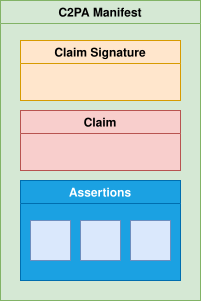
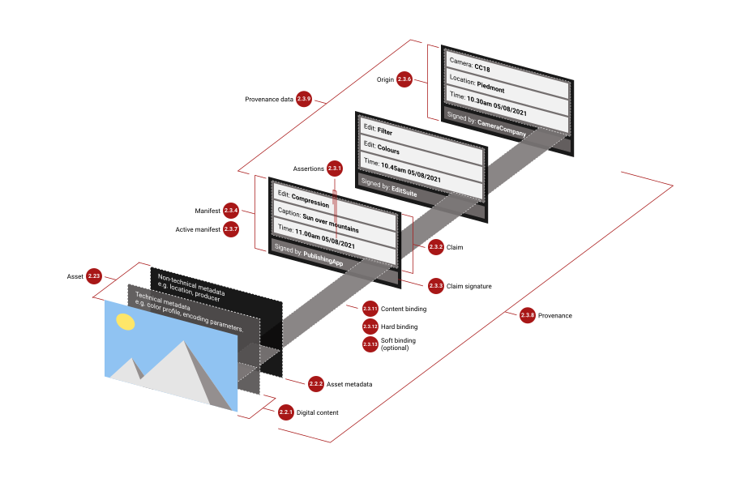
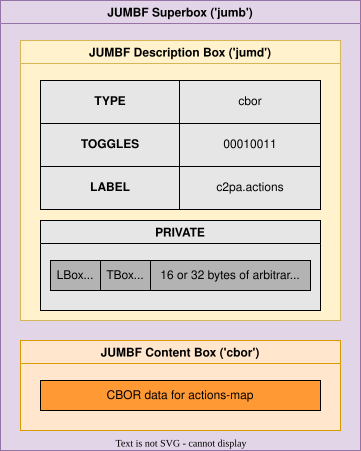
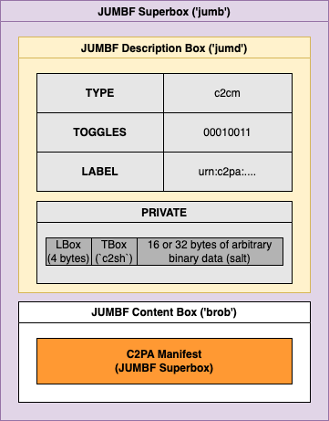
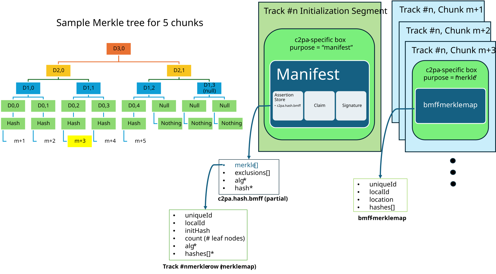
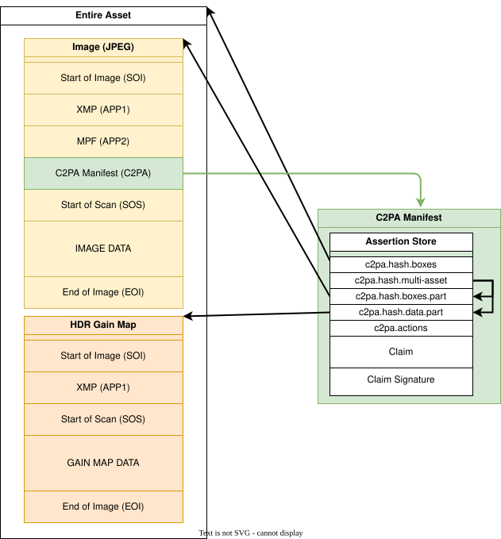
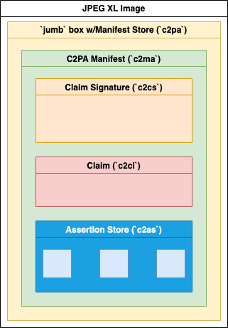

Content Credentials : C2PA Technical Specification
- 1. Introduction
- 2. Glossary
- 3. Elements of a Content Credential
- 4. Standard Terms
- 5. Versioning
- 6. Normative References
- 7. Entity Diagram
- 8. Assertions
- 9. Unique Identifiers
- 10. Claims
- 11. Manifests
- 12. Cryptography
- 13. Trust Model
- 14. Validation
- 14.1. Validation Process
- 14.2. Returning Validation Results
- 14.3. Displaying Manifest Information
- 14.4. Determining the hashing algorithm
- 14.5. Locating the Active Manifest
- 14.6. Locating and Validating the Claim
- 14.7. Validate the Signature
- 14.8. Validate the Time Stamp
- 14.9. Validate the Credential Revocation Information
- 14.10. Validate the Assertions
- 14.11. Validate the Ingredients
- 14.12. Validate the Asset’s Content
- 15. Live Media
- 16. C2PA Standard Assertions
- 17. Patent Policy
- Appendix A: Embedding manifests
- A.1. Supported Formats
- A.2. Embedding manifests in multi-part assets
- A.3. Embedding manifests into non-BMFF-based assets
- A.4. Embedding manifests into PDFs
- A.5. Embedding manifests into BMFF-based assets
- A.6. Embedding manifests into ZIP-based formats
- A.7. Embedding Manifests into HTML
- A.8. Embedding Manifests into Unstructured Text
- A.9. Embedding Manifests into Structured Text
- A.10. Embedding manifests into WARC files
- Appendix B: User Experience
- Appendix C: Standard Validation Status Codes
- Appendix D: Considerations for Deprecation
- Appendix E: Version History
- E.1. 2.5 - October 2026
- E.2. 2.4 - April 2026
- E.3. 2.3 - December 2025
- E.4. 2.2 - May 2025
- E.5. 2.1 - September 2024
- E.6. 2.0 - January 2024
- E.7. 1.4 - November 2023
- E.8. 1.3 - April 2023
- E.9. 1.2 - October 2022
- E.10. 1.1 - September 2022
- E.11. 1.0 - December 2021
- E.12. Index
- E.13. Core Schemas
- E.14. URI Types
- E.15. Hash Assertions
- E.16. Content Assertions
- E.17. Trust and Security
- E.18. Common Types
- E.19. Live Media
- Appendix F: Deprecated Constructs

This work is licensed under a Creative Commons Attribution 4.0 International License.
THESE MATERIALS ARE PROVIDED “AS IS.” The parties expressly disclaim any warranties (express, implied, or otherwise), including implied warranties of merchantability, non-infringement, fitness for a particular purpose, or title, related to the materials. The entire risk as to implementing or otherwise using the materials is assumed by the implementer and user. IN NO EVENT WILL THE PARTIES BE LIABLE TO ANY OTHER PARTY FOR LOST PROFITS OR ANY FORM OF INDIRECT, SPECIAL, INCIDENTAL, OR CONSEQUENTIAL DAMAGES OF ANY CHARACTER FROM ANY CAUSES OF ACTION OF ANY KIND WITH RESPECT TO THIS DELIVERABLE OR ITS GOVERNING AGREEMENT, WHETHER BASED ON BREACH OF CONTRACT, TORT (INCLUDING NEGLIGENCE), OR OTHERWISE, AND WHETHER OR NOT THE OTHER MEMBER HAS BEEN ADVISED OF THE POSSIBILITY OF SUCH DAMAGE.
1. Introduction
1.1. Overview
With the increasing velocity of digital content and the increasing availability of powerful creation and editing techniques, establishing the provenance of media is critical to ensure transparency, understanding, and ultimately, trust.
We are witnessing extraordinary challenges to trust in media. As social platforms amplify the reach and influence of certain content via ever more complex and opaque algorithms, mis-attributed and mis-contextualized content spreads quickly. Whether inadvertent misinformation or deliberate deception via disinformation, inauthentic content is on the rise.
Currently, those who wish to include metadata about their work cannot do so in a secure, tamper-evident and standardized way across platforms. Without this information coming from a recognized source, publishers and consumers lack critical context for determining the authenticity of media.
Provenance empowers content creators and editors, regardless of their geographic location or degree of access to technology, to disclose information about how an asset was created, how it was changed and what was changed. Each time an asset is changed, the existing provenance of the asset is preserved, with each new change being added to the provenance. In this way, content with provenance provides indicators of authenticity so that consumers can have awareness of altered content. Such provenance could include what has been changed and the source of those changes. This ability to provide provenance for creators, publishers and consumers is essential to facilitating trust online.
To address this issue at scale for publishers, creators and consumers, the Coalition for Content Provenance and Authenticity (C2PA) has developed this technical specification for providing content provenance and authenticity. It is designed to enable global, opt-in, adoption of digital provenance techniques through the creation of a rich ecosystem of digital provenance enabled applications for a wide range of individuals and organizations while meeting appropriate security requirements.
This specification has been, and continues to be, informed by scenarios, workflows and requirements gathered from industry experts and partner organizations, including the Project Origin Alliance and the Content Authenticity Initiative (CAI). It is also possible that regulatory bodies and governmental agencies could utilize this specification to establish standards for digital provenance.
1.2. Scope
This specification describes the technical aspects of the C2PA architecture; a model for storing and accessing cryptographically verifiable information whose trustworthiness can be assessed based on a defined trust model. Included in this document is information about how to create and process a C2PA Manifest and its components, including the use of digital signature technology for enabling tamper-evidence as well as establishing trust.
Prior to developing this specification, the C2PA created our Guiding Principles that enabled us to remain focused on ensuring that the specification can be used in ways that respect privacy and personal control of data with a critical eye toward potential abuse and misuse. For example, implementers of this specification are strongly encouraged to provide creators and publishers of media assets with the ability to control whether certain provenance data is included.
|
From the overarching goals section of the guiding principles: C2PA specifications DO NOT provide value judgements about whether a given set of provenance data is 'good' or 'bad,' merely whether the assertions included within can be validated as associated with the underlying asset, correctly formed, and free from tampering. |
It is important that the specification does not negatively impact content accessibility for consumers.
Other documents from the C2PA will address specific implementation considerations such as expected user experiences and details of our threat and harms modelling.
1.3. Technical Overview
The C2PA information comprises a series of statements that cover areas such as asset creation, edit actions, capture device details, bindings to content and many other subjects. These statements, called assertions, make up the provenance of a given asset and represent a series of trust signals that can be used by a human to improve their view of trustworthiness concerning the asset. Assertions are wrapped up with additional information into a digitally signed entity called a claim. This claim is digitally signed by the claim generator on behalf of the signer, using the signer’s signing credential, producing the claim signature.
These assertions, claims, and the claim signature are all bound together into a verifiable unit called a C2PA Manifest (see Figure 1, “A C2PA Manifest and its constituent parts”) by a hardware or software component called a claim generator. The set of C2PA Manifests, as stored in the asset’s Content Credential, represent its provenance data.

1.3.1. Establishing Trust
The basis of making trust decisions in C2PA, our trust model, is the identity of the signer associated with the cryptographic signing key used to sign a claim in a C2PA Manifest. The claim signatures of C2PA Manifests, when combined with trusted time stamps, can undergo the validation process indefinitely to determine if claims were signed while the signing credentials were valid and not revoked.
1.3.2. An Example
A very common scenario will be a user taking a photograph with their C2PA-enabled camera (or phone). In that instance, the camera would create a manifest containing some assertions including information about the camera itself, a thumbnail of the image and some cryptographic hashes that bind the photograph to the manifest. These assertions would then be listed in the Claim, which would be digitally signed and then the entire C2PA Manifest (see Figure 2, “Example C2PA Manifest of a Photograph”) would be embedded into the output JPEG. This C2PA Manifest would remain valid indefinitely.
A Manifest Consumer, such as a C2PA validator, helps users to establish the trustworthiness of the asset by first validating the digital signature and its associated credential. It also checks each of the assertions for validity and presents the information contained in them, and the signature, to the user in a way that they can then make an informed decision about the trustworthiness of the digital content.
1.3.3. Design Goals
In the creation of the C2PA architecture, it was important to establish some clear goals for the work to ensure that the technology was usable across a wide spectrum of hardware and software implementations worldwide and accessible to all. Those goals can be found in Table 1, “C2PA Design Goals”.
| Goal | Description |
|---|---|
Privacy |
Enable users to control the privacy of their information, including consumption data and information recorded in provenance |
Responsibility |
Ensure consumers can determine the provenance of an asset |
Scalability |
Enable creation/consumption/validation of media provenance at the same scale as media creation/consumption on the web |
Extensibility |
Ensure future metadata and credential providers are able to add their information without requiring input or approval from the C2PA |
Interoperability |
Ensure that differing implementations are able to operate with each other without ambiguity |
Whole Workflow Applicability |
Maintain the provenance of the asset across multiple tools, from creation through all subsequent modification and publication/distribution |
Technology Minimalism |
Create only the minimum required novel technology in the specification by relying on prior, well-established techniques |
Security |
Design to ensure that consumers can trust the integrity and source of provenance, and ensure the design is reviewed by experts |
Content Ubiquity |
Enable the inclusion of provenance for all common media types, including documents |
Flexible Locality |
Enable both online and offline (asset-only) storage and consumption/validation of provenance |
Global Universality |
Design for the needs of interested users throughout the world |
Accessibility |
Ensure that the technology can be used in a way that conforms to recognized accessibility standards, such as WCAG |
Harms and Misuse |
Design to avert and mitigate potential harms, including threats to human rights and disproportionate risks to vulnerable groups |
Evolving |
Continuous review of the specification against these goals to ensure that they remain our priority |
1.4. How to Read This Specification
Before reading this specification, it’s helpful to determine which parts of the specification apply to your role. It’s easier to read the spec in relevant parts and in a useful order rather than as a whole from start to finish.
Below are common roles and the sections most relevant to them, listed in the order it’s most helpful to read them.
1.5. Claim Generators
The core implementation flow for Claim Generators is to create assertions, reference them from a claim, include relevant ingredients, bind the claim to the asset, sign the claim, and package everything into a valid C2PA Manifest.
Examples of Claim Generators in the C2PA ecosystem include cameras, recorders, AI asset creators, asset editing software, and transcoders.
Must Read to Implement a Claim Generator
Technical Overview
Read: All of this section.
Why: Provides a basic mental model of how a C2PA Manifest is structured and why.
Glossary
Read: Claim Generator, signer, validator, assertion, claim, C2PA Manifest, ingredient, hard binding, active manifest.
Why: Lays the groundwork for understanding the terms used throughout the spec.
Assertions
Read: All of this section.
Why: Assertions are the statements a Claim Generator creates to signal something about an asset’s provenance, such as that it was captured by a camera, edited by software, or derived from another asset. Claim Generators need to understand how assertions are structured, referenced, and made tamper-evident.
Unique Identifiers
Read: All of this section.
Why: Explains how each C2PA Manifest is uniquely identified, using a C2PA URN. Claim Generators need this when creating new manifests and when preserving or importing ingredient manifests.
Binding to Content
Read: All of this section.
Why: Generated C2PA Manifests need a hard binding: a cryptographic link between the asset and the C2PA Manifest. This section explains what constitutes a hard binding. It also explains how a C2PA Manifest may be discovered using a soft binding, such as a watermark, if the C2PA Manifest has been stripped from the asset.
Claims
Read: All of this section.
Why: Claim Generators produce claims. A claim references the assertions being made about an asset and is the object that gets signed.
URI References
Read: All of this section.
Why: Explains how claims and other C2PA Manifest components reference assertions, signatures, ingredients, and external resources. Claim Generators need to construct these references correctly and include hashes that allow validators to confirm integrity.
Manifests
Read: All of this section.
Why: Explains how claims, assertions, signatures, and supporting materials are packaged into a C2PA Manifest, how active manifests work, and how manifests are embedded within a file or externally referenced.
Embedding C2PA Manifests
Read: Only the subsections for the asset formats the Claim Generator implementer supports.
Why: When embedding a C2PA Manifest into an asset, the Claim Generator must place or reference the C2PA Manifest correctly for each asset format. This is where implementers find the practical file format rules.
C2PA Standard Assertions
Read: Only the assertions the Claim Generator plans to emit.
Why: This is the catalogue of standard assertions that a Claim Generator can emit. Implementers may only need to read about the assertions they plan to generate, not the full catalogue.
Cryptography
Read: All of this section.
Why: Claim Generators only use permitted algorithms and produce signatures that validators can verify.
Trust Model
Read: Overview, Identity of Signers, X.509 Certificates.
Why: Explains how signer identity, certificates, time stamps, and revocation information affect whether a signature can be trusted. Claim Generators need to understand this in order to produce signatures and credentials that validators can evaluate as valid and trusted.
Must Read Only If the Claim Generator Includes Live Media Assets
Live Media
Read: All of this section.
Why: This section is only needed for Claim Generators handling live content, such as live video and audio assets, as well those using dynamic packaging.
Must Read Only If the Claim Generator Supports Ingredients
Validation
Read: All of this section.
Why: Claim Generators that support ingredients must implement full validator behavior, since ingredients must be validated at the time of ingestion. Even Claim Generators that do not support ingredients can use this section as a QA checklist to understand how validators will evaluate their output.
1.6. Validators
The core implementation flow for validators is to locate the C2PA Manifest Store, identify the active manifest, validate the claim and signature, check signer trust and credential status, validate assertions and ingredients, validate the asset’s content binding, and return or display validation results.
Examples of validators in the C2PA ecosystem include photo gallery applications, social media platforms, news publishers, and verification tools.
Must Read to Implement Validation
Technical Overview
Read: All of this section.
Why: Provides a basic mental model of how a C2PA Manifest is structured and why.
Glossary
Read: Validator, Claim Generator, signer, assertion, claim, manifest consumer, C2PA Manifest, asset, editorial transformation, composed asset, hard binding, soft binding, active manifest, trust signals, C2PA Trust List.
Why: Lays the groundwork for understanding the terms used throughout the spec.
Manifests
Read: The sections on manifest packaging, manifest types, embedded manifests, and external manifests.
Why: Helps validators understand the different types of C2PA Manifests, how a C2PA Manifest Store is structured, and how to identify the active C2PA Manifest.
Binding to Content
Read: The sections on hard bindings and soft bindings.
Why: Validators need to understand how C2PA Manifests are bound to assets so they can determine whether a manifest belongs to the asset and whether the asset content has changed. Soft binding may also be useful for validators whose workflows include content matching or manifest recovery.
Cryptography
Read: The sections on hashing and digital signatures.
Why: Outlines the permitted hash and signature algorithms needed to verify claims, signatures, time stamps, and content bindings correctly.
Trust Model
Read: The sections on trust-model overview, signer identity, validation states, trust lists, and X.509 certificates.
Why: Explains how validators can tell whether a C2PA Manifest is well-formed, valid, and/or trusted, and how signer identity, certificates, trust lists, time stamps, and revocation information affect validation results.
Validation
Read: All of this section.
Why: This is the core validator section. It provides instructions on how validators locate the active C2PA Manifest, validate the claim, verify the signature, validate time stamps and credential revocation information, validate assertions and ingredients, confirm the asset’s content binding, and return validation results.
C2PA Standard Assertions
Read: All of this section.
Why: Validators may encounter many standard assertions, but implementers generally only need to understand the assertion types their product handles.
Must Read Only If Displaying Validation Results to End Users
User Experience
Read: This section if the validator displays the information contained in a C2PA Manifest to users.
Why: Validators that publish provenance, validation status, warnings, or trust signals need to do so without misleading users. This section also details current best practices.
Must Read Only If Validating Live Media Assets
Live Media
Read: This section only if the validator handles live content such as live video and audio.
Why: Live content has additional validation considerations that do not apply to most validator implementations.
Helpful Context on C2PA Data Structures
Embedding C2PA Manifests
Read: Only the subsections for the file formats the validator implementer directly parses.
Why: Provides file format-specific information on where C2PA Manifests are embedded or referenced.
Assertions
Read: The sections on assertion labels, versioning, multiple instances, assertion storage, and redaction.
Why: Provides details on what data an assertion might contain, and how assertions can be packaged, stored, and redacted, helping validators parse and evaluate assertions.
Claims
Read: The overview and syntax sections.
Why: Validators may want to understand how claims are structured as they determine whether a claim is valid.
URI References
Read: All of this section.
Why: Explains how claims and other C2PA Manifest components point to assertions, signatures, ingredients, or external resources, and how hashed references help confirm that the referenced component is the intended one and has not changed, a key part of validation.
1.7. Security Reviewers
Security reviewers inspect the various specifications and guidance documents from the C2PA to determine whether the trust model, cryptographic algorithms, validation process, and security guidance meet current best practices.
Must Read to Review C2PA Security
Design Goals
Read: All of this section.
Why: Explains the security and provenance goals the C2PA specification is designed to support, including what the specification is intended to prove and what it is not intended to prove.
Technical Overview
Read: All of this section.
Why: Provides a basic mental model of how the C2PA specification is structured, including claims, assertions, manifests, signatures, ingredients, and validation.
Information Security Considerations
Read: All of this section.
Why: This is the core security-review section. It outlines threats, harms, misuse and abuse scenarios, and other security considerations for reviewers to evaluate.
Trust Model
Read: All of this section.
Why: Explains how the C2PA specification defines signer identity, validation states, trust lists, X.509 certificates, time stamps, and revocation information. Security reviewers need this section to understand the trust model and how trust decisions are scoped.
Cryptography
Read: All of this section.
Why: Describes the permitted hash and signature algorithms. Security reviewers need this section to evaluate whether the cryptographic choices and requirements meet current best practices.
Validation
Read: All of this section.
Why: Explains how validators locate the C2PA Manifest associated with an asset, verify signatures, validate time stamps and revocation information, validate assertions and ingredients, and confirm content bindings. Security reviewers need this section to evaluate whether validation behavior is complete, consistent, and resistant to misuse.
Helpful Context on C2PA Data Structures
Assertions
Read: All of this section.
Why: Helps reviewers understand how assertions are structured, referenced, stored, versioned, and redacted, which is important for reviewing integrity, privacy, and tamper-resistance properties.
Binding to Content
Read: All of this section.
Why: Explains hard bindings and soft bindings. Security reviewers need this context to evaluate how well the C2PA specification ties provenance metadata to assets and what risks remain when assets are modified, transformed, stripped, or matched through soft-binding workflows.
Claims
Read: All of this section.
Why: Helps reviewers understand what is signed, how assertions are referenced by a claim, and how claims function as the core integrity-protected statement in a C2PA Manifest.
Manifests
Read: All of this section.
Why: Explains how claims, assertions, signatures, and supporting materials are packaged, embedded, externally referenced, and organized into an active C2PA Manifest. Security reviewers need this context to evaluate C2PA Manifest integrity, ambiguity, stripping, and substitution risks.
Embedding C2PA Manifests
Read: Only the asset formats relevant to the review.
Why: File format embedding rules may affect C2PA Manifest discovery, stripping, replacement, ambiguity, and content-binding behavior.
C2PA Standard Assertions
Read: The assertions relevant to the reviewer’s threat model.
Why: The standard assertion catalogue defines the information that an implementation of the C2PA specification are required to emit & validate, as well as rules for the creation of custom assertions. Security reviewers may need to inspect specific assertions, such as content hash, actions, ingredients, metadata, time stamps, certificate status, external references, and AI disclosure.
Must Read Only If Reviewing User-Facing Trust Signals
User Experience
Read: This section if reviewing user-facing trust signals or display requirements.
Why: Security claims can be undermined by misleading presentation. Reviewers should assess whether provenance, validation status, warnings, and trust indicators are presented in a way that avoids overstatement.
Must Read Only If Reviewing Live Media Workflows
Live Media
Read: This section only if reviewing live content workflows, such as live video and audio, or workflows that use dynamic packaging.
Why: Live content introduces additional validation, continuity, segment, session-key, and timing considerations that do not apply to static asset workflows.
2. Glossary
2.1. Introductory terms
2.1.1. Actor
A human or non-human (hardware or software) that is participating in the C2PA ecosystem. For example: a camera (capture device), image editing software, cloud service or the person using such tools.
2.1.2. Claim generator
The non-human (hardware or software) actor that generates the claim about an asset as well as the claim signature, thus leading to the asset's associated C2PA Manifest.
| The claim generator is is a component of a larger system, such as a library, software development kit (SDK), or shared service that a signer relies on to generate and embed claims in assets, but is not the Signer itself and thus does not assume responsibility for the content of the Claim or Assertions. |
2.1.4. Manifest consumer
An actor who consumes an asset with an associated C2PA Manifest for the purpose of obtaining the provenance data from the C2PA Manifest.
2.1.5. Validator
A Manifest Consumer whose role is to perform the actions described in validation.
2.2. Assets and Content
2.2.1. Digital content
The portion of an asset that represents the actual content, such as the pixels of an image, along with any additional technical metadata required to understand the content (e.g., a colour profile or encoding parameters).
2.2.2. Asset metadata
Non-technical information about the asset and its digital content.
2.2.3. Asset
A file or stream of data containing digital content, asset metadata and optionally, a C2PA Manifest.
| For the purposes of this definition, we will extend the typical definition of "file" to include cloud-native and dynamically generated data. |
2.2.4. Derived asset
A derived asset is an asset that is created by starting from an existing asset and performing actions to it that modify its digital content.
2.2.5. Asset rendition
A representation of an asset (either as a part of an asset or a completely new asset) where the digital content has had a 'non-editorial transformation' action (e.g., re-encoding or scaling) applied.
2.2.6. Composed asset
A composed asset is an asset that is created by building up a collection of multiple parts or fragments of digital content (referred to as ingredients) from one or more other assets. When starting from an existing asset, it is a special case of a derived asset - however a composed asset can also be one that starts from a "blank slate".
EXAMPLES:
-
A video created by importing existing video clips and audio segments into a "blank slate".
-
An image where another image is imported and super-imposed on top of the starting image.
2.2.7. Editorial transformation
A type of transformation that alters either the intent or meaning or both of the digital content.
| Every editorial transformation is a perceptible transformation, but not every perceptible transformation is editorial |
2.2.8. Perceptible transformation
A type of transformation that alters how the digital content is perceived by humans under normal conditions.
2.3. Core Aspects of C2PA
2.3.1. Assertion
A data structure which represents a statement either made (or "created") by the signer or simply gathered at claim generation-time, concerning the asset. This data is a part of the C2PA Manifest.
2.3.2. Assertion store
The logical collection of assertions referenced by a claim within a C2PA Manifest, stored together as a single construct. For the full structural description, see Assertion Store.
2.3.3. Claim
A digitally signed and tamper-evident data structure that references a set of assertions, concerning an asset, and the information necessary to represent the content binding. If any assertions were redacted, then a declaration to that effect is included. This data is a part of the C2PA Manifest.
2.3.4. Claim signature
The digital signature on the claim created using the private key owned by a signer. The claim signature is a part of the C2PA Manifest.
2.3.5. C2PA Manifest
The set of information about the provenance of an asset based on the combination of one or more assertions (including content bindings), a single claim, and a claim signature. A C2PA Manifest is part of a C2PA Manifest Store.
| A C2PA Manifest can reference other C2PA Manifests. |
2.3.6. C2PA Manifest Store
A collection of C2PA Manifests that can either be embedded into an asset or be external to its asset.
2.3.7. Content Credential
This is the preferred non-technical term for a C2PA Manifest. The C2PA Manifest Store therefore represents the Content Credentials of an asset.
Content Credentials also refers to the overall C2PA technology, and is therefore essentially treated as a plural noun. If a C2PA Manifest is a Content Credential, then multiple C2PA Manifest or the broader, universal concept is Content Credentials.
2.3.8. Active Manifest
The last manifest in the list of C2PA Manifests inside of a C2PA Manifest Store which is the one with the set of content bindings that are able to be validated. For the full structural description, see Manifest Store.
2.3.9. Provenance
The logical concept of understanding the history of an asset and its interaction with actors and other assets, as represented by the provenance data.
2.3.10. Provenance data
The set of C2PA Manifests for an asset and, in the case of a composed asset, its ingredients. For the full structural description, see Manifests.
| A C2PA Manifest can reference other C2PA Manifests. |
2.3.11. Authenticity
A property of digital content comprising a set of facts (such as the provenance data and hard bindings) that can be cryptographically verified as not having been tampered with.
2.3.12. Content binding
Information that associates digital content to a specific C2PA Manifest associated with a specific asset, either as a hard binding or a soft binding. For the full structural description, see Binding to Content.
2.3.13. Hard binding
One or more cryptographic hashes that uniquely identifies either the entire asset or a portion thereof.
2.3.14. Soft binding
A content identifier that is either (a) not statistically unique, such as a fingerprint, or (b) embedded as an invisible watermark in the identified digital content.
2.3.15. Trust signals
The collection of information that can inform a Manifest Consumer’s judgment of the trustworthiness of an asset. These are in addition to the signer upon which the fundamental trust model relies.
2.4. Additional Terms
2.4.1. Durable Content Credential
A Durable Content Credential is a Content Credential for which there exists one or more soft bindings that enable its discovery in a manifest repository.
2.4.2. Fingerprint
A set of inherent properties computable from digital content that identifies the content or near duplicates of it.
2.4.3. Invisible Watermark
Information incorporated in a substantially human imperceptible way into the digital content of an asset which can be used, for example, to uniquely identify the asset or to store a reference to a C2PA Manifest.
2.4.4. Visible Watermark
A perceptible component of the digital content carrying some human consumable information about the provenance of the asset.
2.4.5. Manifest Repository
A repository into which C2PA Manifests and C2PA Manifest Stores can be placed, and which can be searched using a content binding.
3. Elements of a Content Credential
This image shows how all these various elements come together to represent the C2PA architecture.

4. Standard Terms
The key words "MUST", "MUST NOT", "REQUIRED", "SHALL", "SHALL NOT", "SHOULD", "SHOULD NOT", "RECOMMENDED", "NOT RECOMMENDED", "MAY", and "OPTIONAL" in this document are to be interpreted as described in BCP 14, RFC 2119, and RFC 8174 when they appear in any casing (upper, lower or mixed).
CDDL Rules and Type Definitions in the CDDL schemas for C2PA constructs are normative. Schema validation is not necessary, nor it is recommended. Comments within CDDL schemas are non-normative. If there is a conflict between the CDDL schema and the normative text of this specification, the normative text takes precedence.
5. Versioning
5.1. Compatibility
As the Content Credentials specification has evolved, constructs such as box labels, assertions (and their fields), claims and time stamps have also evolved. New assertions have been added, and some existing assertions and the claim have newer versions with additional fields. In addition, some constructs have been deprecated. In this specification, when a construct is marked as deprecated, that means that a claim generator shall not write that construct (or value), but that a validator should read it.
To facilitate testing and diagnosing interoperability issues between claim generators and validators, a claim generator should declare which version of the specification it is using to generate the C2PA Manifest by providing a specVersion key in the claim_generator_info field of the claim. When a claim generator sets this field, it is declaring that the active manifest of the asset is produced in accordance with that version of the specification and thus, for example, does not contain any constructs that are deprecated in that version of the specification (see Table 21, “Status of constructs” of Appendix D, Considerations for Deprecation).
A validator shall be compatible with at least one version of the specification, but may be compatible with additional versions. A validator that is compatible with a specific version of the specification shall support all non-deprecated constructs listed for that version. If the validator encounters a C2PA Manifest that uses constructs from a version of the specification that the validator does not support (either because they are deprecated or unknown), it may ignore the unsupported construct and process the rest of C2PA Manifest as if that construct were not present.
When a claim generator is performing ingredient validation, it should add a specVersion key to the validation-results-map to declare what version of the specification was used as the basis for the validation procedure.
5.2. Forward Compatibility
C2PA aims to ensure that Content Credentials created under newer versions of the specification remains parseable and validatable when processed by implementations conforming to earlier versions, wherever practical. Implementations of the C2PA specification should therefore be designed to:
-
Gracefully handle unknown or unrecognized data (e.g., new fields, structures, or claim types) without causing fatal errors.
-
Preserve the integrity of a C2PA Manifest even when parts of it cannot be fully interpreted.
-
Indicate partial interpretation to users or downstream systems, rather than rejecting the C2PA Manifest outright.
While this specification strives to maintain both forward and backward compatibility, there may be occasions when breaking changes are necessary to enable significant advances or address fundamental security, trust, or interoperability concerns. In such cases, versioning guidance and migration considerations will be explicitly documented.
5.3. Version History
A detailed version history of this specification can be found in the Version History appendix of this document.
6. Normative References
6.3. Digital & Electronic Signatures
-
Internet X.509 Public Key Infrastructure: Additional Algorithms and Identifiers for DSA and ECDSA
-
CBOR Object Signing and Encryption (COSE): Structures and Process
-
CBOR Object Signing and Encryption (COSE): Initial Algorithms
-
Internet X.509 Public Key Infrastructure: Logotypes in X.509 Certificates
-
Procedures for Creation and Validation of AdES Digital Signatures, Part 1 (ETSI EN 319 102-1)
-
Electronic Signatures and Trust Infrastructures (ESI); Lists of trusted entities; Data model (ETSI TS 119 602)
-
Electronic Signatures and Infrastructures (ESI); Trusted Lists (ETSI TS 119 612)
6.4. Embeddable Formats
7. Entity Diagram
Figure 4, “C2PA Entity Diagram” provides a look at how all of the pieces of the C2PA system integrate and relate to each other.
An asset embeds a C2PA Manifest Store which holds one or more C2PA Manifests; the last of these is the active manifest, whose content bindings are validated against the asset’s digital content. Within each manifest, the assertion store collects the assertions (including any ingredient assertions and the content binding); the claim references those assertions by URI and is cryptographically signed by the claim signature. Green lines denote containment (one component is structurally embedded within another); blue lines denote logical references between components.
For the full structural description of each component see Manifests, Assertions, Claims, and Binding to Content.
8. Assertions
8.1. General
It is expected that each claim generator, used by actors in the system that creates or processes an asset, will create or assemble one or more assertions about when, where, and how the asset was originated or transformed. An assertion is labelled data, typically (though not required to be) in a CBOR-based structure which represents a declaration about an asset. Some of these assertions will contain human-generated information (e.g., alternate text for accessibility) while others will come from machines (software/hardware) providing the information they generated (e.g., camera type).
Some examples of assertions are:
-
metadata (e.g., camera information such as maker or lens);
-
actions performed on the asset (e.g., clipping, color correction);
-
thumbnail of the asset or its ingredients;
-
content bindings (e.g., cryptographic hashes).
Certain assertions may be redacted by subsequent claims (see Section 8.8, “Redaction of Assertions”), but they cannot be modified once made as part of a claim.
8.2. Labels
8.2.1. Namespacing
String values in C2PA data structures may be organized into namespaces using a period (.) as a separator. The C2PA namespace, c2pa, shall be the beginning of any string value defined in this specification. In addition to the c2pa namespace, the C2PA namespace registry lists other top-level namespaces.
Entity-specific namespaces, meaning any namespace other than c2pa or those on the registry, shall begin with the Internet domain name for the entity, beginning with a valid IANA top-level domain, similar to how Java packages are defined (e.g., com.litware, net.fineartschool).
The purpose of the entity-specific namespace is to avoid collisions between labels defined by different entities. For example, if two different entities define a label called metadata, the use of that format for entity-specific namespaces allows them to be easily distinguished as com.litware.metadata and net.fineartschool.metadata.
|
The period-separated components of an entity-specific namespace shall follow the variable naming convention ([a-zA-Z0-9][a-zA-Z0-9_-]*) specified in the POSIX or C locale, as defined in the ABNF below (ABNF for Namespaces).
qualified-namespace = "c2pa" / registered-namespace / entity
registered-namespace = <a namespace listed in the C2PA namespace registry>
entity = entity-component *( "." entity-component )
entity-component = 1( DIGIT / ALPHA ) *( DIGIT / ALPHA / "-" / "_" )8.2.2. Label Naming
Each assertion has a label defined either by the C2PA specifications or an external entity. These labels are strings which are namespaced, as described in the preceding clause or by an entity. The most common labels will be defined in the c2pa namespace, but labels may use any namespace that follows the conventions. Labels are also versioned with a simple incrementing integer scheme (e.g., c2pa.actions.v2). If no version is provided, it is considered as v1. The list of publicly known labels can be found in Chapter 16, C2PA Standard Assertions.
Previous versions of this document also provided for namespacing for well-established standards, but that has been superseded by simply having them via entity-specific namespaces (e.g., org.iso, org.w3).
|
namespaced-label = qualified-namespace label
qualified-namespace = "c2pa" / entity
entity = entity-component *( "." entity-component )
entity-component = 1( DIGIT / ALPHA ) *( DIGIT / ALPHA / "-" / "_" )
label = 1*( "." label-component )
label-component = 1( DIGIT / ALPHA ) *( DIGIT / ALPHA / "-" / "_" )The period-separated components of a label follow the variable naming convention ([a-zA-Z][a-zA-Z0-9_-]*) specified in the POSIX or C locale, with the restriction that the use of a repeated underscore character (__) is reserved for labelling multiple assertions of the same type.
8.3. Versioning
When an assertion’s schema is changed, it should be done in a backwards-compatible manner. This means that new fields may be added and existing ones may be marked as deprecated (i.e., can be read, but never written). Existing fields shall not be removed. The label would then consist of an incremented version number, for example moving from c2pa.actions (deprecated) to c2pa.actions.v2.
Since the addition of optional fields can be done while maintaining backwards compatibility, such fields may be added to an existing assertion’s schema without a change to the version number.
Deprecated fields for C2PA standard assertions shall be indicated in Chapter 16, C2PA Standard Assertions. Claim generators shall not insert data into deprecated assertion fields when creating assertions.
In those situations where a non-backwards compatible change is required, instead of increasing the label’s version number, the assertion shall be given a new label.
For example, c2pa.ingredient could be changed to the fictional c2pa.component.
|
8.4. Multiple Instances
Multiple assertions of the same type can occur in the same manifest, but since assertions are referenced by claims via their label, the assertion labels are required to be unique. This is accomplished by adding a double-underscore and a monotonically increasing index to the label. For example, if a manifest contains a single assertion of type c2pa.metadata, then the assertion label will be c2pa.metadata. If a manifest contains three assertions of this type, the labels will be c2pa.metadata, c2pa.metadata__1 and c2pa.metadata__2.
When a label includes a version number, that version number is part of the label itself. As such, when there are multiple instances, the instance number continues to follow the label - e.g., c2pa.ingredient.v2__2.
8.5. Schema Validation
The schemas provided in this document, as well as the machine readable ones that can be downloaded from the C2PA website, should be used by claim generators to ensure that the assertions they create are consistent with the expected structures. These schemas can also be used as aids in understanding the syntax to be read or written. Validators should not validate inputs against these schemas.
8.6. Assertion Store
The set of assertions referenced by a claim in a manifest are collected together into a logical construct that is referred to as the assertion store. The assertions and assertion store shall be stored as described in Section 11.5, “Serialization”; in particular, each assertion referenced in a claim’s created_assertions or gathered_assertions (but not redacted_assertions) shall be present in the assertion store located in the same C2PA Manifest as the claim.
In each manifest, there is a single assertion store. However, as an asset may have multiple manifests associated with it, each one representing a specific series of assertions, there may be multiple assertion stores associated with an asset.
Each assertion in the assertion store should include a randomly-generated salt in the private c2sh box within its JUMBF Description Box, as documented in Section 9.4.2.3, “Hashing JUMBF Boxes”, so that subsequent generators can redact assertions securely.
8.7. Embedded vs Externally-Stored Data
Some assertion data, due to its size or an infrequent need for it, may be externally hosted. Such data are not embedded in the assertion store, but instead are referenced by URI. This is accomplished through either a cloud data assertion for remotely-stored C2PA assertions (JUMBF) or an external reference assertion for either remotely stored assertion or non-assertion data. In both cases, the externally hosted data is not retrieved nor validated as part of manifest validation, and is only retrieved and validated when specifically needed by an application according to a different set of validation rules as described in Section 14.10, “Validate the Assertions”.
8.8. Redaction of Assertions
Assertions that are present in an asset-embedded manifest may be removed from that asset’s manifest when the asset is used as an ingredient. This process is called redaction.
Redaction shall be performed either by removing the entire assertion from the manifest’s assertion store or by replacing its content, as described in Section 14.10.3, “Redacted Assertion Representation”.
In addition, a record that something was removed shall be added to the claim in the form of a URI reference to the redacted assertion in the redacted_assertions field of the claim. It is also strongly recommended that the claim generator should add a c2pa.redacted action with a redacted field as described in Section 16.4.1.4.8, “Parameters”.
When redacting an ingredient assertion that references a C2PA Manifest, the associated manifest shall be removed from the C2PA Manifest Store if no other references to it remain after redacting.
|
Because each assertion’s URI reference includes the assertion label, it is also known what type of information (e.g., thumbnail, metadata, etc.) was removed. This enables both humans and machines to apply rules to determine if the removal was acceptable. |
Unless the assertion redaction is accompanied by changes to the data covered by content bindings, an update manifest should be used to document the redaction, to indicate that digital content was not changed.
Claim generators shall not redact assertions with a label of c2pa.actions or c2pa.actions.v2 as this assertion type represents essential information in understanding the history of an asset. When creating an update manifest, the claim generator shall not redact the hard binding to content assertion that applies to the current asset.
| How a validator handles redacted assertions, including the representation described in Section 14.10.3, “Redacted Assertion Representation”, is described in Section 14.10, “Validate the Assertions”. |
8.9. Specifications of time in assertions
The default specification for a date/time value in an assertion is the date/time format which is serialized in CBOR as tag number 0 (RFC 8949, 3.4.1) and represented in CDDL as type tdate.
CBOR Tag 0 is described in RFC 8949 as "the date-time production in RFC 3339, as refined by Section 3.3 of RFC 4287, representing the point in time described there". This means that the presence of either an explicit timezone or Z (for UTC) is required.
|
Time values in this specification have different evidentiary meanings:
-
The standard use of time records the signer’s claim of the time in question.
-
A claimed time of signing specifically records the time (or interval) of signing, as claimed by the signer. It is not independently authoritative.
-
A trusted time stamp contains evidence from a Time-Stamping Authority (TSA) about the data submitted to that TSA. Its meaning and validation are defined by the time stamp profile and do not replace the semantics of other time fields.
Claim generator provided timestamp fields use generator-lower-bound-time-type or generator-upper-bound-time-type. A value may be either a direct tdate or a map containing a tdate in value and an optional timeStampType. A direct tdate, or a map without timeStampType, shall be interpreted as absolute.
absolute indicates recorded time. lowerBound indicates a lower bound on the recorded time but makes no guarantee about the actual time. upperBound indicates an upper bound on the recorded time but makes no guarantee about the actual time. When provided on corresponding start and end fields, lower and upper bounds bracket the range within which the actual process or action occurred.
There is one case, as described when adding a claimed time of signing, where the time is represented as a CBOR tag number 1 (RFC 8949, 3.4.2) (as the number of seconds from 1970-01-01T00:00Z).
Additionally there is the time stamp assertion, which uses the standard time-stamping formats as described in the signing process.
The reason why there are different types of date & time representations is to allow for the most appropriate representation, based on existing standards in use, for each specific use case.
9. Unique Identifiers
9.1. Uniquely Identifying C2PA Manifests and Assets
Every C2PA Manifest is uniquely identified and referenced by a Uniform Resource Name RFC 8141, URNs from the c2pa URN namespace, and a C2PA asset is uniquely identified by the c2pa URN value of its active manifest. The ABNF for the C2PA URN is described by ABNF for C2PA URN.
A c2pa URN shall consist of two mandatory and two optional components, in the following order, with colons (:) between each section.
-
URN identifier (
urn:c2pa): REQUIRED. -
UUID v4, in string representation (as per RFC 9562, UUIDs, section 4): REQUIRED.
-
Claim Generator identifier string : OPTIONAL.
-
Version and Reason string (as described below) : OPTIONAL.
When present, the "Claim Generator identifier" string shall consist of no more than 32 characters from the ASCII range (as per RFC 20), but which are not Control Characters (RFC 20, 5.2) or Graphic Characters (RFC 20, 5.3).
When present, the "Version and Reason" string shall consist of a positive integer, followed by an underscore (_) and then another positive integer. The details of each of these values and how they are to be used is described in Versioning Manifests Due to Conflicts. In addition, when a "Version and Reason" string is present, a "Claim Generator identifier" string shall also be present but it may be empty.
c2pa_urn = c2pa-namespace UUID [claim-generator [version-reason]]
c2pa-namespace = "urn:c2pa:"
; this definition is taken from RFC 9562
UUID = 4hexOctet "-"
2hexOctet "-"
2hexOctet "-"
2hexOctet "-"
6hexOctet
hexOctet = HEXDIG HEXDIG
DIGIT = %x30-39
HEXDIG = DIGIT / "A" / "B" / "C" / "D" / "E" / "F"
; ASCII, but not Control Characters or Graphic Characters
visible-char-except-space = %x21-7E / %x80-FF
; claim-generator-identifier is a string of 0 to 32 visible-char-except-space characters
; this means that an empty string is valid
claim-generator = ":" claim-generator-identifier
claim-generator-identifier = 0*32visible-char-except-space
; version-reason is a string consisting of a positive integer
; followed by an underscore and a positive integer
version-reason = ":" version "_" reason
version = 1*DIGIT
reason = 1*DIGITExamples:
-
urn:c2pa:F9168C5E-CEB2-4FAA-B6BF-329BF39FA1E4 -
urn:c2pa:F9168C5E-CEB2-4FAA-B6BF-329BF39FA1E4:acme -
urn:c2pa:F9168C5E-CEB2-4FAA-B6BF-329BF39FA1E4:acme:2_1 -
urn:c2pa:F9168C5E-CEB2-4FAA-B6BF-329BF39FA1E4::2_1
| Previous versions of this specification used RFC 9562, UUIDs URN, and had the identifier of the claim generator at the beginning of the URN. However, this was found to be not in compliance with either RFC 9562, UUIDs or RFC 8141, URNs. |
This c2pa URN identifier is used in various parts of a C2PA-enabled workflow, such as when identifying an asset as an ingredient in a derived or composed asset.
9.2. Versioning Manifests Due to Conflicts
Situations may arise where it is necessary to re-label a C2PA Manifest due to a conflict of identifiers. For example, if a claim generator had already added an ingredient manifest into the asset’s C2PA Manifest Store, then later added another ingredient which had a manifest with the same label in its manifest store, but this latter version of the manifest was different due, for example, to a manipulation of one of its assertion values. In such a case, the modified version of the ingredient manifest needs to be copied into the asset’s C2PA Manifest Store, and shall be re-labeled.
To re-label a manifest:
-
If the current URN does not contain a "Claim Generator identifier string", then the claim generator shall append a
:. -
In all cases, the claim generator shall append a
:to the URN followed by a monotonically increasing integer, starting with 1, followed by an underscore (_) and then an integer from the list below representing the reason for the re-labeling.-
1: Conflict with another C2PA Manifest
-
For example, if the claim generator has to re-label a C2PA Manifest for the second time due to a conflict, the appended string would be :2_1.
9.3. Identifying Non-C2PA Assets
When working with assets that do not contain a C2PA Manifest, but the asset contains embedded XMP which include values for xmpMM:DocumentID and/or xmpMM:InstanceID as defined in XMP Specification Part 2, 2.2, those values shall be used as identifiers for the asset.
When working with assets that do not contain a C2PA Manifest and do not contain embedded XMP, the claim generator may use any method of its choosing to provide it with a unique identifier.
9.4. URI References
9.4.1. Standard URIs
All references to information in the manifest, whether stored internally to the asset (i.e., embedded) or stored externally to the asset (e.g., in the cloud), shall be referenced via JUMBF URI references as defined in ISO 19566-5:2023, C.2. These URIs are normally used either as part of a hashed_uri or hashed_ext_uri data structure.
| Section 16.4.1.4.6, “Unique Identifiers for Actions” describes an extension to standard JUMBF URIs to allow for the referencing of individual fields within a CBOR Content Type Box. This extension is only for use in that context, and is not a general extension to JUMBF URIs. |
When the reference is to a compressed manifest, the JUMBF URI shall not contain anything about the brob box, but the URI to the manifest is treated as if the manifest was not compressed. This means that the URI would include the label of the c2ma or c2um box, but not the label of the c2cm box. In addition, the URI reference to a compressed manifest shall not include the label of the brob box - but only the label of the compressed manifest itself.
When resolving an internal JUMBF URI reference, if any label in the path is ambiguous due to multiple child boxes having the same label, a validator shall treat the reference as unresolved.
9.4.2. Hashed URIs
9.4.2.1. Embedded
A hashed_uri is used when the URI is for something embedded in the same C2PA Manifest Store.
This specification provides an equivalent hashed-uri-map data structure for schemas using a CDDL Definition (see Section E.14.1, “Hashed URI” for the complete normative schema):
; The data structure used to store a reference to a URL within the same JUMBF
; and its hash. We use a socket/plug here to allow hashed-uri-map to be used in
; individual files without having the map defined in the same file
$hashed-uri-map /= {
"url": jumbf-uri-type, ; JUMBF URI reference
; A string identifying the cryptographic hash algorithm used to compute all
; hashes in this claim, taken from the C2PA hash algorithm identifier list. If
; this field is absent, the hash algorithm is taken from an enclosing
; structure as defined by that structure. If both are present, the field in
; this structure is used. If no value is present in any of these places, this
; structure is invalid; there is no default.
? "alg": tstr .size (1..max-tstr-length),
"hash": bstr, ; byte string containing the hash value
}
; with CBOR Head (#) and tail ($) are introduced in regexp, so not needed
; explicitly
; added support for `&cbor=` extensions in 2.5
jumbf-uri-type /= tstr .regexp "self#jumbf=[A-Za-z0-9/][A-Za-z0-9./:&=-]*[A-Za-z0-9/]"Because assertion stores shall be located in the same C2PA Manifest box as the claim that refers to them, only self#jumbf URIs are permitted. These self#jumbf URIs may be relative to the entire C2PA Manifest Store, in which case they shall start with a / (U+002F, Slash), or relative to the current C2PA Manifest. URIs shall not contain the sequence .. (a pair of U+002E, Full Stop).
self#jumbf URIsThe following are examples of valid self#jumbf URIs:
-
self#jumbf=/c2pa/urn:c2pa:F095F30E-6CD5-4BF7-8C44-CE8420CA9FB7/c2pa.assertions/c2pa.thumbnail.claimis relative to the entire store (since it starts with/); -
self#jumbf=c2pa.assertions/c2pa.thumbnail.claimwould be relative to the manifest of the box containing the URI.
9.4.2.2. External
When referring to a resource that exists externally to the C2PA Manifest Store, a hashed-ext-uri-map data structure is used. It is a variation on the hashed-uri, in that it references an external URI instead of a self#jumbf. The hashed-ext-uri data structure is defined by the hashed-ext-uri-map rule in the following CDDL Definition (see Section E.14.2, “Hashed External URI” for the complete normative schema):
; The data structure used to store a reference to an external URL and its hash.
; We use a socket/plug here to allow hashed-ext-uri-map to be used in individual
; files without having the map defined in the same file
$hashed-ext-uri-map /= {
"url": ext-url-type, ; http/https URL
; A string identifying the cryptographic hash algorithm used to compute the
; hash on this URI's data, taken from the C2PA hash algorithm identifier list.
; Unlike alg fields in other types, this field is mandatory here.
"alg": tstr .size (1..max-tstr-length),
"hash": bstr, ; byte string containing the hash value
? "dc:format": format-string, ; IANA media type of the data
? "size": size-type, ; Number of bytes of data
; additional information about the data's type
? "data_types": [1* $asset-type-map],
}
; with CBOR Head (#) and tail ($) are introduced in regexp, so not needed
; explicitly
ext-url-type /= tstr .regexp "https?:\/\/[-a-zA-Z0-9@:%._\\+~#=]{2,256}\\.[a-z]{2,6}\\b[-a-zA-Z0-9@:%_\\+.~#?&//=]*"|
In keeping with common practice, it is recommended that the |
The optional dc:format field, when present, provides an alternative to the Content-Type field of the http(s) headers. If present, this field shall be used as the required format retrieved during any content negotiate/request. Sometimes, it may also be necessary to provide one or more asset types as the value of the data_types field for more clarity on the format and usage of that data.
An optional size field is also provided to specify the size of the data to be retrieved. This may be useful to a validator as a hint in addition to the hash.
| It could be used to provide information about whether to perform downloading or validation or both. |
9.4.2.3. Hashing JUMBF Boxes
When creating a URI reference to any JUMBF box (e.g., assertions and data boxes), the hash shall be performed over the contents of the structure’s JUMBF superbox, which includes both the JUMBF Description Box and all content boxes therein (but does not include the structure’s JUMBF superbox header).
| More details on hashing can be found at Section 12.1, “Hashing”. |
As described in the latest version of JUMBF (ISO 19566-5:2023), and shown in Figure 5, “Example c2pa.actions assertion”, a new Private field can be present as part of any JUMBF Description box. This C2PA specification defines the C2PA salt as a Private field whose value is a standard box consisting of:
-
a box length (LBox, as a 4-byte big-endian unsigned integer);
-
a box type (TBox, 4-byte big-endian unsigned integer, with a value of
c2sh(for C2PA salt hash)); -
and payload data (consisting of randomly-generated binary data of either 16 or 32 bytes in length).

c2pa.actions assertion10. Claims
10.1. Overview
A claim gathers together all the assertions about an asset at a given time including the set of assertions for binding to the content. The claim is then cryptographically hashed and signed as described in Section 10.3.2.4, “Signing a Claim”. A claim is encoded as a JUMBF superbox with the label c2pa.claim.v2 and a CBOR payload, which shall comply with the Core Deterministic Encoding Requirements of CBOR (see RFC 8949, clause 4.2.1).
| Previous versions supported the use of assertion metadata with claims, but this has been deprecated. |
A previous version of this specification used the label c2pa.claim and associated claim-map for the Claim, but those have now been deprecated. Validators should still accept this label (and associated claim-map), but claim generators shall not produce such a claim.
10.2. Syntax
10.2.1. Schema
The schema for this type is defined by the claim-map-v2 and claim-map rules in the following CDDL Definition for claims with labels c2pa.claim.v2 and c2pa.claim, respectively (see Section E.13.1, “Claim” for the complete normative schema):
; CDDL schema for a claim map in C2PA
claim-map-v2 = {
; uniquely identifies a specific version of an asset
"instanceID": tstr .size (1..max-tstr-length),
; the claim generator of this claim
"claim_generator_info": $generator-info-map,
; JUMBF URI reference to the signature of this claim
"signature": jumbf-uri-type,
"created_assertions": [1* $hashed-uri-map],
? "gathered_assertions": [1* $hashed-uri-map],
; name of the asset (metadata assertion preferred)
? "dc:title": tstr .size (1..max-tstr-length),
; List of JUMBF URI references to the assertions of ingredient manifests being
; redacted
? "redacted_assertions": [1* jumbf-uri-type],
; A string identifying the cryptographic hash algorithm used to compute all
; data hash assertions listed in this claim unless otherwise overridden, taken
; from the C2PA data hash algorithm identifier registry. This provides the
; value for the 'alg' field in data-hash and hashed-uri structures contained
; in this claim
? "alg": tstr .size (1..max-tstr-length),
; A string identifying the algorithm used to compute all soft binding
; assertions listed in this claim unless otherwise overridden, taken from the
; C2PA soft binding algorithm identifier registry."
? "alg_soft": tstr .size (1..max-tstr-length),
; (DEPRECATED) The version of the specification used to produce this claim
; (SemVer)
? "specVersion": semver-string,
; (DEPRECATED) additional information about the assertion
? "metadata": $assertion-metadata-map,
}
; (DEPRECATED) CDDL schema for a claim map in C2PA
claim-map = {
; A User-Agent string formatted as per
; http://tools.ietf.org/html/rfc7231#section-5.5.3, for including the name and
; version of the claims generator that created the claim
"claim_generator": tstr,
"claim_generator_info": [1* generator-info-map],
; JUMBF URI reference to the signature of this claim
"signature": jumbf-uri-type,
"assertions": [1* $hashed-uri-map],
"dc:format": tstr, ; media type of the asset
; uniquely identifies a specific version of an asset
"instanceID": tstr .size (1..max-tstr-length),
? "dc:title": tstr .size (1..max-tstr-length), ; name of the asset
; List of JUMBF URI references to the assertions of ingredient manifests being
; redacted
? "redacted_assertions": [1* jumbf-uri-type],
; A string identifying the cryptographic hash algorithm used to compute all
; data hash assertions listed in this claim unless otherwise overridden, taken
; from the C2PA data hash algorithm identifier registry. This provides the
; value for the 'alg' field in data-hash and hashed-uri structures contained
; in this claim
? "alg": tstr .size (1..max-tstr-length),
; A string identifying the algorithm used to compute all soft binding
; assertions listed in this claim unless otherwise overridden, taken from the
; C2PA soft binding algorithm identifier registry."
? "alg_soft": tstr .size (1..max-tstr-length),
; additional information about the assertion
? "metadata": $assertion-metadata-map,
}
generator-info-map = {
; A human readable string naming the claim generator
"name": tstr .size (1..max-tstr-length),
? "version": tstr, ; A human readable string of the product's version
; hashed URI to the icon (either embedded or remote)
? "icon": $hashed-uri-map / $hashed-ext-uri-map,
; A human readable string of the operating system the claim generator is
; running on
? "operating_system": tstr,
; The version of the specification used to produce this manifest (SemVer)
? "specVersion": semver-string,
* tstr => any
}An example of the claim-map-v2 structure in CBOR diagnostic notation (RFC 8949, clause 8):
{
"instanceID": "urn:uuid:5E7B01FC-4932-4BAB-AB32-D4F12A8AA322",
"alg" : "sha256",
"claim_generator_info" : {
"name": "Acme C2PA SDK",
"version": "2.0"
},
"signature" : "self#jumbf=c2pa.signature",
"created_assertions" : [
{
"url": "self#jumbf=c2pa.assertions/c2pa.hash.data",
"hash": b64'U9Gyz05tmpftkoEYP6XYNsMnUbnS/KcktAg2vv7n1n8='
},
{
"url": "self#jumbf=c2pa.assertions/c2pa.thumbnail.claim",
"hash": b64'G5hfJwYeWTlflxOhmfCO9xDAK52aKQ+YbKNhRZeq92c='
},
{
"url": "self#jumbf=c2pa.assertions/c2pa.ingredient.v3",
"hash": b64'Yzag4o5jO4xPyfANVtw7ETlbFSWZNfeM78qbSi8Abkk='
}
],
"redacted_assertions" : [
"self#jumbf=/c2pa/urn:c2pa:5E7B01FC-4932-4BAB-AB32-D4F12A8AA322/c2pa.assertions/c2pa.metadata"
]
}10.2.2. Fields
The alg field shall contain the hash algorithm used to compute the hash for any hashed-uri, hard binding assertion, or hash assertion that does not explicitly define it. The value of this field, if present, shall be a string that is one of the allowed hash algorithms as defined in Section 12.1, “Hashing”. If the alg field is not present, then each hashed-uri, each hard binding assertion, and each hash assertion shall explicitly declare which hashing algorithm is to be used.
If present, the value of dc:title shall be a human-readable name for the asset. However, instead of setting dc:title, claim generators should create a metadata assertion containing the dc:title field.
The c2pa.claim has a dc:format field which is no longer present in c2pa.claim.v2.
|
If the asset contains XMP, then the asset’s xmpMM:InstanceID should be used as the instanceID. When no XMP is available, then some other unique identifier for the asset shall be used as the value for instanceID.
Some field names, such as dc:title, have namespace prefixes as their names and definitions are taken directly from the XMP standard. However, their usage in C2PA does not require the use of XMP.
|
The signature field shall be present and it shall contain an absolute URI reference to the claim signature in the same C2PA Manifest.
The created_assertions field shall be present and it shall contain one or more URI references to assertions being made by this claim. In a standard manifest, it shall contain, at minimum, a reference to an assertion that represents a hard binding.
All created_assertions are attributed to the signer as the Trust Model is rooted in the trust of the signer.
|
When present, the gathered_assertions field shall contain one or more URI references to assertions that have been provided to the claim generator by other components in the workflow.
By putting an assertion into this list, the claim generator is declaring that the assertion is part of the claim, but it was not sourced from the claim generator and is not attributed to the signer. For example, assertions containing information entered by a human actor or external references would be listed in gathered_assertions.
|
When present, the redacted_assertions field shall contain one or more URI references to redacted assertions.
Previous versions of this specification had a specVersion field in the claim, but that field has been moved to the claim_generator_info field as described in Section 10.2.3, “Claim Generator Info”. The specVersion field in the claim is now deprecated.
|
10.2.3. Claim Generator Info
10.2.3.1. General
Detailed information about the claim generator shall be present as the value of claim_generator_info. A Manifest Consumer shall use the value of claim_generator_info in determining information about the claim generator for itself or for presentation in a UX.
|
The |
10.2.3.2. Generator Info Map
When adding a claim_generator_info field, its value is a generator-info-map object which shall contain a name field. It may also contain either a version field or an icon field or both. In addition, any other field is permitted, using the standard entity-specific namespacing described in Section 8.2.1, “Namespacing”. The data in this object shall represent the non-human (hardware or software) actor that actually generated the claim (aka the claim generator itself).
A claim generator may desire to provide a graphical representation of itself, referred here as an icon, to a Manifest Consumer that is presenting a user experience. The value of the icon field, if present, shall be a hashed URI. This hashed URI shall be to an embedded data assertion whose label is c2pa.icon and follows the rules of assertion labels with respect to multiple instances. Manifest Consumers should also support the data box approach recommended by earlier versions of this specification.
|
As with the assertions array, the hash algorithm used for a hashed URI is determined by the |
A specVersion field should be present, and if so, shall contain a SemVer formatted specVersion field representing the version of this specification used as the normative reference by the Claim Generator to create this C2PA Manifest (e.g., "2.4.0" for version 2.4). Validators should treat this field as purely informational and should not change their validation logic based on this value.
{
"claim_generator_info" : {
"name": "Acme C2PA SDK",
"version": "2.0",
"icon": {
"url": "http://cdn.examplephotoagency.com/logo.svg",
"hash": "5bdec8169b4e4484b79aba44cee5c6bd"
},
"specVersion": "2.4.0"
}
}10.3. Creating a Claim
10.3.1. Creating Assertions
Before the claim can be finalized, all assertions need to be created and stored in a newly created C2PA Assertion Store as described later in this document.
When creating a standard manifest, it may not be possible to know all of the required binding information at the time of claim creation, in which case use the multiple step processing method to setup and then later fill-in the information.
10.3.2. Preparing the Claim
10.3.2.1. Adding Assertions and Redactions
The claim shall contain a created_assertions field and may contain a gathered_assertions field. The combined values from those two fields represent a list of all of the URI references for all assertions that were added to the assertion store that are being "claimed" by this claim. In a standard manifest, the created_assertions field’s value shall include at least one assertion that represents a hard binding.
If any assertions in ingredient claims are being redacted, their URI references shall be added to list which is the value of the redacted_assertions field.
10.3.2.2. Adding Ingredients
In many authoring scenarios, an actor does not create an entirely new asset but instead brings in other existing assets on which to create their work - either as a derived asset, a composed asset or an asset rendition. These existing assets are called ingredients and their use is documented in the provenance data through the use of an ingredient assertion.
When an ingredient contains one or more C2PA manifests, those manifests should be inserted into this asset’s C2PA Manifest Store to help ensure that the provenance data is kept intact. Such ingredient manifests are added to the JUMBF as described in Section 11.4, “Ingredient Storage”. If a manifest with the same unique identifier is already present in the C2PA Manifest Store, the two shall be compared. If they are identical, the new manifest shall be ignored. If they are different, the new manifest shall be added to the store after changing its unique identifier to a new value as described in Chapter 9, Unique Identifiers.
If an ingredient’s manifest is remote, and the claim generator is unable to retrieve the manifest, it should use an error code of manifest.inaccessible to reflect that.
10.3.2.3. Connecting the Signature
The signature cannot be part of the signed payload, but since its label is pre-defined, then the full URI reference is also known. As such, we can include that in the claim by setting the value of the signature field of the claim to that URI reference.
| This provides the explicit binding of the claim to its signature. |
10.3.2.4. Signing a Claim
Producing the signature is specified in Section 12.3, “Digital Signatures”.
For both types of manifests, standard and update, the payload field of Sig_structure shall be the serialized CBOR of the claim document, and shall use detached content mode.
The serialized COSE_Sign1_Tagged structure resulting from the digital signature procedure is written into the C2PA Claim Signature box.
10.3.2.5. Time Stamps
10.3.2.5.1. Use of RFC 3161
If possible, the claim generator should use a RFC 3161-compliant Time Stamping Authority (TSA) (RFC 3161) to obtain a trusted time stamp proving that the signature itself actually existed at a certain date and time and incorporate that into the COSE_Sign1_Tagged structure as a countersignature.
Claim generators are encouraged to obtain and include time stamps to ensure their manifests will remain valid. As described in Chapter 14, Validation, manifests without time stamps cease to be valid when the signing credential expires or becomes revoked. A manifest shall contain only one time stamp.
| Previous versions of this specification allowed for multiple time stamps to be included in a manifest. |
10.3.2.5.2. Choosing the Payload
A previous version of this specification used the same value for the payload field in the time stamp as was used in the Sig_signature as described in Section 10.3.2.4, “Signing a Claim”. This payload is henceforth referred to as a "v1 payload" in a "v1 time stamp" and is considered deprecated. A claim generator shall not create one, but a validator shall process one if present.
The "v2 payload", of the "v2 time stamp", is the value of the signature field of the COSE_Sign1_Tagged structure created as part of Section 10.3.2.4, “Signing a Claim”. A "v2 payload" shall be used by claim generators performing a time stamping operation.
The value of the signature field includes the entire serialized bstr, including the bytes that indicate the major type and the length (not just the string itself).
|
10.3.2.5.3. Obtaining the time stamp
All time stamps shall be obtained as described in RFC 3161 with the following additional requirements:
-
The
MessageImprintof theTimeStampReqstructure (RFC 3161, section 2.4.1) shall be computed by creating theToBeSignedvalue in RFC 9052, section 4.4, with the following values for elements ofSig_structure:-
The
contextelement shall beCounterSignature. -
The
payloadelement shall be the value described by Section 10.3.2.5.2, “Choosing the Payload”. -
The remaining elements of
Sig_structureare as described in Section 12.3.3, “Computing the Signature”.
-
-
The
ToBeSignedvalue is then hashed using a hash algorithm from the allowed list in Section 12.1, “Hashing” that the TSA supports, and that hash algorithm and value are placed in theMessageImprint. If the TSA does not support any hash algorithms from the allowed list, it cannot be used for time stamping.-
Where possible, the hash algorithm should use the same hash algorithm used in the digital signature of the claim.
-
-
The
certReqboolean of theTimeStampReqstructure shall be asserted in the request to the TSA, to ensure its certificate chain is provided in the response.
10.3.2.5.4. Storing the time stamp
v1 time stamps (deprecated) are stored in a COSE unprotected header whose label is the string sigTst. If present, the value of this header shall be a tstContainer defined by Section E.13.2, “Timestamp Container”. The content of the TimeStampResp structure received in reply from the TSA shall be stored as the value of the val property of an element of tstTokens.
v2 time stamps shall be stored in a COSE unprotected header whose label is the string sigTst2. When present, the value of this header shall be a tstContainer defined by Section E.13.2, “Timestamp Container”. The value of the timeStampToken field of the TimeStampResp structure received in reply from the TSA shall be stored as the value of the val property of an element of tstTokens. It shall be formatted as a DER-encoded RFC 3161 TimeStampToken wrapped in a CBOR byte string.
| A v2 time stamp is equivalent to the "CTT" model of COSE Header parameter for RFC 3161 Time-Stamp Tokens Draft. It requires that the complete signature structure be completed prior to time stamping, thus enabling the time stamp to serve as a countersignature on the entire signature structure, including the actual certificate. |
If no time stamps are included, then neither header (sigTst nor sigTst2) shall be present in the COSE unprotected header.
The tstContainer schema is defined in the following CDDL Definition (see Section E.13.2, “Timestamp Container” for the complete normative schema):
; CBOR version of tstContainer and related structures based on JSON schema at
; https://forge.etsi.org/rep/esi/x19_182_JAdES/raw/v1.1.1/19182-jsonSchema.json
tstContainer = {
"tstTokens": [1* tstToken]
}
tstToken = {
"val": bstr
}|
The |
10.3.2.6. Credential Revocation Information
If the signer’s credential supports querying its online credential status, and the credential contains a pointer to a service that provides credential status information with a time stamp, the claim generator should query the service, capture the response, and store it in the manner described for credentials in the Trust Model. If credential revocation information is attached in this manner, a trusted time stamp shall also be obtained after signing, as described in Section 10.3.2.5, “Time Stamps”.
10.3.3. Examples of Claims
10.3.3.1. Single Claim
Here is a visual representation of an image containing a single claim with multiple assertions that have been embedded inside it.

10.3.3.2. Multiple Claims
In this example of creating a second claim for the previous example, one of the original assertions has been redacted from the previous claim. The visual representation for this scenario would look like:

11. Manifests
11.1. Overview
Within C2PA, individual statements about an asset are declared as assertions. A C2PA Manifest is a container that bundles together an assertion store holding those assertions, a claim that hashes the assertions and provides information about the claim generator, and a claim signature over that claim. The C2PA Manifest that describes the asset is called the active manifest. Because assets can be built from ingredients that have their own manifests, there may be multiple manifests associated with the asset. These C2PA Manifests are collected into a single container called the C2PA Manifest Store.
A standard C2PA Manifest includes a hard binding that cryptographically associates the C2PA Manifest with the asset.
| This means that copying or linking a C2PA Manifest to a different asset is detectable and will fail validation. |
The technical details of how the various parts of a C2PA Manifest are serialized can be seen in Section 11.5, “Serialization”.
11.2. Manifest Store
A C2PA Manifest Store contains one or more C2PA Manifests, the last of which is designated the active manifest.
The C2PA Manifest Store is a JUMBF (ISO 19566-5:2023) superbox. See Section 11.5, “Serialization” for more details.
Figure 8, “C2PA Manifest Store” is an example C2PA Manifest Store with a single C2PA Manifest:
11.3. Types of Manifests
11.3.1. Common
All C2PA Manifests shall contain an assertion store, a claim and a claim signature.
11.3.2. Standard Manifests
A standard C2PA Manifest shall contain exactly one hard binding to content assertion.
11.3.3. Update Manifests
In a workflow where additional assertions need to be added to an existing C2PA Manifest, but no changes are made to the digital content or other data covered by content bindings, an Update Manifest should be used.
An Update Manifest shall not contain assertions of types c2pa.hash.data, c2pa.hash.boxes, c2pa.hash.collection.data, c2pa.hash.segment, c2pa.hash.bmff.v3, or c2pa.hash.multi-asset, because the content has not changed and therefore the bindings need not be updated.
In cases where the existing content binding (e.g., a data hash) identifies the C2PA Manifest Store location using a file offset and length, the C2PA Manifest Store shall start at the same file offset after updating, but its length may change.
An Update Manifest may contain assertions of type c2pa.actions or c2pa.actions.v2, provided that the value of the action field of each action present in the actions array of these assertions shall only be one of the following values:
-
c2pa.edited.metadata -
c2pa.opened -
c2pa.published -
c2pa.redacted
An Update Manifest shall not contain a thumbnail assertion.
|
The reason for these requirements is that an |
The Update Manifest shall contain exactly one c2pa.ingredient.v3 assertion that (a) includes both activeManifest and claimSignature fields with values that are the URI references to the C2PA Manifest and Claim Signature respectively of the asset that is being updated and (b) has the value of parentOf for the relationship field.
| The ingredient’s C2PA Manifest can be either a standard manifest or an update manifest. |
11.4. Ingredient Storage
When a C2PA Manifest includes ingredient assertions, and an ingredient contains a C2PA Manifest Store, the C2PA Manifests it contains are normally included in the C2PA Manifest Store of the new asset to ensure that the provenance data is kept intact, as described in Section 10.3.2.2, “Adding Ingredients”.
C2PA previously supported a Data Box Store (c2pa.databoxes). See Section F.4, “Data Box Store” in Appendix F, Deprecated Constructs for historical information.
|
11.5. Serialization
The C2PA Manifest Store and individual C2PA Manifests are serialized using the JPEG Universal Metadata Box Format (ISO 19566-5:2023, JUMBF). This serialized format shall be used also in formats that do not natively support JUMBF, or when C2PA Manifest Stores are stored separately from the asset, such as in a separate file or URI location. The following type, label, and content requirements shall apply:
| Item | JUMBF type UUID | JUMBF Label | Contents |
|---|---|---|---|
C2PA Manifest Store |
|
|
One or more C2PA Manifest superboxes ( |
C2PA Standard Manifest |
|
Exactly one each of a C2PA Assertion Store, a C2PA Claim, and a C2PA Claim Signature. Additionally may contain unrecognized boxes. |
|
C2PA Update Manifest |
|
Exactly one each of a C2PA Assertion Store, a C2PA Claim, and a C2PA Claim Signature. Additionally may contain unrecognized boxes. |
|
C2PA Compressed Manifest |
|
Identical to the label of the compressed manifest |
|
C2PA Standard Manifest (deprecated type) |
|
Exactly one each of a C2PA Assertion Store, a C2PA Claim, and a C2PA Claim Signature. Additionally may contain unrecognized boxes. |
|
C2PA Assertion Store |
|
|
|
C2PA Claim |
|
|
A single CBOR Content Type box ( |
C2PA Claim Signature |
|
|
A single CBOR Content Type box ( |
The boxes defined in Table 2, “C2PA JUMBF boxes” shall satisfy the requirements in Section 11.5.3.2, “Toggles” and Section 11.5.3.3, “Labels”.
Manifest Consumers shall accept c2md superboxes as standard C2PA Manifests, but claim generators shall not create such manifests.
11.5.1. Assertion Store Contents
The C2PA Assertion Store is a JUMBF superbox that shall have the label and type given in Table 2, “C2PA JUMBF boxes”. It shall contain one or more JUMBF superboxes (called C2PA Assertion boxes) whose JUMBF type defines the type of the sub-boxes that contain the assertion data (ISO 19566-5:2023, Annex B). These superboxes shall each have a label as defined in Standard Assertions and shall contain a JUMBF Description Box, one or more JUMBF Content Boxes and possibly a Padding Box (ISO 19566-5:2023, A.4).
The JUMBF Content Type (ISO 19566-5:2023, Annex B) box(es) contained in each assertion superbox should be CBOR Content Type (cbor), JSON Content Type (json), Embedded File Content Type (bfdb & bidb) or UUID Content Type (uuid) though any Content Type defined in JUMBF (ISO 19566-5:2023) and its amendments is permitted.
In addition, a JUMBF Protection Box as described in ISO 19566-4:2020 may also be used.
|
Custom assertions containing other formats/serializations of data, such as encrypted data, are supported through the use of a UUID Content Box containing the custom UUID followed by the data (ISO 19566-5:2023, B.5). |
11.5.2. Compressed Manifests
Both standard and update C2PA Manifests can be compressed, in their entirety.
To support this, C2PA defines a new brob JUMBF content box, based on a similar box in JPEG-XL (ISO/IEC 18181-2:2024).
The brob box shall have box ID of 0x62726F62 (brob).
For either type of manifest, the value of the TYPE field shall be c2cm, the value of the label field shall be identical to the label of the compressed manifest superbox, and the contents of the brob content box shall be the RFC 7932 (Brotli-compressed) bytes of the entire manifest superbox.
See Figure 10, “Example of a compressed manifest” for an example of a compressed standard manifest.

Hashing a compressed box is done in the same way as any other box, as described in Section 9.4.2.3, “Hashing JUMBF Boxes”.
This implies that given a hashed_uri reference from an ingredient assertion to a C2PA Manifest via the activeManifest field, the hash is computed using the same process as any other JUMBF superbox: over the JUMBF Description Box and the brob box with its compressed payload, but excluding the superbox’s header. The contents of the brob box are not decompressed first to compute the hash.
|
|
Any place in this specification that a standard or update manifest is referenced, a compressed standard or update manifest is also valid. |
11.5.3. General C2PA JUMBF Requirements
11.5.3.1. Processing Rules
A C2PA Manifest Consumer shall never process an assertion, assertion store, claim, claim signature or C2PA Manifest that is not contained inside of a C2PA Manifest Store. Additionally, when a C2PA Manifest Consumer encounters a JUMBF box or superbox whose JUMBF type UUID it does not recognize, it shall skip over (and ignore) its contents.
| This means that the C2PA Manifest Consumer can process private boxes that it knows about, but ignore ones of which it is unaware. |
11.5.3.2. Toggles
All JUMBF Description boxes (ISO 19566-5:2023, A.3) used in a C2PA Manifest require a label and so the Label Present toggle (xxxxxx1x) shall be set.
In addition, because JUMBF URIs are used to refer to boxes throughout the system (e.g., listing assertions, references to ingredients, etc.), the Requestable toggle (xxxxxx11) shall be set.
When including a salt in a PRIVATE box as described in Section 9.4.2.3, “Hashing JUMBF Boxes”, the Private toggle (xxx1xxxx) shall also be set.
11.5.3.3. Labels
As described in the JUMBF specification (ISO 19566-5:2023, A.3), a label shall be stored as Unicode characters in the UTF-8 encoding and shall be null-terminated. Characters in the ranges U+0000 to U+001F inclusive and U+007F to U+009F inclusive, as well as the specific characters '/', ';', '?', and '#', are not permitted in the label.
Because labels are used as part of JUMBF URIs, the characters U+FEFF, U+FFFF, and U+D800-U+DFFF shall also not be used.
11.5.3.4. Unrecognized Boxes
The C2PA Manifest Store (c2pa) and C2PA Manifest (c2ma, c2um, c2cm, and c2md) may also contain JUMBF boxes and superboxes that satisfy the requirements in Section 11.5.3.2, “Toggles” and Section 11.5.3.3, “Labels” and whose JUMBF type UUIDs are not defined in this specification.
| Allowing other boxes and superboxes enables custom extensions to C2PA as well as enabling the addition of new boxes in future versions of this specification without breaking compatibility. |
If the Requestable and Label Present toggles are both set in the JUMBF Description box of any JUMBF box or superbox, that box or superbox shall be maintained in any updated C2PA Manifest Store.
| Boxes with those toggles set are intended to be referenced via JUMBF URIs, and their removal could cause downstream workflows to fail. |
11.5.4. JUMBF Rationale
In order to support many of the requirements of C2PA, C2PA Manifests needed to be stored (serialized) into a structured binary data store that enables some specific functionality including:
-
Ability to store multiple manifests (e.g., parents and ingredients) in a single container.
-
Ability to refer to individual elements (both within and across manifests) via URIs.
-
Ability to clearly identify the parts of an element to be hashed.
-
Ability to store pre-defined data types used by C2PA (e.g., JSON and CBOR).
-
Ability to store arbitrary data formats (e.g., XML, JPEG, etc.).
In addition to supporting all of the requirements above, our chosen container format - ISO 19566-5:2023 (JUMBF) - is also natively supported by the JPEG family of formats and is compatible with the box-based model (i.e., ISO/IEC 14496-12, ISO BMFF) used by many common image and video file formats. Using JUMBF enables all the same benefits (and a few extras, such as URI References) while being able to work with classic image formats, such as JPEG/JFIF and PNG as well as 3D and document (e.g., PDF) formats.
|
Since most of the standard assertions, as well the claim signature, are serialized as CBOR, using CBOR for the entire C2PA Manifest was considered but not chosen because CBOR is not a container format. For example, to store a "blob of JSON" inside of CBOR, and know that it is JSON (and not some other format) would necessitate designing a data structure for storing such things. Then the parent structure would need to be defined as to how to carry that structure. This same concept would also have to be done for each of the native features of JUMBF. While it would certainly be possible to re-implement all of the required functionality entirely in CBOR, it would be a lot of work and would not fully remove the need for a JUMBF/BMFF parser in all implementations. |
11.6. Embedding
A C2PA Manifest Store can be embedded into a variety of file formats covering media types including images, videos, audio, fonts, and documents. Appendix A, Embedding manifests provides the technical details on how to embed C2PA Manifests into each specifically supported file format.
| Many classic image formats such as BMP do not support the embedding of arbitrary data, so the use of an external manifest is required. |
11.7. Multiple Step Processing
Some asset file formats require file offsets of the C2PA Manifest Store and asset content to be fixed before the manifest is signed, so that content bindings will correctly align with the content they authenticate. Unfortunately, the size of a manifest and its signature cannot be precisely known until after signing, which could cause file offsets to change.
As an example, in JPEG 1 files, the entire C2PA Manifest Store is required to appear in the file before the image data, and so its size will affect the file offsets of content being authenticated.
To accomplish this, a multiple step approach shall be taken, similar to how signatures in PDF are done.
11.7.1. Create content bindings
When creating a standard manifest, its claim shall include one or more content binding assertions in its list of assertions to ensure that the asset is tamper-evident.
Create the data hash assertion and add it to the assertion store taking into account the following considerations.
In many cases, such as with JPEG 1, it is not possible to hash the asset in its entirety because the manifest will be embedded in the middle of the file, so the size or location of manifest data will not be known at the time the asset hash is computed. This circular dependency is avoided by allowing exclusion ranges to be specified during hashing. When exclusion ranges are specified, a single hash is performed, but only over the asset ranges that are not in any of the exclusions.
If a manifest is embedded in the center of a JPEG 1 file in an APP11 segment, then the claim creator may exclude the APP11 segment(s) from the hash calculation.
In order to prevent insertion attacks, it is desirable to have only a single exclusion range when possible. When the size or location (or both) of the manifest in the asset is not known, then the start and length values in the data hash assertion shall both be zero and the size of the pad value should be large enough to accommodate writing in the values during the second pass. At least 16 bytes is recommended. The value of the pad key shall consist of all 0x00’s.
If padding is employed, it is possible that the pad data could be changed without resulting in a validation failure. Claim generators shall ensure that changes to pad data (or any other excluded asset data) cannot change how the asset is interpreted.
In the case of JPEG 1 files, this can be achieved either by eliminating padding or by ensuring that the JFIF APP11/C2PA segments cannot be shortened or changed to a different segment type. This is accomplished by including all the C2PA manifest segment headers (APP11) and 2-byte length fields in the data-hash-map for all manifest-containing segments. Doing so ensures that any data changed in the exclusion region will not be misinterpreted by JPEG processors.
|
11.7.2. Create a temporary Claim and Signature
Add the newly created data hash assertion reference to the claim’s assertion list providing a temporary hash value, such as empty spaces.
At this point, the temporary claim is complete and can be added to the C2PA Manifest being created.
Since the claim is only temporary at this time, it is not possible to sign it. To ensure the claim signature box contains a valid CBOR structure, create a temporary COSE_Sign1_Tagged structure as described in {8152}, section 4.2. The COSE_Sign1_Tagged is a tag byte followed by a COSE_Sign1 structure, which is a four-element CBOR array. Construct the array as follows:
-
The first element is the
protectedheader bucket ({8152}, section 3). Create an empty bucket by placing abstrof size 0 in this position. -
The second element is the
unprotectedheader bucket, which is a CBOR map. Create a map of 1 pair. Use the stringpadas the label, and place abstrof the desired padding size filled with zero bytes (0x00) as the value. A 25 kilobyte size is recommended for the initial size of this padding. -
The third element is the
payload. Place the valuenil(CBOR major type 7, value 22) here. -
The fourth element is
signature. Place abstrof size 0 here.
11.7.3. Complete the C2PA Manifest
At this point all of the boxes that comprise the entire C2PA Manifest for the asset are completed and can be (if not already) constructed into its final form. The asset’s C2PA Manifest, along with the manifests of any ingredients, are combined together to form the complete C2PA Manifest Store. The active manifest is required to be the last C2PA Manifest superbox in the C2PA Manifest Store superbox. The C2PA Manifest Store can then be embedded into the asset as discussed in [_embedding_manifests_into_various_file_formats].
11.7.4. Going back and filling in
Now that the C2PA Manifest Store has been embedded into the asset, the starting offset and the length of the active manifest can be updated in its data hash assertion. It is necessary that when doing so, you do not change the size of the assertion’s box, only its data. This is done by adjusting the value of the pad field to be the necessary length to "fill up" the remaining bytes.
|
Preferred/deterministic CBOR serialization of |
Once the data hash assertion has been updated, it can be hashed and the hash written over the empty spaces that were used previously to hold the location.
The claim is now complete, and it can be hashed and signed as described in Section 10.3.2.4, “Signing a Claim”, with the resultant signature filling the pre-allocated space. The pad header can then be shrunk as required so that the claim signature box remains the same size; because this header is unprotected, changing it does not invalidate the claim signature.
If the serialized COSE_Sign1_Tagged structure exceeds the reserved size of the C2PA Claim Signature box, multiple step processing shall be repeated with a larger padding size chosen in Section 11.7.2, “Create a temporary Claim and Signature”. Revocation information retrieved during the previous attempt should be reusable if it is still within its validity interval (RFC 6960, section 4.2.2.1), but a new time stamp will be required on the new claim with the file offsets changed as the result of added padding.
A C2PA Manifest may contain assertions defined outside of this specification, and they could depend on file layout. As such, the claim generator may no longer be able to change the file layout and/or offsets in a data hash assertion. In this case, claim generators should use padding prior to assertion creation to ensure that the file layout need not change once the assertion has been finalized.
11.8. External Manifests
In some cases, it may not be possible (or practical) to embed a C2PA Manifest Store in an asset.
In those cases, keeping the C2PA Manifests externally to the asset is an acceptable model for providing provenance to assets.
The C2PA Manifest should be stored in a location, referred to as a manifest repository, that is easily locatable by a Manifest Consumer working with the asset, such as by reference or URI.
As the C2PA Manifest Store is a JUMBF box, it shall be served with the Media Type for C2PA Manifest Stores, application/c2pa.
Previous versions of this specification used the media type application/x-c2pa-manifest-store for the C2PA Manifest Store. That media type is deprecated.
|
Some common reasons to use external manifests are:
-
Embedding may not be technically possible, for example because the file format has no defined embedding.
-
Embedding may not be practical, such as when the size of the C2PA Manifest Store is larger than the asset’s digital content.
-
Embedding may not be appropriate, such as when it would modify an asset that cannot be modified (e.g., because the asset has already been shared).
11.8.1. Embedding a Reference to an external Manifest
If the asset has embedded XMP, and the C2PA Manifest Store will be stored externally, it is recommended that the claim generator add a dcterms:provenance key to the XMP, the value (a URI reference) being where to locate the C2PA Manifest Store.
| A previous version of this specification also recommended using this method for references to embedded manifests. Now this mechanism is only for external manifests. |
Since fonts do not support XMP, an equivalent method for specifying a URI to a remote C2PA Manifest Store is described in this clause on fonts.
12. Cryptography
12.1. Hashing
All cryptographic hashes used in the creation and validation of C2PA Manifests (and their contents) as per the technical requirements of this specification shall be generated using one of the hash algorithms as described in this section. This section defines both:
-
A list of hash algorithms that generators should use for generating hashes of new content and that validators shall support for validating hashes of existing content (the allowed list);
-
A list of hash algorithms that validators should support for validating hashes of existing content but that generators shall not produce (the deprecated list).
| This section does not govern algorithms used for soft bindings as described in Section 16.3.7, “Soft Binding”. |
| This section does not govern algorithms used by custom assertions that are defined outside of this specification. |
An algorithm shall appear in no more than one list. An algorithm that is instantiated over multiple output lengths (such as the various lengths of SHA2) will each be considered different algorithms, and each instantiation shall be listed separately. If an algorithm does not appear in either list, it is forbidden and shall not be used or supported. Algorithms can be removed from the lists in order to implement forbidding an algorithm. For this reason, implementations shall not support additional algorithms on an optional basis.
Implementers should consult this section in the current version of the specification when releasing software updates and ensure their supported algorithms conform to it.
These lists establish the allowed algorithms for creating hashes and a string algorithm identifier to be used as the algorithm identifier (usually called alg) in the corresponding field of C2PA data structures. The outputs of hash functions shall be stored as their binary values encoded into CBOR as byte strings (major type 2) with a declared length. Wherever a field contains the output of a hash function, an algorithm identifier string field shall be present within the same structure, or within an enclosing structure, or in the claim-map or claim-map-v2 structure to declare which algorithm was used. A hash algorithm identifier field should be present in exactly one of these places, but if more than one is present within the structure and its enclosing structures, the nearest identifier shall be used. Nearest is defined first as an identifier that is a sibling field of the hash value, and then the immediately enclosing structure, up to the root structure. If no identifier is present in any of these places, then the alg field from the claim-map or claim-map-v2 structure shall be used.
The allowed list is:
-
SHA2-256 ("sha256");
-
SHA2-384 ("sha384");
-
SHA2-512 ("sha512").
|
The SHA-3 family of hash algorithms are not on the allowed list for consistency with the digital signature algorithm allowed list, because COSE has not yet established digital signature algorithms that use a SHA-3 algorithm as the hash algorithm. |
The deprecated list is empty.
12.2. Binding to Content
12.2.1. Overview
A key aspect to the standard C2PA manifest is the presence of one or more data structures, called content bindings, that can uniquely identify portions of the asset. There are two types of bindings that are supported by C2PA - hard bindings and soft bindings. A hard binding (also known as a cryptographic binding) enables the validator to ensure that (a) this manifest belongs with this asset and (b) that the asset has not been modified, by determining values that can match only this asset and no other, not even other assets derived from it or renditions produced from it. A soft binding is computed from the digital content of an asset, rather than its raw bits. A soft binding is useful for identifying derived assets and asset renditions.
A single manifest shall not contain more than one assertion defining a hard binding but may contain zero or more assertions defining soft bindings.
12.2.2. Hard Bindings
Every hard binding assertion is built from the hash algorithms defined in Section 12.1, “Hashing”. The specific hard binding assertion used depends on the format and structure of the asset, as described below.
12.2.2.1. Hashing using byte ranges
The simplest type of hard binding that can be used to detect tampering is a cryptographic hashing algorithm, as described in Section 12.1, “Hashing”, over some or all of the bytes of an asset. This approach can be used on any type of asset, but should only be considered for formats that don’t support one of the forms of box-based hashing.
When using this form of hard binding, a data hash assertion is used to define the range of bytes that are hashed (and those that are not). Because a data hash assertion defines a byte range, it is flexible enough to be usable whether the asset is a single binary or represented in multiple chunks or portions. For live media contributed over Enhanced RTMP (V2), a data hash assertion is used to bind a C2PA Manifest to the stream’s codec configuration, as described in Section 15.5.3.3, “Initialization data binding”.
12.2.2.2. Hashing using a general box hash
When an asset’s format is a non-BMFF-based box format, such as JPEG 1, PNG, GIF or others listed here, then a general box hash assertion should be used. This assertion consists of an array of structures, each one listing one or more boxes (by their name/identifier) and a hash that covers that data of those boxes (and any possible data that may be present in the file between them), along with the algorithm used for hashing.
12.2.2.3. Hashing a BMFF-formatted asset
If the asset is based on ISO/IEC 14496-12, ISO BMFF then a hard binding optimized for the box-based format (called BMFF-based hash assertions) may be used instead.
For a monolithic MP4 file asset where the mdat box is validated as a unit, the assertion is validated nearly identically to a data hash assertion. It simply uses a box exclusion list instead of byte ranges to define the range of bytes that are hashed (and those that are not).
For fragmented MP4 (fMP4) files, the assertion itself shall be combined with chunk-specific hashing information which is located as specified in Section A.5, “Embedding manifests into BMFF-based assets”.
The details on how to hash individual segments for live media can be found here.
12.2.2.4. Hashing unstructured text assets
For unstructured text assets that have a C2PA Manifest embedded using Unicode Variation Selectors as described in Section A.8, “Embedding Manifests into Unstructured Text”, a data hash assertions shall be used. This assertion provides a hard binding mechanism specifically designed for text content where the C2PA Manifest is embedded as a sequence of non-rendering Unicode characters, and its hashing follows the text-specific normalization rules defined in Validating a text data hash.
12.2.2.5. Hashing structured text assets
For structured text assets that have a C2PA Manifest associated using ASCII armour-style delimiters as described in Section A.9, “Embedding Manifests into Structured Text”, a data hash assertion shall be used. The exclusion range covers the manifest block so that the hash is computed over the file content without the manifest reference. Details of the hard binding are defined in Section A.9.5, “Hard Binding”.
12.2.2.6. Hashing append-only text assets
For files that are written only by appending complete lines to the end of the file, such as application logs, event logs and JSON Lines streams, as described in Section A.3.17, “Embedding manifests into append-only text files”, a segment hash assertion shall be used. Each such assertion is a hard binding over one bounded segment of the file rather than over the file as a whole, and the segments are linked into a chain of checkpoints so that the complete history of the file can be verified.
12.2.2.7. Hashing a Collection
In workflows where the C2PA Manifest will refer to a collection of assets, instead of a single asset, the collection data hash assertion shall be used as the method to specify the hard bindings for the assets in the collection.
| For example, a collection data hash assertion can be used to describe each folder of a training data set for an AI/ML model. |
12.2.2.8. Hashing assets with multiple parts
For file formats that aggregate multiple distinct parts, such as CIPA Multi-Picture Format (MPF) or Android Ultra HDR, where the integrity of each part must be independently verifiable, the multi-asset hash assertion shall be used alongside the hard binding assertion for the file as a whole, recording a hash for each part. A multi-asset hash assertion modifies how a hard binding is validated but is not itself considered a hard binding.
12.2.2.9. Binding Non-C2PA Asset Metadata
One of the capabilities of a hard binding is that it can exclude parts of an asset, for various reasons. However, a Claim Generator should, where possible, include asset metadata (i.e., metadata outside a C2PA Manifest such as EXIF or XMP) in the hard binding, in order to protect its integrity throughout the asset’s lifecycle.
Only signed C2PA created_assertions are attributed to the signer. Any asset metadata outside of this specific mechanism, whether included in hard bindings or not, is not attributed to the signer by this specification. For example, the signer is not responsible for the accuracy of a GPS location appearing in EXIF metadata, even if that metadata is covered by the hard binding. However, if the GPS EXIF metadata are serialized in a c2pa.metadata assertion that is included in created_assertions, that is an explicit signal from the signer that it is asserting the GPS location associated with the asset.
|
Any asset metadata values that are supported by the common metadata assertion, as described in [metadata_annex], and can be asserted by the signer, should be copied into such an assertion and included in the C2PA Manifest.
12.2.3. Soft Bindings
12.2.3.1. General
Soft bindings are described using soft binding assertions such as a fingerprint computed from the digital content or an invisible watermark embedded within the digital content. These soft bindings enable digital content to be matched even if the underlying bits differ.
| For example, an asset rendition in a different resolution or encoding format. |
Additionally, if a C2PA manifest is removed from an asset, but a copy of that manifest remains in a provenance store elsewhere, the manifest and asset may be matched using available soft bindings.
Because they serve a different purpose, a soft binding shall not be used as a hard binding.
12.2.3.2. Referenced List of Soft Binding Algorithms
Soft bindings are generated by an algorithm named in the `alg' field of the soft binding assertion. The algorithm name should be among those algorithms listed in the soft binding algorithm list as supported by this specification.
12.3. Digital Signatures
All claim signatures shall be generated using one of the digital signature algorithms and key types listed as described in this section. This section defines both:
-
A list of digital signature algorithms and key types that generators should use for new claim signatures and that validators shall support for validating existing claim signatures (the allowed list);
-
A list of digital signature algorithms and key types that validators should support for validating existing claim signatures but that generators shall not use for creating new claim signatures (the deprecated list).
| This section does not govern digital signatures used by custom assertions that are defined outside of this specification. It also does not govern time stamps. |
These lists establish the allowed algorithms and key types by referencing an algorithm identifier from the relevant standards that define algorithms for COSE and their mappings to CBOR identifiers, including but not limited to RFC 9052, RFC 9053, RFC 8230, and RFC 9964. These standards also specify the hash algorithm used in the signature scheme. Nothing in Section 12.1, “Hashing” shall apply to this use of hash algorithms; if a digital signature algorithm is present in the digital signature algorithm and key type below, the use of its specified hash algorithm in the signature scheme shall be allowed and followed.
| Parenthetical notes in the lists below are explainers provided only as an aid to the reader. |
12.3.1. Signature Algorithms
The allowed list is:
-
ES256 (ECDSA with SHA-256);
-
ES384 (ECDSA with SHA-384);
-
ES512 (ECDSA with SHA-512);
-
ESP256 (ECDSA with SHA-256, fully-specified equivalent of
ES256); -
ESP384 (ECDSA with SHA-384, fully-specified equivalent of
ES384); -
ESP512 (ECDSA with SHA-512, fully-specified equivalent of
ES512); -
PS256 (RSASSA-PSS using SHA-256 and MGF1 with SHA-256);
-
PS384 (RSASSA-PSS using SHA-384 and MGF1 with SHA-384);
-
PS512 (RSASSA-PSS using SHA-512 and MGF1 with SHA-512);
-
EdDSA (Edwards-Curve DSA).
-
Ed25519 instance only. No other EdDSA instances are allowed.
-
-
ML-DSA-44 (Module-Lattice-Based Digital Signature Algorithm, parameter set 44, COSE algorithm identifier
-48); -
ML-DSA-65 (Module-Lattice-Based Digital Signature Algorithm, parameter set 65, COSE algorithm identifier
-49); -
ML-DSA-87 (Module-Lattice-Based Digital Signature Algorithm, parameter set 87, COSE algorithm identifier
-50).
The deprecated list is empty.
|
ML-DSA is a post-quantum digital signature algorithm standardized in FIPS 204 and registered for use with COSE in RFC 9964. ML-DSA signatures are substantially larger than those produced by the classical algorithms above: approximately 2420 bytes for ML-DSA-44, 3309 bytes for ML-DSA-65, and 4627 bytes for ML-DSA-87. Public keys are likewise larger (1312, 1952, and 2592 bytes respectively). Claim generators selecting an ML-DSA parameter set can weigh the resulting impact on C2PA Manifest size against the desired post-quantum security level. |
|
|
This section identifies the algorithm used for the C2PA claim signature (the COSE signature). It does not limit or identify the algorithm used to sign X.509 certificates. The algorithm a Certificate Authority uses to sign a certificate (signatureAlgorithm in the certificate) is a separate matter governed by Section 13.5.1.1, “General Requirements”. A certificate signed by a CA using RSASSA-PKCS1-v1_5 (sha256WithRSAEncryption and similar) is permitted to contain a public key whose corresponding private key signs C2PA claims using RSASSA-PSS, as required by this section.
|
Implementations shall check that keys provided for signing or verification operations are correct for the chosen algorithm, as required by RFC 9053, section 2.1 for ECDSA, RFC 9053, section 2.2 for EdDSA, RFC 8230, section 2 and section 4 for RSASSA-PSS, and RFC 9964, section 7.3 and section 7.4 for ML-DSA.
These requirements are summarized here for convenience:
-
ECDSA requires elliptic curve keys on the P-256, P-384, or P-521 elliptic curves.
-
P-256 keys shall be used with
ES256orESP256, P-384 keys withES384orESP384, and P-521 keys withES512orESP512. Validators may reject other pairings of these curves with ECDSA algorithms.
-
-
Ed25519 requires elliptic curve keys on the edwards25519 elliptic curve.
-
RSASSA-PSS requires RSA keys with a modulus length of at least 2048 bits.
-
ML-DSA requires a key whose parameter set matches the chosen algorithm identifier: ML-DSA-44 keys with
-48, ML-DSA-65 keys with-49, and ML-DSA-87 keys with-50.
Implementations shall refuse to generate or verify signatures with keys that are not correct for the algorithm choice. Implementations may refuse RSA keys with modulus length greater than 16384 bits.
For live media streaming implementations, which are addressed in Chapter 15, Live Media, deterministic signature algorithms should be used so that media segment caching is not negatively impacted. For example, workflows that implement ISO/IEC 23009-9 (REaP) or similar mechanisms would be negatively impacted if non-deterministic signatures were used as duplicate media content would be packaged in unique segments, reducing the effectiveness of segment caching.
12.3.2. Use of COSE
The signature for the CBOR-encoded claim is produced by CBOR Object Signing and Encryption (COSE) as described in RFC 9052, sections 4.2 and 4.4.
|
Payloads can either be present inside a COSE signature, or transported separately ("detached content" as described in RFC 9052, section 4.1). In "detached content" mode, the signed data is stored externally to the |
Regardless of whether the payload will be present in or detached from the COSE_Sign1_Tagged signature; the contents of the payload field of Sig_structure in memory, when constructed to compute or verify a digital signature, shall be populated with that external data as described by the particular use of digital signature in this specification. The payload field of Sig_structure shall never be nil.
When computing or verifying the signature of a standard or update manifest, the payload field of the Sig_structure will contain the contents of the claim JUMBF box, as described in Section 10.3.2.4, “Signing a Claim” and Section 11.5, “Serialization”.
12.3.3. Computing the Signature
The signature is computed or verified as described in RFC 9052, section 4.4. The following additional requirements apply to the construction of Sig_structure:
-
The value for the
contextelement shall beSignature1except where a particular use of digital signatures in this specification specifies usingCounterSignatureinstead.Signatureshall not be used. -
The value for the
payloadelement will be specified by each use of digital signatures in this specification. -
The
external_aadelement shall be abstrof length zero. External authenticated data shall not be used. -
The
algheader specifying the signature algorithm shall be present in thebody_protectedelement as defined in RFC 9052, section 3.1.The
algheader is a standard COSE header, and therefore is always included in the protected header map with the integer1as its label, as established in the IANA COSE Header Parameters Registry. The literal stringalgis never used as the label. Thesign_protectedelement is always omitted when usingCOSE_Sign1.
All digital signatures in C2PA structures shall be a COSE_Sign1_Tagged structure as defined in RFC 9052, section 4.2. COSE_Sign1_Tagged contains a COSE_Sign1 structure. The following additional requirements apply to the construction of COSE_Sign1_Tagged:
-
The same
algheader in theSig_structureabove shall be present in theprotectedheader bucket. -
The value for the
payloadfield and whether the payload is present in the signature or detached will be specified by each use of digital signatures in this specification. When thepayloadis specified as detached, its value here shall benil. Conversely, when the payload is present in the signature, the binary contents of the payload are stored in this field as abstr.
|
COSE defines |
12.3.4. Adding a claimed time of signing
A claim generator may also wish to establish a "claimed time of signing" by adding an iat protected header, whose value is a NumericDate. If present, it shall represent the time at which the signature was generated.
A NumericDate is a CBOR numeric date (as described in RFC 8949, section 3.4.2) but with the leading tag 1 (epoch-based date/time) omitted. It is not used anywhere else in this specification.
|
| This recommendation is based on in-process updates to JAdES for providing a claim generator provided timestamp that is not used for certificate validity checking, but could be used in a user experience. It could be useful in scenarios where the claim generator is not able to access a trusted time source, but still wants to provide a time of signing. |
12.3.5. Signature Validation
When producing a signature, if the claim generator can also act as a validator, the claim generator should validate that the signing credential is acceptable according to Chapter 13, Trust Model and produce a warning if it is not. The claim generator may still allow signing with that credential if so desired. This may be desirable if it is known that the local claim generator’s validator has a different configuration than validators used by the expected audience of the asset.
12.3.6. Cryptographic validation
When verifying a signature, an in-memory Sig_structure is generated. Its body_protected field is populated with the contents of the protected header bucket from the COSE_Sign1_Tagged structure (RFC 9052, section 4.4). For the payload field, if the payload was specified as present in the signature, it is populated from the payload field of the COSE_Sign1_Tagged structure. If the payload was specified as detached, the payload field of the COSE_Sign1_Tagged structure will be nil. In this case, the contents of the payload field of Sig_structure shall be populated from the same external source that was used in the generation of the signature. These are defined in the places where the digital signature is used in this specification.
12.3.7. Inclusion of signer icons
A C2PA Manifest Consumer may wish to display an icon or logo for the signer. To locate such a graphic, it shall look inside the embedded certificate for a logotype as defined in RFC 9399. If no logotype is present, the Manifest Consumer may use icons or logos from other sources in an implementation-dependent manner.
13. Trust Model
| In this section, "user" refers to human actors that are using C2PA-compliant validators in consumption and authoring scenarios. |
13.1. Overview
Figure 11, “C2PA Trust Model Diagram” shows, in yellow, green and red, the three entities specified in the trust model, which is concerned with trust in a signer’s identity. In dashed lines, below, is the consumer (who is not specified in the trust model), who uses the identity of the signer, along with other trust signals, to decide whether the assertions made about an asset are true.
13.2. Identity of Signers
Identity in the trust model is the means by which a cryptographic signing key (aka credential) is associated with the signer for the basis of making trust decisions based on the claim signature or any structure (including, but not limited to, assertions and claims) signed with that key.
The credential shall be listed in the COSE protected headers of the COSE_Sign1_Tagged structure used for digital signatures in all C2PA manifests. Exactly one instance of an identity credential shall appear in the union of the protected and unprotected headers. COSE_Sign1_Tagged structures with no credentials, or two or more credentials, shall be rejected. Repeating the same credential more than once, including separately in the protected and unprotected headers, is also an instance of two or more credentials and shall be rejected. An exception is the case where the same X.509 certificate chain is present under both the string label x5chain and the integer label 33, as described in Section 13.5, “X.509 Certificates”; in that case the two labels shall be treated as a single credential.
| Older versions of this specification also allowed the credential to appear in the COSE unprotected headers. |
How the credential is stored in the header value, how trust chains are constructed are specified, and additional information can be found in Section 13.5, “X.509 Certificates”.
13.3. Validation states
13.3.1. General
A validator is a Manifest Consumer that will make some validation statements about that asset and its associated active manifest. The process for retrieving these statements is described in the validation section. The actor consuming the asset, usually through their user agent and its user interface, then has to interpret those statements to arrive at a set of conclusions of their own about the provenance of the asset they are consuming. These conclusions will be drawn from those statements and the contents of the asset itself.
13.3.2. Manifest States
Based on these statements, a C2PA Manifest may be one of the following:
| Any Trusted manifest is also Valid, and any Valid manifest is also Well-Formed. |
13.3.3. Asset States
If a validator reports that the portions of the asset that are covered by content bindings have not been modified since the active manifest was produced [Section 14.12, “Validate the Asset’s Content”], and its active manifest is either Valid or Trusted, then the asset itself is a Valid asset.
13.3.4. Well-Formed Manifest
A C2PA Manifest is Well-Formed if validation determines that each of the following is true:
-
The manifest’s contents abide by the normative requirements of this specification, that are validated via the validation process.
-
Only those assertions allowed for the specific type of the manifest are present [Section 14.10.1, “Validate the correct assertions for the type of manifest”].
-
The assertions of the manifest meet all the requirements for assertions [Section 14.10.4, “Assertion Validation”].
-
Any ingredients present in the manifest meet all the requirements for ingredients [Section 14.11, “Validate the Ingredients”].
13.3.5. Valid Manifest
A C2PA Manifest is Valid if validation determines that each of the following is true:
-
The manifest is Well-Formed [Section 13.3.4, “Well-Formed Manifest”].
-
The manifest has not been modified since the manifest was signed [Section 12.3.6, “Cryptographic validation”].
-
The claim signature receives a success code of
claimSignature.validated[Section 14.7, “Validate the Signature”]. -
Validation of the claim signature validity period receives the success code of
claimSignature.insideValidity[Section 14.8, “Validate the Time Stamp”]. -
The credential of the signer of the C2PA Manifest is not rejected with a failure code of
signingCredential.ocsp.revoked[Section 14.9, “Validate the Credential Revocation Information”].
If a C2PA Manifest is Valid, then the manifest’s claim can be attributed to the claim generator which is identified by the claim_generator_info field of the claim [Section 10.2.3, “Claim Generator Info”].
13.3.6. Trusted Manifest
A C2PA Manifest is Trusted if validation determines that each of the following is true:
-
The manifest is Valid [Section 13.3.5, “Valid Manifest”].
-
The signing credential of the C2PA Manifest receives the success code of
signingCredential.trusted[Section 14.7, “Validate the Signature”].
13.4. Trust Lists
13.4.1. C2PA Signers
A validator shall maintain the following information for evaluating C2PA signers:
-
A list of accepted Extended Key Usage (EKU) values.
-
For each accepted EKU value, a list of "trust anchor configurations".
An individual trust anchor configuration shall include the X.509 certificate for that trust anchor. Additionally, the configuration should include a "notBefore" date/time, before which there is no trust for that trust anchor configuration. If the trust for that trust anchor configuration has ended, it should also include a "notAfter" date/time, after which there is no trust for that configuration.
If a "notBefore" date/time is present, the trust anchor configuration shall not be used for claim signatures whose timestamp (or current time, if no timestamp is present) is before that date/time. If a "notAfter" date/time is present, the trust anchor configuration shall not be used for claim signatures whose timestamp (or current time, if no timestamp is present) is after that date/time.
For the c2pa-kp-claimSigning (1.3.6.1.4.1.62558.2.1) EKU, the list of trust anchor configurations shall include, but need not be limited to, the signer trust anchor configurations provided by C2PA (i.e., the C2PA Trust List).
| Some of these lists can be empty. |
In addition to the list of trust anchor configurations for the c2pa-kp-claimSigning EKU provided in the C2PA Trust List, a validator should allow a user to configure additional trust anchor configurations for that EKU and/or for other EKUs (e.g., id-kp-emailProtection (1.3.6.1.5.5.7.3.4) or id-kp-documentSigning (1.3.6.1.5.5.7.3.36)). A validator should provide default options or offer lists maintained by external parties that the user may opt into to populate the validator’s trust anchor store for C2PA signers.
Previous versions of this specification required the presence of id-kp-emailProtection or id-kp-documentSigning EKUs, so including at least one of those two EKUs in a signer’s certificate, together with c2pa-kp-claimSigning, can improve compatibility with older validators.
|
13.4.2. Time Stamping Authorities
A validator shall maintain a list of trust anchor configurations for Time Stamping Authorities (TSAs), which shall be separate from the lists for C2PA signers.
An individual TSA trust anchor configuration shall include the X.509 certificate for that trust anchor. Additionally, the configuration should include a "notBefore" date/time, before which there is no trust for that trust anchor configuration. If the trust for that trust anchor configuration has ended, it should also include a "notAfter" date/time, after which there is no trust for that configuration.
If a "notBefore" date/time is present, the trust anchor configuration shall not be used for time-stamps asserting times before that date/time. If a "notAfter" date/time is present, the trust anchor configuration shall not be used for time-stamps asserting times after that date/time.
The list shall include, but need not be limited to, the Time Stamping Authority trust anchors provided by the C2PA (i.e., the C2PA TSA Trust List).
In addition to the list of trust anchors provided in the C2PA TSA Trust List, a validator should allow a user to configure additional TSA trust anchor stores, and may provide default options or offer lists maintained by external parties that the user may opt into to populate the validator’s trust anchor store for Time Stamping Authorities.
13.4.3. Private Credential Storage
A validator may also allow the user to create and maintain a private credential store of signing credentials. This store is intended as an "address book" of credentials they have chosen to trust based on an out-of-band relationship. If present, the private credential store shall only apply to validating signed C2PA manifests, and shall not apply to validating time stamps. If present, the private credential store shall only allow trust in signer credentials directly; entries in the private credential store cannot issue credentials and shall not be included as trust anchors during validation.
A validator shall not be pre-configured with any entries in a private credential store.
A validator shall only add entries to a private credential store in response to a user request to trust the credential. Similarly, a validator shall only remove entries from a private credential store in response to a user request to stop trusting the credential.
13.5. X.509 Certificates
X.509 Certificates are stored as defined by RFC 9360 (CBOR Object Signing and Encryption (COSE): Header Parameters for Carrying and Referencing X.509 Certificates). For convenience, the definition of x5chain is copied below.
|
This specification adds additional requirements beyond those of RFC 9360, which are listed after the quoted text. In particular, this specification requires all intermediate certificate authorities' certificates of the signer’s certificate chain to be included in the |
x5chain: This header parameter contains an ordered array of X.509 certificates. The certificates are to be ordered starting with the certificate containing the end-entity key followed by the certificate that signed it, and so on. There is no requirement for the entire chain to be present in the element if there is reason to believe that the relying party already has, or can locate, the missing certificates. This means that the relying party is still required to do path building but that a candidate path is proposed in this header parameter.
The trust mechanism MUST process any certificates in this parameter as untrusted input. The presence of a self-signed certificate in the parameter MUST NOT cause the update of the set of trust anchors without some out-of-band confirmation. As the contents of this header parameter are untrusted input, the header parameter can be in either the protected or unprotected header bucket. Sending the header parameter in the unprotected header bucket allows an intermediary to remove or add certificates.
The end-entity certificate MUST be integrity protected by COSE. This can, for example, be done by sending the header parameter in the protected header, sending an 'x5chain' in the unprotected header combined with an 'x5t' in the protected header, or including the end-entity certificate in the external_aad.
This header parameter allows for a single X.509 certificate or a chain of X.509 certificates to be carried in the message.
If a single certificate is conveyed, it is placed in a CBOR byte string.
If multiple certificates are conveyed, a CBOR array of byte strings is used, with each certificate being in its own byte string.
The validator is only expected to have the certificates for its trust anchors. Therefore, when creating the x5chain header as part of signing, the claim generator shall include the signer’s certificate and all intermediate certificate authorities in the header’s value. The trust anchor’s certificate (also called the root certificate) should not be included.
The subjectPublicKeyInfo element of the first or only certificate will be the public key used to validate the signature. The validity element of the tbsCertificate sequence provides the time validity period of the certificate.
A previous version of this specification required claim generators to write the string label x5chain only to avoid the unlikely possibility that the integer label 33 would not be standardized.
Integer label 33 has now been standardized, and this specification now adopts it as standard, and deprecates use of the string label. Therefore:
-
Claim generators shall use only the integer
33as the label when inserting this header into a COSE signature. Use of the string labelx5chainis deprecated (see Section F.2, “String Labelx5chain”). Claim generators shall place this header only in the protected header bucket of the COSE signature as required above. -
Validators shall accept either the string
x5chainor the integer33as the label for this header. If both labels are present, this shall be treated as a single credential for the purpose of Section 13.2, “Identity of Signers”; validators shall use the header with the integer label33and ignore the header with the stringx5chainas the label. Validators shall accept the header from either the protected or unprotected bucket, to maintain compatibility with previous versions of this specification. In compliance with Section 13.2, “Identity of Signers”, if this header appears in both the protected and unprotected buckets with the same label, a validator shall reject the claim signature as malformed due to the presence of multiple credentials.
13.5.1. Certificate Profiles
13.5.1.1. General Requirements
This section defines the requirements to validate that an X.509 certificate is acceptable as a signing credential as described in Section 14.7, “Validate the Signature”.
All C2PA Claim signing certificates shall fulfill the following requirements. The requirements do not apply to TSA, OCSP or CA certificates in certificate chains.
The signatureAlgorithm field identifies the algorithm the issuing Certificate Authority (CA) used to sign the certificate itself. This is distinct from the algorithm used for the C2PA claim signature, which is governed by Section 12.3.1, “Signature Algorithms”. RSASSA-PKCS1-v1_5 algorithms (sha256WithRSAEncryption and similar) are permitted here as CA certificate signature algorithms but are not permitted for signing C2PA claims.
|
-
The
algorithmfield of thesignatureAlgorithmfield shall be one of the following values: -
If the
algorithmfield of thesignatureAlgorithmfield isid-RSASSA-PSS, theparametersfield is of typeRSASSA-PSS-params. Its fields shall have the following requirements as defined in RFC 8017, appendix A.2.3:-
The
hashAlgorithmfield shall be present. -
The
algorithmfield of thehashAlgorithmfield shall be one of the following values as defined in RFC 8017, appendix B.1:-
id-sha256. -
id-sha384. -
id-sha512.
-
-
The
maskGenAlgorithmfield shall be present. -
The
algorithmfield of theparametersfield of themaskGenAlgorithmfield shall be equal to thealgorithmfield of thehashAlgorithmfield.
-
-
If the
algorithmfield of thesignatureAlgorithmfield isid-ml-dsa-44,id-ml-dsa-65, orid-ml-dsa-87, theparametersfield shall be absent, as required by RFC 9881, section 3. -
If the
algorithmfield of thealgorithmfield of the certificate’ssubjectPublicKeyInfoisid-ecPublicKey, theparametersfield shall be one of the following named curves from RFC 5480, section 2.1.1.1:-
prime256v1. -
secp384r1. -
secp521r1.
-
-
If the
algorithmfield of thealgorithmfield of the certificate’ssubjectPublicKeyInfoisrsaEncryptionorid-RSASSA-PSS, themodulusfield of theparametersfield shall have a length of at least 2048 bits. -
If the
algorithmfield of thealgorithmfield of the certificate’ssubjectPublicKeyInfoisid-ml-dsa-44,id-ml-dsa-65, orid-ml-dsa-87, theparametersfield shall be absent, and thesubjectPublicKeyfield shall contain an ML-DSA public key encoded as defined in RFC 9881, section 4.
All certificates except those in the private credential store for X.509 certificates shall fulfil the following additional requirements to be acceptable.
-
Version shall be
v3as per RFC 5280, section 4.1.2.1. -
The
issuerUniqueIDandsubjectUniqueIDoptional fields of theTBSCertificatesequence shall not be present, as per RFC 5280, section 4.1.2.8. -
The Basic Constraints extension shall follow RFC 5280, section 4.2.1.9. In particular, one of the following shall be true:
-
If the certified public key is used to sign certificates, the Basic Constraints extension shall be present with the
cAboolean asserted. -
If the certified public key is used to sign C2PA Claims, time stamps, or OCSP responses, the
cAboolean in the Basic Constraints extension shall not be asserted, and thekeyCertSignboolean in the key usage extension shall not be asserted. Only end entity certificates shall be used to sign C2PA Claims, time stamps, and OCSP responses.
-
-
The Authority Key Identifier extension shall be present in any certificate that is not self-signed, as per RFC 5280, section 4.2.1.1.
-
As prescribed in RFC 5280, section 4.2.1.2, the Subject Key Identifier extension shall be present in any certificate that acts as a CA. It should be present in end entity certificates.
-
As prescribed in RFC 5280, section 4.2.1.3, the Key Usage extension shall be present and should be marked as critical. Certificates used to sign C2PA manifests shall assert the
digitalSignaturebit. ThekeyCertSignbit shall only be asserted if thecAboolean is asserted in the Basic Constraints extension. -
The Extended Key Usage (EKU) extension shall be present and non-empty in any certificate where the Basic Constraints extension is absent or the
cAboolean is not asserted, as per RFC 5280, section 4.2.1.12. These are commonly called "end entity" or "leaf" certificates.-
The
anyExtendedKeyUsageEKU (2.5.29.37.0) shall not be present. -
A certificate that signs time stamp countersignatures shall be valid for the
id-kp-timeStamping(1.3.6.1.5.5.7.3.8) purpose. -
A certificate that signs OCSP responses for certificates shall be valid for the
id-kp-OCSPSigning(1.3.6.1.5.5.7.3.9) purpose. -
If a certificate is valid for either
id-kp-timeStampingorid-kp-OCSPSigning, it shall be valid for exactly one of those two purposes, and not valid for any other purpose. -
A certificate should not be valid for any other purposes outside of the purposes listed above, but the presence of any EKUs not mentioned in this profile and not in the list of EKUs in the configuration store shall not cause the certificate to be rejected.
-
13.5.1.2. Certificate Trust Chain
When validating a certificate as the signing credential, if the certificate is present in the private credential store for X.509 certificates, the certificate is accepted. The private credential store is not consulted when validating time stamps.
If the certificate is not present in the private credential store, or the validator does not implement one, the trust chain shall be built and validated according to the procedure in RFC 5280, section 6 for the particular purpose required (signing, time stamping, or OCSP signing) and for the appropriate trust anchor store for that purpose. Any failure of that validation algorithm shall mean the chain shall be rejected. The private credential store is never included when building certificate chains; certificates in the private credential store cannot act as CAs.
A validator shall ensure a signing certificate is authorized for the purpose for which it is being used, and reject certificates used for an unauthorized purpose. A certificate is authorized for a particular purpose if the purpose’s EKU Object Identifier (OID) is present in the Extended Key Usage extension of the certificate (RFC 5280, section 4.2.1.12).
When validating a certificate used to sign a C2PA Claim, the signing certificate shall have at least one of the EKUs for which the validator has an associated list of trust anchors (see Section 13.4.1, “C2PA Signers”), and the validator shall use only the trust anchors it associates with EKUs present in the certificate.
Except for certificates accepted through the private credential store for X.509 certificates, a validator shall verify a certificate’s compliance with the Certificate Profile, and reject certificates that do not comply. This includes requiring the presence of the Extended Key Usage extension, as well as a certificate being authorized for no more than one of the three purposes listed in this section: C2PA signing, time stamp signing, or OCSP response signing.
As described in the Certificate Profile, Certification Authority (CA) certificates are not required to have an EKU extension, and usually will not. If one is present, then the validator shall ignore it.
13.5.2. Certificate Revocation
X.509 certificates support revocation status queries. A claim generator should use the Online Certificate Status Protocol (OCSP, RFC 6960) and OCSP stapling (as originally conceptualized in RFC 6066, Section 8, but implemented as described in this clause) to implement revocation. The claim generator shall not use Certificate Revocation Lists (CRLs, RFC 5280).
|
Using CRLs requires downloading the entire list of revoked certificates for each Certificate Authority encountered, which can be time-consuming. Although a CRL could be included in the same way an OCSP response is stapled, the potential size of a CRL relative to an OCSP response also makes this undesirable. |
A conforming CA should include an AuthorityInfoAccess (AIA) extension (RFC 5280, section 4.2.2.1) in their issued certificates to provide access information for the OCSP service operated by the CA.
If the certificate has an AIA extension, revocation information shall be stored in an unprotected header of the COSE_Sign1 structure with the string label rVals and the value’s schema shall follow the rVals rule in the following CDDL Definition (see Section E.17.4, “Revocation Values (rVals)” for the complete normative schema):
; CBOR version of rVals and related structures based on JSON schema in
; https://www.etsi.org/deliver/etsi_ts/119100_119199/11918201/01.01.01_60/ts_11918201v010101p.pdf
; section 5.3.5.2
rVals = {
"ocspVals": [1* bstr]
}Before signing a claim, if a signer’s certificate has the AIA extension, a claim generator should query the OCSP service indicated therein, capture the response, and store it in an element of the ocspVals array of the rVals header. The claim generator should do the same for any intermediate CA certificates it includes with the claim signature.
Upon receipt of the claim, stapled OCSP responses shall be validated according to section 3.2 of RFC 6960.
The process for validating the revocation status of a certificate after a claim has been signed is described in more detail in Validate the Credential Revocation Information.
14. Validation
14.1. Validation Process
14.1.1. Description
Validation of a C2PA Manifest is a multi-step process that involves validating the assertions, claim & associated claim signature contained within it along with (for active manifests, only) validation of any associated hard bindings. This validation process is performed by a validator, which is a hardware or software actor that implements the validation algorithms described in this clause.
14.1.2. Phases of Validation
These phases, which are listed in no particular order, are described in the following clauses:
-
Section 14.10, “Validate the Assertions”: Validation of the assertions.
-
Section 14.11, “Validate the Ingredients”: Validation of the ingredients, if any.
-
Section 14.8, “Validate the Time Stamp”: Validation of the time stamp.
-
Section 14.9, “Validate the Credential Revocation Information”: Validation of the credential revocation information.
-
Section 14.7, “Validate the Signature”: Validation of the claim signature.
-
Section 14.12, “Validate the Asset’s Content”: Validation of the content of the asset.
As described in Section 13.3, “Validation states”, a C2PA Manifest may be considered as Well-Formed, Valid or Trusted based on the results of these steps.
14.1.3. Visual Representation
Figure 12, “Validating a Claim” is a visual representation of the process of validating a C2PA Manifest.

| If there are any discrepancies between the visual representation and the text, the text is considered authoritative. |
14.2. Returning Validation Results
14.2.1. General
The validation algorithm shall return a consolidated set of validation results, per the CDDL Definition schema in Section 14.2.2, “Validation Structures”, for the all manifests in the asset’s C2PA Manifest Store, including the active manifest as well all other manifests in the C2PA Manifest Store that are referenced via ingredient assertions.
Validation results include a standard set of success, informational, and failure codes, as defined in Appendix C, Standard Validation Status Codes. Custom status codes are also permitted, when a claim generator has a need to record some process-specific status information. Custom codes shall conform to the same syntax as entity-specific namespaces, e.g. com.litware.
When a claim generator adds an ingredient asset via an ingredient assertion, it shall act as a validator, and perform the full validation algorithm described in this section on the ingredient. The claim generator shall record the validation results of the ingredient, per the CDDL Definition schema in Section 14.2.2, “Validation Structures”, as the value of the validationResults field in the ingredient assertion.
The validation results may contain a SemVer formatted specVersion field which represents the version of this specification that was used as the basis for the validation procedure. It may also contain either a trustListUri field (DEPRECATED) or a trustListUris field, identifying the trust list(s) that were used to validate the claim signature; see [trust-list-validation] for the structure of the trustListUris field and its defined type values.
14.2.2. Validation Structures
The following CDDL Definition schema defines the data structures used for validation results (see Section E.18.3, “Validation Result Structures” for the complete normative schema):
; custom status codes
$status-code /= tstr .regexp "([\\da-zA-Z_-]+\\.)+[\\da-zA-Z_-]+"
status-map = {
"code": $status-code, ; A label-formatted string that describes the status
; At most one of "url" and "resourceUrl" may be present.
; "url": JUMBF URI reference to the JUMBF box to which this status code applies.
; "resourceUrl": the "url" or "uri" value of the specific entry (for example, in a
; linked resource integrity assertion) to which this status code applies.
(
? "url": jumbf-uri-type //
? "resourceUrl": tstr .size (1..max-tstr-length)
),
? "explanation": tstr .size (1..max-tstr-length), ; A human readable string explaining the status
? "success": bool ; DEPRECATED. Does the code reflect success (true) or failure (false)
}
status-codes-map = {
"success": [* $status-map], ; an array of validation success codes. May be empty.
"informational": [* $status-map], ; an array of validation informational codes. May be empty.
"failure": [* $status-map] ; an array of validation failure codes. May be empty.
}
; Objects containing validation results for a manifest and its ingredients
; Definition of a SemVer formatted regex (used in a few places)
semver-string = tstr .regexp "^(0|[1-9]\\d*)\\.(0|[1-9]\\d*)\\.(0|[1-9]\\d*)(?:-((?:0|[1-9]\\d*|\\d*[a-zA-Z-][0-9a-zA-Z-]*)(?:\\.(?:0|[1-9]\\d*|\\d*[a-zA-Z-][0-9a-zA-Z-]*))*))?(?:\\+([0-9a-zA-Z-]+(?:\\.[0-9a-zA-Z-]+)*))?$" ; Matches a SemVer version string.
; A trust list used to validate certificates in the trust chain, identified by URI and type
trust-list-uri-map = {
"uri": tstr .size (1..max-tstr-length), ; URI identifying the trust list
"type": tstr .regexp "([\\da-zA-Z_-]+\\.)+[\\da-zA-Z_-]+" ; label identifying the type of trust list (e.g. a C2PA-defined type such as `c2pa.trustList` or `c2pa.tsaTrustList, or a custom type using reverse-domain notation)
? "identifier": tstr .size (1..max-tstr-length) ; A unique identifier for a specific instance of the trust list, which may be a version number, a hash, or other unique identifier
}
validation-results-map = {
? "activeManifest": $status-codes-map, ; Validation status codes for the ingredient's active manifest. Present if ingredient is a C2PA asset. Not present if the ingredient is not a C2PA asset.
? "ingredientDeltas": [* $ingredient-delta-validation-result-map], ; List of any changes/deltas between the current and previous validation results for each ingredient's manifest. Present if the ingredient is a C2PA asset.
? "specVersion": semver-string, ; The version of the specification against which the validation was performed (SemVer formatted string)
? (
"trustListUri": tstr .size (1..max-tstr-length) ; DEPRECATED. URI to the trust list that was used to validate certificates
//
"trustListUris": [+ trust-list-uri-map] ; trust list(s) used to validate the certificates in the trust chain
)
}
ingredient-delta-validation-result-map = {
"ingredientAssertionURI": jumbf-uri-type, ; JUMBF URI reference to the ingredient assertion
"validationDeltas": $status-codes-map ; Validation results for the ingredient's active manifest
}14.3. Displaying Manifest Information
Manifest Consumers should not display data from manifests which are not Valid nor from assets which are not Valid. If the Manifest Consumer chooses to display such data, it shall include as part of the display:
-
a warning about the lack of validity,
-
a warning that the data shall not be attributed to the manifest’s signer, and in the case of an ingredient manifest, additional not to the asset’s manifest’s signer.
| In authoring scenarios, it is desirable to more prominently raise warnings so that a creator can make an informed decision about how to proceed with an asset that is not Valid or that has a flawed provenance history . |
14.4. Determining the hashing algorithm
14.4.1. For hard binding assertions
Each hard binding assertion has an alg field that specifies the hashing algorithm used to compute the hash of the asset. If the alg field is present, it shall be used as the hashing algorithm for the hard binding assertion. If no alg field is present in the hard binding assertion, the value of the alg field in the Claim shall be used as the hash algorithm. If no alg field is present in the Claim, the Claim shall be rejected with a failure code of algorithm.unsupported.
14.4.2. For Hashed URIs
Various parts of the C2PA Manifest utilize a hashed_uri structure for encapsulating a URI, its hash and (optionally) the algorithm used to compute the hash. If there is an alg field in the hashed_uri structure, it shall be used as the hashing algorithm. If the alg field is not present in the hashed_uri structure, the hash algorithm shall be determined by evaluating the nearest enclosing structure that contains an alg field. If no alg field is found in any of these locations, the value of the alg field in the claim shall be used as the hash algorithm. If no alg field is present in any of these locations, the claim shall be rejected with a failure code of algorithm.unsupported.
14.4.3. For Hashed Ext URIs
Some parts of a C2PA Manifest utilize a hashed_ext_uri structure for encapsulating an external URI, its hash and the algorithm used to compute the hash. If there is an alg field in the hashed_ext_uri structure, it shall be used as the hashing algorithm. If the alg field is not present in the hashed_ext_uri structure, the failure code of algorithm.unsupported shall be used.
The alg field is mandatory in hashed_ext_uri, so no recursive procedure to determine the hash algorithm is necessary.
|
14.4.4. Algorithm validation
Once the hashing algorithm is determined, it shall be compared to the values in the allowed list or the deprecated list in Section 12.1, “Hashing”. If it is not present in either list, the claim shall be rejected with a failure code of algorithm.unsupported. If the algorithm is present in the deprecated list, the claim shall be issued an informational code of algorithm.deprecated.
14.5. Locating the Active Manifest
14.5.1. General
The last C2PA Manifest superbox in the C2PA Manifest Store superbox shall be considered the active manifest, but locating the C2PA Manifest Store may involve looking in a number of possible locations.
Locating the C2PA Manifest Store is a prerequisite to validation and is not itself associated with a validation status code. If no C2PA Manifest Store can be located by the methods described below, the asset shall be treated as if no manifests were located. Where an embedding method admits only a single C2PA Manifest Store within a given location, more than one in that location shall likewise be treated as if no manifests were located. The per-format considerations that follow apply these rules to specific embedding methods.
| An implementation may provide additional information about why no manifests were located, such as the presence of more than one C2PA Manifest Store. How that information is surfaced is out of scope for this specification. |
14.5.2. Embedded
14.5.2.1. General
The C2PA Manifest Store shall be located by the validator embedded inside the asset at the standard locations for embedding manifests. If no embedded C2PA Manifest Store is found, and if an asset was retrieved via an HTTP connection, a validator may look for a Link header, as described in the Link Header clause below, to determine if a C2PA Manifest Store is present.
Checking the Link header, if present, allows a validator to determine if a C2PA Manifest Store is present without having to download the entire asset. This is useful for assets that are large or that are streamed.
|
If there are multiple C2PA Manifest Stores embedded in an asset, they shall all be considered as invalid and the validation should treat this as if no manifests were located. In the case where this asset is being added as an ingredient, none of these embedded C2PA Manifests shall be included in the ingredient assertion.
If an asset has both an embedded C2PA Manifest Store and a Link header indicating the presence of a remote C2PA Manifest Store, the embedded C2PA Manifest Store shall be considered the active manifest and the remote C2PA Manifest Store shall be ignored.
If the embedded C2PA Manifest Store is encrypted, or is otherwise located within an encrypted region of the asset, such that the validator is unable to read its contents, the validator shall reject the manifest with a failure code of manifest.inaccessible.encrypted.
Some file formats provide a mechanism for a C2PA Manifest Store to remain readable even when the rest of the asset is encrypted - for example, the Identity crypt filter described in Section A.4, “Embedding manifests into PDFs”. A C2PA Manifest Store embedded using such a mechanism is not considered encrypted for the purposes of this clause.
|
If the embedded C2PA Manifest Store is readable but its contents cannot be interpreted as a valid C2PA Manifest Store — for example, due to a malformed JUMBF structure, or an unsupported or unrecognized box format — the validator shall reject the manifest with a failure code of manifest.inaccessible.malformed.
14.5.2.2. Special Considerations for PDF
PDF files support a technology called "incremental update", where information is appended to the end of the document instead of modifying the original. This requires that PDF files support multiple C2PA Manifest Stores - though there shall only be one per update section.
If there are multiple C2PA Manifest Stores present in a single update section, they shall all be considered as invalid and the validation should treat this as if no manifests were located. However, any C2PA Manifest Stores present in early updates of the PDF or of the original PDF, shall still be considered valid and processed accordingly.
14.5.2.3. Special Considerations for HTML
For HTML-based assets, the C2PA Manifest Store shall be located by following the procedure defined in Section A.7, “Embedding Manifests into HTML”. If more than one C2PA manifest element is present in the head element — more than one script element with type="application/c2pa", both a script element and a link element referencing a C2PA Manifest Store, or otherwise — the asset shall be treated as if no manifests were located.
14.5.2.4. Special Considerations for Structured Text
For assets consisting of structured text, the C2PA Manifest Store shall be located by following the procedure defined in Section A.9, “Embedding Manifests into Structured Text”. The validator shall read the file in binary mode and search for the -----BEGIN C2PA MANIFEST----- and -----END C2PA MANIFEST----- delimiters. If the delimiters are not found, only one delimiter is found, or more than one manifest block is found, the asset shall be treated as if no manifests were located.
If a manifest block is found, the validator shall extract the manifest reference between the delimiters. The validator shall trim leading and trailing whitespace (U+0020, U+0009, U+000A, U+000D) from the extracted reference before further processing. The trimmed reference shall be resolved as follows:
-
If the manifest reference is a
data:URI, verify that the media type isapplication/c2paand the encoding isbase64. If valid, decode the Base64 data to obtain the C2PA Manifest Store. Otherwise, treat the asset as if no manifests were located. -
If the manifest reference is a URI, resolve it following the procedure defined in Section 14.5.3, “By Reference or URI”. Retrieval of external manifest stores is optional; if the validator does not retrieve the manifest store, the asset shall be treated as if no manifests were located.
-
Otherwise, treat the asset as if no manifests were located.
14.5.2.5. Special Considerations for Append-Only Text Files
For append-only plain-text files and JSONL streams, the C2PA Manifest Store shall be located by following the procedure defined in Section A.3.17, “Embedding manifests into append-only text files”. The validator shall:
-
Read the file in binary mode and scan from the end, line by line, for the last complete sentinel line. For plain-text files, this is a line beginning with
-----BEGIN C2PA CHECKPOINT-----and ending with-----END C2PA CHECKPOINT-----; for JSONL files, a line that is a JSON object containing ac2pa:checkpointmember. -
If no such line is found, or if the last candidate line is malformed, the asset shall be treated as if no manifests were located and the validator shall report
manifest.appendOnlyText.noSentinel. -
Extract the manifest reference from the sentinel line, trimming leading and trailing whitespace (U+0020, U+0009, U+000A, U+000D), and resolve it as follows:
-
If the manifest reference is a
data:URI, verify that the media type isapplication/c2paand the encoding isbase64. If valid, decode the Base64 data to obtain the C2PA Manifest Store. Otherwise, treat the asset as if no manifests were located and reportmanifest.appendOnlyText.noSentinel. -
If the manifest reference is a URI, resolve it following the procedure defined in Section 14.5.3, “By Reference or URI”. If the C2PA Manifest Store cannot be retrieved, report
manifest.inaccessible.
-
The C2PA Manifest Store located by this procedure is that of the active checkpoint. The remaining checkpoints in the file are located by following the chain, as described in Section 14.12.6, “Validating a segment hash”.
14.5.2.6. Special Considerations for Unstructured Text
For assets consisting of unstructured text, the C2PA Manifest Store shall be located by following the procedure defined in Section A.8, “Embedding Manifests into Unstructured Text”. If no valid C2PATextManifestWrapper is found, or more than one valid C2PATextManifestWrapper is found, the asset shall be treated as if no manifests were located.
14.5.2.7. Special Considerations for TIFF
For assets consisting of TIFF based format, the C2PA Manifest Store shall be located in either the first IFD or the last IFD.
14.5.2.8. Special Considerations for WARC
For WARC files, the C2PA Manifest Store shall be located by following the procedure defined in Section A.10, “Embedding manifests into WARC files”. The validator shall scan the file for a record whose WARC-Type is c2pa-provenance and whose Content-Type is application/c2pa. If no such record is found, the file does not contain a C2PA Manifest Store. If more than one such record is present, the asset shall be treated as if no manifests were located. If exactly one C2PA manifest record is found, the validator shall extract the C2PA Manifest Store from its block.
| When a companion CDX or CDXJ index is available, a validator may use it to locate the C2PA manifest record without scanning the entire file. |
14.5.3. By Reference or URI
14.5.3.1. By Reference
If there is no embedded C2PA Manifest Store, the following attempts should be made to locate one at a remote location. Once a C2PA Manifest Store is located, the validation process should proceed with that manifest as the active manifest (and therefore not continue looking for additional manifests). The following attempts should be made in order:
-
If the asset was retrieved via an HTTP connection, the Link Header clause below describes how to find a manifest via the
Linkheader. -
If the asset has any XMP in the standard asset locations (i.e., outside the C2PA Manifest) and that XMP contains a
dcterms:provenancekey, the provided URI should be used to locate the active manifest. -
If the asset is a font with a
C2PAtable and itsactiveManifestUriLengthis non-zero, then the indicated URI should be used to locate the active manifest. -
If no C2PA Manifest Store has been located, the validator should look for files at the same path or URI, but with the added filename extension of
.c2pa. If not found, the validator may also look for a file with the same filename with the extension replaced by.c2pa. For example, if the asset is located atimage.jpg, the validator should look for a C2PA Manifest Store atimage.jpg.c2paand thenimage.c2pa. -
If the asset is an entry within an archive or packaging format, such as ZIP or TAR, the validator should look for another entry within that same archive, at the same absolute path as the asset’s entry, but with the added filename extension of
.c2pa. If not found, the validator may also look for a file with the same filename with the extension replaced by.c2pa.
If the C2PA Manifest Store has not found by any of the above methods, a validator may look in whatever additional places it deems most appropriate to locate it.
If a manifest was documented to exist in a remote location, but is not present there, or the location is not currently available (such as in an offline scenario), the manifest.inaccessible error code shall be used to report the situation.
If a C2PA Manifest Store is retrieved from a remote location but is encrypted such that the validator is unable to read its contents, the validator shall reject the manifest with a failure code of manifest.inaccessible.encrypted.
If a C2PA Manifest Store is retrieved from a remote location but its contents cannot be interpreted as a valid C2PA Manifest Store, the validator shall reject the manifest with a failure code of manifest.inaccessible.malformed.
Information about the IANA media type for a C2PA Manifest Store can be found in the external manifests section.
14.5.3.2. By Link header
If the asset was retrieved via an HTTP connection, the validator should look in the header of the HTTP response for a Link header, as defined in RFC 8288, containing a parameter of rel=c2pa-manifest. If present, a C2PA Manifest Store can be retrieved from that URI reference. The URI will be a standard http or https URI, such as https://c2pa.org/image.c2pa.
It is also possible to use the link relation to refer to the C2PA Manifest Store that is embedded inside an asset through the use of a JUMBF URI fragment. The URI would include a JUMBF URI fragment, to the C2PA Manifest Store superbox https://c2pa.org/image.jpg#jumbf=c2pa. References to specific C2PA Manifests within the C2PA Manifest Store are not permitted and the validator shall ignore any childlabel portion of the JUMBF URI fragment.
|
HTTP refers to the Hypertext Transfer Protocol defined in RFC 9110, not the specific URL scheme |
14.5.4. Decompression
As described previously, both standard and update manifests can be compressed. When a compressed manifest is encountered, a validator shall decompress it before proceeding with the standard validation process. If the data contained in the brob box of a compressed manifest is not either a standard or update manifest or if the decompression fails, the validator shall reject the manifest with a failure code of manifest.compressed.invalid.
14.5.5. Validating a Match
A validator may wish to validate that the located C2PA Manifest Store is indeed the one associated with asset.
If the C2PA Manifest Store was located then the hard binding assertion present in its active manifest shall be used to validate that it is the matching manifest and whether the asset has been modified without manifest updates. If the hard binding does not match, it is unknown if that is because of (a) modification of the asset or (b) the wrong C2PA Manifest Store was located. Accordingly, the validator shall treat this as a non-matching hard binding and reject the manifest with a failure code of assertion.dataHash.mismatch if a data hash assertion is used, assertion.boxesHash.mismatch if a general box hash assertion is used, assertion.collectionHash.mismatch if a collection data hash assertion is used, assertion.segmentHash.mismatch if a segment hash assertion is used, or assertion.bmffHash.mismatch if a BMFF hash assertion is used.
14.6. Locating and Validating the Claim
14.6.1. Locating
Once the manifest to be validated has been located (hereafter referred to as the "current manifest"), the claim is found by locating, within the current manifest, the JUMBF Superbox with a label of c2pa.claim.v2 (or c2pa.claim for files with older claim structures) and a JUMBF type UUID of 6332636C-0011-0010-8000-00AA00389B71 (c2cl). Note that the JUMBF type UUID is the same for both the new (with c2pa.claim.v2 label) and old (with c2pa.claim label) claim formats. There shall only be one such box in the current manifest. If more than one is located, the C2PA Manifest shall be rejected with a failure code of claim.multiple.
14.6.2. Validating
If the content of the claim is not well-formed CBOR, the claim shall be rejected with a failure code of claim.cbor.invalid.
| Well-formed CBOR is defined in RFC 8949, Appendix C. |
For a "c2pa.claim.v2", the following fields are expected to be present in the CBOR object. If any are absent, then the claim shall be rejected with a failure code of claim.malformed.
-
instanceID -
signature -
created_assertions -
claim_generator_info
If the claim_generator_info field does not contain a name field, the claim shall be rejected with a failure code of claim.malformed.
If there is an icon field in the generator-info-map referenced by the claim_generator_info field of the claim-map or claim-map-v2, then its value shall be validated as described in [validation_of_references].
14.7. Validate the Signature
The validator shall retrieve the URI reference for the signature from the value of the claim’s signature field and resolve the URI reference to obtain the COSE signature. If the signature field is not present, or the URI cannot be resolved, or the URI does not resolve to a location within the same C2PA Manifest box (as the claim), then the claim shall be rejected with a failure code of claimSignature.missing.
For all types of C2PA Manifests, the validation of the credential used in the signature shall be performed according to Chapter 13, Trust Model.
If the credential is not acceptable per the requirements of the credential’s type, then the claim shall be rejected with a failure code of signingCredential.invalid. If the signature algorithm is not on the allowed or deprecated list in Section 12.3, “Digital Signatures”, then the claim shall be rejected with a failure code of algorithm.unsupported.
Before a chain of trust to a trust anchor is established, the validator shall first determine if a valid time stamp is present. Then, a chain of trust should be verified from the credential to a trust anchor configuration in one of the applicable trust anchor lists. If a "notBefore" date/time is present in a trust anchor configuration, that configuration shall not validate claim signatures whose time stamp (or current time, if no time stamp is present) is before that date/time. If a "notAfter" date/time is present, that configuration shall not validate claim signatures whose time stamp (or current time, if no time stamp is present) is after that date/time.
If a chain of trust cannot be verified, the claim shall be rejected with a failure code of signingCredential.untrusted; otherwise, the claim signature shall be assigned a success code of signingCredential.trusted.
If the claim has not yet been rejected, validation shall proceed according to the specified procedure in Section 12.3, “Digital Signatures”. If validation of the signature fails, then the claim shall be rejected with a failure code of claimSignature.mismatch. Otherwise, the claim signature shall be assigned a success code of claimSignature.validated.
For the remainder of this chapter, headers refer to the union of the set of protected and unprotected header parameters in the COSE signature. Unless otherwise specified in Section 12.3, “Digital Signatures” or Section 13.5, “X.509 Certificates”, a header may appear in either bucket. COSE headers are described in RFC 9052, section 3.
14.8. Validate the Time Stamp
14.8.1. Obtaining the TimeStampToken
14.8.1.1. Embedded in the Claim Signature
If either the sigTst or sigTst2 header is present, then the tstTokens array is expected to contain a single tstToken. If the header contains more than one tstToken, the validator shall issue a timestamp.malformed informational code and ignore the time stamps.
A validator that supports sigTst shall perform the following procedures to validate the time stamp response:
-
Retrieve the
valproperty from thetstToken, which shall be an RFC3161-compliantTimeStampResp(time stamp response). -
Check the value of the
statusfieldPKIStatusInfo, which is the value of thestatusfield ofTimeStampResp.-
If it contains any value other than
0(granted) or1(grantedWithMods), the validator shall issue atimeStamp.malformedinformational code and ignore that time stamp. -
If it is either
0(granted) or1(grantedWithMods), continue with the rest of the time stamp validation process as described below.
-
-
Retrieve the value of the
timeStampTokenfield of theTimeStampRespfor use in the remainder of the validation process.
A validator for sigTst2 shall retrieve the val property from the tstToken, which shall be an RFC3161-compliant timeStampToken (TimeStampToken, TST).
14.8.1.2. Referenced by a time stamp assertion
If a validator has already located a TimeStampToken in a sigTst or sigTst2 header, that passes validation (as per Section 14.8.2, “Validating the TimeStampToken”), then it shall skip this step. When no such header exists or the TimeStampToken located there did not pass validation, this step shall be followed.
If a validator had previously located any time stamp assertions, which were then maintained in a mapping of C2PA Manifest identifiers to TimeStampTokens, then the validator shall check if the current C2PA Manifest’s identifier is present in the mapping. If it is, the validator shall use the TimeStampToken associated with the identifier in the mapping for the TimeStampToken in the validation process described in Section 14.8.2, “Validating the TimeStampToken”. If more than one TimeStampToken for that identifier is found in the mapping, the validator shall try each one until one successfully passes validation (and then should ignore the others). If the identifier does not appear in the mapping, no error is raised, as it simply means that there is no TimeStampToken associated with this C2PA Manifest in the current context.
14.8.2. Validating the TimeStampToken
All validators shall continue the process as follows:
-
If the signature algorithm in the
timeStampTokenis not on the allowed or deprecated list in Section 12.3, “Digital Signatures”, then the validator shall issue atimestamp.untrustedinformational code and ignore the time stamp. -
Validate the signature in the
timeStampToken, as described in RFC 5652, Section 5.6. If the signature is not valid, then the validator shall issue atimestamp.mismatchinformational code and ignore the time stamp. -
If the
timeStampTokendoes not contain amessageImprintfield, the validator shall issue atimestamp.malformedinformational code and ignore the time stamp. -
If the message imprint hash algorithm is not on the allowed or deprecated list in Section 12.1, “Hashing”, then the validator shall issue a
timestamp.untrustedinformational code and ignore the time stamp. -
Validate that the value of the
messageImprintfield (in thetimeStampToken), matches either the claim (v1,sigTst) orCOSE_Sign1_Taggedstructure’ssignaturefield (v2,sigTst2) of the C2PA Manifest being validated, as described in Section 10.3.2.5.2, “Choosing the Payload”. If the values do not match, the validator shall issue atimestamp.mismatchinformational code and ignore the time stamp. -
Validate that the
certificatesfield of thetimeStampTokenis present, the TSA’s certificate can be found in the provided set of certificates in this field, and it is possible to build a trust chain from the TSA’s certificate to an entry in C2PA TSA Trust List (or other list of trust anchors present in the validator for this purpose). If the certificate cannot be located or a trust chain cannot be constructed, the validator shall issue atimestamp.untrustedinformational code and ignore the time stamp. If the validator determines that a certificate is invalid it may additionally return the informational codetimeStamp.credentialInvalid. -
Validate that the attested time, as found in the
genTimefield (in thetimeStampToken), falls within the validity period of the TSA’s signing certificate and all CA certificates up to the trust anchor. If it does not, the validator shall issue atimestamp.outsideValidityinformational code and ignore the time stamp. -
If the time stamp validation does not stop or fail due to any of the above conditions, then the validator shall issue the success codes of
timeStamp.trustedandtimeStamp.validated. -
If the validator issued both
timeStamp.trustedandtimeStamp.validatedsuccess codes, then the validator shall validate that the time attested by the Time Stamping Authority (TSA), as found in thegenTimefield (in thetimeStampToken), falls within the validity period of the claim signing certificate and all CA certificates up to the trust anchor. If it does not, the validator shall reject the claim with aclaimSignature.outsideValidityfailure code.
|
A time-stamp that fails one of the checks above does not necessarily (by itself) cause the C2PA Manifest to be rejected. Unlike time-stamp validation regimes such as ETSI EN 319 102-1, section 5.6, where a time-stamp is a mandatory element of the claim being validated, a time-stamp in a C2PA Manifest is optional supplementary evidence: its only role is to let the validator substitute a trusted attested time for the current time when checking the validity period of the signing and time-stamping certificates (see Chapter 13, Trust Model). Each such failure is still recorded via its informational code (e.g., |
|
Time stamps remain valid even after the signing credential of the time stamp authority expires, so long as the attested time falls within the time stamp authority’s certificate’s validity period. This is a special type of trust extended only to time stamp authorities. |
At time of validation, when a time stamp is present, trusted, and validated, validators shall use the attested time, and not the current time, when determining the time validity of the signing certificate and the time stamp authority’s certificate.
| This document does not require that the revocation status of a Time Stamping Authority’s certificate be captured at signing time nor validated at validation time. |
If neither the sigTst nor the sigTst2 headers are present, or if at least one of them is present but their time stamp token does not satisfy the above requirements, then the C2PA Manifest is valid if the current time at validation is within the validity period of the signer’s certificate and all CA certificates up to the trust anchor. If it is, the validator shall return a success code of claimSignature.insideValidity. If it is not, the C2PA Manifest shall be rejected with a failure code of claimSignature.outsideValidity.
14.8.3. Validating the "claimed time of signing"
A validator may choose to validate the "claimed time of signing" as attested by the value present in the iat protected header. If the iat header is present, the validator may validate that the attested time falls within the validity period of the signer’s certificate and all CA certificates up to the trust anchor, and not later than the time attested by any associated trusted time stamp. If the validator does the validation of this value, and it falls inside the validity period, the validator shall return the timeOfSigning.insideValidity informational code, but if it falls outside the validity period, then the validator shall return the timeOfSigning.outsideValidity informational code.
14.9. Validate the Credential Revocation Information
Discovery of the revocation status of the signer’s certificate and all CA certificates that are part of the trust chain is important to determining whether a given certificate is considered valid and trusted.
For CA certificates, the validator should determine revocation status as indicated in the Authority Information Access (AIA) extension as described in RFC 5280, section 4.2.2.1. The validator should make use of relevant OCSP responses included in the C2PA Manifest if the AIA extension indicates that OCSP is available.
If the validator determines that a CA certificate was revoked at the time indicated in a trusted time stamp, or at the current time if no trusted time stamp is present, then the claim signature shall be rejected with a failure status of signingCredential.untrusted.
For the signer’s certificate, the validator shall use the following process.
-
If a certificate does not support revocation status, or the certificate issuer did not provide a method to query its revocation status, the validator shall treat the credential as not revoked.
-
If the claim generator "stapled" OCSP responses in the
rValsheader of theCOSE_Sign1structure, the validator shall decode and validate the stapled OCSP responses as described in Section 14.9.1, “Determining revocation through OCSP responses in the C2PA Manifest Store”. -
If subsequent claim generators added certificate status assertions in other C2PA Manifests in the C2PA Manifest Store, the validator shall use those OCSP response(s) in the validation process described in Section 14.9.1, “Determining revocation through OCSP responses in the C2PA Manifest Store”. If more than one OCSP response for the certificate is found, the validator shall try each one until one successfully passes validation (and then should ignore the others).
If no revocation information was found in the C2PA Manifest Store, and the validator is online, then the validator should attempt to determine the revocation status of the certificate by querying the OCSP responder as described in Section 14.9.2, “Determining revocation from online OCSP response”.
14.9.1. Determining revocation through OCSP responses in the C2PA Manifest Store
A validator shall decode OCSP responses per the requirements of RFC 6960, in particular requirements 1 through 4 of section 3.2. If an OCSP response is accepted, and if all of the following requirements are met, then this establishes that the relevant certificate was not revoked at the time of signing.
-
The claim signature has an attested time provided by a valid signed time stamp.
-
There exists a
SingleResponsein theresponsesarray of thetbsResponseDatafield of the OCSP response such that all of the following conditions hold:-
The current time is no earlier than
thisUpdate. -
The attested time from the time stamp:
-
is earlier than
thisUpdate, or -
falls within the
(thisUpdate,nextUpdate)interval, ifnextUpdateis present, or -
falls within the
(thisUpdate,producedAt + 24 hours)interval whereproducedAtis the field in the containingResponseData, ifnextUpdateis not present.
-
-
The
certStatusfield of theSingleResponseisgood.
-
-
The OCSP signer of the response is an "authorized responder" as defined by RFC 6960, section 4.2.2.2.
If the above conditions are met for any OCSP response in the C2PA Manifest Store, then the validator shall either issue a signingCredential.ocsp.notRevoked success code, indicating that the certificate is considered not revoked at the time of signing, or (for additional assurance) perform an online OCSP check as described in Section 14.9.2, “Determining revocation from online OCSP response”.
Otherwise, if an OCSP response in the C2PA Manifest Store meets all of the above conditions except that the certStatus field is revoked, the certificate shall be considered revoked and the claim shall be rejected with a signingCredential.ocsp.revoked failure code.
14.9.2. Determining revocation from online OCSP response
If, for a given certificate, no OCSP response in the C2PA Manifest Store satisfies the conditions in Section 14.9.1, “Determining revocation through OCSP responses in the C2PA Manifest Store”, or if the claim signature does not have a time stamp, the validator may choose to query the OCSP responder, per RFC 6960, with the responder accessLocation found via RFC 6960, section 3.1.
|
Querying the credential status method can reveal to an observer the identity of the asset being validated, and so this query is optional. |
If the validator chooses not to perform an online OCSP check, it shall issue a signingCredential.ocsp.skipped informational code.
If the validator attempts to query the OCSP responder but is unable to receive a response, the validator shall issue a signingCredential.ocsp.inaccessible informational code.
If a response is received and accepted per the requirements 1 - 4 of RFC 6960, section 3.2, it shall establish the signer’s certificate was not revoked at the time of signing if either of the following requirements is fulfilled:
-
The claim signature has a valid time stamp, and the attested time falls within the
(thisUpdate,nextUpdate)interval of the response, or -
The claim signature does not have a valid time stamp but the current real-world time falls within the
(thisUpdate,nextUpdate)interval of the response,
And both of the following requirements are fulfilled:
-
The
certStatusfield of the response isgood, orrevokedbut with arevocationReasonofremoveFromCRL, and -
The OCSP signer of the response is an "authorized responder" as defined by RFC 6960, section 4.2.2.2.
If the certStatus field of the response is revoked but with a revocationReason that is not removeFromCRL, it shall establish the signer’s certificate was not revoked at the time of signing if both of the following requirements are met:
-
The manifest has a valid time stamp, and the attested time falls within the
(thisUpdate,nextUpdate)interval of the response, and -
The
revocationTimein the response is after the attested time stamp.
If the above conditions are met, the certificate shall be considered not revoked at the time of signing, and the validator shall issue a signingCredential.ocsp.notRevoked success code.
Otherwise:
-
If the
certStatusfield of the response isunknown, asigningCredential.ocsp.unknowninformational code shall be recorded. -
Else, the certificate shall be considered revoked and the claim shall be rejected with a
signingCredential.ocsp.revokedfailure code.
14.10. Validate the Assertions
14.10.1. Validate the correct assertions for the type of manifest
14.10.1.1. General
Depending on the type of manifest, there are assertions that are either required or forbidden. A validator shall check for required and not-permitted assertions.
14.10.1.2. Standard Manifest Assertions
If it is a standard manifest:
-
Validate that there is exactly one hard binding to content assertion - either a
c2pa.hash.data, ac2pa.hash.boxes, ac2pa.hash.collection.data, ac2pa.hash.segment,c2pa.hash.bmff.v2(deprecated), or ac2pa.hash.bmff.v3. If no such assertion is present, the manifest shall be rejected with a failure code ofclaim.hardBindings.missing. If there is more than one such assertion, the manifest shall be rejected with a failure code ofassertion.multipleHardBindings. -
Validate that there are zero or one
c2pa.ingredientassertions whoserelationshipisparentOf. If there is more than one, the manifest shall be rejected with a failure code ofmanifest.multipleParents. -
Validate that at least one actions assertion is present in either
created_assertionsorgathered_assertions. If there is none, the manifest shall be rejected with a failure code ofclaim.actions.missing. -
Validate that a
c2pa.createdorc2pa.openedaction is present in either the first actions assertion increated_assertionsor the first actions assertion ingathered_assertions, and not both. If none is present, or if more than one is present, the manifest shall be rejected with a failure code ofassertion.action.malformed.
14.10.1.3. Update Manifest Assertions
If it is an update manifest:
-
Validate that exactly one ingredient assertion is present and that its
relationshipisparentOf. If there is not (i.e., either it is missing, there are more than one, or the value ofrelationshipis notparentOf), the manifest shall be rejected with a failure code ofmanifest.update.wrongParents. -
Validate that there are no
c2pa.hash.data,c2pa.hash.boxes,c2pa.hash.collection.data,c2pa.hash.segment,c2pa.hash.bmff.v2(deprecated),c2pa.hash.bmff.v3, or thumbnail assertions. If there are, the manifest shall be rejected with a failure code ofmanifest.update.invalid. -
Validate that there are no
c2pa.hash.multi-assetassertions. If there are, the manifest shall be rejected with a failure code ofmanifest.update.invalid. -
If there are one or more
c2pa.actionsorc2pa.actions.v2assertions, validate that theactionfield of each action found in theactionsarray of any such assertion is one of the supported values specified in Update Manifests. If it is not, the manifest shall be rejected with a failure code ofmanifest.update.invalid.
14.10.2. Preparing the list of redacted assertions
A validator, when processing a claim, shall gather the set of redacted assertions for each ingredient’s manifest (if present) based on each JUMBF URI listed in its redacted_assertions field. A claim’s redacted_assertions field shall never include a JUMBF URI to any of its own assertions.
| Assertions can be redacted from ingredient assets at any point in the final asset’s provenance history, and not necessarily by the claim generator that first uses an ingredient asset as an ingredient. |
For more details, refer to the Section 14.11.3.2, “Performing explicit validation” section.
14.10.3. Redacted Assertion Representation
A redacted assertion may be represented in the assertion store either by being removed entirely, or by having its labelled assertion container retained with the JUMBF Content boxes within it replaced by a single UUID Content box whose ID field has a value of CAA98EEE-9D4D-F80E-86AD-4DFFCA263973 (called the C2PA Redaction UUID) and whose DATA field contains only zeros (binary 0x00 values).
A validator shall accept either representation as a validly redacted assertion, as described in Section 14.10.4, “Assertion Validation”.
14.10.4. Assertion Validation
14.10.4.1. General
Each assertion in the created_assertions and gathered_assertions fields of the claim (and in the assertions field of a v1 claim) is a hashed_uri structure. For each assertion, the validator shall first determine if the URI reference in the url field is in the list of redacted assertions.
Even though the assertions listed in the gathered_assertions field were not created by the claim generator, they are still part of the Claim and are therefore also validated according to this validation algorithm.
|
If it is in the list of redacted assertions, then if the assertion’s label is c2pa.actions or c2pa.actions.v2, the claim shall be rejected with a failure code of assertion.action.redacted. Otherwise, the redacted assertion (represented as described in Section 14.10.3, “Redacted Assertion Representation”) is considered valid, and validation continues based on the type of assertion.
For all other assertions (not found in the list of redacted assertions), resolve the URI reference in the url field to obtain its data. If the URI does not refer to a location within the same C2PA Manifest (a self#jumbf location), the claim shall be rejected with a failure code of assertion.outsideManifest. If the URI cannot be resolved and the data retrieved, the claim shall be rejected with a failure code of assertion.missing.
Follow the procedure in Section 14.4, “Determining the hashing algorithm” to determine the hash algorithm and any possible failure codes. Compute the hash of the assertion using that algorithm and the procedure described in Section 9.4.2.3, “Hashing JUMBF Boxes”, and compare the computed hash value with the value in the hash field. If they do not match, the claim shall be rejected with a failure code of assertion.hashedURI.mismatch. Otherwise, a success code of assertion.hashedURI.match shall be recorded.
If the content of a standard assertion is not well-formed CBOR or is non-conforming JSON, the claim shall be rejected with a failure code of assertion.cbor.invalid or assertion.json.invalid.
| Well-formed CBOR is defined in RFC 8949, Appendix C. |
| RFC 8259, Clause 2, defines the grammar that JSON data conforms to. |
If an assertion that is present in the assertion store is not referenced by an element of either the created_assertions or gathered_assertions arrays in the claim (or the assertions array in the v1 claim), the claim shall be rejected with a failure code of assertion.undeclared.
For each URI in the claim’s redacted_assertions array, if the URI points into the claim’s own manifest, the claim shall be rejected with a failure code of assertion.selfRedacted. A claim is not permitted to redact its own assertions.
For those assertions that support assertion metadata (via a metadata field), if the metadata field is present, the validator shall not perform any validation on the contents of that structure, except for the following check: if both processStart and processEnd are present, validate that the time value represented by processStart is less than or equal to the time value represented by processEnd. If not, the claim shall be rejected with a failure code of assertion.metadata.malformed.
These fields are checked to be consistent with a similar check performed on whenStart and whenEnd for action assertions.
|
14.10.4.2. Specific Assertion Validation
For each assertion, the validator shall check the assertion’s label and if it is listed below, the validator shall perform the specific validation steps for that assertion type. If the assertion’s label is not listed below, then that type of assertion does not require any additional validation steps beyond those already described.
-
c2pa.cloud-data, Section 14.10.4.2.1, “c2pa.cloud-datavalidation” -
c2pa.external-reference, Section 14.10.4.2.2, “c2pa.external-referencevalidation” -
c2pa.actionsorc2pa.actions.v2, Section 14.10.4.2.4, “c2pa.actionsvalidation” -
c2pa.linked-resource-integrity, Section 14.10.4.2.3, “c2pa.linked-resource-integrityvalidation” -
c2pa.metadata, Section 14.10.4.2.5, “c2pa.metadatavalidation” -
c2pa.session-keys, Section 14.10.4.2.6, “c2pa.session-keysvalidation” -
c2pa.time-stamp, Section 14.10.4.2.7, “c2pa.time-stampvalidation” -
c2pa.alternative-content-representation, Section 14.10.4.2.8, “c2pa.alternative-content-representationvalidation”
Ingredient assertions (c2pa.ingredient or c2pa.ingredient.v2 or c2pa.ingredient.v3) are subject to additional validation at a different point in the validation process (see Section 14.11, “Validate the Ingredients”).
|
If the value of any field of a standard assertion is a hashed_uri or hashed_ext_uri, the validator shall perform the steps described in Section 14.10.4.3, “Validation of References”, except for the activeManifest field in c2pa.ingredient.v3 and the entries of the externalResources array in c2pa.linked-resource-integrity, for which special validation behavior is specified in Section 14.11.3, “Ingredient Assertion Validation” and Section 14.10.4.2.3, “c2pa.linked-resource-integrity validation” respectively.
14.10.4.2.1. c2pa.cloud-data validation
If the assertion’s label is c2pa.cloud-data:
-
Check that the assertion contains the following fields:
label,size, andlocation. If any of those fields are missing, the claim shall be rejected with a failure code ofassertion.cloud-data.malformed. -
If the
labelfield of the external assertion is any of the following values, the claim shall be rejected with a failure code ofassertion.cloud-data.hardBinding.-
c2pa.hash.bmff.v2(deprecated) -
c2pa.hash.bmff.v3 -
c2pa.hash.boxes -
c2pa.hash.collection.data -
c2pa.hash.data -
c2pa.hash.multi-asset -
c2pa.hash.segment
-
-
If the manifest is an update manifest and the
labelfield of the external assertion isc2pa.actionsorc2pa.actions.v2, the claim shall be rejected with a failure code ofassertion.cloud-data.actions. -
If the
labelfield of the external assertion is any of the following values, the claim shall be rejected with a failure code ofassertion.cloud-data.malformed.-
c2pa.actions(deprecated) -
c2pa.actions.v2 -
c2pa.cloud-data -
c2pa.ingredient(deprecated) -
c2pa.ingredient.v2(deprecated) -
c2pa.ingredient.v3
-
-
The
locationfield shall be validated according to Section 14.10.5.2, “Validation of External References”. -
If the data for the external assertion is retrieved (from the specified
location), the label of the JUMBF box retrieved from that location shall match the value of thelabelfield in thec2pa.cloud-dataassertion. If it does not, the claim shall be rejected with a failure code ofassertion.cloud-data.labelMismatch.
14.10.4.2.2. c2pa.external-reference validation
If the assertion’s label is c2pa.external-reference:
-
Check that the assertion contains a
locationfield with aurlfield. If it is missing, the claim shall be rejected with a failure code ofassertion.external-reference.malformed. -
If the
locationfield contains one ofalgorhashbut not both, the claim shall be rejected with a failure code ofassertion.external-reference.malformed. -
If the
locationfield contains bothalgandhash(hashed variant) and the data is retrieved from the URI in thelocationfield, the validator shall compute the hash of the retrieved data and compare it against the hash in thelocationfield. If they do not match, the validator shall report a failure code ofassertion.external-reference.hashMismatch. -
If the
labelfield is present and its value is any of the following, the claim shall be rejected with a failure code ofassertion.external-reference.malformed:-
c2pa.actions(deprecated) -
c2pa.actions.v2 -
c2pa.cloud-data -
c2pa.external-reference -
c2pa.hash.bmff.v2(deprecated) -
c2pa.hash.bmff.v3 -
c2pa.hash.boxes -
c2pa.hash.collection.data -
c2pa.hash.data -
c2pa.hash.multi-asset -
c2pa.hash.segment -
c2pa.ingredient(deprecated) -
c2pa.ingredient.v2(deprecated) -
c2pa.ingredient.v3
-
-
If the
labelfield is present and the data is retrieved from the URI in thelocationfield, the label of the retrieved JUMBF box shall match the value of thelabelfield. If it does not, the validator shall report a failure code ofassertion.external-reference.labelMismatch.
14.10.4.2.3. c2pa.linked-resource-integrity validation
If the assertion’s label is c2pa.linked-resource-integrity:
-
Check that the assertion appears in the claim’s
created_assertionsarray. If it does not, the claim shall be rejected with a failure code ofassertion.linkedResourceIntegrity.notCreated. -
Check that the assertion’s
resourcesfield is an object containing either a non-emptyexternalResourcesarray, or a non-emptyrelativeResourcesarray together with analgfield. If theresourcesfield is missing or matches neither of these shapes, the claim shall be rejected with a failure code ofassertion.linkedResourceIntegrity.malformed. -
Every success, informational, or failure code reported under this procedure for a specific entry in the
externalResourcesorrelativeResourcesarray shall include aresourceUrlfield in its status result, set to the value of that entry’surlorurifield. -
For each well-formed entry in the
externalResourcesorrelativeResourcesarray, the validator shall report exactly one terminal code for that entry, as determined by the steps below: an informational code ofassertion.linkedResourceIntegrity.skippedif a validator does not attempt to retrieve its data; otherwise, if a validator attempts to retrieve its data, exactly one of a success code ofassertion.linkedResourceIntegrity.match, or an informational code ofassertion.linkedResourceIntegrity.inaccessible,assertion.linkedResourceIntegrity.sizeMismatch,assertion.linkedResourceIntegrity.formatMismatch, orassertion.linkedResourceIntegrity.hashMismatch. None of these codes, when reported under this procedure, shall cause the claim to be rejected. -
If
resourcescontains anexternalResourcesarray:-
For each entry in the
externalResourcesarray, check thaturl,alg, andhashfields are all present. If any are missing, the claim shall be rejected with a failure code ofassertion.linkedResourceIntegrity.malformed. -
For each entry in the
externalResourcesarray whose data a validator chooses to retrieve, the validator shall perform the resolution, size-comparison, content-type-comparison, algorithm-determination, and hash-comparison steps described in Section 14.10.5.2, “Validation of External References”, except that:-
If the URI cannot be resolved or the data otherwise cannot be obtained, including when the validator aborts the attempt by applying a countermeasure described in Section 14.10.5.3, “Retrieval Security”, the validator shall report an informational code of
assertion.linkedResourceIntegrity.inaccessibleas the terminal code for that entry. -
If the size-comparison step would return a failure code of
assertion.hashedURI.mismatch, the validator shall instead report an informational code ofassertion.linkedResourceIntegrity.sizeMismatchfor that entry. -
If the content-type-comparison step would return a failure code of
assertion.hashedURI.mismatch, the validator shall instead report an informational code ofassertion.linkedResourceIntegrity.formatMismatchfor that entry. -
If the hash-comparison step would return a failure code of
assertion.hashedURI.mismatch, the validator shall instead report an informational code ofassertion.linkedResourceIntegrity.hashMismatchfor that entry. -
Otherwise, the validator shall report a success code of
assertion.linkedResourceIntegrity.matchfor that entry.
-
-
-
If
resourcescontains arelativeResourcesarray:-
For each entry in the
relativeResourcesarray, check thaturiandhashfields are both present. If either is missing, the claim shall be rejected with a failure code ofassertion.linkedResourceIntegrity.malformed. -
The shared
algfield shall be validated as described in Section 14.4.4, “Algorithm validation”. If it is not present in either the allowed list or the deprecated list, the claim shall be rejected with a failure code ofalgorithm.unsupported. If it is present in the deprecated list, the validator shall report an informational code ofalgorithm.deprecated. -
Before use, a validator shall percent-decode the value of each entry’s
urifield and validate the decoded URI, ensuring that no path segment of the decoded URI (i.e., a substring delimited by/) is exactly... If this is found, the manifest shall be rejected with a failure code ofassertion.linkedResourceIntegrity.invalidURI. A path segment that is exactly.is permitted, as it does not enable traversal outside the base location. -
For each entry in the
relativeResourcesarray whose data a validator chooses to retrieve:-
If the URI cannot be resolved or the data otherwise cannot be obtained, the validator shall report an informational code of
assertion.linkedResourceIntegrity.inaccessiblefor that entry. -
If the
sizefield is present and the size of the retrieved data does not equal its value, the validator shall report an informational code ofassertion.linkedResourceIntegrity.sizeMismatchfor that entry. -
If the
dc:formatfield is present and the media type of the retrieved data does not match its value, the validator shall report an informational code ofassertion.linkedResourceIntegrity.formatMismatchfor that entry. -
Otherwise, the hash of the retrieved data shall be computed using the determined algorithm over the decoded content of the resource, after any transfer or content encoding has been removed but before any character decoding, parsing, normalization, or other transformation. If the resultant hash does not match the value of the
hashfield, the validator shall report an informational code ofassertion.linkedResourceIntegrity.hashMismatchfor that entry. -
Otherwise, the validator shall report a success code of
assertion.linkedResourceIntegrity.matchfor that entry.
-
-
14.10.4.2.4. c2pa.actions validation
If the assertion’s label is c2pa.actions or c2pa.actions.v2:
The when, whenStart, and whenEnd fields are claim generator provided timestamps annotate the time within which an action occurred. Validators shall apply the syntax and internal-consistency checks below but shall not compare these fields with an external time source.
-
Ensure that it has an
actionsfield. If not, the claim shall be rejected with a failure code ofassertion.action.malformed. -
For each action in the
actionslist:-
If the assertion’s label is
c2pa.actions.v2andwhenis present together withwhenStartorwhenEnd, the claim shall be rejected with a failure code ofassertion.action.malformed. -
If the assertion’s label is
c2pa.actions.v2and bothwhenStartandwhenEndare present, validate that the time value represented bywhenStartis less than or equal to the time value represented bywhenEnd. If not, the claim shall be rejected with a failure code ofassertion.action.malformed. -
If the
actionfield is eitherc2pa.createdorc2pa.opened, then the claim shall be rejected with a failure code ofassertion.action.malformedunless all of the following are true:-
the assertion is the first actions assertion in the
created_assertionsorgathered_assertionsarray (of a v2 claim), or the first actions assertion in theassertionsarray of a v1 claim, and -
the action is the first element in the
actionsarray in this assertion.
-
-
If the
actionfield isc2pa.opened,c2pa.placed, orc2pa.removed:-
If the action has no
parametersfield, or that field’s value is empty, the claim shall be rejected with a failure code ofassertion.action.ingredientMismatch. -
If the action’s
parametersfield contains noingredientsfield (oringredientfield forc2pa.actions), the claim shall be rejected with a failure code ofassertion.action.ingredientMismatch. -
If the value of the
ingredientsfield is not an array with at least one element, the claim shall be rejected with a failure code ofassertion.action.ingredientMismatch. -
Check references to ingredient assertions:
-
For
c2pa.opened: Check that theingredientsfield (oringredientfield forc2pa.actions) contains exactly one valid hashed URI, which resolves either to an ingredient assertion in the current manifest whoserelationshipfield isparentOf, or to a redacted ingredient assertion in the current manifest (in the list of redacted assertions). If not, then the claim shall be rejected with a failure code ofassertion.action.ingredientMismatch. -
For
c2pa.placed: Check that theingredientsfield (oringredientfield forc2pa.actions) contains one or more valid hashed URIs, each of which resolves either to an ingredient assertion in the current manifest whoserelationshipfield iscomponentOf, or to a redacted ingredient assertion in the current manifest (in the list of redacted assertions). If not, then the claim shall be rejected with a failure code ofassertion.action.ingredientMismatch. -
For
c2pa.openedorc2pa.placed, in a v2 claim: Check that each resolved (non-redacted) ingredient assertion is listed in the same field of the claim (created_assertionsorgathered_assertions) as this actions assertion. If not, then an informational code ofassertion.action.ingredientLocationMismatchshall be returned. -
For
c2pa.removed: Check that theingredientsfield (oringredientfield forc2pa.actions) contains one or more valid hashed URIs, each of which resolves either to an ingredient assertion in another manifest whoserelationshipfield iscomponentOf, or to a redacted ingredient assertion in another manifest (in the list of redacted assertions). If not, then the claim shall be rejected with a failure code ofassertion.action.ingredientMismatch. -
For
c2pa.deleted: If theingredientsfield is present, check that it contains one or more valid hashed URIs, each of which resolves either to an ingredient assertion in another manifest whoserelationshipfield iscomponentOf, or to a redacted ingredient assertion in another manifest (in the list of redacted assertions). If not, then the claim shall be rejected with a failure code ofassertion.action.ingredientMismatch.
-
-
-
If the
actionfield isc2pa.transcodedorc2pa.repackaged:-
If the
ingredientsfield (oringredientfield forc2pa.actions) is present, check that each element of that field is a valid hashed URI that resolves either to an ingredient assertion in the current manifest whoserelationshipfield isparentOf, or to a redacted ingredient assertion in the current manifest (in the list of redacted assertions). If not, then the claim shall be rejected with a failure code ofassertion.action.ingredientMismatch.
-
-
If the
actionfield isc2pa.redacted:-
Check the
redactedfield that is a member of theparametersobject for the presence of a JUMBF URI. If the JUMBF URI is not present, or cannot be resolved to an assertion, the claim shall be rejected with a failure code ofassertion.action.redactionMismatch.
-
-
If there is a
softwareAgentfield in theaction-common-map-v2or one or moresoftwareAgentslisted in thesoftwareAgentsfield of theactions-map-v2:-
If there is an
iconfield in thegenerator-info-map, then it shall be validated as described in Section 14.10.4.3, “Validation of References”.
-
-
If the action’s
parametersfield exists and contains arelatedAssertionsfield:-
If the value of
relatedAssertionsis not an array with at least one element, the claim shall be rejected with a failure code ofassertion.action.malformed. -
For each element of the
relatedAssertionsarray:-
Validate the hashed URI as described in Section 14.10.4.3, “Validation of References”.
-
Resolve the hashed URI to locate the referenced assertion.
-
If the referenced assertion cannot be resolved, or does not resolve to an assertion (which may or may not be redacted) within the current manifest, the claim shall be rejected with a failure code of
assertion.action.malformed. -
If the referenced assertion is of type
c2pa.ingredient,c2pa.ingredient.v2,c2pa.ingredient.v3,c2pa.actions, orc2pa.actions.v2, the claim shall be rejected with a failure code ofassertion.action.malformed. -
If the referenced assertion has been redacted (it can be found in the list of redacted assertions), the informational code
assertion.redactedshall be recorded.
-
-
-
If the
actionfield is eitherc2pa.watermarked[DEPRECATED] orc2pa.watermarked.bound:-
Verify that there is also a
c2pa.soft-bindingassertion present in the manifest. If there is not, the claim shall be rejected with a failure code ofassertion.action.softBindingMissing.
-
-
For each template in the
templateslist:-
If there is an
iconfield in theaction-template-map-v2, then it shall be validated as described in Section 14.10.4.3, “Validation of References”.
-
-
14.10.4.2.5. c2pa.metadata validation
No assertion-specific validation is required for c2pa.metadata.
Previous versions of this specification required validators to check metadata against the allowed list. While generators are still required to limit provided metadata to this set of fields, validators should not reject assertions containing unlisted fields, to support forward compatibility as the allowed list evolves.
14.10.4.2.6. c2pa.session-keys validation
If the assertion’s label is c2pa.session-keys, the validator shall ensure that the signerBinding signature is correct (which indicates that the session key private key is known to the Signer). This is done by verifying that the signerBinding signature successfully validates (using the session key), and that the payload of the signature is the Signer’s end-entity certificate . Session keys are only valid if the signerBinding signature is successfully validated.
14.10.4.2.7. c2pa.time-stamp validation
If the assertion’s label is c2pa.time-stamp, the validator shall ensure that the assertion is well-formed CBOR consisting of a single map (Major type 5) with at least one key/value pair. If this is not the case, the claim shall be rejected with a failure code of assertion.timestamp.malformed.
Since validation of the time stamp token is performed as described in Section 14.8.2, “Validating the TimeStampToken”, the validator needs to store the time stamp token (and its associated C2PA Manifest identifier) for later use.
14.10.4.2.8. c2pa.alternative-content-representation validation
If the assertion’s label is c2pa.alternative-content-representation, a validator shall perform the following steps:
-
If the
typefield isexif.originalPreservationImage, the validator shall proceed to the original preservation image representation validation defined inoriginal-preservation-image-representation validation.
original-preservation-image-representation validation
-
Check that no more than one
c2pa.alternative-content-representationassertion where thetypefield isexif.originalPreservationImageis present in the active manifest. If more than one is found, the active manifest shall be rejected with a failure code ofassertion.alternativeContentRepresentation.malformed. -
The
original-preservation-image-paramscontains either themultiAssetPartIndexfield or theembeddedOriginalPreservationImagefield. If both fields are present, or neither is present, the assertion shall be rejected with a failure code ofassertion.alternativeContentRepresentation.malformed. -
If the
multiAssetPartIndexfield is present and parameters is present in the active manifest:-
If the active manifest does not include a
c2pa.hash.multi-assetassertion, the assertion shall be rejected with a failure code ofassertion.alternativeContentRepresentation.malformed. -
The
multiAssetPartIndexfield shall be a valid zero-based index for an element within the parts array of the located c2pa.hash.multi-asset assertion. If the index is out of bounds (i.e., greater than or equal to the total length of the parts array), the assertion shall be rejected with a failure code ofassertion.alternativeContentRepresentation.malformed.
-
-
If the
embeddedOriginalPreservationImagefield is present:-
Resolve the URI reference in the
embeddedOriginalPreservationImagefield to obtain the data of this embedded data assertion. -
The
embeddedOriginalPreservationImagefield shall be a hashed-uri-map structure, and its hash field shall be present. If this hash field is missing, the assertion shall be rejected with a failure code ofassertion.alternativeContentRepresentation.malformed. -
Compute the hash of the resolved embedded data using the determined algorithm. If the computed hash does not match the hash value provided in the
embeddedOriginalPreservationImagefield, the assertion shall be rejected with a failure code ofassertion.alternativeContentRepresentation.hashMismatch.
-
-
If no failure codes are encountered during the validation of the
c2pa.alternative-content-representationassertion, a success code ofassertion.alternativeContentRepresentation.matchshall be recorded.
14.10.4.3. Validation of References
Some C2PA standard assertions support referencing other boxes in the C2PA Manifest via the use of a hashed_uri and hashed_ext_uri. For example, there can be various references in actions, ingredient, linked resource integrity, and thumbnail assertions.
For all hashed_uri and hashed_ext_uri fields in standard assertions, except for the activeManifest field in c2pa.ingredient.v3 (for which special validation behaviour is specified in Section 14.11.3, “Ingredient Assertion Validation”) and the entries of the externalResources array in c2pa.linked-resource-integrity (for which special validation behaviour is specified in Section 14.10.4.2.3, “c2pa.linked-resource-integrity validation”), the validator shall perform the following validation:
. For a hashed_ext_uri whose resource the validator chooses to retrieve, the validator shall perform the steps described in Section 14.10.5.2, “Validation of External References”.
. For a hashed_uri, the validator shall perform the steps described below.
The destination of a hashed_uri is found in its url field. If the field is not present or the destination cannot be located (i.e., that data isn’t present where it is supposed to be) then it shall be treated as a validation failure with code hashedURI.missing.
If the destination can be located, then proceed as follows:
. Follow the procedure in Section 14.4, “Determining the hashing algorithm” to determine the hash algorithm and any possible failure codes.
. Ensure that the hash field is present in the hashed_uri structure. If it is not, the claim shall be rejected with a failure code of hashedURI.mismatch.
. Compute the hash of the assertion using the determined hash algorithm and the procedure described in Section 9.4.2.3, “Hashing JUMBF Boxes”.
. Compare the computed hash value with the value in the hash field. If they do not match, the claim shall be rejected with a failure code of hashedURI.mismatch.
14.10.5. External Data Validation
14.10.5.1. General
A cloud data assertion or a hashed external reference assertion contains URI references to (and hashes of) externally hosted data. Those references are not retrieved and validated as part of standard validation. A validator shall first successfully validate a claim before attempting to retrieve the external data referenced. A validator shall not attempt to retrieve external data from a rejected claim. As the retrieval of external data is optional, the inability to retrieve or validate external data shall not cause a claim to be rejected.
If a validator chooses to retrieve any of the external data in a cloud data or hashed external reference assertion, the validator shall perform the steps described in Section 14.10.5.2, “Validation of External References”, and may apply the countermeasures described in Section 14.10.5.3, “Retrieval Security”. If successful, retrieved externally hosted assertions (identified by a label field) shall be validated as if the same assertion were embedded.
14.10.5.2. Validation of External References
The following procedure shall be used to validate the external data referenced in a cloud data or hashed external reference assertion. Network retrieval performed as part of this procedure may apply the countermeasures described in Section 14.10.5.3, “Retrieval Security”.
-
Resolve the URI reference in the
urlfield and retrieve its data. If theurlfield is not present, the validator aborts the attempt by applying a countermeasure described in Section 14.10.5.3, “Retrieval Security”, or the URI otherwise cannot be resolved and the data retrieved, the validator shall abort the attempt to retrieve the external data and shall not perform the remaining steps. -
Determine the retrieved representation of the response as described in Section 14.10.5.3.5, “Retrieved representation”. If the length of the retrieved representation is not equal to the value of the
sizefield, the validator shall return a failure code ofassertion.hashedURI.mismatchto the application and not provide the retrieved data. -
Validate that the media type of the retrieved representation, as declared in the
Content-Typeheader of the HTTP response, is equal to the declared content type. If they do not match, the validator shall return a failure code ofassertion.hashedURI.mismatchto the application and not provide the retrieved data. The declared content type is determined by:-
For external data, the content type is determined by the
dc:formatfield of thehashed_ext_uriorunhashed_ext_uristructure. If thedc:formatfield is absent, content type validation is always successful. -
For a cloud data assertion, if the
dc:formatfield is not present in itslocationfield, the media type shall default toapplication/jumbf. Thecontent_typefield in the cloud data assertion, if present, shall be ignored.
-
-
For a
hashed_ext_uri, determine the hash algorithm to be used as specified in Section 14.4.3, “For Hashed Ext URIs” or possible failure codes.-
Compute the hash of the retrieved representation using the determined hash algorithm and the procedure described in Section 9.4.2.3, “Hashing JUMBF Boxes”.
-
Compare the computed hash value with the value in the
hashfield. If thehashfield is not present or they do not match, the validator shall return a failure code ofassertion.hashedURI.mismatchto the application and not provide the retrieved data. -
Otherwise, the validator shall record a success code of
assertion.hashedURI.matchand provide the retrieved data to the application.
-
14.10.5.3. Retrieval Security
A validator performing network retrieval under Section 14.10.5.2, “Validation of External References” (or any other clause that references this section) may apply the countermeasures described in this section before and during each retrieval attempt, regardless of which assertion type initiated the retrieval.
Where network retrieval is performed on the validator’s behalf by a platform that the validator does not control, and the validator is therefore unable to apply one or more of the countermeasures described in this section, the validator may perform the retrieval through a component that can apply them, such as a server-side service operated for the validator, or may decline to perform the retrieval.
| A validator that runs as a web page within a web browser is an example. Such a validator typically cannot observe the addresses to which a host name resolves, cannot enforce its own redirect limit on cross-origin redirects, and cannot prevent the browser from attaching browser-managed proxy credentials. Because retrieval of external data is optional, not performing the retrieval does not cause a claim to be rejected (see Section 14.10.5, “External Data Validation”). |
14.10.5.3.1. Permitted schemes and identifiers
A validator may limit automated retrieval performed under this procedure to the https URI scheme, and may decline to dereference other schemes (such as file or ftp) and non-network identifiers.
Unencrypted http is discouraged by standard industry practice.
|
A validator may reject a URI whose authority component contains a userinfo subcomponent (i.e. user:password@host) before a retrieval attempt is made.
14.10.5.3.2. Credential handling
A validator may omit ambient credentials — such as cookies, Authorization headers, proxy credentials, or client certificates — from a retrieval request unless the operator has explicitly configured those credentials for the specific origin (scheme, host, and port) being retrieved. A validator may also withhold credentials attached for one origin from a different origin reached by way of a redirect (see Section 14.10.5.3.4, “Redirect handling”).
14.10.5.3.3. Address validation and connection binding
Before opening a connection, a validator may resolve the target host to one or more candidate IP addresses and check each candidate against an address policy. Under such a policy, unless the operator has explicitly configured the validator to permit a particular address or range, a validator may disallow a candidate address that is a loopback address (IPv4 127.0.0.0/8 or IPv6 ::1), a link-local address (IPv4 169.254.0.0/16 or IPv6 fe80::/10), a private-use address (IPv4 10.0.0.0/8, 172.16.0.0/12, or 192.168.0.0/16), a unique-local address (IPv6 fc00::/7), or any other address not routable on the public internet. If every candidate address is disallowed, the validator may abort the retrieval.
| Operator configuration allows a validator deployed within an enterprise, where assets and their C2PA Manifests reference resources on a private network, to retrieve those resources, while validators that process content from untrusted sources retain the restriction. The restriction exists because the URI being retrieved is supplied by the C2PA Manifest author rather than by the operator of the validator. |
Because checking a resolved address is not sufficient on its own, a validator that applies an address policy may also establish the connection to one of the specific candidate addresses that passed the check, and may verify that the address of the peer the connection was actually made to is the same address that was checked, before sending any request data. Such a validator may treat any address resolved by a separate, later name resolution — whether performed by the validator itself, an underlying network library, or an intermediary such as a forward or transparent proxy — as a candidate address subject to the same policy, applied to the address actually connected to rather than to a previously checked hostname.
Where the operator has explicitly configured the validator to perform retrieval through a proxy that resolves names on the validator’s behalf, the validator may delegate the name resolution, address checking, and connection binding described in this section to that proxy, which can apply an equivalent address policy to the address to which it actually connects. The address of such a proxy, which can be a loopback or private-use address, is not a candidate address and is not subject to the address policy described in this section.
| Some tunnelling services and local resolvers return synthetic addresses drawn from private-use or other non-publicly-routable ranges in place of the target’s actual address. An operator using such a service can permit the relevant range through the operator configuration described above. |
| Retrieving external data can disclose, to network observers and to the operators of the DNS resolvers and servers involved, the hostname being requested and therefore the validator’s interest in a particular asset. Using an encrypted DNS transport, or retrieving through an operator-configured proxy that performs name resolution remotely, reduces this disclosure. Because retrieval of external data is optional, a validator can also choose not to retrieve it (see Section 14.10.5, “External Data Validation”). |
14.10.5.3.4. Redirect handling
A validator may limit the number of HTTP redirects it will follow for a single validation operation (see Section 14.10.5.3.6, “Resource limits”), and may refuse to follow a redirect from an HTTPS URI to an HTTP URI. If the redirect limit is exceeded or a downgrade redirect is encountered, the validator may abort the retrieval.
Before a redirected request is sent, a validator may apply the countermeasures in Section 14.10.5.3.1, “Permitted schemes and identifiers”, Section 14.10.5.3.2, “Credential handling”, and Section 14.10.5.3.3, “Address validation and connection binding” to the redirect’s target URI, exactly as it would to the initial request, rather than sending the redirected request and evaluating them against the response it returns.
14.10.5.3.5. Retrieved representation
For the purposes of the declared-size, media-type, and hash checks in Section 14.10.5.2, “Validation of External References”, the retrieved representation of a response consists of the response body bytes after removing any HTTP transfer coding (e.g. chunked transfer encoding) and any Content-Encoding (e.g. gzip, br, deflate), and before any character-set decoding, parsing, normalization, or other transformation of those bytes. Declared size comparison, media type validation, and hash computation shall all be performed against this same representation.
14.10.5.3.6. Resource limits
For the purposes of this section, a retrieval attempt is a single request-response exchange, including a request made to a redirect target, and a validation operation is the complete process of resolving, retrieving, decoding, and validating the data referenced by one hashed_ext_uri, unhashed_ext_uri, or cloud data location, including all redirects followed for that reference.
A validator may enforce, for each validation operation:
-
a maximum number of redirects, as described in Section 14.10.5.3.4, “Redirect handling”;
-
a maximum number of encoded bytes read from the network before decoding;
-
a maximum number of decoded representation bytes, as described in Section 14.10.5.3.5, “Retrieved representation”, enforced separately from the encoded-byte limit;
-
a maximum decompression nesting depth, when the response declares more than one chained
Content-Encoding; and -
a single deadline for the operation, covering DNS resolution, redirect handling, connection establishment, data transfer, content decoding, and validation of the retrieved data.
Across all validation operations performed while validating a single claim, a validator may also enforce a maximum total number of retrieval attempts and a maximum number of validation operations performed concurrently.
If a limit that the validator enforces is exceeded, the validator may abort the retrieval and discard any partial data.
The size field in c2pa.cloud-data and hashed_ext_uri structures provides an a priori bound on decoded representation bytes that a validator can apply as a read limit before or during retrieval, avoiding the need to buffer the entire response before checking its length.
|
14.11. Validate the Ingredients
14.11.1. Explanation
A validator shall perform the validation steps for the asset being presented and its active manifest. If any of the steps conclude the active manifest is invalid, that manifest shall be rejected with the indicated failure code.
An asset’s active manifest may list one or more ingredients, through the use of ingredient assertions. Some of those ingredients may have their own manifests associated with them, and some of those manifests may themselves have ingredients and ingredient manifests.
14.11.2. Processing Ingredient Manifests
14.11.2.1. Standard Manifests in an ingredient
When processing a standard manifest, a validator shall validate each ingredient (regardless of the value of its relationship field), as described below.
14.11.2.2. Update Manifests in an ingredient
For update manifests, the parentOf ingredient of the update manifest shall be validated as described below.
14.11.2.3. Time Stamp Manifests in an ingredient
| This feature has been deprecated in favour of the time stamp assertion. The information below is retained for historical purposes. |
Any time stamp manifests found in an ingredient shall be ignored.
14.11.3. Ingredient Assertion Validation
14.11.3.1. Validation Overview
The flowchart in Figure 13, “Ingredient Validation” describes the process of validating any ingredient assertions contained in a given C2PA Manifest.
| If there are any discrepancies between the visual representation and the text, the text is considered authoritative. |
14.11.3.2. Performing explicit validation
If the relationship field is not present in an ingredient assertion, the assertion shall be rejected with a failure code of assertion.ingredient.malformed.
The value of the relationship field shall be one of the following: parentOf, inputTo, or componentOf. If the value of the relationship field is not one of these, the assertion shall be rejected with a failure code of assertion.ingredient.malformed.
If both an activeManifest and a digitalSourceType field are present, the assertion shall be rejected with a failure code of assertion.ingredient.malformed.
If both an activeManifest and a relatedAssertions field are present, the assertion shall be rejected with a failure code of assertion.ingredient.malformed.
If a relatedAssertions field is present:
-
If the value of
relatedAssertionsis not an array with at least one element, the assertion shall be rejected with a failure code ofassertion.ingredient.malformed. -
For each element of the
relatedAssertionsarray:-
Validate the hashed URI as described in Section 14.10.4.3, “Validation of References”.
-
Resolve the hashed URI to locate the referenced assertion.
-
If the referenced assertion cannot be resolved, or does not resolve to an assertion (which may or may not be redacted) within the same C2PA Manifest as the ingredient assertion, the assertion shall be rejected with a failure code of
assertion.ingredient.malformed. -
If the referenced assertion is of type
c2pa.ingredient,c2pa.ingredient.v2,c2pa.ingredient.v3,c2pa.actions, orc2pa.actions.v2, the assertion shall be rejected with a failure code ofassertion.ingredient.malformed. -
If the referenced assertion’s label, disregarding any multiple-instance suffix, does not end with
.ingredient, the assertion shall be rejected with a failure code ofassertion.ingredient.malformed. -
If the referenced assertion has been redacted (it can be found in the list of redacted assertions), the informational code
assertion.redactedshall be recorded.
-
14.11.3.3. Performing recursive validation
The validator shall recursively validate all ingredient manifests in the asset, for example using a depth-first search as described below. A validator need not implement the algorithm exactly as described, but the results of the validation shall be equivalent to the results of this algorithm.
-
Create two empty lists:
-
A list to hold the
hashed_urivalues of all ingredient manifests used in the asset, anywhere in its lineage. -
A list to hold the JUMBF URIs of all redacted assertions in the asset, anywhere in its lineage.
-
-
Set the active manifest of the asset being validated as the target manifest
-
Begin recursion.
-
Locate the claim, as described in [_locating_and_validating_the_claim]. If unable to, reject claim with a
claim.missingfailure code. -
If the claim of the target manifest contains a
redacted_assertionsfield, check the JUMBF URI of each redacted assertion.-
If the redacted assertion is from the target manifest, reject the claim with an
assertion.selfRedactedfailure code. -
Otherwise, append the JUMBF URI of the redacted assertion to the list of all redacted assertions.
-
-
If the claim of the target manifest includes ingredient assertions:
-
For each ingredient assertion:
-
Attempt to resolve the hashed URI of the ingredient assertion. If the URI does not resolve, or the hash does not match, or the assertion’s JUMBF Content boxes contain only zeros, skip to the next ingredient assertion.
-
If the ingredient assertion has an
activeManifestfield (orc2pa_manifestfield in a v1 or v2 ingredient assertion):-
Append a tuple that includes the following values to the list of all ingredient manifests:
-
The
hashed_urivalue of theactiveManifest(orc2pa_manifest) field in the ingredient assertion -
The
hashed_urivalue of theclaimSignaturefield in the ingredient assertion
-
-
Set the just-appended ingredient manifest as the target manifest, and repeat the process as above from the "Begin recursion" step.
-
-
If the ingredient assertion has a
validationResultsfield, return each status code within it as part of the validation results. -
Skip to the next ingredient assertion until they are all exhausted. At that point, return from the current recursion level.
-
-
-
If the claim of the target manifest does not include ingredient assertions, return from the current recursion level.
-
End recursion.
Having compiled a list of all ingredient manifests and a list of all redacted assertions, the validator shall perform the following validation algorithm:
-
For each ingredient manifest in the list of all ingredient manifests:
-
Extract the manifest label from the ingredient manifest JUMBF URI from each tuple
-
Search the list of all redacted assertions for assertions with a matching manifest label
-
If one or more matching redacted assertions are found:
-
Validate the ingredient using the claim signature hash validation method, described in Section 14.11.3.3.1, “Claim Signature Hash Validation Method”.
-
-
If no matching redacted assertions are found:
-
Validate the ingredient using either the manifest hash validation method, described in Section 14.11.3.3.2, “Manifest Hash Validation Method”, or the claim signature hash validation method, described in Section 14.11.3.3.1, “Claim Signature Hash Validation Method”.
-
-
If the ingredient assertion contains a
validationResultsfield:-
For each entry in the value of the
validationResultsfield, if an equivalent entry was not returned as part of the validation process, return it as part of the validation results. -
If there are any entries returned as part of the validation process that are not present in the
validationResultsfield, return it as part of the validation results.
-
-
If no
validationResultsfield is present and the ingredient assertion is a v3 ingredient assertion with theactiveManifestfield present, then return the failure codeassertion.ingredient.malformed.
-
Validators should ignore any additional C2PA Manifests that appear in the C2PA Manifest Store but are not in the list of ingredient manifests.
| Ignoring additional C2PA Manifests supports compatibility with custom assertions and future constructs that may reference C2PA Manifests in ways that the validator does not recognize. |
14.11.3.3.1. Claim Signature Hash Validation Method
This method includes a full validation of the ingredient’s claim, like that performed for the active manifest, except that content bindings are not evaluated:
-
Resolve the URI reference in the
urlvalue of theclaimSignaturefield to obtain the ingredient’s claim signature box. If the URI reference cannot be resolved, or theclaimSignaturefield is not present, the ingredient claim is rejected with a failure code ofingredient.claimSignature.missing. -
Determine the hash algorithm identifier (or possible failure code) by following the procedure in Section 14.4, “Determining the hashing algorithm”.
-
Compute the hash of the ingredient claim signature box using that algorithm and the procedure described in Section 9.4.2.3, “Hashing JUMBF Boxes”.
-
Compare the computed hash with the value in the
hashfield.-
If the hashes are not equal or the
hashfield is not present:-
Reject the claim with a failure code of
ingredient.claimSignature.mismatch.
-
-
If the hashes are equal, issue a
ingredient.claimSignature.validated.-
Validate the claim signature, time stamp, and credential revocation information as per Section 14.7, “Validate the Signature”, Section 14.8, “Validate the Time Stamp”, and Section 14.9, “Validate the Credential Revocation Information”.
-
For each URI in the list of redacted assertions with a matching manifest label, if the referenced assertion is present and any JUMBF Content box or padding box within it contains anything other than zero or more
0x00bytes (see Section 14.10.3, “Redacted Assertion Representation”), the claim shall be rejected with a failure code ofassertion.notRedacted. -
Validate each non-redacted assertion per Section 14.10, “Validate the Assertions”, except for the hard binding assertions, which cannot be validated for ingredients.
-
-
When using the claim signature hash validation method, the validator shall not record hash mismatch failure codes for the activeManifest field.
| The reason for this is that if redactions affect the referenced manifest, it is possible that the hash for this field would not match. |
When assertions are redacted in an ingredient manifest that is referenced via either of the deprecated ingredient assertions (c2pa.ingredient or c2pa.ingredient.v2), validation of that assertion will fail (as described in Section 14.11.3, “Ingredient Assertion Validation”), because only c2pa.ingredient.v3 assertions have a claimSignature field and can therefore use the claim signature hash validation method, which is necessary for validating manifests with redacted assertions.
|
14.11.3.3.2. Manifest Hash Validation Method
An ingredient manifest that has not been changed due to redaction can be validated faster if the current validator trusts the previous claim generator’s validation results:
-
Resolve the URI reference in the
urlvalue of theactiveManifestfield to obtain the ingredient’s manifest box. If theurlfield is not present or the URI reference cannot be resolved, the ingredient claim is rejected with a failure code ofingredient.manifest.missing. -
Determine the hash algorithm identifier (or possible failure code) by following the procedure in Section 14.4, “Determining the hashing algorithm”.
-
Compute the hash of the ingredient manifest box using that algorithm and the procedure described in Section 9.4.2.3, “Hashing JUMBF Boxes”.
-
Compare the computed hash with the value in the
hashfield.-
If the hashes are not equal or the
hashfield is not present:-
Reject the claim with a failure code of
ingredient.manifest.mismatch.
-
-
If the hashes are equal, the ingredient is fully validated and a
ingredient.manifest.validatedsuccess code is issued.
-
14.12. Validate the Asset’s Content
The asset’s content shall be validated using the hard binding in the active manifest if the active manifest is a standard manifest. If the active manifest is an update manifest, the hard binding shall be found in the parentOf ingredient’s manifest, or if that manifest is also an update manifest, by following the chain of parentOf ingredients to the first standard manifest. If no standard manifest is found, or the standard manifest has no hard binding in created_assertions, then the active manifest’s claim shall be rejected with a failure code of claim.hardBindings.missing.
An asset may also be composed of multiple parts, where each part has its own associated hash (see Section 16.3.5, “Multi-Asset Hash”) which may be validated separately. For example, an asset may consist of separate static image & video parts, each of which can be validated separately.
14.12.1. Validating a data hash
14.12.1.1. General
Once a standard manifest (and its bindings) has been located, the exclusion range(s) shall be extracted from the c2pa.hash.data assertion.
If the ending byte offset of one exclusion range (start + length) is greater than the starting byte offset of the next exclusion range in the array, or a start or length value is negative, then the manifest shall be rejected with a failure code of assertion.dataHash.malformed.
If any update manifests were encountered then the length value of the exclusion range whose start value is the offset of the start of the entire C2PA Manifest Store shall be treated as the current length of the entire C2PA Manifest Store plus any file format specific extras. The difference between this new length and the length specified in the exclusion represents an adjustment value. Any other exclusion ranges that occur after this C2PA exclusion range must be modified to reflect the fact that all content after the C2PA Manifest Store has been shifted; the start value of each subsequent exclusion range must be incremented by the adjustment value.
Follow the procedure in Section 14.4, “Determining the hashing algorithm” to determine the hash algorithm and any possible failure codes. The hash shall be computed over the bytes of the asset, except for those specified in the exclusion range(s). If the end of an exclusion range falls beyond the end of the asset, then the manifest shall be rejected with a failure code of assertion.dataHash.mismatch.
If the hash algorithm specified in the alg field does not appear in the allowed or deprecated list in Section 12.1, “Hashing”, then the manifest shall be rejected with a failure code of algorithm.unsupported. If the hash field is not present, then the manifest shall be rejected with a failure code of assertion.dataHash.mismatch.
A validator shall ensure that the data contained within the exclusion range containing the C2PA Manifest Store consists of only the C2PA Manifest Store and any appropriate padding (e.g., zero’d data) in clearly marked pad fields or free/skip boxes. If a validator encounters any data other than what is permitted, then the manifest shall be rejected with a failure code of assertion.dataHash.mismatch.
If a validator encounters exclusion ranges other than for just the C2PA Manifest Store and appropriate padding (e.g., zero’d data), such as for all or part of the asset metadata (as described in Section 12.2.2.9, “Binding Non-C2PA Asset Metadata”), the informational code assertion.dataHash.additionalExclusionsPresent shall be issued.
| The combination of exclusion ranges and padding values, especially padding needed to support multi-pass processing workflows, may enable an attacker to replace parts of that padding with arbitrary data that could impact the consumption of the asset without invalidating the hash. |
The validator shall ignore the presence and contents of pad and pad2 fields.
If no error conditions were encountered, the validator shall add the success code assertion.dataHash.match to the list it eventually returns.
If the hash computed over all the asset’s data (minus any exclusion ranges) does not match the value of the hash field in the c2pa.hash.data, then the validator shall look for presence of a multi-asset hash assertion. If one is present, it shall be validated as described in Section 14.12.4, “Validating a multi-asset hash”, but if one is not present, the manifest shall be rejected with a failure code of assertion.dataHash.mismatch.
14.12.1.2. Hashing of JPEG 1 files
In JPEG 1 files, the file format extras described above would include any APP11 markers and their respective segment length bytes for APP11 segments. Because the segment lengths are inside the exclusion range, a validator shall match the total length of the exclusion range with that of the total length of all APP11 segments representing the C2PA Manifest to ensure that the length was not tampered with.
A JPEG 1 file can contain APP11 segments for reasons other than C2PA (e.g., JPEG 360 or JPEG Privacy and Security) and those are not included in these calculations.
|
14.12.1.3. Hashing of Unstructured Text
14.12.1.3.1. Validating a text data hash
For assets consisting of unstructured text with an embedded C2PATextManifestWrapper, validators shall perform the following when validating a c2pa.hash.data hard binding:
-
Locate all valid
C2PATextManifestWrapperinstances as described in Locating the manifest in unstructured text.-
When decoding a wrapper, a validator shall accept a decoded byte stream whose length is greater than or equal to
manifestLength + 13(the header size). The manifest bytes are extracted usingmanifestLength; trailing bytes are padding and shall be ignored.
-
-
Identify the wrapper(s) whose byte range matches the exclusion range(s) specified in the
exclusionsfield of thec2pa.hash.dataassertion. The byte range of a wrapper includes any trailing padding bytes. -
If no wrapper matches the
exclusions, reject withassertion.dataHash.malformed. -
Remove the wrapper bytes from the text according to the exclusion range(s), including any padding.
-
Normalize the remaining text to NFC (Normalization Form Canonical Composition).
-
Encode the normalized text as UTF-8 bytes.
-
Compute the hash over these bytes using the algorithm specified by the
algfield of thec2pa.hash.dataassertion (see Determining the hashing algorithm and Algorithm validation). -
Compare the computed hash with the
hashvalue stored in thec2pa.hash.dataassertion.-
If the hashes match, record the success code
assertion.dataHash.match. -
If the hashes do not match, reject with the failure code
assertion.dataHash.mismatch.
-
14.12.1.3.2. Validation Result Codes
Standard result codes for text validation:
-
assertion.dataHash.match: Data hash validation succeeded -
assertion.dataHash.mismatch: Data hash does not match, indicating tampering -
assertion.dataHash.malformed: The data hash assertion is malformed (e.g., invalid exclusion ranges)
14.12.1.3.3. Partial Text Extraction
If unstructured text carrying a manifest is only partially copied, the C2PATextManifestWrapper may be truncated or absent. A truncated or absent wrapper cannot be decoded, so the asset is treated as if no manifests were located, consistent with the manifest store location procedure. A validator may indicate to the user that the content appears to be a fragment of a larger asset.
14.12.1.4. Hashing of Structured Text
For structured text assets, the data hash shall be computed over the raw bytes of the file with the manifest block excluded via the exclusion range in the data hash assertion. The validator shall follow the general data hash validation procedure defined in Section 12.2.2, “Hard Bindings”.
| Structured text hashing operates on the raw bytes of the file without Unicode normalization. Structured text files are byte-stable on disk, unlike clipboard-portable unstructured text. Applying NFC normalization would create false hash mismatches for files containing legitimate NFD content (e.g., filenames or identifiers in YAML or source code). The byte boundaries of the manifest block are determined by the ASCII delimiters, making exclusion range computation unambiguous. |
14.12.1.5. Hashing of ONNX files
For ONNX files, the data hash shall be computed over the raw bytes of the serialized ModelProto with the Base64-encoded c2pa:manifest value bytes excluded via the exclusion range in the data hash assertion. The validator shall follow the general data hash validation procedure defined in Section 12.2.2, “Hard Bindings”.
A validator shall verify that exactly one StringStringEntryProto entry with a key of c2pa:manifest exists in the ModelProto.metadata_props list. If more than one such entry is encountered, the asset shall be treated as if no manifests were located.
The validator shall verify that the exclusion range corresponds to the byte offset and length of the Base64-encoded manifest value within the serialized file.
14.12.1.6. Hashing of SafeTensors files
For SafeTensors files, the data hash shall be computed over the raw bytes of the complete file (8-byte header length field + JSON header + tensor data) with the Base64-encoded c2pa:manifest value bytes excluded via the exclusion range in the data hash assertion. The validator shall follow the general data hash validation procedure defined in Section 12.2.2, “Hard Bindings”.
A validator shall verify that exactly one c2pa:manifest key exists in the __metadata__ object of the JSON header. If more than one such key is encountered, the asset shall be treated as if no manifests were located.
The validator shall verify that the 8-byte header length field is consistent with the actual byte length of the JSON header. If the header length field does not match the actual header byte length, the validator shall reject the asset with a failure code of assertion.dataHash.malformed.
14.12.2. Validating a BMFF-hash
For any portions of an asset rendered for presentation to a user, including but not limited to audio, video, or text, the corresponding hard binding corresponding to the rendered content shall be validated in accordance with Section 12.2.2, “Hard Bindings”. If the standard hard binding does not validate, and a multi-asset hash assertion is present, it shall be validated as described in Section 14.12.4, “Validating a multi-asset hash”. If at any time content fails to be validated, the validator shall clearly signal to the user that some of the content does not match the claim, and if possible, should indicate what part of the content did not validate. If any content is absent for which content bindings exist, discovery of this absence is also a validation failure. The validator shall continue to report validation has failed, even if later portions of the content validate correctly.
For content that is not wholly available before rendering begins, such as during adaptive bitrate streaming (ABR) and progressive download, absence of not-yet-available portions of content is not considered a validation failure. As the content becomes available, the validator shall validate each portion of the content before it is rendered as previously described. In addition, the validator shall validate that the sequence of said content is the same as when the manifest was produced. Unless the player has explicitly signalled the validator that a discontinuity is expected (e.g., when the consumer performs a manual seek operation via the UI), the validator shall clearly signal to the user that an unexpected discontinuity has occurred whenever the sequence does not match. This includes validating that the location values for a given Merkle tree start at zero and increments by one for each following chunk; equivalently, the location value always indicates which chunk is being rendered.
For content that is to be validated during playback via progressive download, the leaf nodes of the merkle tree may align to synchronization points of the video track in the 'mdat' (e.g., the RAP points random access points). When the 'variableBlockSizes' are setup to achieve such alignment, validation during linear playback or seeking to desired playback time can be both achieved via the same sequence. The desired blocks shall be fetched, validated and the tracks within them selected for rendering.
For content that is intentionally not being rendered as the claim generator originally intended, such as during fast-forward, rewind, or playback at a different speed, the validator may not be able to validate the content. In this case, the validator shall clearly signal to the user that the content cannot be validated during the corresponding operation.
For content with C2PA ContentProvenanceBox with box_purpose set to update presence, the active manifest is first searched in the C2PA ContentProvenanceBox with box_purpose set to update then in the C2PA ContentProvenanceBox with box_purpose set to original. If the active manifest is in the C2PA ContentProvenanceBox with box_purpose set to update, trace the ingredient parent chain (looking in either C2PA ContentProvenanceBox with box_purpose set to update or original as needed) until the first non update manifest is found. The BMFF hash of this manifest content shall be validated in accordance with Section 12.2.2, “Hard Bindings”. The addition of an C2PA ContentProvenanceBox with box_purpose set to update should not affect the hash calculation since it was added to the end of the file not changing any offsets.
If the bmff-hash-map does not contain an exclusions field or that field’s value is not of type array with at least one entry, then the manifest shall be rejected with a failure code of assertion.bmffHash.malformed.
If the BMFF asset is fragmented and the bmff-hash-map contains both the hash and merkle fields, then the manifest shall be rejected with a failure code of assertion.bmffHash.malformed.
If a validator encounters exclusion ranges other the required exclusions (as described in Section A.5.5, “Exclusion List Requirements”), free, or skip, the informational code assertion.bmffHash.additionalExclusionsPresent shall be issued.
The validator shall ignore the presence and contents of pad and pad2 fields.
Determine the hash algorithm identifier (or possible failure code) by following the procedure in Section 14.4, “Determining the hashing algorithm”.
If the ending byte offset of one subset range (offset + length) is greater than the offset value of the next range in the array, or an offset or length value is negative, then the manifest shall be rejected with a failure code of assertion.bmffHash.malformed. The assertion.bmffHash.mismatch failure code is used for all other failures described in this section. Otherwise, the validator shall add the success code assertion.bmffHash.match to the list it eventually returns.
If the BMFF hashing process produces a assertion.bmffHash.mismatch failure code, then the validator shall look for presence of a multi-asset hash assertion. If one is present, the assertion.bmffHash.mismatch failure code shall not be issued, and instead the multi-asset hash assertion shall be validated as described in Section 14.12.4, “Validating a multi-asset hash”; otherwise, the manifest shall be rejected with a failure code of assertion.bmffHash.mismatch.
14.12.2.1. Non-fragmented asset using Merkle tree
If the bmff-hash-map.merkle field is present, the validator shall validate the Merkle tree. If the merkle-map.fixedBlockSize and merkle-map.variableBlockSizes fields are not present, the whole payload of the mdat is treated as a single leaf node for hash calculation. If the fixedBlockSize is present and if variableBlockSizes is not present, the payload of the mdat is divided into fixed-length blocks, and each block is treated as a leaf node. If the final block exceeds the end of the mdat payload, the size of the last block should be set to extend only to the end of the mdat payload. If the variableBlockSize is present and if fixedBlockSizes is not present, the payload of the mdat is divided into sizes defined by the array of variableBlockSizes. If the number of elements is not equal to count or sum of the values is not equal to size of payload of mdat, then the manifest shall be rejected with a failure code of assertion.bmffHash.malformed. If the merkle-map.fixedBlockSize and merkle-map.variableBlockSizes fields are present, then the manifest shall be rejected with a failure code of assertion.bmffHash.malformed.
-
If
merkle-map.countis equal to the number of elements ofmerkle-map.hashes, and if the hash of a leaf node doesn’t match the corresponding element ofmerkle-map.hashes, then the manifest shall be rejected with a failure code ofassertion.bmffHash.mismatch. -
If
merkle-map.countis larger than the number of elements ofmerkle-map.hashes, and if the auxiliaryuuidC2PA box doesn’t exist as described in Section A.5.3, “Auxiliary'c2pa'Boxes for Large and Fragmented Files”, then the manifest shall be rejected with a failure code ofassertion.bmffHash.malformed. If the hash calculated from the auxiliaryuuidC2PA box and leaf node doesn’t match the corresponding element ofmerkle-map.hashes, then the manifest shall be rejected with a failure code ofassertion.bmffHash.mismatch. -
If
merkle-map.countis smaller than the number of calculated leaf nodes (either the number of auxiliary uuid C2PA boxes or the number of leaf nodemerkle-map.hashes), then the manifest shall be rejected with a failure code ofassertion.bmffHash.malformed.
14.12.2.2. Fragmented asset using Merkle tree
If the bmff-hash-map.merkle field is present, the validator shall validate the Merkle tree. If the auxiliary uuid C2PA box doesn’t exist as described in Section A.5.3, “Auxiliary 'c2pa' Boxes for Large and Fragmented Files”, then the manifest shall be rejected with a failure code of assertion.bmffHash.malformed. If the hash calculated from the auxiliary uuid C2PA box and leaf node doesn’t match the corresponding element of merkle-map.hashes, then the manifest shall be rejected with a failure code of assertion.bmffHash.mismatch
14.12.3. Validating a general box hash
Once a standard manifest (and its bindings) has been located, the list of boxes to be validated shall be extracted from the boxes field of the box-map structure stored in the c2pa.hash.boxes assertion. If no such field is present, then the manifest shall be rejected with a failure code of assertion.boxesHash.malformed.
The boxes shall appear in the asset in the same order that they appear in the boxes array, including the box containing the C2PA Manifest. If there are any other boxes present in the asset, then the manifest shall be rejected with a failure code of assertion.boxesHash.unknownBox. If the boxes appear out of order, then the manifest shall be rejected with a failure code of assertion.boxesHash.mismatch.
The hash algorithm for each box-hash-map shall be determined by its alg field, or if that is not present, by the alg field in the containing box-map, or if that is not present, by the alg field in the Claim. If the hash algorithm is not specified in any of these places, or does not appear in the allowed or deprecated list in Section 12.1, “Hashing”, then the manifest shall be rejected with a failure code of algorithm.unsupported.
Refer to boxIndex to determine which box the exclusion ranges indicated in the exclusions field correspond to. If the box indicated by boxIndex does not exist, the manifest shall be rejected with a failure code of assertion.boxesHash.malformed. The start that indicates the beginning of an exclusion range specifies an offset measured from the start of the box indicated by boxIndex. If the ending byte offset of one exclusion range (start + length) is greater than the starting byte offset of the next exclusion range in the array, or a start or length value is negative, then the manifest shall be rejected with a failure code of assertion.boxesHash.malformed.
The validator shall ignore the presence and contents of pad and pad2 fields.
Follow the procedure in Section 14.4, “Determining the hashing algorithm” to determine the hash algorithm and any possible failure codes. The hash shall be computed over the bytes of the asset, except for the ranges specified in the exclusions field and any boxes where excluded field is true. If the end of an exclusion range falls beyond the end of the box that contains the exclusion range, then the manifest shall be rejected with a failure code of assertion.boxesHash.mismatch.
The combination of exclusion ranges and padding values, especially padding needed to support multi-pass processing workflows, may enable an attacker to replace parts of that padding with arbitrary data that could impact the consumption of the asset without invalidating the hash. For this reason a validator shall ensure that the data contained within the exclusion range including a C2PA Manifest Store consists only of the C2PA Manifest Store and appropriate padding (e.g., zero’d data) in clearly marked pad fields or free/skip boxes. Within other exclusion ranges than above C2PA Manifest Store, all or part of the asset metadata may also be included as described in Section 12.2.2.9, “Binding Non-C2PA Asset Metadata”. If a validator encounters any data other than those permitted above, then the manifest shall be rejected with a failure code of assertion.boxesHash.mismatch. If a validator encounters exclusion ranges other than that for the C2PA Manifest Store and appropriate padding (e.g., zero’d data) in clearly marked pad fields or free/skip boxes, an informational code assertion.boxesHash.additionalExclusionsPresent shall be set.
If the hash value for any box does not match, and that box does not have an excluded field with a value of true, then the manifest shall be rejected with a failure code of assertion.boxesHash.mismatch.
If any box-hash-map in the boxes array does not contain a names field, then the manifest shall be rejected with a failure code of assertion.boxesHash.malformed.
For each box listed in the names and boxes array, the specified hash algorithm shall be computed over the bytes of the box (along with any associated header). If there are multiple entries in a names array, the hash value for that range of boxes shall be computed from the start of the first box (in the range) until the end of the last box (in the range). This would include any arbitrary bytes that may be present between boxes.
If the hash field is not present, or any resultant hash does not match the value of the hash field for those boxes, then the manifest shall be rejected with a failure code of assertion.boxesHash.mismatch. If the box hashing process produces a assertion.boxesHash.mismatch failure code, then the validator shall look for presence of a multi-asset hash assertion. If one is present, it shall be validated as described in Section 14.12.4, “Validating a multi-asset hash”, but if one is not present, the manifest shall be rejected with a failure code of assertion.boxesHash.mismatch.
Otherwise, the validator shall add the success code assertion.boxesHash.match to the list it eventually returns.
14.12.3.1. JPEG 1 Special Handling
When validating a JPEG 1 asset, a validator shall check that each box identified with the special C2PA box identifier is indeed an APP11 containing some or all of the C2PA Manifest Store. The C2PA Manifest Store is identified by it being a JUMBF superbox with a label of c2pa and a JUMBF type UUID of 63327061-0011-0010-8000-00AA00389B71 as described in Section 11.5, “Serialization”.
If an APP11 that is not part of the C2PA Manifest Store is present and not included in the list of hashed boxes, then the manifest shall be rejected with a failure code of assertion.boxesHash.unknownBox.
14.12.3.2. JPEG-XL Special Handling
When validating JPEG-XL the C2PA Manifest Store is a top level JUMBF box (JUMB). The box containing the C2PA Manifest Store shall be identified with the special C2PA box identifier. The C2PA Manifest Store is identified by it being a JUMBF superbox with a label of c2pa and a JUMBF type UUID of 63327061-0011-0010-8000-00AA00389B71 as described in Section 11.5, “Serialization”.
14.12.3.3. Font Special Handling
When validating a font, a validator shall check that the box corresponding with the font’s C2PA table is present, and determine whether it contains an embedded manifest, a remote manifest URI or both.
If any font tables are present which are not covered by any box, then the manifest shall be rejected with a failure code of assertion.boxesHash.unknownBox.
14.12.4. Validating a multi-asset hash
If the standard validation of the hard binding in the standard manifest fails, and the standard manifest contains a multi-asset hash assertion in created_assertions, then the validator shall proceed to validate the multi-asset hash assertion. If more than one multi-asset hash assertion is present, then the manifest shall be rejected with a failure code of assertion.multiAssetHash.malformed.
Validation of the multi-asset hash assertion (c2pa.hash.multi-asset) shall be performed by iterating over the array of parts in the multi-asset-hash-map. If the parts field is not present, or it is present with a value that is an empty array, then the manifest shall be rejected with a failure code of assertion.multiAssetHash.malformed.
For each part, the validator shall ensure that it contains both valid a locator and a valid hashAssertion field. If either of these are missing, then the manifest shall be rejected with a failure code of assertion.multiAssetHash.malformed.
If the locator is a byte-offset-locator, then the validator shall ensure that the byteOffset and length fields are present and non-negative. If these conditions are not met, then the manifest shall be rejected with a failure code of assertion.multiAssetHash.malformed.
If the locator is a bmffBox, then the validator shall ensure that the specified box is present in the asset. If the box is not present, then the manifest shall be rejected with a failure code of assertion.multiAssetHash.malformed.
Given a valid locator and hash, the validator shall attempt to locate the part using the locator information. If it is not present, and the optional field is either not present or present with a value of false, then the manifest shall be rejected with a failure code of assertion.multiAssetHash.missingPart. If the optional field is present with a value of true, then the validator shall skip over this part and continue with the next part.
| Discarding certain parts may prevent a validator from being able to unambiguously identify the remaining parts. In most cases, only one or more parts at the end of the file, rather than any parts in the middle, can be discarded effectively. |
If the located parts are overlapping or do not, in aggregate, cover every byte of the asset, then the manifest shall be rejected with a failure code of assertion.multiAssetHash.malformed.
For each located part, the validator shall compute the hash of the part using the specified algorithm & methodology (i.e., data hash, general box hash, or BMFF hash) over the bytes of the part. Any uses of absolute byte offsets in a part’s hash assertion (e.g., the start value in a data hash exclusion range) shall be interpreted relative to the beginning of that part. If the part is truncated (shorter than the length in the locator), or the resultant hash does not match the value present in the hard binding assertion referenced from the hashAssertion field, then the manifest shall be rejected with a failure code of assertion.multiAssetHash.mismatch.
If the hash assertion for each located part validates successfully, then the validator shall record the success code assertion.multiAssetHash.match and shall not record any failure codes associated with the asset’s hard binding.
14.12.5. Validating a collection data hash
14.12.5.1. General
Validation of a collection data hash assertion (c2pa.hash.collection.data) that has been located in a standard manifest shall be performed by iterating over the array of uris in the collection-data-hash-map. If there is no uris field present, then the manifest shall be rejected with a failure code of assertion.collectionHash.malformed.
Follow the procedure in Section 14.4, “Determining the hashing algorithm” to determine the hash algorithm and any possible failure codes. Once determined, hashing shall be processed as specified in Section 14.4.4, “Algorithm validation”.
For each uri-hashed-data-map in the uris array, the validator shall ensure that it contains both a uri and a hash field. If either of these fields are missing, then the manifest shall be rejected with a failure code of assertion.collectionHash.malformed.
In order to avoid any potential security concerns, a validator shall validate the URIs (i.e., the value of the uri field) before use, ensuring that neither . nor .. appear as part of the URI. If either of these are found in a URI, the manifest shall be rejected with a failure code of assertion.collectionHash.invalidURI.
For the asset retrieved from the URI, its hash shall be computing using the specified algorithm over all bytes of its data. If the resultant hash does not match the value of the hash field, then the manifest shall be rejected with a failure code of assertion.collectionHash.mismatch. Otherwise, the validator shall add the success code assertion.collectionHash.match to the list it eventually returns.
If there are any files listed in the collection data hash assertion that are not found by the validator, then the manifest shall be rejected with a failure code of assertion.collectionHash.incorrectFileCount.
14.12.5.2. Extras for ZIP
In a ZIP file with an associated C2PA Manifest, the collection data hash contains the additional zip_central_directory_hash field. As described earlier, this field contains a hash of every "central directory header" in the ZIP Central Directory as well as the "end of central directory record" (which is the last part of a ZIP file). The hash algorithm used for this field is the same as the one used for the hash field in the c2pa.hash.collection.data assertion.
When validating a ZIP file, the validator shall check that the zip_central_directory_hash field is present and that the hash of the ZIP Central Directory and "end of central directory record" matches its value. If the hash does not match, then the manifest shall be rejected with a failure code of assertion.collectionHash.mismatch.
14.12.5.3. Hashing of WARC files
For WARC files, the collection data hash covers every record other than the C2PA manifest record, and each record’s hash is computed over its uncompressed bytes, as described in Section A.10.3, “Hashing”.
A WARC file has no central directory that fixes the complete set of records present, so the collection data hash on its own binds only the records it lists. A validator shall reject the manifest with a failure code of assertion.collectionHash.mismatch if any two records in the file, other than the C2PA manifest record, share the same WARC-Record-ID. A validator shall then verify that the correspondence between the file’s remaining records and the entries of the uris array, formed by matching each entry’s uri field against a record’s WARC-Record-ID, is a bijection: every record corresponds to exactly one entry, and every entry corresponds to exactly one record. A record covered by no entry, an entry covered by no record, or any record or entry covered by more than one counterpart, shall be rejected with a failure code of assertion.collectionHash.mismatch. This is the WARC counterpart of the ZIP Central Directory check above: without it, a record appended after signing, or a signed record duplicated under its own identifier, would leave the manifest valid.
Where a record is stored compressed, the validator shall decompress it before computing its hash. To bound the cost of decompressing untrusted input, the validator shall enforce an implementation-defined maximum decompressed record size, shall reject any record whose decompressed size exceeds that maximum, and shall reject any record whose decompressed block length does not equal its declared Content-Length. A record failing either check shall be rejected with a failure code of assertion.collectionHash.mismatch.
A record stored with a high compression ratio can expand to a size far larger than its stored form. Bounding the decompressed size, and checking the decompressed block length against the declared Content-Length, prevents a maliciously crafted record from forcing unbounded work during validation.
|
14.12.6. Validating a segment hash
14.12.6.1. General
Validation of a segment hash assertion (c2pa.hash.segment) that has been located in a standard manifest, as described in Section 14.5.2.5, “Special Considerations for Append-Only Text Files”, shall be performed over the file read in binary mode.
If the version field is absent, or contains a value that the validator does not recognise, then the manifest shall be rejected with a failure code of assertion.segmentHash.malformed. If the hash, segmentStart or segmentEnd field is absent, or segmentEnd is less than segmentStart, then the manifest shall be rejected with a failure code of assertion.segmentHash.malformed. If a predecessorSentinel field is present but does not contain all of the start, length and hash fields, then the manifest shall be rejected with a failure code of assertion.segmentHash.malformed. If the sentinelLength field is absent while the sentinel line carrying this manifest references the C2PA Manifest Store by an external URI, or is present while that sentinel line carries the C2PA Manifest Store inline, then the manifest shall be rejected with a failure code of assertion.segmentHash.malformed.
Follow the procedure in Section 14.4, “Determining the hashing algorithm” to determine the hash algorithm and any possible failure codes. Once determined, hashing shall be processed as specified in Section 14.4.4, “Algorithm validation”.
The validator shall verify that the byte offset at which the sentinel line carrying this manifest begins is equal to the value of the segmentEnd field. If it is not, then the manifest shall be rejected with a failure code of assertion.segmentHash.mismatch.
The hash shall be computed over the bytes [segmentStart, segmentEnd) of the file. If the resultant hash does not match the value of the hash field, then the manifest shall be rejected with a failure code of assertion.segmentHash.mismatch. Otherwise, the validator shall add the success code assertion.segmentHash.match to the list it eventually returns.
14.12.6.2. Coverage of the asset
The checkpoints present in a file shall together cover every byte of it, so that content cannot be added, removed or replaced without a covering checkpoint.
For the active checkpoint only, the validator shall verify that the sentinel line carrying its manifest ends at the end of the file, so that no content has been appended without a covering checkpoint. The end boundary shall be determined as follows:
-
If the
sentinelLengthfield is present, the end boundary issegmentEndplussentinelLength. -
If the
sentinelLengthfield is absent, the end boundary issegmentEndplus the actual byte length of the sentinel line, including its terminating line ending.
If the end boundary is not equal to the length of the file, then the manifest shall be rejected with a failure code of assertion.segmentHash.partialCoverage.
For a checkpoint whose segment hash assertion contains no predecessorSentinel field, the validator shall verify that the value of the segmentStart field is 0, so that the segment covered by the first checkpoint begins at the start of the file. If it is not, then the manifest shall be rejected with a failure code of assertion.segmentHash.partialCoverage.
For every other checkpoint, the validator shall verify that the value of the segmentStart field is equal to predecessorSentinel.start plus predecessorSentinel.length, so that the segment covered by this checkpoint begins immediately after the sentinel line of the checkpoint that precedes it. If it is not, then the manifest shall be rejected with a failure code of assertion.segmentHash.partialCoverage.
| Taken together, these checks establish that every byte from the start of the file to the end of the active checkpoint’s sentinel line falls within exactly one segment or one sentinel line, leaving no gaps between consecutive checkpoints and none before the first or after the last. |
14.12.6.3. Validating the chain of checkpoints
Each checkpoint after the first records the position and digest of the sentinel line of the checkpoint that precedes it, and references that checkpoint’s manifest as a parentOf ingredient. Beginning with the active checkpoint, the validator shall, for each checkpoint whose segment hash assertion contains a predecessorSentinel field:
-
Read the bytes
[predecessorSentinel.start, predecessorSentinel.start + predecessorSentinel.length)of the file and compute their hash. If the resultant hash does not match the value of thepredecessorSentinel.hashfield, then the manifest shall be rejected with a failure code ofassertion.segmentHash.predecessorMismatch. -
Obtain the C2PA Manifest Store of the preceding checkpoint from those bytes, by decoding the
data:URI or by resolving the external URI as described in Section 14.5.2.5, “Special Considerations for Append-Only Text Files”, and validate its segment hash assertion as described in Section 14.12.6.1, “General” and Section 14.12.6.2, “Coverage of the asset”.
A checkpoint whose segment hash assertion contains no predecessorSentinel field is the first checkpoint in the file, and the chain is complete.
If the C2PA Manifest Store of a checkpoint other than the active checkpoint is stored at an external URI and cannot be retrieved, then the validator shall report manifest.inaccessible and shall treat the segments covered by that checkpoint and every earlier checkpoint as unverified. The active checkpoint shall not be rejected on that basis alone.
| An inaccessible checkpoint earlier in the chain limits how much of the file’s history can be verified, but it does not affect the binding between the active checkpoint and the segment it covers, which is verified from the file’s own bytes. |
15. Live Media
15.1. Introduction
The C2PA Live Media specification is designed to support the unique requirements of live media workflows, streaming workflows and dynamic packaging, where content is created and distributed in real-time, or packaged in a just-in-time manner. This specification outlines how to manage assertions related to tracks (video, audio, subtitles, etc) in live sessions, ensuring the integrity and authenticity of the content as it is produced and shared.
| Live Media workflows can include both live streaming scenarios (e.g., live sports events, news broadcasts) and dynamic packaging scenarios (e.g., on-the-fly packaging of content for adaptive streaming). |
| Live Media isn’t constrained to only live video streaming, it can also be used for other types of live media streaming (e.g., live audio streaming), so long as the packaging is BMFF or the content is delivered via Enhanced RTMP (V2). |
This version of the specification applies to content packaged using the ISO/IEC 14496-12, ISO BMFF standard, while being agnostic of manifest and delivery protocols. It also applies to ISO/IEC 23000-19 content, which is a constrained subset of ISO BMFF optimized for adaptive streaming. It also applies to content contributed over Enhanced RTMP (V2), a message-based streaming protocol that does not package content using ISO BMFF, via the Section 15.5, “Verifiable Segment Info method”.
| It does not support MPEG-2 — Part 1: Systems (MPEG-2 Transport Streams). |
15.2. Compatibility With Previous Versions
Beginning with version 2.6 of the C2PA specification, "live video" was renamed to "live media" to reflect the broader scope of this specification. The term "live video" may still be used in some contexts, but it is now considered a subset of live media.
| Various identifiers, including CDDL rule and file names, assertion labels, and validation failure codes, that were originally defined with "livevideo" nomenclature have been retained (without renaming) for compatibility. |
15.3. Architecture
15.3.1. C2PA Manifest transport
The live media architecture builds upon this specification’s support for BMFF-based asset embedding, adding mechanisms to support real-time content validation. The two key parts of that are (1) any hashing of content shall be done using a standard bmff-hash-map (where the target of the hash is a segment) or, for content contributed over Enhanced RTMP (V2), as described in Section 15.5.3, “Carriage over Enhanced RTMP (E-RTMP)”, and (2) anytime that a C2PA Manifest Store is included in a live media stream, it shall be incorporated into a uuid box as described in Section A.5.1, “The 'uuid' Box for C2PA”, or for content contributed over Enhanced RTMP (V2), it shall be delivered in a c2paManifest [name, value] pair in a VideoPacketType.Metadata or AudioPacketType.Metadata message.
For live media or dynamically packaged content, the uuid box containing a C2PA Manifest Store may also be present in any segment. This box will be referred to as the "C2PA Manifest Box" in the context of live media.
Dynamically packaged content is prepared "just-in-time" for streaming. That is, the content segments and manifest describing the content, are prepared once a request is received for the content and not before (which would be the case for statically packaged content). In this specification the terms "live media" and "dynamically packaged content" are used interchangeably.
| Live streams are, by definition, dynamically packaged but not all dynamically packaged content is live. |
15.3.2. Segment-based validation
Live media, or dynamically packaged, streams require the validation of each segment of the stream independently of other segments. As such, the hash of each segment’s content needs to be provided as part of that segment. Two different methods for signing that information are described, enabling a given claim generator to choose the most appropriate one for its needs. Either method can be used, and validators are not required to support both.
These methods are:
-
"Section 15.4, “Per-segment C2PA Manifest Box method”" which uses a standard C2PA Manifest Box in each segment.
-
"Section 15.5, “Verifiable Segment Info method”" which uses a
verifiable-segment-info, carried in anemsgbox (for BMFF/CMAF content) or in an E-RTMPVideoPacketType.MetadataorAudioPacketType.Metadatamessage (for content contributed over Enhanced RTMP (V2)), along with session keys.
Other C2PA-defined live media binding schemes (for example, per-segment manifest box-based schemes that derive per-segment validation values by chaining across segments) may also be used, provided that they (a) compute segment hashes using a standard bmff-hash-map as defined by this specification and (b) embed or reference a C2PA Manifest Store using a uuid box as described in Section A.5.1, “The 'uuid' Box for C2PA”.
15.3.3. C2PA Manifest binding in an initialization segment
For those use cases that require (or desire) the presence of an initialization segment, it shall contain a uuid box, whose bmff-hash-map includes the moov box to establish a cryptographic relationship between the initialization segment and the media segments. For the subset of live media streams that are in a broadcast 'push' streaming scenario (e.g., over-the-air broadcast television without a pull mechanism), the initialization segment may be repeated periodically, and the uuid box need not be included in each initialization segment, see here.
| The reason for this binding is to ensure that the C2PA Manifest corresponds to the specific media content, which prevents replay attacks and content substitution. |
15.4. Per-segment C2PA Manifest Box method
15.4.1. Description
A live media stream may use per-segment C2PA Manifest Boxes to provide per-segment validation. When using this approach, each media segment shall contain a C2PA Manifest Box carried in a uuid box as defined in Section A.5.1, “The 'uuid' Box for C2PA”. The active C2PA Manifest for each segment shall contain a BMFF hash assertion (c2pa.hash.bmff.v3) with a hash field that covers the bytes of that segment and with no merkle field, a Section 15.4.2, “Live Media Segment Assertion”, and may also contain any other assertions relevant to that segment.
Claim generators may derive additional per-segment validation values (e.g., anchor-point-based chaining values) from segment hashes and embed them in the Manifest.
This method does not require session keys, verifiable-segment-info-map, or emsg boxes, and can be used independently of the Section 15.5, “Verifiable Segment Info method”.
|
15.4.2. Live Media Segment Assertion
When using the per-segment C2PA Manifest Box method, a live media segment assertion shall be included in the C2PA Manifest of each segment. This assertion, which provides metadata about the segment and its relationship to the live media stream, shall have a label of c2pa.livevideo.segment.
The live media segment assertion shall contain a sequenceNumber field that provides a unique identifier for the segment. It shall also contain a streamId field that provides a unique identifier for the entire live media stream.
The value of streamId can be any string that uniquely identifies the live media stream, such as a UUID or a URL.
|
While each segment is validated independently, it is important to maintain the continuity of the live media stream. To facilitate this, the live media segment assertion shall contain a continuityMethod field that indicates the method used to ensure continuity between segments, through the use of cryptographic links between adjacent segments.
This specification only defines a single value at this time - c2pa.manifestId - which indicates that the continuity is ensured by matching the previousManifestId field (to the previous segment’s C2PA Manifest). Implementers may define additional continuity methods and shall use a label as described in Section 8.2, “Labels” to identify them.
When using the c2pa.manifestId continuity method, the live media segment assertion shall contain a previousManifestId field that provides the manifest identifier of the previous segment’s C2PA Manifest (described in the livevideo-segment-map-manifestId rule). Other continuity methods may add additional fields as needed, provided the fields are also named as described in Section 8.2, “Labels”.
15.4.2.1. Schema and Example
The schema for this type is defined by the livevideo-segment-map rule in the following CDDL Definition (see Section E.19.1, “Live Media Segment” for the complete normative schema):
; assertion used to carry live media segment information
; this assertion shares `sequenceNumber` semantics with
; `verifiable-segment-info-map`
livevideo-segment-map = {
; monotonically increasing sequence number for each segment
"sequenceNumber" => uint,
"streamId" => tstr, ; A unique "streamId" identifying the live media stream
; method used to ensure continuity between segments
"continuityMethod" => tstr,
* tstr => any ; additional fields as needed
}
; when continuityMethod == c2pa.manifestId, additional fields include:
livevideo-segment-map-manifestId = {
; <<manifest-identifier>> of the previous segment's C2PA Manifest
"previousManifestId" => tstr,
}An example in CBOR diagnostic notation (RFC 8949, clause 8) is shown below:
{
"sequenceNumber": 175,
"streamId": "123e4567-e89b-12d3-a456-426614174000",
"continuityMethod": "c2pa.manifestId",
"previousManifestId": "urn:c2pa:F9168C5E-CEB2-4FAA-B6BF-329BF39FA1E4"
}15.5. Verifiable Segment Info method
15.5.1. Description
The Verifiable Segment Info Map (verifiable-segment-info) is a structure designed to provide concise per-segment information for a live media stream allowing for each segment to be validated independently. It enables the validation of each segment’s integrity and authenticity during playback, ensuring that the content has not been tampered with. It is used in workflows which are using Section 15.5.5, “Session Keys” to sign the segment information.
A verifiable-segment-info is a COSE_Sign1_Tagged structure
where the payload field is the CBOR serialized segment-info-map.
The payload shall be present and shall not be detached.
The signature is created by a private session key.
The protected header shall carry the identifier of the algorithm used for the signature (alg field)
and optionally, a timestamp representing "claimed time of signing" for the segment (iat field, RFC 8392).
The unprotected header shall carry the identifier of the session key (kid field).
A segment-info-map shall contain the following fields:
sequenceNumber-
A unique identifier for the segment that is used to ensure the content order. This value shall either match the
mfhd.sequence_numberfield defined in ISO/IEC 14496-12, ISO BMFF or shall follow the segment-indexing rules defined in ISO/IEC 23009-9, Section 6.2 (conditions (a) and (f)). When used in conjunction with the per-segment C2PA Manifest Box method, thesequenceNumberin theverifiable-segment-info-mapshall match thesequenceNumbervalue in the Section 15.4.2, “Live Media Segment Assertion”.These both provide for the sequence number to increase by 1 for each subsequent segment, while not decreasing or repeating. manifestId-
A unique identifier for the manifest as described in Section 9.1, “Uniquely Identifying C2PA Manifests and Assets”. This is either the identifier of the manifest included in the current segment (via
uuidbox), or the identifier of the manifest referenced bymanifestUrl, or the identifier of the manifest included in a previous segment (including an init segment) that is still the active manifest. bmffHash-
A C2PA
bmff-hash-mapthat shall contain the hash of the segment (as described in Section 16.3.2.2, “Hash Computation”), excluding all the C2PAemsgboxes (i.e., allemsgboxes with thescheme_id_uridescribed above). Themerklefield shall be absent.In order to exclude the C2PA
emsgboxes,bmffHashshall at least contain oneexclusion-mapwith:-
xpathset to"/emsg". -
dataset withoffsetfield equal to 0 and thevaluefield set tourn:c2pa:verifiable-segment-info.
-
A segment-info-map may also contain the following optional field:
manifestUri(optional)-
A
hashed-ext-urithat contains a URL from which a C2PA Manifest can be retrieved.
15.5.2. Use in an emsg box
When using the verifiable-segment-info in a live media workflow, a verifiable-segment-info shall be present in the emsg box of each segment of a live media stream to verify the integrity of the content during playback.
This requirement applies only to workflows that chose the verifiable-segment-info method and does not apply to workflows that rely solely on C2PA Manifest Boxes embedded in each segment.
|
The C2PA emsg box fields shall have:
-
versionset to0 -
scheme_id_uriset tourn:c2pa:verifiable-segment-info -
valueset to"fseg" -
presentation_time_deltaset to 0 -
timescaleandevent_durationset to cover the whole segment -
idset to a session-unique value -
message_dataset to the encodedverifiable-segment-info
The schema for verifiable-segment-info is defined in the following CDDL Definition (see Section E.19.2, “Verifiable Segment Info” for the complete normative schema):
verifiable-segment-info = COSE_Sign1_Tagged
; The protected header contains the signature algorithm ('alg')
; and optionally the "claimed time of signing" ('iat').
; The unprotected header contains the the identifier of the session key ('kid').
; The payload is set to the CBOR serialized `segment-info-map`.
segment-info-map = {
; monotonically increasing sequence number for each segment
"sequenceNumber" => uint,
"bmffHash" => bmff-hash-map, ; C2PA c2pa.hash.bmff.v3
"manifestId" => tstr, ; shall be as described in <<manifest-identifier>>
; optional hashed-ext-uri-map to where manifest can be retrieved
? "manifestUri" => hashed-ext-uri-map
}15.5.3. Carriage over Enhanced RTMP (E-RTMP)
Enhanced RTMP (V2) is a message-based, continuously multiplexed streaming protocol commonly used for live contribution ("first mile") streaming, and does not package content using ISO BMFF. For content contributed over Enhanced RTMP (V2), rtmp-verifiable-segment-info is carried in an E-RTMP VideoPacketType.Metadata message (for the video track) or AudioPacketType.Metadata message (for an audio track) instead of an emsg box, and its payload is an rtmp-segment-info-map instead of a segment-info-map. Its sequenceNumber and manifestId fields have the same meaning as the corresponding fields described above in Section 15.5, “Verifiable Segment Info method”; segmentHash replaces bmffHash and, instead of a bmff-hash-map, contains an rtmp-hash-map as described below.
AudioPacketType.Metadata is not yet defined by Enhanced RTMP (V2). Its use here assumes that it has been added to the E-RTMP specification.
|
15.5.3.1. Logical segment
Content contributed over Enhanced RTMP (V2) may include multiple tracks of the same media type (for example, multiple audio tracks), identified by trackId when Enhanced RTMP (V2) multitrack support is used. For the purposes of this clause, a track is identified by its media type together with its trackId; audio and video trackId values are independent of each other, and an audio or video message that does not use Enhanced RTMP (V2) multitrack belongs to track 0 of its media type. A segment is scoped to a single track of the RTMP message stream (as defined by Adobe’s Real Time Messaging Protocol) on which its rtmp-verifiable-segment-info is carried, identified by the mediaType and trackId fields of the rtmp-segment-info-map; an absent trackId is equivalent to 0. The Metadata message carrying a rtmp-verifiable-segment-info shall belong to the track it identifies.
A video segment shall begin at the VideoTagHeader of the first video frame following the previous video segment of that track (or, for a track’s first segment, at the start of that track) and shall consist of one or more complete video frames, followed by one or more E-RTMP VideoPacketType.Metadata messages, each carrying a rtmp-verifiable-segment-info whose payload is an rtmp-segment-info-map describing those frames.
An audio segment shall begin at the AudioTagHeader of the first audio frame following the previous audio segment of that track (or, for a track’s first segment, at the start of that track) and shall consist of one or more complete audio frames, followed by one or more E-RTMP AudioPacketType.Metadata messages, each carrying a rtmp-verifiable-segment-info whose payload is an rtmp-segment-info-map describing those frames.
A publisher shall send each VideoPacketType.Metadata message on the same chunk stream (that is, with the same Chunk Stream ID, as defined by Adobe’s Real Time Messaging Protocol) as the video messages carrying the coded frames of the track it describes. Likewise, a publisher shall send each AudioPacketType.Metadata message on the same RTMP chunk stream as the audio messages carrying the coded frames of the track it describes. The RTMP message timestamp of a Metadata message carrying a rtmp-verifiable-segment-info shall be equal to that of the last frame of the segment it closes.
Because RTMP messages sent on different chunk streams can be interleaved, carrying a track’s Metadata messages on the same chunk stream as that track’s coded frames ensures that a receiver observes them in the order in which they were sent, and therefore that the frames closed by each c2paSegmentInfo are unambiguous.
|
Consecutive Metadata messages that carry a rtmp-verifiable-segment-info for the same track and are not separated by any frame of that track belong to the segment they close, not to a new, empty segment. A segment boundary shall occur only at the completion of a frame; it shall not split a frame across two segments. As with the segment-info-map used for BMFF content, the sequenceNumber shall increase monotonically by 1 for each subsequent segment of a given mediaType and trackId, independently of any other track. A given session key shall be used to sign the rtmp-verifiable-segment-info of only one track (that is, of one combination of mediaType and trackId).
15.5.3.2. Segment hash computation
The segmentHash field of an rtmp-segment-info-map shall be computed, using the algorithm identified in its alg field, over the concatenation, in transmission order, of the following fields of each coded-frame packet of the segment:
-
the RTMP message timestamp of the message carrying the packet, as a 32-bit unsigned big-endian integer;
-
the composition time offset of the packet, as a 24-bit signed big-endian integer, or 0 if the packet carries none (for example, a
CodedFramesXpacket or an audio packet); -
the coded media data of the packet (for example,
[AvcCodedData],[HevcCodedData]or[AacCodedData], as defined by Enhanced RTMP (V2)).
From a Multitrack message, only the packet of the segment’s track shall be included, using the RTMP message timestamp of the Multitrack message. The audio and video messages contained in an RTMP Aggregate Message (message type 22) shall be treated as if they had been transmitted individually, with their normalized timestamps as defined by Adobe’s Real Time Messaging Protocol. No other bytes shall be included in the hash.
Consequently, RTMP protocol control messages, RTMP Data Messages (such as onMetaData), codec configuration (SequenceStart) packets (which are instead bound as described in Section 15.5.3.3, “Initialization data binding”), and all Metadata messages, including those carrying colorInfo, c2paSegmentInfo or c2paManifest, do not contribute to segmentHash.
|
As with the moof box covered by bmffHash, an intermediary that rewrites RTMP message timestamps or composition time offsets invalidates segmentHash. The frame type is not included, as it is conveyed by the coded media data.
|
The nanosecond timestamp offset that Enhanced RTMP (V2) carries as TimestampOffsetNano ModEx data is not included in segmentHash. An intermediary can therefore change or remove it without invalidating segmentHash, and a validator cannot rely on it being the value sent by the publisher.
|
15.5.3.3. Initialization data binding
A C2PA Manifest delivered in a c2paManifest [name, value] pair shall contain, as its hard binding, a data hash assertion without an exclusions field, whose hash is computed over the E-RTMP initialization data. The E-RTMP initialization data is the concatenation of the codec configuration payloads (for example, [AVCDecoderConfigurationRecord], [HEVCDecoderConfigurationRecord] or [AacSequenceHeader], as defined by Enhanced RTMP (V2)) carried in the most recent SequenceStart packet (or, for legacy codec signaling, the equivalent sequence header) of each track, ordered with video tracks before audio tracks and, within each media type, by ascending trackId (see Section 15.5.3.1, “Logical segment”). When validating that hard binding, the E-RTMP initialization data shall be treated as the content of the asset.
A publisher shall send the codec configuration of each track before the c2paManifest that binds to it. If codec configuration for any track is sent after a c2paManifest (for example, because of a change of codec configuration), the publisher shall send a new c2paManifest, bound to the updated E-RTMP initialization data, before the first coded frame that depends on that configuration.
A publisher shall send the codec configuration of each track on the same chunk stream as the coded frames of that track. A validator shall validate the hard binding of a C2PA Manifest delivered in a c2paManifest [name, value] pair when it validates the first segment, of any track, whose manifestId identifies that C2PA Manifest, rather than when the c2paManifest is received. That hard binding shall be validated against the E-RTMP initialization data formed from the codec configuration of each track most recently received before the c2paSegmentInfo that closes that segment.
This mirrors the BMFF case, in which the C2PA Manifest in the initialization segment binds to the moov box that carries the codec configuration. onMetaData is not included because intermediaries commonly rewrite it. Consequently, track properties conveyed only in onMetaData, such as the language of an audio track, are not bound by the C2PA Manifest, unlike the corresponding properties in the moov box.
|
When several message streams are published on the same connection, this clause does not provide for a separate C2PA Manifest for each of them; the E-RTMP initialization data of a C2PA Manifest comprises the tracks of all of them. Because tracks are identified only by their media type and trackId, this works only if no two of these tracks have the same media type and trackId, for example if audio tracks in different languages are published as Enhanced RTMP (V2) multitrack tracks of one message stream rather than on separate message streams.
|
15.5.3.4. AMF carriage
Within a VideoPacketType.Metadata or AudioPacketType.Metadata message, AMF3 object encoding shall be used, and the value of each of the following [name, value] pairs, when present, shall be carried as a native AMF3 ByteArray:
c2paSegmentInfo-
The binary-encoded
rtmp-verifiable-segment-info, whose payload is anrtmp-segment-info-map, present in theMetadatamessage(s) that close each segment of the track carrying it. More than onec2paSegmentInfomay be present consecutively for the same segment (for example, signed with different session keys during key rotation); in that case, the segment shall be considered valid if at least one of them validates. It is signaled by the [name, value] pair["c2paSegmentInfo", ByteArray]. c2paManifest-
A binary-encoded C2PA Manifest Store, which shall include a
c2pa.session-keysassertion, present for the first manifest, and when the active manifest is updated. It should be carried on the video track, unless a separate manifest is needed for an audio track. It is signaled by the [name, value] pair["c2paManifest", ByteArray].
The schema for rtmp-segment-info-map is defined in the following CDDL Definition (see Section E.19.3, “Enhanced RTMP Segment Info” for the complete normative schema):
rtmp-media-type = "audio" / "video"
; The `verifiable-segment-info` structure when carried over Enhanced RTMP
; (E-RTMP). The payload is the CBOR serialized `rtmp-segment-info-map`.
rtmp-verifiable-segment-info = COSE_Sign1_Tagged
; Payload map for `rtmp-verifiable-segment-info` when carried over Enhanced
; RTMP (E-RTMP), where segments are not packaged as BMFF/CMAF fragments.
rtmp-segment-info-map = {
"mediaType": rtmp-media-type,
? "trackId": uint .le 255, ; E-RTMP trackId of the track; absent is equivalent to 0
; sequence number, increasing monotonically by 1 per segment of this mediaType/trackId
"sequenceNumber": uint,
"segmentHash": rtmp-hash-map, ; hash of the segment's media payload bytes
"manifestId": tstr, ; identifier of the active manifest (see <<manifest-identifier>>)
; optional hashed-ext-uri-map to where manifest can be retrieved
? "manifestUri": $hashed-ext-uri-map
}An example in CBOR diagnostic notation (RFC 8949, clause 8) is shown below:
{
"mediaType": "video",
"sequenceNumber": 175,
"segmentHash": {
"alg": "sha256",
"hash": h'e3b0c44298fc1c149afbf4c8996fb92427ae41e4649b934ca495991b7852b855'
},
"manifestId": "urn:c2pa:F9168C5E-CEB2-4FAA-B6BF-329BF39FA1E4"
}15.5.3.5. Capability negotiation
Because E-RTMP is also used by endpoints that do not support this specification, support for C2PA Manifests shall be negotiated during the connection handshake using the C2PA bit (0x10) of CapsExMask, as defined by Enhanced RTMP (V2). A client that supports C2PA Manifests shall set this bit in the capsEx property of the Command Object of its connect command, and shall set the objectEncoding property of that same Command Object to 3. A server that supports C2PA Manifests shall set this bit in the Info Object it returns in the _result command. An endpoint shall not send a c2paSegmentInfo or c2paManifest [name, value] pair unless both endpoints have signaled support in this way, and an endpoint that has not signaled support should not expect to receive either.
An endpoint receiving a VideoPacketType.Metadata or AudioPacketType.Metadata message shall ignore any [name, value] pair whose name it does not recognize, and shall continue to process the remaining pairs in that message.
Capability negotiation ensures that a publisher does not depend on how a legacy E-RTMP endpoint handles unrecognized Metadata [name, value] pairs.
|
15.5.3.6. Reconnection
The C2PA state of a stream (the active C2PA Manifest, its session keys and the sequenceNumber of each track) is not affected by an Enhanced RTMP (V2) reconnection (for example, in response to a NetConnection.Connect.ReconnectRequest): segments sent on the new connection shall continue the sequenceNumber of each track. After reconnecting, a publisher shall send the active C2PA Manifest again in a c2paManifest [name, value] pair, after the codec configuration of each track and before the first coded frame.
| A reconnection can move the publisher to a different server instance, which has not received the C2PA Manifest sent on the previous connection. Sending it again allows segments sent on the new connection to be validated without depending on state from the previous connection. |
Because a segment is scoped to the message stream on which it is carried (see Section 15.5.3.1, “Logical segment”), a segment cannot span a reconnection: the first segment of each track on the new connection begins with the first frame of that track sent on that connection, and frames of a segment whose c2paSegmentInfo was not sent before the previous connection was lost cannot be validated. In response to a NetConnection.Connect.ReconnectRequest, a publisher can avoid this by sending the c2paSegmentInfo of the current segment of each track before disconnecting.
|
15.5.4. C2PA Manifest Updates
When different assertions are required for a new segment (for example, to indicate different provenance or replace expiring session keys), a new C2PA Manifest Store shall be provided, either embedded in the segment via a C2PA Manifest Box or linked externally, or for E-RTMP-delivered segments, via a c2paManifest [name, value] pair in a VideoPacketType.Metadata or AudioPacketType.Metadata message. The new manifest shall be used for all subsequent segments until another manifest is provided.
| This allows for dynamic updates to the C2PA Manifest information while maintaining the integrity and authenticity of the content. |
15.5.5. Session Keys
15.5.5.1. Description
Session keys are asymmetric key pairs. Any of the cryptographic algorithms allowed for claim generator X.509 certificates may be used.
When using session-specific keys, they shall be generated at the start of a live media session, but may also be generated and delivered via updated manifests in later segments (either initialization or other segments). Each session key is used for a limited period, which enables key rotation. Session-specific keys should be updated when the provenance changes.
The public halves of the session keys are delivered inside a C2PA Manifest. The initial set of keys shall be part of the C2PA Manifest included in the initialization segment, or for E-RTMP-delivered segments, via a c2paManifest [name, value] pair in a VideoPacketType.Metadata or AudioPacketType.Metadata message sent before the c2paSegmentInfo that references them.
Session keys may also be retrieved from additional initialization segments, from the active C2PA Manifest included in a C2PA Manifest Box, from a c2paManifest [name, value] pair (for E-RTMP-delivered segments), or from the manifestUri included in a verifiable-segment-info.
If a receiver finds a verifiable-segment-info signed with a session key not yet known to the receiver, the receiver should extract updated session keys from the manifest carried in the C2PA Manifest Box, if present.
If no C2PA Manifest Box is present in the segment, then the receiver should attempt to retrieve a C2PA Manifest Store from the URL specified in the manifestUri field of the verifiable-segment-info, if present (see Section 11.8, “External Manifests”).
If no C2PA Manifest is present in the current segment, the receiver shall look in the C2PA Manifest that accompanied the initialization segment.
For E-RTMP-delivered segments, which have neither a C2PA Manifest Box nor an initialization segment, the receiver shall instead look in the C2PA Manifest delivered in a c2paManifest [name, value] pair whose manifest identifier matches the manifestId field of the rtmp-segment-info-map and, if no such C2PA Manifest has been received or the session key is not found there, should attempt to retrieve a C2PA Manifest Store from the manifestUri field of the rtmp-segment-info-map, if present.
After retrieving the C2PA Manifest, the receiver shall ensure that its manifest identifier matches the one provided in the manifestId field of the verifiable-segment-info.
|
When using an externally hosted C2PA Manifest that is provided via a |
15.5.5.2. Session Keys Assertion
A session keys assertion is used to carry one or more public session keys inside a C2PA Manifest. The session keys assertion is described in Session Keys Assertion.
15.6. Live Media Architecture Diagram
Figure 14, “Live Media Architecture” shows the general scheme of all the various data structures that can be used in a live media workflow and how each is connected to the others.
15.7. Live Media Generation Process
15.7.1. Per-segment C2PA Manifest Box method
When using the per-segment C2PA Manifest Box method, the C2PA Manifest of each segment is constructed in the same way that is described in Section A.5, “Embedding manifests into BMFF-based assets”, but with the bmff-hash-map only hashing the bytes of that segment. In addition, a Section 15.4.2, “Live Media Segment Assertion” shall be included in the manifest to provide metadata about the segment.
15.7.2. Verifiable Segment Info method
When using the Verifiable Segment Info method, there are two main steps involved in generating the live media stream.
- Session Key Generation
-
At the start of a live media session, one or more session keys are generated, each with its own
createdAt,validityPeriod, andminSequenceNumber. These session keys are included in the C2PA Manifest in the C2PA Manifest Box that shall be present in the initialization segment(s), or in an E-RTMPVideoPacketType.MetadataorAudioPacketType.Metadatamessage. TheminSequenceNumberfor each key indicates the earliest segment that should be signed with that key, ensuring a clear transition between keys and supporting overlap for seamless key rotation.For content contributed over Enhanced RTMP (V2), each track (video, audio, etc.) uses its own session key (see Section 15.5.3.1, “Logical segment”). For limited-duration live media streams, a single session key could be sufficient. For longer live media streams (e.g., 24/7 streams), session keys are rotated periodically by delivering new session keys in subsequent initialization segments before the old session keys expire. - Signing the Box Hash
-
For BMFF/CMAF content, each segment of a live media or dynamically packaged stream shall have an
emsgbox containing theverifiable-segment-info, which is asegment-info-mapsigned by a session key. Thesegment-info-mapcarries asequenceNumberto address out-of-order attacks, and carries abmff-hash-mapthat hashes the content in the segment. When manifests change during the live media stream, the updated manifest may be included in a C2PA Manifest Box in the segment or referenced via themanifestUriof thesegment-info-map.For content contributed over Enhanced RTMP (V2), a rtmp-verifiable-segment-infois instead carried in aVideoPacketType.MetadataorAudioPacketType.Metadatamessage and its payload is anrtmp-segment-info-map, as described in Section 15.5.3, “Carriage over Enhanced RTMP (E-RTMP)”. Session keys are delivered inc2pa.session-keysin ac2paManifestmetadata message.
15.8. Live Media Validation Process
15.8.1. Initial/Common Validation Steps
If the segment being validated is an initialization segment, the validator shall look for the presence of an mdat box. If an mdat box is found, the validation shall fail with a failure code of livevideo.init.invalid.
If a BMFF/CMAF segment contains neither a C2PA Manifest Box nor an emsg box that meets the requirements defined above, the validation of that segment shall fail with a failure code of livevideo.segment.invalid.
If an E-RTMP-delivered segment is not closed by one or more Metadata messages carrying a c2paSegmentInfo that meets the requirements defined above, the validation of that segment shall fail with a failure code of livevideo.segment.invalid.
If a C2PA Manifest Box is found in a given segment, it shall be validated according to the general C2PA validation rules described in Chapter 14, Validation. If the C2PA Manifest fails validation, the validation of that segment shall fail with a failure code of livevideo.manifest.invalid.
For content contributed over Enhanced RTMP (V2), when a validator validates a segment, it shall have obtained the C2PA Manifest identified by the manifestId field of the segment’s rtmp-segment-info-map, either from a c2paManifest [name, value] pair or from the manifestUri field of that rtmp-segment-info-map (see Section 15.5.5, “Session Keys”); if it has not, the validation of that segment shall fail with a failure code of livevideo.init.invalid. Any C2PA Manifest Store obtained this way shall be validated according to the general C2PA validation rules described in Chapter 14, Validation, with its hard binding validated against the E-RTMP initialization data as described in Section 15.5.3.3, “Initialization data binding”; if it fails validation, the validation of that segment shall fail with a failure code of livevideo.manifest.invalid.
When the hard binding of a C2PA Manifest delivered in a c2paManifest [name, value] pair is validated, the codec configuration of each track contained in the E-RTMP initialization data is bound by that C2PA Manifest. If, for any coded frame of an E-RTMP-delivered segment, the most recent codec configuration of its track received before that frame (carried in a SequenceStart packet or, for legacy codec signaling, the equivalent sequence header) is not the codec configuration of that track bound by the C2PA Manifest identified by the manifestId field of the segment’s rtmp-segment-info-map, the validation of that segment shall fail with a failure code of livevideo.init.invalid.
15.8.2. Per-segment C2PA Manifest Box Validation
If the C2PA Manifest present in the C2PA Manifest Box contains a live media segment assertion, the validator shall perform the following tests:
-
Unless the segment is the first segment, ensure that the
sequenceNumberfield in the live media segment assertion is greater than thesequenceNumberof the previous segment. If it is not, the validation of that segment shall fail with a failure code oflivevideo.assertion.invalid. -
Ensure that the
streamIdfield in the live media segment assertion matches thestreamIdfrom the previous segment (if any). If they do not match, the validation of that segment shall fail with a failure code oflivevideo.assertion.invalid. -
Ensure that the
continuityMethodfield is present in the live media segment assertion. If it is not, the validation of that segment shall fail with a failure code oflivevideo.continuityMethod.invalid. -
If the
continuityMethodfield in the live media segment assertion has a value of "c2pa.manifestId", then the live media segment assertion shall contain apreviousManifestIdfield. If it does not, the validation of that segment shall fail with a failure code oflivevideo.continuityMethod.invalid. If it does, then ensure that its value matches themanifestIdof the previous segment’s C2PA Manifest. If they do not match, the validation of that segment shall fail with a failure code oflivevideo.segment.invalid. -
If the
continuityMethodfield in the live media segment assertion has a value other than "c2pa.manifestId", and the validator does not recognize or support that continuity method, the validation of that segment shall fail with a failure code oflivevideo.continuityMethod.invalid.
15.8.3. Verifiable Segment Info Validation
If the C2PA Manifest present in the C2PA Manifest Box contains a session keys assertion, the public session keys shall be extracted and stored for use in validating subsequent segments. If any public session key does not conform to the requirements described in Session Keys Assertion, the validation of that segment shall fail with a failure code of livevideo.sessionkey.invalid. Similarly, if signature validation (signerBinding) of any public session key structure fails, that session key is invalid and shall not be used to validate any media segment, and validation shall fail with a failure code of livevideo.sessionkey.invalid.
If a segment contains an emsg box that meets the requirements defined above, and the segment is not an initialization segment, and the validator does not have any valid session keys, the validation of that segment shall fail with a failure code of livevideo.segment.invalid.
If there is a valid emsg box containing a valid verifiable-segment-info, the validator shall extract the value of kid from its unprotected header and use that to identify the correct public session key.
If such key is not available, and if the manifestUri field is present, the validator retrieves and verifies the applicable manifest, extracting the public session key(s) as explained above.
| There may not be valid session keys for a variety of reasons including (but not limited to) if the initialization segment containing the session keys assertion was not received, if a C2PA Manifest (containing the session keys) failed validation, or if the keys have expired. |
Validation fails if the key cannot be found or if the signature in verifiable-segment-info cannot be verified with it, and shall fail with a failure code of livevideo.segment.invalid.
Subsequently, when parsing the segment-info-map, validation of that segment shall fail with a failure code of livevideo.segment.invalid if any of the following errors occurs:
-
the segment is not the first segment, and its
sequenceNumberis lower than or equal to thesequenceNumberof the previous segment; -
the segment’s
sequenceNumberis lower than theminSequenceNumber(of the matching session key); -
for BMFF/CMAF content, the segment’s presentation time is outside the key’s validity period;
-
the segment’s hash does not match the
bmffHashfield (see Section 16.3.2, “BMFF-Based Hash”).
To address the risk of the Claim Generator’s certificate getting revoked during a very long lived session, the validator should check that the certificate used to sign the C2PA Manifest from which the current session key was retrieved is still valid. If it is not, the validation of that segment shall fail with a failure code of livevideo.sessionkey.invalid.
15.8.4. Verifiable Segment Info Validation over Enhanced RTMP
For content contributed over Enhanced RTMP (V2), the validation steps described in Verifiable Segment Info Validation apply, with the VideoPacketType.Metadata or AudioPacketType.Metadata message carrying c2paSegmentInfo used in place of the emsg box, and the rtmp-segment-info-map’s `segmentHash field (see Section 15.5.3, “Carriage over Enhanced RTMP (E-RTMP)”) used in place of bmffHash. Session keys are delivered in c2pa.session-keys in a c2paManifest metadata message.
Subsequently, when parsing the rtmp-segment-info-map, validation of that segment shall fail with a failure code of livevideo.segment.invalid if any of the following errors occurs:
-
the segment is not the first segment of its track, and its
sequenceNumberis lower than or equal to thesequenceNumberof the previous segment of the same track; -
the segment’s
sequenceNumberis lower than theminSequenceNumber(of the matching session key); -
the time at which the segment is validated is outside the key’s validity period, that is, earlier than
createdAtor later thancreatedAtplusvalidityPeriodseconds; -
the segment’s hash does not match the
segmentHashfield; -
the session key identified by
kidhas already been used to sign thertmp-verifiable-segment-infoof a different track (that is, of a different combination ofmediaTypeandtrackId); -
the
Metadatamessage carrying thertmp-verifiable-segment-infodoes not belong to the track identified by itsmediaTypeandtrackIdfields (see Section 15.5.3.1, “Logical segment”).
16. C2PA Standard Assertions
16.1. Introduction
This section of the document lists the standard set of assertions for use by C2PA implementations, describing their syntax, usage, etc. To keep things simple, all example JUMBF URIs have been shortened for illustrative purposes - full URIs are necessary in the actual data.
All assertions shall have a label as described in Section 8.2, “Labels” and shall be versioned as described in Chapter 5, Versioning.
All C2PA standardized assertions use the JSON JUMBF content type, the CBOR JUMBF content type, or the Embedded File content type from ISO 19566-5:2023. Entity-specific assertions can be any of those, any of the other JUMBF content types from ISO 19566-5:2023, Annex B (such as XML) or may create its own (as per the instructions in ISO 19566-5:2023, Table B.1). The Codestream content type shall not be used for a C2PA assertion.
Unless otherwise mentioned, all assertions documented in this standard set of assertions shall be serialized as CBOR. All assertions that are serialized as CBOR shall comply with the Core Deterministic Encoding Requirements of CBOR (see RFC 8949, clause 4.2.1) with their schemas defined using a CDDL Definition.
For those defined using JSON, their schemas are defined using the latest version of JSON Schema.
To make the standard assertions easier to navigate, they are grouped below into functional clusters rather than being presented as a single flat list. Two structures described in this section are used by assertions rather than being assertions in their own right: Metadata About Assertions, which describes optional metadata that may be attached to an assertion, and Regions of Interest, which identifies the spatial, temporal or other regions of an asset that an assertion refers to. Both are defined in Assertion-Supporting Structures at the end of this section.
16.2. Standard C2PA Assertion Summary
The standard C2PA assertions are listed in Table 3, “Standard C2PA assertions”, grouped by their function.
| Function | Type | Assertion | Schema | Serialization |
|---|---|---|---|---|
Content binding & integrity |
c2pa.hash.bmff (removed), c2pa.hash.bmff.v2 (deprecated), c2pa.hash.bmff.v3 |
C2PA |
CBOR |
|
c2pa.hash.collection.data |
C2PA |
CBOR |
||
c2pa.hash.data |
C2PA |
CBOR |
||
c2pa.hash.boxes |
C2PA |
CBOR |
||
c2pa.hash.multi-asset |
C2PA |
CBOR |
||
c2pa.hash.segment |
C2PA |
CBOR |
||
c2pa.soft-binding |
C2PA |
CBOR |
||
Provenance & workflow |
c2pa.actions, c2pa.actions.v2 |
C2PA |
CBOR |
|
c2pa.asset-ref |
C2PA |
CBOR |
||
c2pa.external-reference |
C2PA |
CBOR |
||
c2pa.linked-resource-integrity |
C2PA |
CBOR |
||
c2pa.repository-receipt |
C2PA |
JSON-LD |
||
Ingredient |
c2pa.ingredient, c2pa.ingredient.v2, c2pa.ingredient.v3 |
C2PA |
JUMBF Embedded File |
|
Content description & referencing |
c2pa.alternative-content-representation |
C2PA |
CBOR |
|
c2pa.asset-type (deprecated), c2pa.asset-type.v2 |
C2PA |
CBOR |
||
c2pa.cloud-data |
C2PA |
CBOR |
||
c2pa.depthmap.GDepth |
CBOR |
|||
c2pa.embedded-data |
C2PA |
JUMBF Embedded File |
||
font.info |
C2PA |
CBOR |
||
c2pa.metadata |
C2PA |
JSON-LD |
||
c2pa.thumbnail.claim (claim creation time), c2pa.thumbnail.ingredient (importing an ingredient) |
C2PA |
Embedded File |
||
Trust & validation adjuncts |
c2pa.certificate-status |
C2PA |
CBOR |
|
c2pa.session-keys |
C2PA |
CBOR |
||
c2pa.time-stamp |
C2PA |
CBOR |
||
Policy & disclosure |
c2pa.ai-disclosure |
C2PA |
CBOR |
|
c2pa.environmental-sustainability |
C2PA |
CBOR |
16.3. Content Binding & Integrity
These assertions bind a manifest to the content of an asset and enable a Manifest Consumer to detect tampering, using either cryptographic hashes of the asset’s bytes or soft (perceptual) bindings.
16.3.1. Data Hash
16.3.1.1. Description
The most common way to uniquely verify the integrity of portions of a non-BMFF-based asset is via the hard bindings (i.e., cryptographic hash) present in data hash assertions. However, for those formats that are "box like" but not compatible with BMFF, the general box hash assertion is recommended.
The alg field, if present, shall be a string that is one of the allowed hash algorithms as defined in Section 12.1, “Hashing”, and that algorithm shall be used to compute the hash. If the alg field is not present, then the hashing algorithm shall be determined by the value of the alg field in the Claim. The hash value shall be present in the hash field.
Each data hash assertion defines a specified range of bytes over which the hash has been computed. If only a portion of the asset shall be hashed, then the range(s) to be excluded shall be present in the array value of the exclusions field. These excluded ranges shall be ordered by increasing start position and shall not overlap.
For data hash exclusion ranges, the range shall begin and end within the same logical unit (e.g., box, segment, object) and shall not overlap with any header or length field associated with that unit, except for freebox or pad data. It is the responsibility of the claim generator to define exclusion ranges in a way that ensures that whatever data an attacker might place in those ranges cannot materially affect the interpretation of the asset. Furthermore, the claim generator shall ensure the exclusion range only contains content from C2PA Manifest Store, or asset metadata (e.g., EXIF, IPTC metadata). Example metadata that could be skipped can be unverified user name or image rotation information.
A previous version of this specification provided a url field to provide a pointer to where the hashed data can be located, but it was never used. This field is now deprecated in favour of the asset reference assertion. Claim generators shall not add this field to a data hash assertion, and consumers shall ignore the field when present, except this shall not affect inclusion of the field as part of the content being validated as described in Section 14.10.4, “Assertion Validation”.
A data hash assertion shall have a label of c2pa.hash.data.
A data hash assertion shall not appear in a cloud data assertion or an external reference assertion.
A data hash assertion shall not be used with a compressed manifest.
| This restriction exists to address a technical incompatibility between the two. |
16.3.1.2. Schema and Example
The schema for this type is defined by the data-hash-map rule in the following CDDL Definition (see Section E.15.1, “Data Hash” for the complete normative schema):
; Also check optionality within the hash-map
; The data structure used to store the cryptographic hash of some or all of the
; asset's data
; and additional information required to compute the hash.
data-hash-map = {
; Ranges have monotonically increasing `start` values, and no two ranges may
; overlap.
? "exclusions": [1* EXCLUSION_RANGE-map],
; A string identifying the cryptographic hash algorithm used to compute the
; hash in this assertion, taken from the C2PA hash algorithm identifier list.
; If this field is absent, the hash algorithm is taken the `alg` value of the
; enclosing structure. If both are present, the field in this structure is
; used. If no value is present in any of these places, this structure is
; invalid; there is no default.
? "alg":tstr .size (1..max-tstr-length),
"hash": bstr, ; byte string of the hash value
"pad": bstr, ; zero-filled byte string used for filling up space
? "pad2": bstr, ; zero-filled byte string used for filling up space
; (optional) a human-readable description of what this hash cover
? "name": tstr .size (1..max-tstr-length),
? "url": uri, ; Unused and deprecated.
}
EXCLUSION_RANGE-map = {
"start": uint, ; Starting byte of the range
"length": uint, ; Number of bytes of data to exclude
}An example in CBOR diagnostic notation (RFC 8949, clause 8) is shown below:
{
"alg" : "sha256",
"pad" : '0000',
"hash": 'Auxjtmax46cC2N3Y9aFmBO9Jfay8LEwJWzBUtZ0sUM8gA=',
"name": "JUMBF manifest"
"exclusions": [
{
"start": 9960,
"length": 4213
}
],
}Normally, the start and length values of an exclusion shall be written in their preferred serialization (i.e., "as short as possible"). However, when a data hash assertion needs to be created but the start and length values are not yet known, they shall be created "as large as possible", which would be as a 32-bit integer.
The pad value shall be present and shall be a zero-filled byte string. The pad2 value, if present, shall be a zero-filled byte string.
| Section 11.7, “Multiple Step Processing” describes how to fill in the correct values and adjust the padding. |
16.3.1.3. Special consideration for JPEG 1
When hashing a JPEG 1 (.jpg) file into which the C2PA Manifest will be embedded, the APP11 marker (FFEB) and the segment’s length (Lp) of all APP11 segments containing the JUMBF data shall be included in the exclusion range.
| All the APP11 segments containing the C2PA Manifest JUMBF are contiguous so that only a single range is required. |
16.3.1.4. Special consideration for PNG
When hashing a PNG (.png) file into which the C2PA Manifest will be embedded, it is important that the Length and the 'caBX' (representing the chunk type) of the chunk containing the JUMBF data be included in the exclusion range.
16.3.1.5. Special considerations for TIFF-based
When hashing a TIFF-based asset into which the C2PA Manifest will be embedded, the count field of the C2PA Manifest Store’s IFD Entry (representing the length of the JUMBF data) should be included in the exclusion ranges. This is to support Update Manifests, which could change the size of the embedded C2PA Manifest Store.
16.3.1.6. Special considerations for RIFF-based
When hashing a RIFF-based asset into which the C2PA Manifest will be embedded, the size field of the top-level RIFF chunk (the four bytes at offset 4) should be included in the exclusion ranges. This is to support Update Manifests, which could change the size of the embedded C2PA Manifest Store; because this size field covers the entire file, any change to the size of the C2PA Manifest Store rewrites it.
16.3.2. BMFF-Based Hash
16.3.2.1. Description
Portion(s) of a BMFF-based asset that a claim generator wishes to uniquely identify with a hard binding (i.e., cryptographic hash) shall be described using BMFF-based hash assertions.
A BMFF-based hash assertion shall have a label of c2pa.hash.bmff.v3.
All Merkle trees used in BMFF-based hash assertions shall be balanced binary trees with the minimum depth necessary to accomodate leaf nodes, where NULL padding is applied only to the rightmost positions as needed to maintain the complete binary tree structure. This also requires that each level be more than half full, see Section 16.3.2.6, “Validation”.
Earlier versions of this specification also documented c2pa.hash.bmff and c2pa.hash.bmff.v2 assertions.
|
|
Validators shall ignore any |
A BMFF-based hash assertion shall not appear in a cloud data assertion nor an external reference assertion.
A previous version of this specification provided a url field to provide a pointer to where the hashed data can be located, but it was never used. This field is now deprecated in favour of the asset reference assertion. Claim generators shall not add this field to a BMFF hash assertion, and consumers shall ignore the field when present, except this shall not affect inclusion of the field as part of the content being validated as described in Section 14.10.4, “Assertion Validation”.
16.3.2.2. Hash Computation
The alg field, if present, shall be a string that is one of the allowed hash algorithms as defined in Section 12.1, “Hashing”, and that algorithm shall be used to compute the hash. If the alg field is not present, then the hashing algorithm shall be determined by the value of the alg field in the Claim.
For a non-fragmented MP4 asset, the hash field, the merkle field, or both fields shall be present.
For a fragmented MP4 asset validated using a Merkle tree, the merkle field shall be present and the hash field shall be absent.
For live media segments used by any of the methods defined in Chapter 15, Live Media, the hash field shall be present and the merkle field shall be absent.
To compute the hash specified in the value field of a BMFF hash, all bytes of the file are added to the hash excluding those BMFF boxes or subset[s] thereof which match any exclusion entry in the exclusions array.
Boxes that are included in their entirety also include their box headers in the input data contributed to the hash. Similarly, boxes that are excluded in their entirety also exclude their box headers from the input data contributed to the hash. When a box is partially excluded from the input data contributed to the hash through the use of a subset field in the exclusion specification, the portion(s) of the box to be excluded defined by the relative byte offsets in the subset field are offsets from the start of the box including the box headers, not offsets from the start of the box’s content. These subset ranges shall be ordered by increasing offset value and shall not overlap.
In a c2pa.hash.bmff.v2 (deprecated) and c2pa.hash.bmff.v3 assertion, for any root box not excluded in its entirety, the input data contributed to the hash for that box is comprised of the concatenation of the binary strings offset || data, where offset is defined as the absolute file offset of the box as an 8-byte integer in big-endian format, and data is defined as the box’s contents, including headers, minus any exclusions. In this definition, "||" represents the binary concatenation of the two. The offset shall not be included for Merkle tree hashes when the bmff-hash-map includes both the hash and merkle fields.
In addition, c2pa.hash.bmff.v2 (deprecated) and c2pa.hash.bmff.v3 assertions include the following features:
-
The absolute file byte offset is included at the start of the input data contributed to the hash for any root box. This ensures that a root box included in the hash cannot change positions in the file.
-
The
mdatbox is no longer excluded in its entirety when the bmff-hash-map includes both thehashandmerklefields. Instead, a mandatory entry on the exclusion list excludes most of the box.
These two features ensure that the mdat cannot change positions in the file while also eliminating the need for the offset for each individual Merkle tree hash when the bmff-hash-map includes both the hash and merkle fields.
|
A box matches an exclusion entry in the exclusions array if and only if all of the following conditions are met:
-
The box’s location in the file matches the
exclusions-mapentry’sxpathfield. For example, exclusion xpath/foo/bar[2]would match locations/foo[3]/bar[2]and/foo[2]/bar[2], but not/foo[3]/bar[1]or/foo[3]/bar[2]/baz[1]. -
If
lengthis specified in theexclusions-mapentry, the box’s length exactly matches theexclusions-mapentry’slengthfield. Note: The length includes the box headers. -
If
versionis specified in theexclusions-mapentry, the box is a FullBox and the box’s version exactly matches theexclusions-mapentry’sversionfield. -
If
flags(byte array of exactly 3 bytes) is specified in theexclusions-mapentry and the box is a FullBox. Ifexactis set to true or not specified, the box’s flags (bit(24), i.e., 3 bytes) also exactly matches theexclusions-mapentry’sflagsfield. Ifexactis set to false, the bitwise-and of the box’s flags (bit(24), i.e., 3 bytes) with theexclusions-mapentry’sflagsfield exactly matches theexclusions-mapentry’sflagsfield (i.e., the box has at least those bits set but may also have additional bits set). -
If
data(array of objects) is specified in theexclusions-mapentry, then for each item in the array, the box’s binary data at that item’s relative byteoffsetfield exactly matches that item’sbytesfield.
The xpath field’s string syntax shall be limited to the following strict subset.
-
Only abbreviated syntax shall be used.
-
Only full paths shall be used.
-
Only node selection via
nodeornode[integer]shall be used. -
Descendent syntax, i.e.,
//, shall NOT be used. -
All nodes shall be BMFF
4cccodes.
xpath Field xpath = '/' nodes
nodes = node
| node '/' nodes
node = box4cc
| box4cc '[' integer ']'
Where:
box4cc is any 4cc allowed by ISO/IEC 14496-12 for a BMFF box.
integer is any non-zero positive integer with no leading zeros.Any given exclusion entry may match zero or more boxes. It is not required that an exclusion entry match exactly one box.
A non-leaf xpath node shall only point to a container box that has no fields of its own (i.e., contains no data, only child boxes) and that does not inherit from FullBox. This ensures that a C2PA validator does not need to be aware of the syntax and semantics of unusual boxes that contain other boxes. If a child box of such an unusual box needs to be excluded in full or in part, the exclusions-map entry’s xpath field shall point to the unusual box itself and the subset-map field shall exclude the byte range(s) containing the excluded child box data. For example, the 'sgpd' box contains other boxes but is unusual in that it inherits from FullBox; as such, if excluding child box(es), in whole or in part, from 'sgpd' is required, the assertion shall use an xpath field pointing to the 'sgpd' itself (e.g., /moof/traf/sgpd) and shall use the subset-map field to exclude the desired bytes.
If the C2PA Manifest is embedded into the file, the box containing it shall be one of the entries in the exclusions array. Refer to Section A.5, “Embedding manifests into BMFF-based assets” for more information.
If a non-root excluded box is removed after the C2PA Manifest is created it shall be replaced with a 'free' box of the same size to ensure that the input data contributed to the hash for other boxes are not invalidated. If C2PA Manifest store size is reduced by using compressed manifest after the C2PA Manifest is created, a 'free' box shall be inserted in its place to ensure the offsets remain the same. If it is expected that a non-root excluded box may be added after the C2PA Manifest is created, then at manifest creation time, a 'free' box shall be inserted with sufficient space for the excluded box and that 'free' box shall also be excluded by an exclusion entry using its full xpath. When the excluded box is added or the C2PA Manifest store size is increased, the 'free' box shall be shrunk (or removed) to compensate for the added data. However if there is insufficient space in the 'free' box, a standard manifest shall be used.
Embedding C2PA data into a BMFF-based asset via MP4 boxes changes file offsets in other MP4 boxes as well as the absolute file byte offsets being included in the input data contributed to the hash for any root box. Those boxes and offsets shall be included in the input data contributed to the hash with their post-embed values, not their pre-embed values, or the BMFF-based hash assertion will not validate.
There are three possible ways an implementation can ensure that post-embed values for all file byte offsets are hashed:
-
Use
'free'boxes.-
Determine reasonable maximum size(s) for the C2PA box(es) which will be embedded. All MP4 boxes for C2PA support unused padding bytes at the end, so it is fine to overestimate the size for the
'free'boxes because any extra bytes will be ignored. -
Insert
'free'box(es) of said size(s) into the asset file(s) and update all offsets appropriately. -
Perform hashing of the asset with "/free" on the exclusion list.
-
Create and sign the manifest. Create the C2PA box(es).
-
Overwrite the
'free'box(es) with the C2PA box(es).
-
-
Use a two-pass approach.
-
Compute the exact sizes of the BMFF-based hash assertion and the
merklebox(es) if any. The latter will require parsing the asset file(s) to determine the size of the Merkle tree. -
Compute the exact size of the final manifest.
-
Perform hashing of the asset file(s). Update any box that includes any file offsets to correct values before including that box in the input data contributed to the hash. Compute the input data contributed to the hash using
(offset || data)using the updated absolute file offset as described above. As indicated above, the offset is not included in the data contributed for Merkle tree hashes when the bmff-hash-map includes both thehashandmerklefields. -
Create and sign the manifest. Create the C2PA box(es).
-
Insert the C2PA box(es).
-
-
Place Update Manifests at end of BMFF file.
-
Set original Manifest Store
box_purposefrommanifesttooriginal. -
Create and sign the Update Manifest.
-
Create Manifest Store with
box_purposeupdate. -
Insert signed Update Manifest into new Manifest Store with
box_purposeupdateor append the Update Manifest if there is an existing Manifest Store withbox_purposeupdate. -
When present, the Manifest Store with box
box_purposeupdateshall appear at the end of BMFF file. -
If a standard manifest is later added when a Manifest Store with box
box_purposeset toupdateis present, its contents shall be moved to the Manifest Store with boxbox_purposeoriginal. -
The update manifest store is then removed from the end of the file, allowing backward compatibility with a single manifest for common use-cases.
-
The Manifest Store with box
box_purposeoriginalshall be changed back tobox_purposemanifestand the standard manifest shall be added as normal.
-
|
The |
While the two-pass approach method is significantly more complex, it does enable correct hashing without any foreknowledge of the maximum manifest size. It also minimizes the final asset’s size.
Common boxes (not exhaustive) with file offsets include 'iloc', 'stco', 'co64', 'tfhd', 'sidx', and 'saio'.
The option of placing updated Manifests at the end of the BMFF file allows updates when there is not a large enough 'free' box or when the two-pass approach complexity is not desired. This option also supports chunk offsets in atom 'stco' boxes with partial data offset information.
16.3.2.3. Schema and Example
The schema for the c2pa.hash.bmff.v2 (deprecated) and c2pa.hash.bmff.v3 assertions are defined by the bmff-hash-map rule in the following CDDL Definition (see Section E.15.2, “BMFF Hash” for the complete normative schema):
bmff-hash-map = {
"exclusions": [1* exclusions-map],
; A string identifying the cryptographic hash algorithm used to compute this
; hash, taken from the C2PA hash algorithm identifier list. If this field is
; absent, the hash algorithm is taken from an enclosing structure as defined
; by that structure. If both are present, the field in this structure is used.
; If no value is present in any of these places, this structure is invalid;
; there is no default.
? "alg": tstr .size (1..max-tstr-length),
; For non-fragmented MP4, this is the hash of the entire BMFF file excluding
; boxes listed in the exclusions array. This field and the `merkle` field may
; both be present only for non-fragmented MP4. For fragmented MP4 validated
; using a Merkle tree, this field is absent. For live media segments using a
; per-segment BMFF hash map, this is the hash of the segment excluding boxes
; listed in the exclusions array, and the `merkle` field is absent.
? "hash": bstr,
; A set of Merkle tree rows and the associated data required to enable
; verification of a single 'mdat' box, multiple 'mdat' boxes, and/or
; individual fragment files within the asset.
? "merkle": [1* merkle-map],
; (optional) a human-readable description of what this hash covers.
? "name": tstr .size (1..max-tstr-length),
? "url": uri, ; Unused and deprecated.
; in a live media workflow, the monotonically increasing sequence number for
; each segment
? "sequenceNumber": uint,
}
; (optional) CBOR byte string of exactly 3 bytes.
flag-type = bytes
flag-t = flag-type .eq 3
exclusions-map = {
; Location of box(es) to exclude from the hash starting from the root node as
; an xpath formatted string of version https://www.w3.org/TR/xpath-10/ with
; highly constrained syntax.
"xpath": tstr,
; (optional) Length that a leafmost box must have to exclude from the hash.
? "length": uint,
; (optional) The data in the leafmost box at the specified relative byte
; offset must be identical to the specified data for the box to be excluded
; from the hash.
? "data": [1* data-map],
; (optional) Only this portion of the excluded box is excluded from the hash.
; Each entry in the array must have a monotonically increasing relative byte
; offset. No subset within the array may overlap. The last entry may have a
; length of zero; this indicates that the remainder of the box from that
; relative byte offset onward is excluded. A relative byte offset or relative
; byte offset plus length that exceeds the length of the box is allowed; bytes
; beyond the end of the box are never hashed.
? "subset":[1* subset-map],
; (optional) Version that must be set in a leafmost box for the box to be
; excluded from the hash. Only specified for a box that inherits from FullBox.
? "version": int,
; (optional) byte string of exactly 3 bytes. The 24-bit flags that must be set
; in a leafmost box for the box to be excluded from the hash. Only specified
; for a box that inherits from FullBox.
? "flags": flag-t,
; (optional) indicates that flags must be an exact match. If not specified,
; defaults to true. Only specified for a box that inherits from FullBox and
; when flags is also specified.
? "exact": bool,
}
data-map = {
"offset": uint,
"value" : bstr,
}
subset-map = {
"offset": uint,
"length": uint,
}
; Each entry in a map is a Merkle tree row and the associated data required to
; enable validation of a single
; 'mdat' box or multiple 'mdat' boxes within the asset.",
merkle-map = {
; 1-based unique id used to differentiate across files to determine which
; Merkle tree should be used to validate a given 'mdat' box.
"uniqueId": int,
"localId": int, ; A local id indicating Merkle tree.
; Number of leaf nodes in the Merkle tree. Null nodes are not included in this
; count.
"count": int,
; A string identifying the cryptographic hash algorithm used to compute the
; hashes in this Merkle tree, taken from the C2PA hash algorithm identifier
; list. If this field is absent, the hash algorithm is taken from the `alg`
; value of the enclosing structure as defined by that structure. If both are
; present, the field in this structure is used. If no value is present in any
; of these places, this structure is invalid; there is no default.
? "alg": tstr .size (1..max-tstr-length),
; For fragmented MP4 assets that are split across multiple files, this field
; is required to be present and is the hash of the entire initialization
; segment file for chunks hashed by this Merkle tree excluding boxes listed in
; the exclusions array. For fragmented MP4 assets that are stored as a single
; flat MP4 file, this field is required to be present and is the hash of all
; bytes preceding the first 'moof' box excluding boxes listed in the
; exclusions array. For non-fragmented MP4, this field is required to be
; absent.
? "initHash": bstr,
; An ordered array representing a single row of the Merkle tree, which may be
; the leaf-most row, root row, or any intermediate row. Any null nodes are
; excluded. The depth of the row is implied by (is computed from) the number
; of items in this array.
"hashes": [1* bstr],
; For non-fragmented MP4 assets where the mdat box is validated piecewise,
; this field can be present. This field is the non-negative size in bytes of a
; given leaf node in the Merkle tree. For fragmented MP4, this field is not
; present.
? "fixedBlockSize": uint,
; For non-fragmented MP4 assets where the mdat box is validated piecewise,
; this field can be present. Each entry in the array corresponds to the
; non-negative size in bytes of a given leaf node in the Merkle tree. The
; number of elements is equal to `count` and sum of the values is equal to
; size of payload of mdat. For fragmented MP4, this field is not present.
? "variableBlockSizes": [1* int],
}An example in CBOR diagnostic notation (RFC 8949, clause 8) for a monolithic MP4 file asset where the mdat box is validated as a unit is shown below:
{
"hash": b64'EiAuxjtmax46cC2N3Y9aFmBO9Jfay8LEwJWzBUtZ0sUM8gA=',
"name": "Example `c2pa.hash.bmff.v2` assertion",
"exclusions": [
{
"data": [
{
"value": b64'2P7D1hsOSDySl1goh37EgQ==',
"offset": 8
}
],
"xpath": "/uuid"
},
{
"xpath": "/ftyp"
},
{
"xpath": "/mfra"
},
{
"xpath": "/moov[1]/pssh"
},
{
"xpath": "/emsg",
"data": [
{
"value": b64'r3avWCpXHkmKHATFsV0Q5g==',
"offset": 20
}
]
}
]
}An example in CBOR diagnostic notation (RFC 8949, clause 8) for an asset composed of fragmented MP4 files is shown below:
{
"alg": "sha256",
"name": "Example `c2pa.hash.bmff.v3` assertion for fMP4",
"merkle": [
{
"count": 23,
"hashes": [ b64'HvWZOxKMfkSatRAygs8DJfnEEcN/G1BNi359NdIDxbQ=', b64'HvWZOxKMfkSatRAygs8DJfnEEcN/G1BNi359NdIDxbQ=' ],
"localId": 19,
"initHash": b64'Hf0IgeqbL0m+FTTLpUWwsDGR8pvhUR1AlwvaXjQ0qGY=',
"uniqueId": 17
},
{
"count": 69,
"hashes": [ b64'9Zk7Eox+RJq1EDKCzwMl+cQRw38bUE2Lfn010gPFtB0=', b64'9Zk7Eox+RJq1EDKCzwMl+cQRw38bUE2Lfn010gPFtB0=', b64'mTsSjH5EmrUQMoLPAyX5xBHDfxtQTYt+fTXSA8W0Hf0=', b64'mTsSjH5EmrUQMoLPAyX5xBHDfxtQTYt+fTXSA8W0Hf0=', b64'OxKMfkSatRAygs8DJfnEEcN/G1BNi359NdIDxbQd/Qg=' ],
"localId": 38,
"initHash": b64'Hf0IgeqbL0m+FTTLpUWwsDGR8pvhUR1AlwvaXjQ0qGY=',
"uniqueId": 34
},
{
"count": 46,
"hashes": [ b64'OxKMfkSatRAygs8DJfnEEcN/G1BNi359NdIDxbQd/Qg=' ],
"localId": 57,
"initHash": b64'Hf0IgeqbL0m+FTTLpUWwsDGR8pvhUR1AlwvaXjQ0qGY=',
"uniqueId": 51
}
],
"exclusions": [
{
"data": [
{
"value": b64'2P7D1hsOSDySl1goh37EgQ==',
"offset": 8
}
],
"xpath": "/uuid"
},
{
"xpath": "/ftyp"
},
{
"xpath": "/mfra"
},
{
"xpath": "/moov[1]/pssh"
},
{
"data": [
{
"value": b64'9Q==',
"offset": 5
},
{
"value": b64'UAJXD79SlkG9rfnmcsqTUA==',
"offset": 20
},
{
"value": b64'OxKM',
"offset": 70
}
],
"flags": b64'ZDNx',
"xpath": "/emsg",
"length": 200,
"subset": [
{
"length": 7,
"offset": 5
},
{
"length": 28,
"offset": 20
},
{
"length": 63,
"offset": 45
},
{
"length": 112,
"offset": 80
}
],
"version": 1
}
]
}
{
"alg": "sha256",
"name": "Example `c2pa.hash.bmff.v3` assertion for non-fragmented MP4",
"merkle": [
{
"count": 3,
"hashes": [ b64'HvWZOxKMfkSatRAygs8DJfnEEcN/G1BNi359NdIDxbQ=', b64'HvWZOxKMfkSatRAygs8DJfnEEcN/G1BNi359NdIDxbQ=' ],
"variableBlockSizes": [ 100, 30, 20 ],
"localId": 19,
"initHash": b64'Hf0IgeqbL0m+FTTLpUWwsDGR8pvhUR1AlwvaXjQ0qGY=',
"uniqueId": 17
}
],
"exclusions": [
{
"data": [
{
"value": b64'2P7D1hsOSDySl1goh37EgQ==',
"offset": 8
}
],
"xpath": "/uuid"
},
{
"xpath": "/ftyp"
},
{
"xpath": "/mfra"
},
{
"xpath": "/moov[1]/pssh"
},
{
"data": [
{
"value": b64'9Q==',
"offset": 5
},
{
"value": b64'UAJXD79SlkG9rfnmcsqTUA==',
"offset": 20
},
{
"value": b64'OxKM',
"offset": 70
}
],
"flags": b64'ZDNx',
"xpath": "/emsg",
"length": 200,
"subset": [
{
"length": 7,
"offset": 5
},
{
"length": 28,
"offset": 20
},
{
"length": 63,
"offset": 45
},
{
"length": 112,
"offset": 80
}
],
"version": 1
}
]
}A pseudo-code implementation of this algorithm is in Example 3, “Pseudo-code for BMFF-based hash assertion”.
offset = 0
While (offset < length of file)
Starting at offset, locate the first byte of the first box that matches any entry in the exclusions array, call this first_excluded_byte
If no such box is found, set first_excluded_byte = length of file
Determine the length of that box, call this excluded_byte_count
If no such box was found, set excluded_byte_count = 0
To the hash, add all bytes between offset and first_excluded_byte minus one (inclusive)
If first_excluded_byte < length of file and there exists a subset array within the exclusion that determined the value of first_excluded_byte
set next_included_begin = first_excluded_byte
For each entry in the subset array within the exclusion that determined the value of first_excluded_byte
Set next_excluded_begin = this subset array entry's offset field plus first_excluded_byte
If next_excluded_begin > next_included_begin
To the hash, add all bytes between next_included_begin and next_excluded_begin minus one (inclusive)
Set next_included_begin = this subset array entry's length field plus next_excluded_begin
If next_included_begin < first_excluded_byte + excluded_byte_count
To the hash, add all bytes between next_included_begin and first_excluded_byte + excluded_byte_count minus one (inclusive)
Set offset = first_excluded_byte + excluded_byte_countA example of generating a hash for the Merkle map is in Example 4, “A suggested example of a merkle map”.
If the fields `fixedBlockSize` and `variableBlockSizes` are not present
To the hash, add all bytes between begin_address and last address of mdat payload
If the `fixedBlockSize` field is present and the `variableBlockSizes` field is not present
While (1)
next_address = begin_address + fixedBlockSize
If next_address > last address of the mdat payload
next_address = last address of the mdat payload plus one
hash_complete = true
To the hash, add all bytes between begin_address and next_address minus one (inclusive)
If hash_complete is true
break
begin_address = next_address
If the `variableBlockSizes` field is present and the `fixedBlockSize` field is not present
For (blockSize in variableBlockSizes)
next_address = begin_address + blockSize
If next_address > last address of the mdat payload
next_address = last address of the mdat payload plus one
hash_complete = true
To the hash, add all bytes between begin_address and next_address minus one (inclusive)
If hash_complete is true
break
begin_address = next_address16.3.2.4. Exclusion list profiles
16.3.2.4.1. General
This section describes a set of pre-defined, named, profiles of extensions lists.
16.3.2.4.2. Basic profile
Typical untimed media (e.g., still photos) and timed media (e.g., videos with or without audio tracks, whether fragmented or not) need only include the mandatory exclusions listed in Exclusion List Requirements.
16.3.2.5. Fragmented BMFF Entity Diagram
Figure 15, “Fragmented BMFF Entity Diagram” shows the relationship for C2PA objects comprising a fragmented BMFF manifest.
16.3.2.6. Validation
Validating a given chunk requires first validating the merkle-map field’s initHash over the corresponding initialization segment
and then locating the correct entry in the merkle-map field’s hashes array and validating it against the hash of the chunk’s data,
and if needed, deriving that hash using the Merkle proof from the hashes specified in the chunk’s bmff-merkle-map.

To verify track chunk m+3 you must first verify the corresponding initialization segment.
The c2pa-specific manifest box in each Track’s initialization segment will contain the Manifest store.
If the asset contains multiple initialization segments then the Manifest store must be identical in each. This allows validators
to verify a Track belong to the larger set.
The active manifest’s c2pa.hash.bmff.v3 assertion will contain a merkle field with an array of merkle-map objects, one per track.
16.3.2.6.1. Steps
-
From the
bmff-merkle-mapin chunk’s c2pa-specific merkle box obtain theuniqueId&localId. Use theuniqueIdandlocalIdto find a matchingmerkle-mapfrom thec2pa.hash.bmff.v3assertionmerklearray in the init segment. -
If the hash of the init segment using the
c2pa.hash.bmff.v3exclusionsand themerkle-mapalgequals theinitHashinside themerkle-mapyou just located, the initialization segment is verified.To complete verification of chunk m+3: We are looking at Track #n’s
merkle-mapfound in step 1, and in this example it contains row 2 of the Merkle tree - D2,0 and D2,1. -
Hash chunk m+3 using the
c2pa.hash.bmff.v3exclusionsarray and thealgfrom themerkle-map, yielding D0,2(derived). -
Chunk m+3's
bmff-merkle-maphashesarray (Merkle proof) will contain the hash of chunk m+4 (D0,3) and row one hash value D1,0. -
Hash D0,2(derived) and D0,3 to yield D1,1(derived). Hash D1,0 with D1,1(derived) to yield D2,0(derived).
-
If D2,0(derived) = D2,0 as stored in the assertion
merkle-maphashesparameter, and the corresponding initialization segment was verified in step 2, then chunk m+3 has been verified.
16.3.3. General Box Hash
16.3.3.1. Description
A claim generator should use a general box hash assertion to verify the integrity, with a hard binding (i.e., cryptographic hash), of assets whose formats use a non-BMFF-based box format such as JPEG 1, PNG, or GIF.
A general box hash assertion shall have a label of c2pa.hash.boxes. Such an assertion consists of an array of structures, each one listing one or more boxes (by their name/identifier) and a hash that covers that data of those boxes (and any possible data that may be present in the file between them), along with the algorithm used for hashing. The boxes shall appear in the assertion in the same order that they appear in the asset, including the box containing the C2PA Manifest. If there are any other boxes present in the asset that are not explicitly included in this assertion, or if the boxes appear out of order, the manifest will be rejected during validation as described in Section 14.12.3, “Validating a general box hash”.
A box may also have an excluded field, which is a boolean value indicating whether a validator can ignore this box (and associated hash) during validation. If this field is absent, or the field is present and its value is false, the box shall be hashed and the values compared. For boxes that have an excluded field with a value of true, the claim generator should include an accurate hash for compatibility with older validators that do not recognize the excluded field. If the claim generator is not concerned with backwards compatibility, it should write the binary string 00 (a single byte with a value of 0) for the hash.
A box may also include an exclusions field, which is an array of byte ranges to be excluded from the hash calculation. Each exclusion range shall be a map with start and length fields, indicating the byte offset (from the start of the box) and number of bytes to exclude. When multiple boxes exist in a box-hash-map structure, it is necessary to specify which box an exclusion range belongs to by using a boxIndex field. The first boxIndex in the box-hash-map structure is 0, 1 for the next, and so on. These ranges shall be ordered by increasing start offset and shall not overlap.
For box hash exclusion ranges, the range shall begin and end within one box and shall not overlap with any header or length field associated with that box, except for freebox or pad data. It is the responsibility of the claim generator to define exclusion ranges in a way that ensures that whatever data an attacker might place in those ranges cannot materially affect the interpretation of the asset. Furthermore, the claim generator shall ensure the exclusion range only contains content from C2PA Manifest Store, or asset metadata (e.g., EXIF, IPTC metadata). Example metadata that could be skipped can be unverified user name or image rotation information.
The excluded and exclusions fields serve different purposes. excluded is a boolean flag indicating that the entire box may be ignored during validation. exclusions is a list of byte ranges within the box that should be excluded from the hash calculation. If both fields are present, the excluded field is set to true takes precedence and the exclusions field shall be ignored. When the excluded field is set to false or the excluded field is absent, the exclusions field shall be applied.
In the case where there are multiple instances of the same box type, such as multiple APP1 segments in a JPEG 1 file, each instance shall be listed separately in the assertion. JPEG segments that are fragments sharing the same segment identifier are also listed as separate boxes, with the exception of the segments comprising the C2PA Manifest Store (as described below).
The alg field in box-hash-map, if present, shall be a string that is one of the allowed hash algorithms as defined in Section 12.1, “Hashing”, and that algorithm shall be used to compute the hash. If the alg field is not present in box-hash-map, then the hashing algorithm shall be determined by the value of the alg field in the containing box-map, or if that is not present, by the value of the alg field in the Claim.
The creation of the hashes is described in Section 12.1, “Hashing”, and the value shall be present in the hash field. The hash value for a range of boxes shall be computed from the start of the first box (in the range) until the end of the last box (in the range). This would include any arbitrary bytes that may be present between boxes.
| When using a range of boxes, all data between the start of the first box and the end of the last box is included in the hash. However, when listing each box separately, additional data is not included, only data within the listed box. |
The box containing the C2PA Manifest Store (e.g. caBX for PNG, or 21FF for GIF) shall also be listed in its own array. In order to clearly identify it as the C2PA Manifest box, it shall have the name C2PA and the value of hash shall be the binary string 00 (a single byte with a value of 0). The C2PA Manifest Store shall be represented as a single box, even in the case of a JPEG 1 file where the box is fragmented across multiple APP11 marker segments.
| As validators are often used in combination with output of file parsers, it is a security best practice to hash all of the file content outside of the C2PA Manifest Store. This will ensure the integrity of the media and the linked manifest. |
The optional pad and pad2 values, if present, shall be zero-filled byte strings.
| Section 11.7, “Multiple Step Processing” describes how to fill in the correct values and adjust the padding. |
A General Box Hash assertion shall not appear in a Cloud Data assertion or a External Reference assertion.
16.3.3.2. Special handling of multi-part assets
To support file formats that consist of multiple parts (as described in Section 16.3.5, “Multi-Asset Hash”), one additional logical box is defined for cases where the data of one or more parts comes after the box-based data of the primary part. This box shall be labelled c2pa.after (for arbitrary data beyond the end of the box structure). The c2pa.after box, if present, shall be the last box listed, and its hash shall be computed from the byte following the last box until the end of the physical file.
The hard binding assertion, which covers the whole asset, shall be the only assertion that can include a c2pa.after box. A hash assertion for an individual part shall cover only the contents of that part itself, and not any other part.
16.3.3.3. Handling for specific formats
16.3.3.3.1. JPEG 1-specific Handling
When working with JPEG 1, the APP11 box is used for standards other than C2PA (i.e., JPEG 360). In those situations, all non-C2PA APP11 boxes shall be included in the list of hashed boxes. The APP11 boxes containing the C2PA Manifest Store shall be identified by C2PA. All other boxes shall be identified by the symbol found in ISO 10918-1:1994, Table B.1.
The C2PA Manifest Store can be identified by it being a JUMBF superbox with a label of c2pa and a JUMBF type UUID of 63327061-0011-0010-8000-00AA00389B71 as described in Section 11.5, “Serialization”.
The Start of Scan box and Restart boxes, label of SOS and RST[n], will include the entropy coded segments following the respective marker.
|
The CIPA Multi-Picture Format (MPF) extension to JPEG 1 can also be supported using this method by listing all boxes contained in the file as they appear, assuming there is no data between the EOI of one Individual Image and the SOI of the next. The boxes list would enumerate the segments from each Individual Image in the MPF in sequence (SOI, …, EOI, SOI, …, EOI, …). However, if the claim generator plans to treat the MPF file as a multi-part asset, then the c2pa.after box shall be used to hash the additional parts that follow the EOI of the first Individual Image (the primary part).
16.3.3.3.2. PNG-specific Handling
A PNG file always begins with an 8 byte header (89 50 4E 47 0D 0A 1A 0A). To include it, use the special value PNGh as the first box in the list of boxes and start hashing from the first byte of the image.
16.3.3.3.3. TIFF-specific Handling
| Previous versions of this specification documented use of general box hash with TIFF. However, the use of indirection and other characteristics of the TIFF structure make box hashing awkward, inefficient, and prone to interoperability issues, so it has been decided to remove the general box hash support for TIFF, in favor of the data hash. |
16.3.3.3.4. GIF-specific Handling
The hash of a box containing a 'Packed Fields' attribute will also hash the optional data indicated by that attribute. For example, The Image Descriptor will include the Local Color Table block, and the Logical Screen Descriptor will include the Global Color Table block, if they exist.
For all boxes containing a block label, the naming convention shall be as follows: "<Block Label>".
For all extension blocks, the naming convention is as follows: "<Extension Introducer><Extension Label>".
The only other blocks that are not described by the above naming convention are:
-
The header will be marked with "GIF89a".
-
The Table Based Image Data will be marked with "TBID".
-
The Logical Screen Descriptor will be marked with "LSD".
For example:
-
Header: "GIF89a".
-
Trailer: "3B".
-
Image Descriptor: "2C".
-
Comment Extension: "21FE".
16.3.3.3.5. RIFF-specific Handling
RIFF file chunks may be nested in a tree structure of arbitrary depth. The root of this structure consists of one or more L0 chunks, each with the chunk identifier of RIFF. These RIFF chunks are defined with the following structure:
-
Bytes 0-3: Chunk identifier, always
RIFF. -
Bytes 4-7: Chunk length (minus 8 bytes for the chunk identifier and chunk length fields).
-
Bytes 8-11: Media type identifier.
-
Bytes 12-n: Chunk data (all L1 chunks).
After the media type identifier, the RIFF chunk may contain one or more L1 sub-chunks, each with the following structure:
-
Bytes 0-3: Chunk identifier.
-
Bytes 4-7: Chunk length (minus 8 bytes for the chunk identifier and chunk length fields).
-
Bytes 8-n: Chunk data.
-
Byte n+1: Padding byte (if necessary).
A special chunk identifier of LIST may be used to nest chunks within an L1 chunk. These LIST chunks mimic the structure of L0 RIFF chunks:
-
Bytes 0-3: Chunk identifier, always
LIST. -
Bytes 4-7: Chunk length (minus 8 bytes for the chunk identifier and chunk length fields).
-
Bytes 8-11: List type identifier.
-
Bytes 12-n: Chunk data (all L2 chunks).
-
Byte n+1: Padding byte (if necessary).
For the purposes of calculating a general box hash, each L0 chunk shall be treated as a single box with a size of exactly 12 bytes, and a box name equal to the media type identifier (bytes 8-11). Each non-LIST L1 chunk shall be treated as a box with a name equal to the chunk identifier (bytes 0-3) and content extending from the beginning of the chunk identifier (byte 0) to the padding byte, if any, inclusive. Each LIST L1 chunk shall be treated as a box with a name equal to the list type identifier (bytes 8-11) and content extending from the beginning of the chunk identifier (byte 0) to the padding byte, if any, inclusive. All chunks nested within a LIST L1 chunk (L2 and higher) shall be treated as a part of the LIST L1 chunk’s content and hashed as a single box.
In all cases, padding bytes shall be treated as part of the preceding chunk’s content, and shall be included in the hash for that box.
16.3.3.3.6. Font-specific Handling
The tables of a font correspond directly to the hash boxes, including the C2PA table.
Tables are always enumerated in the order they appear in the font’s table directory.
Note that the table directory itself is not part of the hashed content, and therefore not covered by any box.
The checkSumAdjustment value shall be treated as zero (0) when computing the hash for the box containing the head table.
The grouping, or lack thereof, of Font tables in the general box hash assertion is up to the claim generator.
Note: Fonts created for wide distribution may benefit from assigning each table to an individual box; in this way, if the font is re-packaged in another format, its hash will continue to validate correctly. By contrast, systems which generate large numbers of fonts automatically, such as a subsetter, may choose to combine tables into fewer boxes to streamline processing. In this case, the box hash(es) may not validate following a format transformation, due to the inclusion of inter-table padding.
Because font consumers shall not react to tables they do not recognize, existing font-handling infrastructure will expect that the head table’s checkSumAdjustment value incorporate the final settled content of the C2PA table itself, including any local manifest in its entirety.
16.3.3.3.7. Ogg-specific Handling
In an Ogg file, the structure consists of one or more logical bitstreams, and the data for each stream is held in Ogg Pages. For the purpose of hashing, each logical bitstream is treated as a single 'box', which includes every Page, in order, with the same bitstream_serial_number. The C2PA Manifest Store 'box' is the logical bitstream identified in Section A.3.7, “Embedding manifests into OGG Vorbis”.
The box-name for each non-C2PA logical bitstream shall be a string constructed in the format: Stream-[bitstream_serial_number].
The bitstream_serial_number in the box name shall be the ASCII-encoded base-10 value of the 4-byte number for that stream, read as a 32-bit little-endian unsigned integer, found in its Ogg Page headers. For example, a logical bitstream with the bitstream_serial_number \x01\x00\x00\x00 will have the box-name "Stream-1".
16.3.3.4. Schema and Example
The schema for this type is defined by the box-map rule in the following CDDL Definition (see Section E.15.4, “Boxes Hash” for the complete normative schema):
box-map = {
"boxes": [1* box-hash-map],
; A string identifying the cryptographic hash algorithm used to compute the
; hash in this assertion, taken from the C2PA hash algorithm identifier list.
; If this field is absent, the hash algorithm is taken the `alg` value of the
; enclosing structure. If both are present, the field in this structure is
; used. If no value is present in any of these places, this structure is
; invalid; there is no default.
? "alg":tstr .size (1..max-tstr-length),
}
box-hash-map = {
; An array of strings representing the box identifiers in order of appearance
; (e.g., `APP0`, `IHDR`)
"names": [1* box-name],
; A string identifying the cryptographic hash algorithm used to compute the
; hash in this assertion, taken from the C2PA hash algorithm identifier list.
; If this field is absent, the hash algorithm is taken the `alg` value of the
; enclosing structure. If both are present, the field in this structure is
; used. If no value is present in any of these places, this structure is
; invalid; there is no default.
? "alg": tstr .size (1..max-tstr-length),
"hash": bstr, ; byte string of the hash value
; A boolean value indicating whether a validator can ignore this box ( &
; associated hash) during validation. If this field is absent, the box is
; hashed and the values compared.
? "excluded": bool,
; An array of hash exclusion ranges. Ranges have monotonically increasing
; `start` values, and no two ranges may overlap.
? "exclusions": [1* box-exclusions-map],
? "pad": bstr, ; zero-filled byte string used for filling up space
? "pad2": bstr, ; zero-filled byte string used for filling up space
}
box-name /= tstr .size (1..10)
box-exclusions-map = {
"start": uint, ; Starting byte offset (from the start of the box) of the range
"length": uint, ; Number of bytes of data to exclude
; 0-based index into the names array in the box-hash-map. Can be omitted if
; the number of box is one.
? "boxIndex": int,
}Five examples in CBOR diagnostic notation (RFC 8949, clause 8) are shown in Example Box Hash:
-
JPEG 1;
-
PNG;
-
GIF;
-
TTF;
-
JXL.
// JPEG 1 Example //
// with the first box containing exclusions //
{
"alg" : "sha256",
"boxes": [
{
"names" : ["SOI", "APP0", "APP2"],
"hash" : b64'...',
"pad" : b64'',
"exclusions": [
{
"start": 54,
"length": 4,
"boxIndex": 1,
},
{
"start": 1234,
"length": 56,
"boxIndex": 1,
},
{
"start": 54,
"length": 4,
"boxIndex": 2,
}
],
},
{
"names" : ["C2PA"],
"hash" : b64'AA==',
"pad" : b64'',
},
{
"names" : ["DQT", "SOF0", "DHT", "SOS", "RST0", "RST1", "EOI"],
"hash" : b64'...',
"pad" : b64'',
}
]
}
// PNG Example //
// with the XMP box excluded //
{
"alg" : "sha256",
"boxes": [
{
"names" : ["PNGh", "IHDR"],
"hash" : b64'...',
"pad" : b64'',
},
{
"names" : ["C2PA"],
"hash" : b64'AA==',
"pad" : b64'',
},
{
"names" : ["sBIT"],
"hash" : b64'...',
"pad" : b64'',
},
{
"names" : ["iTXt"],
"hash" : b64'...',
"excluded": true,
"pad" : b64'',
},
{
"names" : ["IDAT", "IEND"],
"hash" : b64'...',
"pad" : b64'',
}
]
}
// GIF Example //
{
"alg" : "sha256",
"boxes": [
{
"names" : ["GIF89a", "LSD"]
"hash" : b64'...',
"pad" : b64'',
},
{
"names" : ["2C", "TBID", "2C", "TBID"],
"hash" : b64'...',
"pad" : b64'',
},
{
"names" : ["21FE"],
"hash" : b64'...',
"pad" : b64'',
},
{
"names" : ["21F9"],
"hash" : b64'...',
"pad" : b64'',
},
{
"names" : ["3B"],
"hash" : b64'...',
"pad" : b64'',
},
]
}
// TTF Example //
{
"alg" : "sha256",
"boxes": [
{
"names" : ["C2PA"],
"hash" : b64'AA==',
"pad" : b64'',
},
{
"names" : ["PCLT"],
"hash" : b64'...',
"pad" : b64'',
},
{
"names" : ["cmap"],
"hash" : b64'...',
"pad" : b64'',
},
{
"names" : ["cvt"],
"hash" : b64'...',
"pad" : b64'',
},
{
"names" : ["fpgm"],
"hash" : b64'...',
"pad" : b64'',
},
{
"names" : ["gasp"],
"hash" : b64'...',
"pad" : b64'',
},
{
"names" : ["glyf"],
"hash" : b64'...',
"pad" : b64'',
},
{
"names" : ["head"],
"hash" : b64'...',
"pad" : b64'',
},
{
"names" : ["hhea"],
"hash" : b64'...',
"pad" : b64'',
},
{
"names" : ["hmtx"],
"hash" : b64'...',
"pad" : b64'',
},
{
"names" : ["loca"],
"hash" : b64'...',
"pad" : b64'',
},
{
"names" : ["maxp"],
"hash" : b64'...',
"pad" : b64'',
},
{
"names" : ["name"],
"hash" : b64'...',
"pad" : b64'',
},
{
"names" : ["post"],
"hash" : b64'...',
"pad" : b64'',
},
{
"names" : ["prep"],
"hash" : b64'...',
"pad" : b64'',
}
]
}
// JPEG-XL Example //
// showing extra jumb box not containing "C2PA"
{
"alg" : "sha256",
"boxes": [
{
"names" : ["JXL", "ftyp", "jumb"],
"hash" : b64'...',
"pad" : b64'',
},
{
"names" : ["C2PA"],
"hash" : b64'AA==',
"pad" : b64'',
},
{
"names" : ["jxlp"],
"hash" : b64'...',
"pad" : b64'',
},
{
"names" : ["brob", "brob"],
"hash" : b64'...',
"excluded": true,
"pad" : b64'',
},
{
"names" : ["jxlp"],
"hash" : b64'...',
"pad" : b64'',
}
]
}Normally, the start and length values of an exclusion shall be written in their preferred serialization (i.e., "as short as possible"). However, when a box hash assertion needs to be created but the start and length values are not yet known, they shall be created "as large as possible", which would be as a 32-bit integer.
16.3.4. Collection Data Hash
16.3.4.1. Description
In workflows where it is known in advance that the C2PA Manifest will refer to a collection of assets, instead of a single asset, the collection data hash assertion shall be used as the method to specify the hard bindings (i.e., cryptographic hashes) for the assets in the collection.
| It is possible to describe each folder of the training data set of an AI/ML model by having each folder be a separate ingredient of the complete training data set’s manifest. |
A collection data hash assertion shall have a label of c2pa.hash.collection.data.
A collection data hash assertion shall not appear in a cloud data assertion.
16.3.4.2. Schema and Example
The schema for this type is defined by the collection-data-hash-map rule in the following CDDL Definition (see Section E.15.5, “Collection Data Hash” for the complete normative schema):
; An array of URIs and their associated hashes
$collection-data-hash-map /= {
"uris": [1* uri-hashed-data-map],
; A string identifying the cryptographic hash algorithm used to compute the
; hash on each entry of the `uris` array, taken from the C2PA hash algorithm
; identifier list.
"alg": tstr .size (1..max-tstr-length),
? "zip_central_directory_hash" : bstr,
}
; URN-based record identifiers for container formats whose members are named by
; URN rather than by path (e.g., WARC-Record-ID in WARC files), per RFC 8141.
relative-url-type /= tstr .regexp "urn:[a-zA-Z0-9][a-zA-Z0-9-]{0,30}[a-zA-Z0-9]:[a-zA-Z0-9()+,\\-./:=@;$_!*'&~%#]+"An example in CBOR diagnostic notation (RFC 8949, clause 8) is shown below:
// example of a list of remote URLs //
{
"alg" : "sha256",
"uris": [
{
"uri": "photos/id/870.jpg"
"hash": b64'+ddHMTUUEpuSF6dNaHFa9uFc1sSnY+O3l3MMPFvX5Ws=',
"dc:format": "image/jpeg"
},
{
"url": "deepmind/bigbigan-resnet50/1",
"hash" : b64'...',
"dc:format": "application/octet-stream",
"data_types": [
{
"type": "c2pa.types.generator",
},
{
"type": "c2pa.types.model.tensorflow",
"version": "1.0.0",
},
{
"type": "c2pa.types.tensorflow.hubmodule",
"version": "1.0.0",
}
]
}
]
}
// example of a list of (relative) file URIs //
{
"alg" : "sha256",
"uris": [
{
"uri": "image1.png",
"hash": b64'U9Gyz05tmpftkoEYP6XYNsMnUbnS/KcktAg2vv7n1n8='
},
{
"uri": "document.pdf",
"hash": b64'G5hfJwYeWTlflxOhmfCO9xDAK52aKQ+YbKNhRZeq92c='
},
]
}
// example of a list of relative paths inside an EPUB (which is a ZIP) //
{
"alg" : "sha256",
"uris": [
{
"uri": "mimetype"
"hash": b64'+ZXhhbXBsZSBvZiBhIGxpc3Qgb2YgcmVsYXRpdmUgc8=',
"dc:format": "text/text"
},
{
"uri": "META-INF/container.xml"
"hash": b64'+ddHMTUUEpuSF6dNaHFa9uFc1sSnY+O3l3MMPFvX5Ws=',
"dc:format": "text/xml"
},
{
"uri": "cover_page.svg",
"hash": b64'U9Gyz05tmpftkoEYP6XYNsMnUbnS/KcktAg2vv7n1n8='
},
{
"uri": "chapter1.html",
"hash": b64'G5hfJwYeWTlflxOhmfCO9xDAK52aKQ+YbKNhRZeq92c='
},
]
}16.3.4.3. Fields
The uris field consists of an array of uri-hashed-data-map values that represents a collection of assets. The alg field, if present, shall be a string that is one of the allowed hash algorithms as defined in Section 12.1, “Hashing”, and that algorithm shall be used to compute the hash of each member of the collection. If the alg field is not present, then the hashing algorithm shall be determined by the value of the alg field in the Claim.
For each uri-hashed-data-map, the uri field shall be present. Except in the container formats described below, whose members are identified by an absolute URI native to the container format rather than by path, it shall be a valid relative URI. Such relative URIs shall be considered as relative to the location of the manifest, regardless of whether that is local, in a container (e.g., ZIP) or in the cloud. As a relative URI can contain navigation elements (e.g., ../), it is possible to refer to content items that are not in the same folder as the manifest - which would be a security issue. A claim generator shall validate or sanitize the URIs before use, ensuring that neither . nor .. appear as part of the URI.
The uri field shall not contain a query component. A fragment component is permitted. The uri names a static content item whose bytes are hashed, not a dynamic retrieval, so a query component would allow the same hashed member to be addressed by more than one value.
For container formats whose members are identified by an absolute URI native to the container format rather than by path (e.g., the WARC-Record-ID of a record in a WARC file, which ISO 28500:2017 requires to be a globally unique absolute URI but does not require to be a URN, see Section A.10, “Embedding manifests into WARC files”), the uri field shall be that identifier.
The hash field is a byte string representing of the valid hash value for the content item, as determined by the alg field. The hash shall be over all bytes (from 0 to n) of the content item - no exceptions.
The rest of the fields are identical to those of an ingredient assertion.
16.3.4.4. Hashing the members of the collection
Each file in the collection shall be hashed individually using the specific hash algorithm defined in the alg field. The resultant hash value shall be stored in the hash field of the uri-hashed-data-map associated with the uri to the file.
Not all files in a given hierarchy are required to be included in a hashed collection.
| While this is useful in cases where there are files present that aren’t necessary to hash, it also provides an opening for an adversary to add files without invalidating the binding. |
16.3.5. Multi-Asset Hash
16.3.5.1. Description
There exist a number of file formats that are composed of multiple parts, where each part is itself a valid file format, such as when multiple individual images are aggregated into a single file. Some examples include:
-
Android Ultra HDR format (which uses MPF)
-
ISO 21496 HDR (which uses MPF)
-
Android Motion Photo format (which doesn’t use MPF, but can exist alongside MPF in the same file)
In some cases, it may be desirable or even required to verify the integrity of each individual part of the file, rather than just the file as a whole. Accordingly, the current set of hard binding assertions are not sufficient to separately verify the integrity of each part. Additionally, the individual parts may have their own C2PA Manifests that need to be recorded. The multi-asset hash assertion is used to provide this functionality.
One additional unique case is where an individual part is optional - meaning that it is possible that it can/will be removed as part of a workflow that does not involve a trusted signer - but the ability to verify the integrity of the rest of the file is still desired.
16.3.5.2. Details
A multi-asset hash assertion shall have a label of c2pa.hash.multi-asset. Although it contains hashes and modifies the handling of the hard binding, it is not considered a hard binding.
A multi-asset hash assertion shall not appear in a cloud data assertion nor an external reference assertion.
A multi-asset hash assertion should not be used with a compressed manifest.
| It is not clear if there exists a technical incompatibility between the two, so it is recommended to avoid using them together until further evaluation is complete. |
Each part, including the primary part, shall be represented as a part-hash-map object within the parts array. The location field shall contain a locator object that describes the location of the part within the file. The locator object shall contain either a bmffBox field or byteOffset and length fields. The byteOffset field shall contain the byte offset (from the physical start of the file) of the part within the file, and the length shall contain the length of the part in bytes. The bmffBox field shall contain the BMFF box of the part, when the part is contained with the primary part but as a specific BMFF box (e.g., mpvd as used by Motion Photo). For a part described by a bmffBox field, the content of the part shall be considered the payload of that box only, excluding the box header.
The parts within the parts array shall be listed in the order in which they appear in the file, and the parts shall be contiguous, non-overlapping, and cover every byte of the asset.
| Appearance in the file is defined as their sequential order as they would be located if starting from byte 0 and scanning through to the last byte of the file. |
The hashAssertion field shall contain a hashed URI to the hash assertion for the part. A part’s hash assertion shall be a standard hard binding assertion (e.g., c2pa.hash.data), but the label shall have the string .part and any multiple instance identifier appended. For example, c2pa.hash.data.part__2. Any uses of absolute byte offsets in a part’s hash assertion (e.g., the start value in a data hash exclusion range) shall be computed relative to the beginning of that part.
| Adding these label suffixes makes it clear that hard binding assertions for parts are not considered standard hard binding assertions and thus there can exist multiple instances of them within a C2PA Manifest. |
The optional field shall be a boolean indicating if the presence of the part is optional - the default is false if not present.
If a part has its own C2PA Manifest, which is not self-contained within that part (e.g., individual frames in a multi-frame asset), then it is recommended to store that C2PA Manifest into the asset’s Manifest Store and create a componentOf ingredient to reference it.
16.3.5.3. Schema and Example
The schema for this type is defined by the multi-asset-hash-map rule in the following CDDL Definition (see Section E.15.6, “Multi-Asset Hash” for the complete normative schema):
multi-asset-hash-map = {
; An array of one or more hashes for individual parts of the multi-part file
"parts": [* part-hash-map]
}
byte-range-locator = (
"byteOffset": uint ; The byte offset of the part within the file
"length": uint ; The length of the part
)
; this is a special CDDL map of choices (meaning that only one of the following
; can be present)
; The byte offset & length of the part within the file
; An XPath to the BMFF box of the part
locator-map = {
(byte-range-locator // "bmffBox": tstr)
}
part-hash-map = {
"location" : locator-map, ; The location of the part within the file
; hashed_uri to the hash assertion of the part
"hashAssertion": $hashed-uri-map,
? "optional": bool, ; If the part is optional and can be discarded
}An example in CBOR diagnostic notation (RFC 8949, clause 8) is shown below:
// multi-asset-hash assertion //
// The asset (of 33,333 bytes) comprises a JPEG part in bytes [0,11111) and another
// part in bytes [11111,33333).
{
"parts" : [
{
"location": {
"byteOffset": 0,
"length": 11111
},
"hashAssertion": "self#jumbf=c2pa.assertions/c2pa.hash.boxes.part"
},
{
"location": {
"byteOffset": 11111,
"length": 22222
},
"hashAssertion": "self#jumbf=c2pa.assertions/c2pa.hash.data.part"
}
]
}
// c2pa.hash.boxes.part - box hash for the first part of the asset //
{
"alg" : "sha256",
"boxes": [
{
"names" : ["SOI", "APP0", "APP2"],
"hash" : b64'...',
"pad" : b64'',
},
{
"names" : ["C2PA"],
"hash" : b64'AA==',
"pad" : b64'',
},
{
"names" : ["DQT", "SOF0", "DHT", "SOS", "RST0", "RST1", "EOI"],
"hash" : b64'...',
"pad" : b64'',
}
]
}
// c2pa.hash.data.part - data hash for the second part of the asset //
{
"alg" : "sha256",
"pad" : '0000',
"hash" : b64'...',
}
// c2pa.hash.boxes - overall asset hash, covering the whole two-part asset //
{
"alg" : "sha256",
"boxes": [
{
"names" : ["SOI", "APP0", "APP2"],
"hash" : b64'...',
"pad" : b64''
},
{
"names" : ["C2PA"],
"hash" : b64'AA==',
"pad" : b64''
},
{
"names" : ["DQT", "SOF0", "DHT", "SOS", "RST0", "RST1", "EOI"],
"hash" : b64'...',
"pad" : b64''
},
{
"names" : ["c2pa.after"],
"hash" : b64'...',
"pad" : b64''
}
]
}Such a sample multi-asset hash assertion might be included in an image, as shown below.

16.3.6. Segment Hash
16.3.6.1. Description
Files that are written only by appending complete lines to the end of the file, such as application logs, event logs and JSON Lines streams, grow continuously and cannot be re-signed as a whole each time content is added. For these assets a single hard binding over the complete file would be invalidated by the next line written.
A segment hash assertion binds a manifest to one bounded segment of such a file — the bytes added since the previous checkpoint — rather than to the file as a whole. Each segment hash assertion also records the position and length of the sentinel line that carries its own manifest, and a digest of the sentinel line of the immediately preceding checkpoint, so that the history of the file cannot be rewritten without invalidating the chain. The way in which checkpoints are written into an asset is defined in Section A.3.17, “Embedding manifests into append-only text files”.
16.3.6.2. Details
A segment hash assertion shall have a label of c2pa.hash.segment. It is a hard binding, and shall be used only for the assets described in Section A.3.17, “Embedding manifests into append-only text files”.
The version field shall be present and shall have a value of 1 for this version of this specification. An assertion that declares a version a validator does not recognise will be rejected during validation as described in Section 14.12.6, “Validating a segment hash”.
The alg field, if present, shall be a string that is one of the allowed hash algorithms as defined in Section 12.1, “Hashing”, and that algorithm shall be used to compute both the hash and the predecessorSentinel.hash values. If the alg field is not present, then the hashing algorithm shall be determined by the value of the alg field in the Claim.
The segmentStart field shall contain the byte offset of the first byte of the segment, and the segmentEnd field shall contain the byte offset of the first byte of the sentinel line, which is the exclusive end of the segment. For the first checkpoint in a file, segmentStart shall be 0. The hash field shall contain the hash of the bytes [segmentStart, segmentEnd).
The sentinelLength field shall contain the byte length of the sentinel line that carries this manifest, including its terminating line ending. It shall be present when the sentinel line references the C2PA Manifest Store by an external URI, and shall not be present when the C2PA Manifest Store is embedded inline in the sentinel line.
| The length of a sentinel line carrying an inline C2PA Manifest Store cannot be known at the time the manifest covering it is signed, so recording it would create a circular dependency. Section A.3.17, “Embedding manifests into append-only text files” describes how the two forms are written. |
The predecessorSentinel field shall be present for every checkpoint after the first in a file, and shall not be present for the first checkpoint. Its start and length fields shall locate the sentinel line of the immediately preceding checkpoint, and its hash field shall contain the hash of the bytes [start, start + length).
A segment hash assertion shall not appear in a cloud data assertion or an external reference assertion.
16.3.6.3. Schema and Example
The schema for this type is defined by the segment-hash-map rule in the following CDDL Definition (see Section E.15.7, “Segment Hash” for the complete normative schema):
; Segment hash assertion for append-only plain-text files.
; Carries the byte-exact binding between a signed checkpoint manifest
; and its covered segment, together with a cryptographic digest of the
; immediately preceding sentinel line so that historical sentinels cannot
; be rewritten without invalidating the chain.
segment-hash-map = {
; Version of this assertion format. Always 1 for this version of the specification.
"version": 1,
; A string identifying the cryptographic hash algorithm used to compute both
; "hash" and predecessorSentinel.hash, taken from the C2PA hash algorithm
; identifier list. If this field is absent, the hash algorithm is taken from
; the `alg` value of the enclosing structure. If both are present, the field
; in this structure is used. If no value is present in any of these places,
; this structure is invalid; there is no default.
? "alg": tstr .size (1..max-tstr-length),
; Hash of the segment bytes [segmentStart, segmentEnd).
"hash": bstr,
; Byte offset of the first byte of the segment (inclusive).
; For the first checkpoint this is 0 (the start of the file).
"segmentStart": uint,
; Byte offset of the first byte of the sentinel line (exclusive end
; of the segment). The sentinel begins immediately after the segment.
"segmentEnd": uint,
; Byte length of the sentinel line, including its terminating line
; ending (LF or CRLF). Present when the sentinel references an external
; URI; absent when the manifest is embedded inline in the sentinel.
? "sentinelLength": uint,
; Digest of the immediately preceding sentinel line's bytes.
; Required for every checkpoint after the first; absent for the first.
? "predecessorSentinel": predecessor-sentinel-map,
? "metadata": $assertion-metadata-map,
}
; Locates and authenticates the immediately preceding sentinel line.
; All three fields are required together; none may appear without the others.
predecessor-sentinel-map = {
; Byte offset of the first byte of the preceding sentinel line.
"start": uint,
; Byte length of the preceding sentinel line including its line ending.
"length": uint,
; Hash of bytes [start, start + length), using the alg of the enclosing
; segment-hash-map.
"hash": bstr,
}An example in CBOR diagnostic notation (RFC 8949, clause 8) is shown below. The byte offsets and hash values are those of the second checkpoint in Section A.3.17.6, “Test vectors”:
{
"version": 1,
"alg": "sha256",
"hash": b64'axfDsyQ12xTN4nWbwIPzKx/rxSLSC1UQhasygsqD4Ls=',
"segmentStart": 127,
"segmentEnd": 143,
"sentinelLength": 113,
"predecessorSentinel": {
"start": 14,
"length": 113,
"hash": b64'52VROEjEl9C7I15jXoXVjuO9LzZvsBVf04bXeubHuM8='
}
}16.3.7. Soft Binding
16.3.7.1. Description
If a claim generator will be providing a soft binding for the asset’s content, it shall be described using a soft binding assertion. The types of soft bindings which may be created and stored in such an assertion are described in Section 16.3.7, “Soft Binding”.
A previous version of this specification provided a url field to provide a pointer to where the hashed data may be located, but it was never used. This field is now deprecated in favor of the asset reference assertion. Claim generators shall not add this field to a soft binding assertion, and consumers shall ignore the field when present, except this shall not affect inclusion of the field as part of the content being validated as described in Section 14.10.4, “Assertion Validation”.
A previous version of this specification provided an extent field within the scope field to describe a portion of the digital content covered by the soft binding assertion, in an algorithm specific format. This field is now deprecated in favor of the region field. Claim generators shall not add this field to a soft binding assertion, and consumers should ignore the field when present. This does not affect inclusion of the field as part of the content being validated as described in Section 14.10.4, “Assertion Validation”.
A soft binding assertion shall have a label of c2pa.soft-binding.
16.3.7.2. Schema and Example
The schema for this type is defined by the soft-binding-map rule in the following CDDL Definition (see Section E.16.12, “Soft Binding” for the complete normative schema):
; Align regions-of-interest object structure in soft-binding assertions with
; that used for other purposes
; # include regions-of-interest
; The data structure used to store one or more soft bindings across some or all
; of the asset's content
soft-binding-map = {
; A string identifying the soft binding algorithm and version of that
; algorithm used to compute the value, taken from the C2PA soft binding
; algorithm list. If this field is absent, the algorithm is taken from the
; `alg_soft` value of the enclosing structure. If both are present, the field
; in this structure is used. If no value is present in any of these places,
; this structure is invalid; there is no default.
"alg": tstr,
"blocks": [1* soft-binding-block-map],
? "pad": bytes, ; zero-filled byte string used for filling up space
? "pad2": bytes, ; zero-filled byte string used for filling up space
; (optional) a human-readable description of what this hash covers
? "name": tstr .size (1..max-tstr-length),
; (optional) CBOR byte string describing parameters of the soft binding
; algorithm.
? "alg-params": bstr,
; (optional) Additional metadata of the soft binding. Useful for
; binding-specific information
? "bindingMetadata": soft-binding-metadata-map,
? "url": uri, ; Unused and deprecated.
; additional information about the assertion
? "metadata": $assertion-metadata-map,
}
soft-binding-block-map = {
"scope": soft-binding-scope-map,
; CBOR byte string describing, in algorithm specific format, the value of the
; soft binding computed over this block of digital content"
"value": bstr,
}
soft-binding-scope-map = {
; deprecated, CBOR byte string describing, in algorithm specific format, the
; part of the digital content over which the soft binding value has been
; computed"
? "extent": bstr,
? "timespan":soft-binding-timespan-map,
? "region": region-map, ; CBOR object defined in regions-of-interest.cddl
}
soft-binding-timespan-map = {
; Start of the time range (as milliseconds from media start) over which the
; soft binding value has been computed.
"start": uint,
; End of the time range (as milliseconds from media start) over which the soft
; binding value has been computed.
"end": uint,
}
soft-binding-metadata-map = {
; Additional description of the implementation or author of the binding or the
; algorithm
? "description": tstr .size (1..max-tstr-length)
; Contact information for the implementation or author of the binding or the
; algorithm,
? "contact": tstr .size (1..max-tstr-length)
; A web page containing more details about the implementation or author of the
; binding or the algorithm.
? "informationalUrl": tstr .size (1..max-tstr-length)
* tstr => any
}An example in CBOR diagnostic notation (RFC 8949, clause 8) is shown below:
{
"alg": "phash",
"pad": h'00',
"blocks": [
{
"scope": {
"timespan": {
"end": 133016
"start": 0,
}
},
"value": b64'dmFsdWUxCg=='
},
{
"scope": {
"timespan": {
"end": 245009
"start": 133017,
}
},
"value": b64'ZG1Gc2RXVXlDZz09=='
}
]
}16.3.7.3. Requirements
The soft binding algorithm used shall be present as the value of the alg field, and the blocks over which is was applied shall be listed in the blocks field. If the algorithm used requires any additional parameters, they should be present as the value of alg-params.
The scope field may contain either a region or timespan field to describe the portion of digital content that the soft binding has been computed over. The region field, when present, contains a region-map object (as defined in Section 16.9.2, “Regions of Interest”). The timespan field, when present, describes the time interval over which the soft binding was computed in milliseconds from the start of the content.
The optional pad and pad2 values, if present, shall be zero-filled byte strings.
16.3.7.3.1. bindingMetadata
A soft binding assertion may include a bindingMetadata key that provides for the specification of some algorithm or workflow-specific information via some pre-defined as well as custom fields (and their associated values). Custom fields shall conform to the same syntax as entity-specific namespacing, e.g. com.litware.someFieldName.
| This is useful for providing extra information that would be useful to a specific workflow or C2PA Manifest Consumer. |
A C2PA Validator should not use this information when validating the soft binding, but may use it for logging or informational purposes. The normative information for validating the soft binding is contained in the other fields of the soft binding assertion as well as the entry for the algorithm in the Soft Binding Algorithm List.
16.3.7.4. Soft Binding Algorithm List
The soft binding algorithm list is a machine readable list of recommended values for the alg field. The value of the alg field should correspond to the alg field of an algorithm present in that list. The format of alg-params and value fields are algorithm specific and described via a human readable information page referenced by informationalUrl within the entry for alg in the list.
The list is maintained as a JSON document by the C2PA at the following location: https://spec.c2pa.org/softbinding-alg-list/softbinding-algorithm-list.json
Entries in the soft binding algorithm list that have a deprecated field of true shall be considered deprecated and shall not be used to create soft binding assertions in manifests. Soft binding algorithms marked deprecated may be used for resolving soft bindings but this behaviour is discouraged.
The JSON schema for entries within the soft binding algorithm list is shown below:
{
"$schema": "https://json-schema.org/draft/2020-12/schema",
"$id": "https://spec.c2pa.org/specifications/specifications/2.2/specs/C2PA_Specification.html",
"type": "array",
"items": {
"type": "object",
"properties": {
"identifier": {
"type": "integer",
"minimum": 0,
"maximum": 65535,
"description": "This identifier will be assigned when the soft binding algorithm is added to the list."
},
"deprecated": {
"type": "boolean",
"default": false,
"description": "Indicates whether this soft binding algorithm is deprecated. Deprecated algorithms shall not be used for creating soft bindings. Deprecated algorithms may be used for resolving soft bindings but this behaviour is discouraged."
},
"alg": {
"type": "string",
"pattern": "^[A-Za-z]{2,63}(?:\\.[A-Za-z0-9](?:[A-Za-z0-9-]*[A-Za-z0-9])?)+\\.?$",
"description": "Entity-specific namespace as specified for C2PA Assertions labels that shall begin with the Internet domain name for the entity similar to how Java packages are defined (e.g., `com.example.algo1`, `net.example.algos.algo2`)"
},
"type": {
"enum": [
"watermark",
"fingerprint"
],
"description": "Type of soft binding implemented by this algorithm."
},
"decodedMediaTypes": {
"type": "array",
"minItems": 1,
"items": {
"enum": [
"application",
"audio",
"image",
"model",
"text",
"video"
],
"description": "IANA top level media type (rendered) for which this soft binding algorithm applies."
}
},
"encodedMediaTypes": {
"type": "array",
"minItems": 1,
"items": {
"type": "string",
"description": "IANA media type for which this soft binding algorithm applies, e.g., application/pdf",
"pattern": "^([a-zA-Z0-9\\-]+\\/[a-zA-Z0-9\\-\\+]+(?:\\.[a-zA-Z0-9\\-\\+]+)*)$"
}
},
"entryMetadata": {
"type": "object",
"properties": {
"description": {
"type": "string",
"description": "Human readable description of the algorithm."
},
"categories": {
"type": "array",
"description": "This allows specifying values that can be used to cluster this algorithm with others of the same or similar values. For example an algorithm that is used in a certain context (e.g., verified news, advertising). The format of these categories follows the entity-specific namespace as specified for C2PA Assertions labels that shall begin with the (reversed) Internet domain name for the entity similar to how Java packages are defined (e.g., `org.iptc.watermarking`, `net.example.cluster.context1`)",
"items": {
"type": "string",
"pattern": "^[A-Za-z]{2,63}(?:\\.[A-Za-z0-9](?:[A-Za-z0-9-]*[A-Za-z0-9])?)+\\.?$"
}
},
"dateEntered": {
"type": "string",
"format": "date-time",
"description": "Date of entry for this algorithm."
},
"contact": {
"type": "string",
"format": "email"
},
"informationalUrl": {
"type": "string",
"format": "uri",
"description": "A web page containing more details about the algorithm."
}
},
"required": [
"description",
"dateEntered",
"contact",
"informationalUrl"
]
},
"softBindingResolutionApis": {
"type": "array",
"items": {
"type": "string",
"format": "uri"
},
"description": "A list of Soft Binding Resolution APIs supporting this algorithm."
}
},
"required": [
"identifier",
"alg",
"type",
"entryMetadata"
],
"oneOf": [
{
"required": [
"decodedMediaTypes"
],
"not": {
"required": [
"encodedMediaTypes"
]
}
},
{
"required": [
"encodedMediaTypes"
],
"not": {
"required": [
"decodedMediaTypes"
]
}
}
]
}
}An JSON example of a entry in the soft binding algorithm list is shown below:
[
{
"identifier": 1,
"deprecated": false,
"alg": "com.example.product",
"type": "watermark",
"decodedMediaTypes": [
"audio",
"video",
"text",
"image"
],
"entryMetadata": {
"description": "Foo Inc.'s watermarking algorithm version 1.2",
"categories": [
"com.example.category.certified.news",
"com.example.category.pro.photographers"
],
"dateEntered": "2024-04-23T18:25:43.511Z",
"contact": "foo.bar@example.com",
"informationalUrl": "https://example.com/wmdetails"
},
"softBindingResolutionApis": [
"https://resolver.example.com/endpoint",
"eip155:1:0xd4d871419714b778ebec2e22c7c53572b12341234"
]
},
{
"identifier": 2,
"deprecated": false,
"alg": "com.example.product2",
"type": "fingerprint",
"decodedMediaTypes": [
"image"
],
"entryMetadata": {
"description": "Bar Inc.'s fingerprinting algorithm version 1.3",
"categories": [
"com.example.category.certified.gov.news",
"com.example.category.art.algorithms"
],
"dateEntered": "2025-04-23T18:25:43.511Z",
"contact": "bar.food@example.com",
"informationalUrl": "https://example.com/fpdetails"
},
"softBindingResolutionApis": [
"https://resolver2.example.com/endpoint"
]
}
]The unique name of the algorithm is given in the alg field, and corresponds to the string that shall be used in the alg field a soft binding assertion that uses that algorithm. The name shall follow the namespacing requirements and represent the owner of the algorithm. A unique numeric identifier is also assigned for each algorithm. If different versions of an algorithm are provided, then each shall have a separate entry in the Soft Binding Algorithm List.
The type of the algorithm shall be either 'watermark' or 'fingerprint' to represent that the algorithm is an invisible watermark, or a fingerprint.
The deprecation status of the algorithm is given in the deprecated field. A validator should not resolve any soft bindings that use deprecated algorithms. C2PA Manifests shall not be written using deprecated soft bindings.
The soft binding algorithm list entry shall contain a list of supported media types either as encodedMediaTypes or as decodedMediaTypes. The supported media types for decodedMediaTypes shall correspond to one more of the top-level IANA media types comprising of: "application", "audio", "image", "model", "text", "video". The supported media types for encodedMediaTypes shall correspond to one more of the registered IANA subtypes of a decodedMediaType listed in the preceding sentence. These IANA top-level and subtypes are listed at https://www.iana.org/assignments/media-types/media-types.xhtml
Additional information shall accompany each entry in the soft binding algorithm list, within the entryMetadata field. These are a human readable description of the algorithm (description), and the date it was proposed for entry into the soft binding algorithm list (dateEntered).
The contact details of the owner of the entry shall be provided as an email address (contact, required). An informational URL (informationalUrl, required) shall be provided that references a human readable page describing characteristics of the soft binding algorithm. The information at that page is unconstrained but might include details such as how to interpret the value field in the soft binding registry, which is encoded in an algorithm specific form.
16.3.7.5. Soft Binding Resolution API
The soft binding resolution API is a Web API providing a standard way of retrieving C2PA Manifest stores from a soft binding resolution API endpoint given a soft binding value, a manifest identifier, or an asset. The soft binding algorithm list entry may contain a list of URIs of soft binding resolution APIs in the softBindingResolutionApis field. If several URIs are given then any may be used for a soft binding resolution.
The API specification and documentation is available here.
16.3.7.5.1. Validating Soft Binding Matches
A common use for soft bindings is to discover the active manifest, from a manifest repository, for an asset whose C2PA Manifest is absent or invalid.
Discovery of the C2PA Manifest shall be performed using one, or a combination of, algorithms identified by the alg field within the C2PA Soft Binding Algorithm List. The list is maintained as a JSON document by the C2PA at the following location: https://spec.c2pa.org/softbinding-alg-list
If a C2PA Manifest is found in a manifest repository, and that manifest contains one or more soft binding assertions, then the matcher shall ensure that all soft binding assertions in the located manifest match the soft bindings used to perform the discovery.
A soft binding assertion shall be considered a match if both the algorithm identifier (alg) and the value (value) described within the assertion match the algorithm identifier (alg) and value (value) used to perform the match. Matching is performed in the manner prescribed by the specified algorithm.
16.4. Provenance & Workflow
These assertions record how an asset came to be - the actions performed on it and its relationships to other assets and external resources.
16.4.1. Actions
16.4.1.1. Description
An actions assertion provides information on edits and other actions taken that affect the asset’s content. There will be an array of actions - each action declaring what took place on the asset and (optionally) when it took place, along with possible other information such as what software performed the action. Except where noted in Section 16.4.1.2, “Mandatory presence of at least one actions assertion”, the order of actions in this array is unspecified, and does not imply the order in which actions were performed.
There are two versions of the actions assertion - the deprecated v1 (with label c2pa.actions) and the new v2 (which shall have a label of c2pa.actions.v2). Actions are modelled after XMP ResourceEvents, but with a number of C2PA-specific adjustments.
Actions in a v1 actions assertion are fully specified in the actions array. However, in v2, an action may either be fully specified in an element of the actions array or it may be derived from an element in the templates array with the same action name.
For each action present in either the actions or templates arrays, the value of the action field shall be either a pre-defined action name (c2pa.resized, c2pa.edited, etc.) or entity-specific action name (com.fabrikam.gaussianBlur, etc.).
The set of pre-defined names, prefixed with c2pa. are listed in Table 4, “List of pre-defined actions”:
| Action | Meaning |
|---|---|
c2pa.addedText |
(visible) Textual content was inserted into the asset, such as on a text layer or as a caption. This action is considered a perceptible transformation. |
c2pa.adjustedColor |
Changes to tone, saturation, etc. This action is considered a perceptible transformation. |
c2pa.changedSpeed |
Reduced or increased playback speed of a video or audio track. This action is considered a perceptible transformation. |
c2pa.color_adjustments |
[DEPRECATED] Changes to tone, saturation, etc. |
c2pa.converted |
The file format of the asset was changed. This action is considered a non-editorial transformation. Prefer the more specific actions |
c2pa.created |
The asset was first created or generated. This action applies equally to assets created by humans, captured by a camera, generated by AI, produced by other means, or any combination thereof. Further details on recording the nature of the creation are provided in Section 16.4.1.2, “Mandatory presence of at least one actions assertion”. |
c2pa.cropped |
Areas of the asset’s digital content were cropped out. This action is considered a perceptible transformation. |
c2pa.deleted |
Areas of the asset’s digital content were deleted. This action is considered a perceptible transformation. |
c2pa.drawing |
Changes using drawing tools including brushes or eraser. This action is considered a perceptible transformation. |
c2pa.dubbed |
Changes were made to audio, usually one or more tracks of a composite asset. This action is considered a perceptible transformation. |
c2pa.edited |
Generalized actions that are editorial transformations of the content. If the signer does not have the information to determine whether the transformation is editorial or non-editorial, they shall use |
c2pa.edited.metadata |
Modifications to asset metadata or a metadata assertion but not the asset’s digital content. This action is considered a non-editorial transformation. |
c2pa.enhanced |
Applied enhancements such as noise reduction, multi-band compression, or sharpening that represent non-editorial transformations of the content. |
c2pa.filtered |
Changes to appearance with applied filters, styles, etc. This action is considered a perceptible transformation. |
c2pa.mastered |
Modifications to an audio asset for quality control purposes prior to delivery or distribution. This action is considered a perceptible transformation. |
c2pa.mixed |
Multiple, previously placed (via |
c2pa.modified |
Generalized actions that represent modifications to the content. Due to their broad nature, the changes may be editorial, non-editorial or perceptible in nature. |
c2pa.opened |
An existing asset was opened and is being set as the |
c2pa.orientation |
Changes to the direction and position of content. This action is considered a perceptible transformation. |
c2pa.placed |
Added/Placed one or more |
c2pa.published |
Asset is released to a wider audience. This action is considered a non-editorial transformation. |
c2pa.redacted |
An assertion in another manifest was redacted. This action is considered a non-editorial transformation. |
c2pa.remixed |
Transformation of a previously recorded audio asset. These transformations could include re-arranging, sampling, looping, time-stretching and re-interpreting. It could also include mashup and medley. This action is considered a perceptible transformation. |
c2pa.removed |
[DEPRECATED] A |
c2pa.rendered |
The asset was produced by interpreting structured source data or instructions (e.g. MIDI performance data, SVG or 3D scene data). This action is considered a perceptible transformation. |
c2pa.repackaged |
A conversion of one packaging or container format to another. Content is repackaged without transcoding. This action is considered a non-editorial transformation. |
c2pa.resized |
Changes to either content dimensions, its file size or both. This action is considered a perceptible transformation. |
c2pa.resized.proportional |
Changes to content dimensions while maintaining the original aspect ratio. This action is considered a non-editorial transformation. |
c2pa.reviewed |
Content was read and assessed without modification. Records that a review occurred at a specific point in provenance. |
c2pa.transcoded |
A conversion of one encoding to another, including resolution scaling, bitrate adjustment and encoding format change. This action is considered a non-editorial transformation. |
c2pa.translated |
Changes to the language of the content. This action is considered a perceptible transformation. |
c2pa.trimmed |
Removal of a temporal range from the start and/or end of the content. Removal of other temporal ranges within the content can be expressed with |
c2pa.unknown |
Something happened, but the claim_generator cannot specify what. |
c2pa.watermarked |
[DEPRECATED] An invisible watermark was inserted into the digital content for the purpose of creating a soft binding. This action is considered a non-editorial transformation. |
c2pa.watermarked.bound |
An invisible watermark was inserted into the digital content for the purpose of creating a soft binding. This action is considered a non-editorial transformation. |
c2pa.watermarked.unbound |
An invisible watermark was inserted into the digital content without creating a soft binding. This action is considered a non-editorial transformation. |
An action is considered a perceptible transformation because the action can produce a perceptible change, though not every use of the action produces a perceptible change.
For example, a toolchain that automatically applies a filter to every photo it ingests declares c2pa.filtered each time, including for photos on which the filter has no perceptible effect.
|
In addition, the following set of pre-defined names (in Table 5, “List of font actions”), prefixed with font. are used specifically for font assets:
An earlier version of this specification labelled these as c2pa.font, but that has been deprecated in favour of the shorter font prefix.
|
| Action | Meaning |
|---|---|
font.charactersAdded |
Characters or character sets added. |
font.charactersDeleted |
Characters or character sets deleted. |
font.charactersModified |
Characters or character sets added and deleted. |
font.createdFromVariableFont |
Font was instantiated, in whole or part, from a variable font. |
font.edited |
Font has suffered an editing action not described by any more-specific action. |
font.hinted |
Hinting applied. |
font.merged |
Font is a combination of antecedent fonts. |
font.openTypeFeatureAdded |
OpenType feature added to font. |
font.openTypeFeatureModified |
OpenType feature altered. |
font.openTypeFeatureRemoved |
OpenType feature removed from font. |
font.subset |
Font has been stripped down to support an arbitrary (sui generis) sub-group of characters. |
16.4.1.2. Mandatory presence of at least one actions assertion
There shall be at least one actions assertion present in the created_assertions array of the Claim of a standard C2PA Manifest. Furthermore:
-
If the asset was created de novo (for example, as a result of performing a
File → Newoperation in a creative tool, capturing a photo or video, or generating the media by a generative AI model), then theactionsarray in the firstc2pa.actionsassertion in thecreated_assertionsarray of the Claim shall have ac2pa.createdaction as its first element.-
For all assets, a corresponding
digitalSourceTypefield, with an appropriate value, shall be recorded with thec2pa.createdaction, to indicate the nature of the asset at its inception. If the asset is created with no digital content, then thedigitalSourceTypefield shall have the valuehttp://c2pa.org/digitalsourcetype/empty.
-
-
If the asset was created by opening an existing asset as a
parentOfingredient for editing, then theactionsarray in the firstc2pa.actionsassertion in thecreated_assertionsarray of the Claim shall have ac2pa.openedaction as its first element. The claim generator shall also add a correspondingc2pa.ingredient.v3assertion for the ingredient that was opened, and include a hashed-uri reference to it in the value of theingredientsfield of itsparametersobject.
| This requirement does not apply to Update Manifests. |
No digitalSourceType field is required in conjunction with a c2pa.opened action.
|
The full set of actions assertions in a C2PA Manifest shall contain no more than one action whose type is either c2pa.created or c2pa.opened.
EXAMPLE: A generative AI model generates a video in response to a text prompt. The resulting video asset’s active manifest would have a c2pa.actions assertion starting with a c2pa.created action, itself having a value of http://cv.iptc.org/newscodes/digitalsourcetype/trainedAlgorithmicMedia in the corresponding digitalSourceType field.
EXAMPLE: A user opens Emily’s Mobile Poster Maker to create an image for a social media post. The user selects a template, then begins customizing it, importing some existing photos in the process. The resulting image asset’s active manifest would have a c2pa.actions assertion starting with a c2pa.created action and a value of http://c2pa.org/digitalsourcetype/empty in the digitalSourceType field, indicating that this began as a new file. It would also have a c2pa.placed action for each photo that the user imported, each pointing to a corresponding ingredient assertion where a componentOf relationship is indicated. Finally, it will have additional actions recorded for other operations the user performs.
EXAMPLE: The media desk at a newspaper wants to edit a photo that was captured by a photojournalist with a C2PA-enabled camera. The media editor opens the photo and applies crop and vignette operations. The resulting edited photo asset’s active manifest has a c2pa.actions assertion with a c2pa.opened action pointing to an ingredient assertion for the original photo, where a parentOf relationship is indicated. It would also have actions for the cropping and vignette edits.
16.4.1.3. All actions included
The generator shall set the actions-map-v2 field, allActionsIncluded, which has a boolean value. If allActionsIncluded has a value of true, then the claim generator is stating that all actions performed on the asset are described in the actions assertion(s). If allActionsIncluded has a value of false, then the claim generator is stating that additional, unrecorded actions may have been performed. Manifest consumers should interpret an omitted allActionsIncluded field as indicating that additional, unrecorded actions may have been performed.
| In previous versions of this specification, this field was optional. |
In the situation where a claim generator is opening an asset strictly for the purposes of recording its c2pa.opened action and then immediately re-saving it without making any other changes, the claim generator shall set allActionsIncluded to true to assert that no other actions were performed on the asset.
An actions assertion declares what was done to an asset. One use of an external reference assertion with a hashed location is to provide a cryptographically bound reference to data about the process. When using them in this way, these assertions can be linked to actions via relatedAssertions.
|
16.4.1.4. Fields in the actions assertion
16.4.1.4.1. Description
An action may include a free-text description, in the description field, of what an action does. This is most useful for non-standard actions, however, it may also be used as a way to provide additional information about a standard action. For example, a c2pa.edited action could have a description that says "Paintbrush tool".
16.4.1.4.2. Reason
If present, the reason field shall contain one of these standard values, or a custom value which conforms to the same syntax as entity-specific namespacing, for the rationale behind the action:
-
c2pa.PII.present; -
c2pa.invalid.data; -
c2pa.trade-secret.present; -
c2pa.government.confidential.
Although the reason field can be used for any actions, only redaction-focused c2pa values are defined at this time.
|
When using a c2pa.redacted action, the reason field shall contain the rationale for the redaction. Additional requirements for the c2pa.redacted action can be found in Section 16.4.1.4.8, “Parameters”.
16.4.1.4.3. When
Also present may be the date and time when the action took place in the when field. If included, the value of the when field shall be compliant with CBOR date/times (RFC 8949, 3.4.1).
Claim generators should use when for a single, exact action time. It shall be interpreted as equivalent to whenStart and whenEnd both having the same absolute value.
A v2 action may instead include whenStart, whenEnd, or both.
whenStart shall use generator-lower-bound-time-type, and whenEnd shall use generator-upper-bound-time-type, as defined in Section 8.9, “Specifications of time in assertions”.
When both fields are present, the time represented by whenStart shall be less than or equal to the time represented by whenEnd. Claim generators should use when, rather than equal start and end values, to express an exact action time.
when shall not appear with whenStart or whenEnd in the same action.
The when field, and the whenStart and whenEnd fields in v2, are claim generator provided timestamps. UTC-based times should be used.
|
16.4.1.4.4. SoftwareAgent
The software or hardware used to perform the action can be identified via the softwareAgent field. In a v1 action, this is a simple text string. However, for v2, softwareAgent uses the richer generator-info-map structure as described in Section 10.2.3.2, “Generator Info Map”. When multiple softwareAgents are used, as described in Section 16.4.1.6.2, “SoftwareAgents”, then the softwareAgentIndex field shall be used to reference the softwareAgent by its 0-based index in the softwareAgents array. A given action shall only have one softwareAgent or softwareAgentIndex field.
These fields are useful for when the softwareAgent is not the same program as the claim generator.
|
An earlier version of this specification also included an actors field, however this was removed in version 2.0.
|
16.4.1.4.5. Digital Source Type
An action may include a digitalSourceType key, whose value shall be one of the terms defined by the IPTC or a C2PA specific value from the list below:
http://c2pa.org/digitalsourcetype/empty-
Media whose digital content is effectively empty, such as a blank canvas or zero-length video.
http://c2pa.org/digitalsourcetype/trainedAlgorithmicData-
Data that is the result of algorithmically using a model derived from sampled content and data. Differs from
http://cv.iptc.org/newscodes/digitalsourcetype/trainedAlgorithmicMediain that the result isn’t a media type (e.g., image or video) but is a data format (e.g., CSV, pickle)
|
One common use case for the |
For "trained algorithmic" assets and data, such as those created by Generative AI, one or more ingredients may be added to the C2PA Manifest to provide info about the inputs that led to the production of the asset. They can be referenced from a c2pa.placed or c2pa.created action as shown in Example 5, “Example of an action for Generative AI”.
16.4.1.4.6. Unique Identifiers for Actions
Where a unique identifier for an instance of a specific action is required, it can be either determined implicitly or through explicit declaration. Implicitly, each action can be identified and its unique identifier assembled according to the following recommendation:
Use the JUMBF URI of that actions assertion, which includes the unique manifest ID and a path to the actions assertion. For example: self#jumbf=/c2pa/urn:c2pa:ABCD:joe-ed/c2pa.assertions/c2pa.actions.v2. If it is also necessary to refer to a specific action, then add that via the &cbor= syntax followed by the CBOR path using JSON Pointer (RFC 6901) syntax, such as &cbor=/actions/1, creating a full URI to that action as self#jumbf=/c2pa/urn:c2pa:ABCD:joe-ed/c2pa.assertions/c2pa.actions.v2&cbor=/actions/1.
When constructing the CBOR path, all rules for JSON Pointer apply, including the need to escape ~ and / characters in the path, zero-based indexing of arrays, etc.
|
To provide a unique identifier explicitly, consider using a custom key in the actions parameters object, such as com.fabrikam.actionId.
16.4.1.4.7. Changes
The action may be specific to only a portion of an asset - such as a range of frames in a video or a specific area on an image. In v1, the value was a simple text string. For v2, they are identified using a changes field, whose value is an array of region-map objects (as defined in Section 16.9.2, “Regions of Interest”).
16.4.1.4.8. Parameters
An action may include a parameters key that provides for the specification of some action-specific information via some pre-defined as well as the open-ended inclusion of any custom fields (and their associated values). Custom fields shall conform to the same syntax as entity-specific namespacing, e.g. com.litware.someFieldName.
| This is useful for providing extra information that would be useful to a specific workflow or C2PA Manifest Consumer. |
A claim generator that performs the same action over and over, with the same parameters & settings, may use the multipleInstances field to indicate that the action was performed multiple times or not. If the multipleInstances field is not present, then it is unknown whether the action was performed multiple times.
When using a c2pa.opened or c2pa.placed action, the ingredient field (for v1) or ingredients field (for v2) in the parameters object shall contain the hashed JUMBF URIs to one or more related ingredient assertions. In a c2pa.deleted action, if the deletion covers all of the content of an ingredient added in a previous manifest, this field may contain the hashed JUMBF URI to a componentOf ingredient assertion of that ingredient.
In some cases, only a portion of an ingredient is relevant to the action; in such cases the ingredient assertion should contain assertion metadata containing a regionOfInterest field specifying the relevant regions of the ingredient (as described in Section 16.5.14, “Ingredient Metadata”).
In previous versions of this specification, c2pa.transcoded and c2pa.repackaged actions were required to reference the parentOf ingredient assertion referenced by the preceding c2pa.opened action; claim generators can do so for compatibility with older validators.
|
When using a c2pa.translated action, the sourceLanguage and targetLanguage fields in the parameters object shall contain RFC 5646, BCP 47 language codes.
An action may include a name field in the parameters object to provide a machine-readable identifier that sub-classifies the action. The name field complements the human-readable description field; where description provides free text for display, name provides a stable token suitable for programmatic use. Claim generators that record tool or operation identifiers in entity-specific parameter keys (e.g. com.litware.tool) may use the name field instead for interoperability. Values of name may be any string; values conforming to the syntax of entity-specific namespacing may also be used.
The c2pa.created action for an image created by a Generative AI model, could look like this, in CBOR diagnostic notation (RFC 8949, clause 8):
// an actions assertion used to describe output of Generative AI //
{
"actions": [
{
"action": "c2pa.created",
"when": 0("2023-02-11T09:00:00Z"),
"softwareAgent" : {
"name": "Joe's Photo Editor",
"version": "2.0",
"operating_system": "Windows 10"
},
"digitalSourceType": "http://cv.iptc.org/newscodes/digitalsourcetype/trainedAlgorithmicMedia",
"parameters" : {
"ingredients" : [
{
"url": "self#jumbf=c2pa.assertions/c2pa.ingredient.v3",
"alg": "sha256",
"hash" : b64'...',
},
{
"url": "self#jumbf=c2pa.assertions/c2pa.ingredient.v3__1",
"alg": "sha256",
"hash" : b64'...',
}
]
}
}
]
}When using a c2pa.redacted action, the redacted field in the parameters object shall contain the JUMBF URI to the assertion that has been redacted.
16.4.1.4.9. Related Assertions
An action may include a relatedAssertions key in the parameters object. If present, the value shall be an array of one or more hashed JUMBF URIs identifying assertion(s) that are related to the action.
Each entry in relatedAssertions shall reference an assertion in the same C2PA Manifest as the action. The related assertion(s) provide additional information about, or are otherwise related to, the action.
Entries in relatedAssertions shall not reference an actions nor an ingredient assertion (i.e., an assertion whose label is c2pa.actions, c2pa.actions.v2, c2pa.ingredient, c2pa.ingredient.v2, or c2pa.ingredient.v3).
Manifest Consumers may use these references to present additional contextual information about the action.
This mechanism provides a general-purpose way for actions to reference assertions other than ingredient assertions. For example, to add additional metadata about an individual action, an assertion metadata assertion could be referenced from relatedAssertions on a specific action.
|
16.4.1.5. Watermarking
When using a`c2pa.watermarked.bound` action, a soft binding assertion shall also be included in the C2PA Manifest to describe the inserted watermark. The c2pa.watermarked.bound action should reference one or more of these corresponding soft binding assertions using the relatedAssertions field in the parameters object of that action.
The c2pa.watermarked action is deprecated in favour of the more specific c2pa.watermarked.bound and c2pa.watermarked.unbound actions.
|
16.4.1.6. Action Templates
16.4.1.6.1. Templates
The elements of the templates array, in a v2 action, are described using a combination of common elements about actions, along with some template-specific values. These values are combined by a C2PA Manifest Consumer with actions of the same name, or with all actions (if the value of the action field is the special * value), to get a full picture of an action. If there are multiple templates that apply to the same action, then the values are merged starting with the \* template (if present) and then applied in the order they appear in the templates array.
An action and template, in CBOR diagnostic notation (RFC 8949, clause 8):
// example of a single template applied to multiple actions //
{
"actions": [
{
"action": "com.joesphoto.filter",
"when": 0("2020-02-11T09:00:00Z")
},
{
"action": "c2pa.edited",
"when": 0("2020-02-11T09:10:00Z")
},
{
"action": "com.joesphoto.filter",
"when": 0("2020-02-11T09:20:00Z"),
"parameters": {
"name": "com.joesphoto.override"
}
},
{
"action": "c2pa.cropped",
"when": 0("2020-02-11T09:30:00Z")
}
],
"templates": [{
"action": "com.joesphoto.filter",
"description": "Magic Filter",
"digitalSourceType": "http://cv.iptc.org/newscodes/digitalsourcetype/compositeSynthetic",
"softwareAgent" : {
"name": "Joe's Photo Editor",
"version": "2.0",
"operating_system": "Windows 10"
},
"parameters": {
"name": "com.joesphoto.magicFilter",
"multipleInstances": false
}
}]
}
// example of using the special all actions/`*` template, for all actions //
{
"actions": [
{
"action": "c2pa.created",
"when": 0("2024-03-09T20:04Z")
},
{
"action": "c2pa.edited",
"when": 0("2025-02-11T09:10:00Z")
},
{
"action": "c2pa.cropped",
"when": 0("2025-02-11T09:30:00Z")
}
],
"templates": [{
"action": "*",
"digitalSourceType": "http://cv.iptc.org/newscodes/digitalsourcetype/humanEdits",
"softwareAgent" : {
"name": "Jane's Human Authoring Tool",
"version": "1.0"
}
}]
}A C2PA Manifest Consumer shall take the values from the template and overlay the values from the action itself, which will lead to replacing any with the same name.
A template may include a parameters key. When a template’s parameters field is merged with a matching action, the individual key-value pairs within the template’s parameters are merged with those of the action’s own parameters, with the action’s values taking precedence over the template’s values for any key present in both. If the action has no parameters field, the template’s parameters are used as the action’s parameters without modification.
The templateParameters key is deprecated in favour of parameters. A C2PA Manifest Consumer that encounters a templateParameters field in a template shall treat its key-value pairs as if they were in the parameters field and merge them into matching actions using the same precedence rules.
16.4.1.6.2. SoftwareAgents
If multiple softwareAgents were used, they can be listed in the softwareAgents field instead. This field is an array of generator-info-map objects, each of which describes a different software or hardware which can then be referenced by its index via the softwareAgentIndex field of a given action or template.
An example of specifying multiple agents across multiple actions, in CBOR diagnostic notation (RFC 8949, clause 8):
{
"actions": [
{
"action": "com.joesphoto.magic-avatar",
"when": 0("2020-02-11T09:00:00Z"),
"softwareAgentIndex" : 0
},
{
"action": "c2pa.edited",
"when": 0("2020-02-11T09:10:00Z")
"softwareAgentIndex" : 1
},
{
"action": "com.joesphoto.beauty-filter",
"when": 0("2020-02-11T09:20:00Z"),
"softwareAgentIndex" : 0
},
{
"action": "com.joesphoto.all-smiles",
"when": 0("2020-02-11T09:40:00Z"),
"softwareAgentIndex" : 0
},
{
"action": "c2pa.cropped",
"when": 0("2020-02-11T09:30:00Z")
"softwareAgentIndex" : 1
},
{
"action": "com.joesphoto.green-screen",
"when": 0("2020-02-11T09:50:00Z"),
"softwareAgentIndex" : 0
}
],
"softwareAgents": [
{
"name": "Joe's AI Filter",
"version": "1.0",
"operating_system": "Windows 10"
}
{
"name": "Joe's Photo Editor",
"version": "2.0",
"operating_system": "Windows 10"
}
]
}16.4.1.6.3. Icons
A template may also include an icon - an image (raster or vector) that can be used in the C2PA Manifest Consumer’s user experience to provide some graphic representation of the action. Since a Manifest Consumer will know about all the defined actions, such icons shall only be present in templates for entity-specific actions.
The value of the icon field, if present, shall be a hashed URI. This hashed URI shall be to either a embedded data assertion or to a cloud data assertion. If a embedded data assertion is used, then its label shall be c2pa.icon and shall follow the rules of assertion labels with respect to multiple instances.
This icon field is identical in structure to the icon field in the Generator Info Map of the Claim.
|
Manifest Consumers should also support the data box approach recommended by earlier versions of this specification.
16.4.1.7. Localizations
If the metadata of an actions assertion contains a localization dictionary for a template, then the localizations shall also apply to any action based on that template.
16.4.1.8. Related Actions
When a series of actions are related to each other, usually taking place at the same time, it can be useful to associate them accordingly. The related field, in the v2 action, provides a place to list the additional actions that are related. Each related action should be a subset of the primary action, only including those fields that differ. Just as with an action template, the values are merged with those of the primary action, by a C2PA Manifest Consumer to get a full picture of each related action.
16.4.1.9. Asset Renditions
Asset renditions are a common occurrence when distributing media on the internet. These renditions are often created for the purpose of delivering media to consumers in differing connectivity, screen resolution, and other environments. We can use the actions assertion to help consuming actors understand the intention of certain claim creators to create asset renditions.
The presence of only c2pa.published, c2pa.transcoded and c2pa.repackaged actions in a c2pa.actions assertion provides a signal to the Manifest Consumer that the signer is asserting that no editorial changes to the digital content have happened between the ingredient asset(s) and this one.
The additional presence of a single "parentOf" ingredient provides a further signal to the Manifest Consumer that the signer is asserting that the asset has been derived directly from that parent.
16.4.1.10. Soft Binding Lookup
When performing either a c2pa.opened or c2pa.placed action with an asset that does not contain a C2PA Manifest, the claim generator may use a soft binding lookup to find the C2PA Manifest for that asset. If successful, the claim generator should add the located C2PA Manifest as the value of the activeManifest field in the ingredient assertion. If it does so, then the ingredient assertion shall also contain a softBindingsMatched field with a value of true and a softBindingAlgorithmsMatched whose value contains at least one entry in the array.
| Adding these fields indicates to the C2PA Manifest consumer that soft binding lookup was used. |
| Since most soft binding recovered manifests will contain a hard binding assertion that does not match the asset being looked up, it is to be expected that validation failures will be reported in the ingredient assertion. |
An example of an ingredient action showing that its manifest was retrieved via soft binding, in CBOR diagnostic notation (RFC 8949, clause 8):
// an ingredient assertion that had its manifest recovered via soft-binding //
{
"dc:format": "image/jpeg",
"relationship": "parentOf",
"softBindingsMatched": true,
"softBindingAlgorithmsMatched": [
"com.foo.watermark.1"
]
"activeManifest": {
"url": "self#jumbf=/c2pa/urn:c2pa:5E7B01FC-4932-4BAB-AB32-D4F12A8AA322",
"hash": b64'1kjJTO108b71cL95UxgfHD3eDgk9VrCedW8n3fYTRMk='
},
}
// an actions assertion pointing to the ingredient //
{
"actions": [
{
"action": "c2pa.opened",
"when": 0("2025-04-07T09:00:00Z"),
"softwareAgent": {
"name": "Joe's Photo Editor",
"version": "2.0",
"operating_system": "Windows 10"
},
"parameters": {
"ingredients": [
{
"url": "self#jumbf=c2pa.assertions/c2pa.ingredient.v3",
"alg": "sha256",
"hash": "b64'...'"
}
]
}
}
]
}16.4.1.11. Removing Previous Ingredients
When a deletion includes all of the content of a given ingredient, a claim generator may use a c2pa.deleted action to indicate that the previously composed asset ingredient (recorded in a previous manifest as an ingredient assertion with a componentOf relationship) has been removed from the content, and should not be considered part of the current asset. A claim generator or user may also wish to redact that ingredient assertion, in which case a c2pa.redacted action should be used as well, and the c2pa.deleted action should reference the ingredient assertion that has been redacted.
16.4.1.12. Relationship Between Actions and Ingredients
Actions and ingredients are closely related concepts: an actions assertion records what happened to an asset, while an ingredient assertion records the other asset(s) or data involved in that history. The requirements linking the two are described throughout this section and Section 16.5, “Ingredient”; this section summarizes them for ease of reference.
In many cases, adding an ingredient to a C2PA Manifest requires a corresponding entry in the actions array, and vice versa. For example, a c2pa.opened or c2pa.placed action is required to reference the ingredient assertion(s) it was recorded for, as described in Section 16.5.3, “Relationship” and Section 16.4.1.4.8, “Parameters”.
| The referenced ingredient assertion could be one whose C2PA Manifest was located via a soft binding lookup, as described in Section 16.4.1.10, “Soft Binding Lookup”. |
Other actions can reference ingredients for other purposes, such as:
-
A
c2pa.createdaction for an asset produced from other assets or data, such as via a Generative AI model, may reference one or moreinputToingredients describing those inputs (see Example 5, “Example of an action for Generative AI”). -
A
c2pa.deletedaction may reference acomponentOfingredient assertion when the deletion covers all of that ingredient’s content, and should be paired with ac2pa.redactedaction when that ingredient assertion is also redacted, as described in Section 16.4.1.11, “Removing Previous Ingredients”.
16.4.1.12.1. Digital Source Type
The digitalSourceType of an ingredient can be established in one of two ways, depending on whether the ingredient has an active manifest:
-
If the ingredient has an active manifest, its
digitalSourceTypecould be inferred from information provided by that manifest, as described in Section 16.4.1.4.5, “Digital Source Type”. -
If the ingredient does not have an active manifest, the ingredient assertion itself may carry a
digitalSourceTypefield, as described in Section 16.5.12, “Existing manifests”, making a statement about the ingredient’s nature equivalent to signing a full C2PA Manifest for it with ac2pa.createdaction having the samedigitalSourceType.
As stated in Section 16.5.12, “Existing manifests”, an ingredient assertion shall not contain both an activeManifest and a digitalSourceType key.
It is possible that an ingredient does not declare a digitalSourceType.
16.4.1.13. Deprecated Actions
The following actions were part of previous versions of this specification and have since been deprecated:
-
c2pa.copied; -
c2pa.formatted; -
c2pa.version_updated; -
c2pa.printed; -
c2pa.managed; -
c2pa.produced; -
c2pa.saved; -
c2pa.removed.
They shall no longer be written into c2pa.actions or c2pa.actions.v2 assertions but may appear in pre-existing C2PA Manifests.
16.4.1.14. Schema and Example
The schema for c2pa.actions is defined by the actions-map rule, and the schema for c2pa.actions.v2 is defined by the actions-map-v2 rule in the following CDDL Definition (see Section E.16.1, “Actions” for the complete normative schema):
; DO NOT EDIT — generated from actions.yaml
; Run generateActions.sh to regenerate.
; Structural definitions are in actions.cddl
$action-choice /= "c2pa.addedText"
$action-choice /= "c2pa.adjustedColor"
$action-choice /= "c2pa.changedSpeed"
$action-choice /= "c2pa.color_adjustments"
$action-choice /= "c2pa.converted"
$action-choice /= "c2pa.copied"
$action-choice /= "c2pa.created"
$action-choice /= "c2pa.cropped"
$action-choice /= "c2pa.deleted"
$action-choice /= "c2pa.drawing"
$action-choice /= "c2pa.dubbed"
$action-choice /= "c2pa.edited"
$action-choice /= "c2pa.edited.metadata"
$action-choice /= "c2pa.enhanced"
$action-choice /= "c2pa.filtered"
$action-choice /= "c2pa.formatted"
$action-choice /= "c2pa.managed"
$action-choice /= "c2pa.mastered"
$action-choice /= "c2pa.mixed"
$action-choice /= "c2pa.modified"
$action-choice /= "c2pa.opened"
$action-choice /= "c2pa.orientation"
$action-choice /= "c2pa.placed"
$action-choice /= "c2pa.printed"
$action-choice /= "c2pa.produced"
$action-choice /= "c2pa.published"
$action-choice /= "c2pa.redacted"
$action-choice /= "c2pa.remixed"
$action-choice /= "c2pa.removed"
$action-choice /= "c2pa.rendered"
$action-choice /= "c2pa.repackaged"
$action-choice /= "c2pa.resized"
$action-choice /= "c2pa.resized.proportional"
$action-choice /= "c2pa.reviewed"
$action-choice /= "c2pa.saved"
$action-choice /= "c2pa.transcoded"
$action-choice /= "c2pa.translated"
$action-choice /= "c2pa.trimmed"
$action-choice /= "c2pa.unknown"
$action-choice /= "c2pa.version_updated"
$action-choice /= "c2pa.watermarked"
$action-choice /= "c2pa.watermarked.bound"
$action-choice /= "c2pa.watermarked.unbound"
$action-choice /= "font.charactersAdded"
$action-choice /= "font.charactersDeleted"
$action-choice /= "font.charactersModified"
$action-choice /= "font.createdFromVariableFont"
$action-choice /= "font.edited"
$action-choice /= "font.hinted"
$action-choice /= "font.merged"
$action-choice /= "font.openTypeFeatureAdded"
$action-choice /= "font.openTypeFeatureModified"
$action-choice /= "font.openTypeFeatureRemoved"
$action-choice /= "font.subset"
$action-choice /= tstr .regexp "([\\da-zA-Z_-]+\\.)+[\\da-zA-Z_-]+"; Structural definitions for actions assertions.
; Pre-defined action names are in action-choices.cddl (generated from actions.yaml).
action-time-exact-group = (
? "when": tdate ; exact action time
)
action-time-range-group = (
? "whenStart": generator-lower-bound-time-type, ; exact action start or lower bound
? "whenEnd": generator-upper-bound-time-type ; exact action end or upper bound
)
; Version 2 (v2) of the actions assertion
$action-reason /= "c2pa.PII.present"
$action-reason /= "c2pa.invalid.data"
$action-reason /= "c2pa.trade-secret.present"
$action-reason /= "c2pa.government.confidential"
$action-reason /= tstr .regexp "([\\da-zA-Z_-]+\\.)+[\\da-zA-Z_-]+"
actions-map-v2 = {
"actions" : [1* action-item-map-v2], ; list of actions
; list of templates for the actions
? "templates": [1* $action-template-map-v2],
; A list of of the software/hardware that did the action
? "softwareAgents": [1* $generator-info-map],
; additional information about the assertion
? "metadata": $assertion-metadata-map,
; If true, indicates that all actions performed are included in an actions
; assertion
; NOTE: In previous versions of this specification, this field was optional
"allActionsIncluded": bool
}
action-common-map-v2 = {
; Description of the software/hardware that did the action
? "softwareAgent": $generator-info-map,
; 0-based index into the softwareAgents array in the actions-map-2
? "softwareAgentIndex": int,
; Additional description of the action, important for custom actions
? "description": tstr .size (1..max-tstr-length),
; One of the defined source types at
; https://cv.iptc.org/newscodes/digitalsourcetype/ or in this specification
? "digitalSourceType": tstr .size (1..max-tstr-length),
}
; NOTE: an earlier version of this specification also included an "actors"
; field, however this was removed in version 2.0.
action-item-map-v2 = {
"action": $action-choice , ; the type of action
action-common-map-v2, ; now additional common items
; Because both groups are optional, mutual exclusion is enforced by the
; normative prose, JSON Schema, and validation procedure.
(action-time-exact-group // action-time-range-group),
; A list of the regions of interest of the resource that were changed. If not
; present, presumed to be undefined.
? "changes": [1* region-map],
? "related": [1* action-item-map-v2], ; List of related actions
; the reason why this action was performed, required when the action is
; `c2pa.redacted`
? "reason": $action-reason,
; Additional parameters of the action. These will often vary by the type of
; action
? "parameters": parameters-map-v2
}
action-template-map-v2 = {
; templates support the additional special "*" option
"action": $action-choice / "*",
action-common-map-v2, ; additional common items
; hashed_uri reference to an embedded data assertion
? "icon": $hashed-uri-map,
; Parameters to be merged into the parameters of matching actions
? "parameters": parameters-map-v2,
; DEPRECATED: superseded by "parameters". Consumers shall treat the key-value
; pairs in templateParameters as if they were in the parameters field, merging
; them into matching actions using the same precedence rules.
? "templateParameters": { parameters-common-map-v2 }
}
parameters-common-map-v2 = (
* tstr => any
)
parameters-map-v2 = {
; A JUMBF URI to the redacted assertion, required when the action is
; `c2pa.redacted`
? "redacted": $jumbf-uri-type,
; A list of hashed JUMBF URI(s) to the ingredient (v2 or v3) assertion(s) that
; this action acts on
? "ingredients": [1* $hashed-uri-map],
; hashed JUMBF URI(s) to assertion(s) related to this action that are neither
; ingredients nor actions
? "relatedAssertions": [1* $hashed-uri-map],
; BCP-47 code of the source language of a `c2pa.translated` action
? "sourceLanguage": tstr .size (1..max-tstr-length),
; BCP-47 code of the target language of a `c2pa.translated` action
? "targetLanguage": tstr .size (1..max-tstr-length),
; A machine-readable identifier that sub-classifies the action
? "name": tstr .size (1..max-tstr-length),
? "multipleInstances": bool, ; was this action performed multiple times
parameters-common-map-v2, ; anything from the common parameters
}
; (DEPRECATED) Version 1 of the actions assertion
buuid = #6.37(bstr)
actions-map = {
"actions" : [1* action-items-map], ; list of actions
; additional information about the assertion
? "metadata": $assertion-metadata-map,
}
; NOTE: an earlier version of this specification also included an "actors"
; field, however this was removed in version 2.0.
action-items-map = {
"action": $action-choice,
? "when": tdate, ; time stamp of when the action occurred.
; The software agent that performed the action.
? "softwareAgent": tstr .size (1..max-tstr-length),
; A semicolon-delimited list of the parts of the resource that were changed
; since the previous event history. If not present, presumed to be undefined.
; When tracking changes and the scope of the changed components is unknown, it
; can be assumed that anything could have changed.
? "changed": tstr .size (1..max-tstr-length),
; The value of the xmpMM:InstanceID property for the modified (output)
; resource
? "instanceID": buuid,
; Additional parameters of the action. These will often vary by the type of
; action
? "parameters": parameters-map,
; One of the defined source types at
; https://cv.iptc.org/newscodes/digitalsourcetype/
? "digitalSourceType": tstr .size (1..max-tstr-length),
}
parameters-map = {
; A hashed-uri to the ingredient assertion that this action acts on
? "ingredient": $hashed-uri-map,
; Additional description of the action
? "description": tstr .size (1..max-tstr-length)
* tstr => any
}Standard actions specific to font assets are described in the following CDDL Definition (see Section E.16.3, “Font Actions”):
; Maps, ranges and parameters for font-specific actions.
; Multiple font actions work with respect to ranges of Unicode values.
font-unicode-range-map = {
"start": uint, ; Inclusive start
"stop": uint, ; Inclusive end
}
; Font parameter used by font.subset, font.charactersAdded,
; font.charactersDeleted, and font.charactersModified.
font-parameter-unicode-ranges-map = {
"ranges": [1* font-unicode-range-map] ; Array of unicode ranges
}
; Ranges for font instantiation parameters
; Valid weights or thickness for the font. 400 is normal.
font-weight-range = 1..1000
; Percentage of normal from 0% to 1000%. 100% is normal width.
font-width-range = 0.0..1000.0
font-slant-range = -90.0..90.0 ; Angle of slant with 0 degrees being no slant.
; Font parameters used when creating an instance of a font from a variable font.
; The different 'variation axis` for the fonts are detailed here. The tag
; names for the different axes are in parenthesis in the comments for each
; parameter.
font-parameter-created-from-variable-font-map = {
; Weight(wght) or thickness of the font to be instantiated.
? "weight": font-weight-range,
; Width(wdth) or narrowness of the letterforms of font to be instantiated.
? "width": font-width-range,
? "italic": bool, ; Get the italic(ital) version of the font.
? "slant": font-slant-range, ; The slant(slnt) angle of the font.
; The optical size(opsz) of the font, typically you want to match the font
; size requested.
? "optical-size": int / float,
* tstr => any ; Name and type of the custom axes.
}An example of a v2 action, in CBOR diagnostic notation (RFC 8949, clause 8), is shown below:
{
"actions": [
{
"action": "c2pa.filtered",
"whenStart": {
"value": 0("2020-02-11T08:30:00Z"),
"timeStampType": "lowerBound"
},
"whenEnd": {
"value": 0("2020-02-11T09:30:00Z"),
"timeStampType": "upperBound"
},
"description": "Applied vintage filter",
"parameters": {
"com.fabrikam.multipleInstances": true
},
"softwareAgent" : {
"name": "Joe's Photo Editor",
"version": "2.0",
"operating_system": "Windows 10"
}
},
{
"action": "c2pa.cropped",
"when": 0("2020-02-11T09:30:00Z")
}
],
"metadata": {
"dateTime": 0("2021-06-28T16:34:11.457Z"),
"reviewRatings": [
{
"value": 1,
"explanation": "Content bindings did not validate"
}
]
}
}16.4.2. External Reference
16.4.2.1. Description
There are use cases where storing the data for an assertion remotely, such as in the cloud, is better than embedded inside the asset, especially for those cases where that data may change over time. Additionally, it may be important to reference non-assertion-based data stored externally. To address those needs, a specific type of assertion serves as an external reference to the location of that information. An external reference assertion may use an unhashed-ext-uri-map for the location field, where the referenced data is advisory and may change over time, or a hashed-ext-uri-map, where the referenced data is cryptographically bound to the manifest at signing time.
| Both a hashed and an unhashed external reference assertion can be used for either arbitrary data (in any format) or a complete assertion, packaged as JUMBF. |
An external reference assertion shall have a label of c2pa.external-reference. An external reference assertion should appear in gathered_assertions (see Section 10.3.2.1, “Adding Assertions and Redactions”).
By including an external reference assertion in created_assertions the signer is taking responsibility for the data that is referred to by the assertion.
|
When used to reference an assertion, the label field shall be present and shall indicate the label of the complete assertion (packaged as JUMBF). An external reference assertion shall not reference an assertion with any of the following labels:
-
c2pa.actions(deprecated) -
c2pa.actions.v2 -
c2pa.cloud-data -
c2pa.external-reference -
c2pa.hash.bmff.v2(deprecated) -
c2pa.hash.bmff.v3 -
c2pa.hash.boxes -
c2pa.hash.collection.data -
c2pa.hash.data -
c2pa.hash.multi-asset -
c2pa.hash.segment -
c2pa.ingredient(deprecated) -
c2pa.ingredient.v2(deprecated) -
c2pa.ingredient.v3
If the label field is not present, the referenced data may be of any type.
The location field shall be present and its value shall be either a hashed-ext-uri-map or an unhashed-ext-uri-map containing a valid URI (url). Those maps may also contain one or more optional values, including a valid IANA media type (dc:format) and the size of the externally referenced data (size). The size field should not be included if the size of the externally referenced data is subject to change.
The data_types field of the location map can also be used to describe the kind of data referenced.
|
For privacy and reliability reasons, data referenced through an external reference assertion shall be considered optional: its contents should not be retrieved as part of manifest validation. A validator may retrieve the contents to serve an application-dependent need. For unhashed references, retrieved data shall be treated as advisory unless independently verified by other means. Validation of hashed references is described in Section 14.10.4.2.2, “c2pa.external-reference validation”.
Additional metadata about the referenced data may be described in the assertion’s optional metadata field. When present, the description field provides a human-readable summary of the referenced data.
16.4.2.2. Process Evidence
The hashed variant of an external reference assertion may be used to reference externally-stored creation-process evidence. The data_types field on the hashed-ext-uri-map location identifies the kind of evidence using an asset-type-map. The following pre-defined values are available:
c2pa.types.audit-log-
A structured log of creation-phase events collected by a local or remote observer during the creation process.
All aspects of the log are implementation dependent. c2pa.types.version-history-
A record of revisions to the asset over time, such as a signed commit history from a version control system.
All aspects of the version history record are implementation dependent.
Entity-specific evidence types shall conform to the same syntax as entity-specific namespaces.
When applicable, processStart and processEnd in the assertion’s metadata describe the process as specified in process time.
16.4.2.3. Schema and Example
The schema for this type is defined by the external-reference-map and hashed-external-reference-map rules in the following CDDL Definition (see Section E.16.8, “External Reference” for the complete normative schema):
; Assertion that references assertion data stored externally by URI (no hash)
external-reference-map = {
; specifies the location and type of the remote data
"location": $unhashed-ext-uri-map,
; label for the referenced assertion, if relevant (e.g., c2pa.metadata)
? "label": tstr,
; human-readable description of the referenced data
? "description": tstr .size (1..max-tstr-length),
; additional information about the assertion
? "metadata": $assertion-metadata-map,
}
; Assertion that references externally-stored data by hashed URI
hashed-external-reference-map = {
; specifies the location, type and hash of the remote data
"location": $hashed-ext-uri-map,
; label for the referenced assertion, if relevant (e.g., c2pa.metadata)
? "label": tstr,
; human-readable description of the referenced data
? "description": tstr .size (1..max-tstr-length),
; additional information about the assertion
? "metadata": $assertion-metadata-map,
}The schema for the unhashed-ext-uri-map is defined in the following CDDL Definition (see Section E.14.3, “Unhashed External URI”):
; The data structure used to store a reference to an external URI WITHOUT a
; hash. This might include, for example, http/https reference or URI reference
; to a smart contract under CAIP-10 convention
unhashed-ext-uri-map = {
"url": tstr, ; URI reference
? "dc:format": format-string, ; IANA media type of the data
? "size": size-type, ; Number of bytes of data
; additional information about the data's type
? "data_types": [1* $asset-type-map],
}The schema for the hashed-ext-uri-map is defined in the following CDDL Definition (see Section E.14.2, “Hashed External URI”):
; The data structure used to store a reference to an external URL and its hash.
; We use a socket/plug here to allow hashed-ext-uri-map to be used in individual
; files without having the map defined in the same file
$hashed-ext-uri-map /= {
"url": ext-url-type, ; http/https URL
; A string identifying the cryptographic hash algorithm used to compute the
; hash on this URI's data, taken from the C2PA hash algorithm identifier list.
; Unlike alg fields in other types, this field is mandatory here.
"alg": tstr .size (1..max-tstr-length),
"hash": bstr, ; byte string containing the hash value
? "dc:format": format-string, ; IANA media type of the data
? "size": size-type, ; Number of bytes of data
; additional information about the data's type
? "data_types": [1* $asset-type-map],
}
; with CBOR Head (#) and tail ($) are introduced in regexp, so not needed
; explicitly
ext-url-type /= tstr .regexp "https?:\/\/[-a-zA-Z0-9@:%._\\+~#=]{2,256}\\.[a-z]{2,6}\\b[-a-zA-Z0-9@:%_\\+.~#?&//=]*"Examples in CBOR diagnostic notation (RFC 8949, clause 8) are shown below:
// unhashed: reference to a c2pa.metadata assertion stored remotely //
{
"label": "c2pa.metadata",
"location": {
"url": "https://northwindtraders.com/assets/metadata/abc123",
},
}
// unhashed: reference to an arbitrary blob of data //
{
"location": {
"url": "https://northwindtraders.com/assets/blob/def456",
"dc:format": "application/octet-stream"
}
}
// unhashed: reference to dynamic data about asset //
{
"location": {
"url": "https://northwindtraders.com/assetData/abc123.json",
"dc:format": "application/json"
},
"description": "Data about the asset that may change over time"
}
// hashed: reference to a structured audit log //
{
"location": {
"alg": "sha256",
"url": "https://northwindtraders.com/data/logs/a1b2c3d4e5f6",
"hash": b64'zP84FPSremIrAQHlhw+hRYQdZp/+KggnD0W8opXlIQQ=',
"dc:format": "application/cbor",
"data_types": [{"type": "c2pa.types.audit-log"}]
},
"description": "Structured log of text composition events",
"metadata": {
"dateTime": 0("2026-03-03T14:30:00Z"),
"processStart": {
"value": 0("2026-03-03T14:00:00Z"),
"timestampType": "lowerBound"
},
"processEnd": {
"value": 0("2026-03-03T14:30:00Z"),
"timestampType": "upperBound"
},
"dataSource": {
"type": "localProvider.TEE",
"details": "Process data collected by local observer in trusted execution environment"
}
}
}
// hashed: reference to version history data //
{
"location": {
"alg": "sha256",
"url": "https://northwindtraders.com/provenance/commits/main/abc123.cbor",
"hash": b64'kQ7J3p+xYL8mHkR4Y0vKDg2aWHC5cGxDJSFj5oozmQI=',
"dc:format": "application/cbor",
"data_types": [{"type": "c2pa.types.version-history"}]
},
"description": "Signed commit history for source file"
}16.4.3. Linked Resource Integrity
16.4.3.1. Description
Many container formats embed URI references to external resources (for example, scripts and stylesheets in HTML, or texture files in MaterialX scenes) but provide no native mechanism to hash-bind those dependencies. A linked resource integrity assertion provides cryptographic hash coverage for such externally referenced resources, supplying the equivalent of W3C Subresource Integrity (Subresource Integrity Level 2) for formats that do not natively support that concept.
The resources field is an object containing either an externalResources array or a relativeResources array. Each entry in externalResources is a hashed-ext-uri-map identifying an external resource by absolute URL, with its own alg field. Each entry in relativeResources is a uri-hashed-data-map identifying a resource by a URI relative to the asset; a single alg field alongside the relativeResources array applies to all of its entries. In either case, a hash (computed using the applicable alg) of the resource’s content at the time of signing is present, and the url or uri field (respectively) in each entry identifies the resource as it is referenced by the container format. The optional dc:format and data_types fields on each entry may be used to describe the media type and kind of the referenced resource.
A relative URI in the relativeResources array shall be resolved according to the resolution rules of the container format in which the asset is embedded, using the location of the asset itself as the base URI. If a validator cannot determine the location of the asset (and therefore the base URI), it shall treat every entry in the relativeResources array as unresolvable; it shall not substitute a working directory or any other implementation-specific default as the base URI.
A linked resource integrity assertion shall have a label of c2pa.linked-resource-integrity. When present, a linked resource integrity assertion shall only appear in created_assertions (see Section 10.3.2.1, “Adding Assertions and Redactions”).
The optional allURIsIncluded field, when set to true, indicates that every URI reference directly encoded in the container format whose processing model causes the referenced resource to be fetched or embedded (for example, a <script src> or <img src> reference in HTML) is covered by an entry in the externalResources or relativeResources array. A purely navigational reference (for example, an HTML <a href> hyperlink) and a reference to the C2PA manifest itself are not counted for this purpose. allURIsIncluded describes only references the signer can enumerate at signing time: it does not extend to resources that are only discoverable transitively (for example, a URI referenced from within a fetched CSS file, the contents of an <iframe> document, or a request generated at runtime by script), even if those resources are themselves fetched or embedded when the asset is processed. When allURIsIncluded is false or absent, the signer is indicating that additional unrecorded URI references may exist in the asset. Manifest consumers should interpret an absent allURIsIncluded field as indicating that additional URI references may exist.
The C2PA specification does not require validators to perform network retrieval. Validation of the hashes in this assertion is therefore optional. See Section 14.10.4.2.3, “c2pa.linked-resource-integrity validation”.
16.4.3.2. Schema and Example
The schema for this type is defined by the linked-resource-integrity-map rule in the following CDDL Definition (see Section E.16.15, “Linked Resource Integrity” for the complete normative schema):
; One or more external resources with cryptographic hashes, used when the
; container format only supports absolute references to external resources.
external-resources-map = {
"externalResources": [1* $hashed-ext-uri-map],
}
; One or more relative resources with cryptographic hashes, used when the
; container format supports references relative to the asset.
relative-resources-map = {
"relativeResources": [1* $uri-hashed-data-map],
; A string identifying the cryptographic hash algorithm used to compute the
; hash on each entry of the `relativeResources` array, taken from the C2PA
; hash algorithm identifier list.
"alg": tstr .size (1..max-tstr-length),
}
linked-resource-integrity-map = {
; the resources - either external or relative - that are part of the
; asset, and their associated hashes
"resources": external-resources-map / relative-resources-map,
; If true, all URIs embedded in the container format are covered by
; this assertion. If false or absent, additional unreferenced URIs may exist.
? "allURIsIncluded": bool,
; Additional information about the assertion
? "metadata": $assertion-metadata-map,
}The schema for the hashed-ext-uri-map is defined in the following CDDL Definition (see Section E.14.2, “Hashed External URI”):
; The data structure used to store a reference to an external URL and its hash.
; We use a socket/plug here to allow hashed-ext-uri-map to be used in individual
; files without having the map defined in the same file
$hashed-ext-uri-map /= {
"url": ext-url-type, ; http/https URL
; A string identifying the cryptographic hash algorithm used to compute the
; hash on this URI's data, taken from the C2PA hash algorithm identifier list.
; Unlike alg fields in other types, this field is mandatory here.
"alg": tstr .size (1..max-tstr-length),
"hash": bstr, ; byte string containing the hash value
? "dc:format": format-string, ; IANA media type of the data
? "size": size-type, ; Number of bytes of data
; additional information about the data's type
? "data_types": [1* $asset-type-map],
}
; with CBOR Head (#) and tail ($) are introduced in regexp, so not needed
; explicitly
ext-url-type /= tstr .regexp "https?:\/\/[-a-zA-Z0-9@:%._\\+~#=]{2,256}\\.[a-z]{2,6}\\b[-a-zA-Z0-9@:%_\\+.~#?&//=]*"The schema for the uri-hashed-data-map is defined in the following CDDL Definition (see Section E.14.4, “URI Hashed Data”):
; The data structure used to store a reference to a URI and its hash.
$uri-hashed-data-map /= {
"uri": relative-url-type, ; relative URI reference
"hash": bstr, ; byte string containing the hash value
? "size": size-type, ; Number of bytes of data
? "dc:format": format-string, ; IANA media type of the data
; additional information about the data's type
? "data_types": [1* $asset-type-map],
}
; An RFC 3986 relative-reference with no scheme and no authority: excludes
; ":" (which would indicate a scheme) entirely, and permits at most one
; leading "/" (a second leading "/" would indicate a network-path
; reference to an authority). Does not require a file extension, so
; extensionless relative paths are permitted. Percent-encoded sequences
; (e.g. "%2e%2e") are syntactically valid here; decoding them and
; rejecting traversal is the responsibility of validation, not this
; schema (see <<_c2pa_linked_resource_integrity_validation>>).
relative-url-type /= tstr .regexp "/?[-a-zA-Z0-9@%_\\+.~#?&=][-a-zA-Z0-9@%_\\+.~#?&/=]{0,254}"Two examples in CBOR diagnostic notation (RFC 8949, clause 8) are shown below:
// Example: HTML asset that links two external resources //
// The signer has hashed both resources at signing time //
{
"resources": {
"externalResources": [
{
"url": "https://northwindtraders.com/assets/main.js",
"alg": "sha256",
"hash": b64'Hf0IgeqbL0m+FTTLpUWwsDGR8pvhUR1AlwvaXjQ0qGY=',
"dc:format": "text/javascript"
},
{
"url": "https://northwindtraders.com/assets/style.css",
"alg": "sha256",
"hash": b64'zP84FPSremIrAQHlhw+hRYQdZp/+KggnD0W8opXlIQQ=',
"dc:format": "text/css"
}
]
},
"allURIsIncluded": true
}// Example: MaterialX scene with texture references; partial coverage //
{
"resources": {
"relativeResources": [
{
"uri": "./scenes/albedo.png",
"hash": b64'kQ7J3p+xYL8mHkR4Y0vKDg2aWHC5cGxDJSFj5oozmQI=',
"dc:format": "image/png"
}
],
"alg": "sha256"
},
"allURIsIncluded": false
}16.4.4. Asset Reference
16.4.4.1. Description
This assertion is used to indicate one or more locations where a copy of the asset may be obtained. Such locations shall each be described using an asset reference assertion. The location shall be expressed via a URI. The URI may be to either a single asset or it may reference a directory. In the latter case, it serves to provide the location for a collection of assets, that would be hashed via a collection data hash.
Expressing a uri provides flexibility to source the asset from web locations or distributed filesystems such as IPFS (see https://docs.ipfs.tech/how-to/address-ipfs-on-web/#subdomain-gateway for the latter).
|
An asset reference assertion shall have a label of c2pa.asset-ref.
The time stamp within the assertion metadata provides a basis for determining the freshness of the link described as the reference.
16.4.4.2. Schema and Example
The schema for this type is defined by the asset-ref-map rule in the following CDDL Definition (see Section E.16.5, “Asset Reference” for the complete normative schema):
; The asset reference assertion (ARA) describes where a copy of the asset may be
; obtained.
asset-ref-map = {
"references": [1* ara-reference-block-map]
; additional information about the assertion
? "metadata": $assertion-metadata-map,
}
ara-reference-block-map = {
"reference": ara-reference-uri-map,
? "description": tstr, ; Human readable description of the location.
}
ara-reference-uri-map = {
; URI reference a location where a copy of the asset may be obtained from
"uri": tstr,
}An example in CBOR diagnostic notation (RFC 8949, clause 8) is shown below:
{
"references": [
{
"description": "A copy of the asset on the web",
"reference": {
"uri": "https://some.storage.us/foo"
}
},
{
"description": "A copy of the asset on IPFS",
"reference": {
"uri": "ipfs://cid"
}
}
]
}16.4.5. Repository Receipt
16.4.5.1. Description
There are use cases where a receipt may be desired in order to prove that a C2PA Manifest has been ingested by a C2PA Manifest Repository.
Such use cases include providing non-repudiation of ingestion, establishing that a manifest was present in a repository at a particular time, or supporting workflows in which an external service attests to registration of the manifest.
Such a receipt may be recorded via a repository receipt assertion. When recorded, it shall only appear within an update manifest.
| Update manifests are used specifically for adding additional assertions to a C2PA Manifest without editorial modifications. |
A repository receipt assertion shall have a label of c2pa.repository-receipt.
The assertion body shall contain a JSON content type box containing the JSON-LD object describing the repository that ingested the C2PA Manifest and a repository-specific proof that the C2PA Manifest was ingested. The @context property within the JSON-LD object shall be included.
The repository object identifies the C2PA Manifest Repository that ingested the manifest. The uri field shall contain the base URI of the C2PA Manifest Repository issuing the receipt. The manifestId field shall contain a C2PA Manifest identifier that is canonical to the C2PA Manifest Repository (for example, a manifest URN).
The anchor object describes a repository-specific proof that the Manifest Store was ingested and the location at which that proof may be verified or retrieved. The uri field shall contain a URI at which the receipt or ingestion proof may be verified. The optional parameters field may contain repository-specific key/value parameters used when accessing the anchor URI. The proof field shall contain a repository-defined JSON object demonstrating proof that the manifest was ingested.
The structure of the proof object is repository-specific.
|
16.4.5.2. Repository Receipt Assertion Schema and Example
The JSON schema for the repository receipt assertion payload is defined in the following:
{
"$schema": "https://json-schema.org/draft/2020-12/schema",
"$id": "https://c2pa.org/schemas/repository-receipt.json",
"title": "C2PA Repository Receipt",
"description": "Receipt showing that a C2PA Manifest Store was ingested by a repository and associated with an external proof of ingestion.",
"type": "object",
"additionalProperties": false,
"properties": {
"@context": {
"type": ["object", "string"],
"description": "JSON-LD context for the repository receipt assertion."
},
"@type": {
"type": "string",
"const": "org.c2pa.repository-receipt"
},
"repository": {
"$ref": "#/$defs/repository"
},
"anchor": {
"$ref": "#/$defs/anchor"
}
},
"required": [
"@context",
"@type",
"repository",
"anchor"
],
"$defs": {
"repository": {
"type": "object",
"additionalProperties": false,
"properties": {
"uri": {
"type": "string",
"format": "uri",
"description": "Base URI of the Manifest Repository issuing the repository receipt."
},
"manifestId": {
"type": "string",
"description": "Identifier of the active manifest of the C2PA Manifest Store that was ingested canonical to this repository (for example, a manifest URN)."
}
},
"required": ["uri", "manifestId"]
},
"anchor": {
"type": "object",
"description": "Information describing a repository-specific proof that the Manifest Store was ingested and where that proof may be verified or retrieved.",
"additionalProperties": true,
"properties": {
"uri": {
"type": "string",
"format": "uri",
"description": "URI where the C2PA Manifest Store ingestion may be verified or retrieved."
},
"parameters": {
"type": "object",
"description": "Optional repository-specific key/value parameters used when accessing the anchor URI.",
"additionalProperties": true
},
"proof": {
"type": "object",
"additionalProperties": true,
"description": "Repository-specific JSON object used to demonstrate proof that the Manifest Store was ingested."
}
},
"required": ["uri", "proof"]
}
}
}An example of a repository receipt JSON object is provided in the following:
{
"@context": {
"c2pa": "https://c2pa.org/ns/",
"receipt": "https://c2pa.org/ns/repository-receipt#",
"@vocab": "https://c2pa.org/ns/repository-receipt#"
},
"@type": "org.c2pa.repository-receipt",
"repository": {
"uri": "https://example.fabrikam.com",
"manifestId": "urn:c2pa:manifest:sha256:96f9c4b2d8d95dfc2ac7d93ab9d8c72f4f3c8b12e1a6c7ad2e0cc9123456789a"
},
"anchor": {
"uri": "https://example.fabrikam.com/anchors/7f3d91",
"parameters": {
"view": "verification"
},
"proof": {
"alg": "ES256",
"value": "BASE64URL_PROOF_VALUE"
}
}
}16.5. Ingredient
This assertion describes an ingredient - an asset used in the creation of, or otherwise related to, the asset described by the manifest - together with its relationship to that asset and a reference to its own provenance data.
16.5.1. Description
When assets are composed together, for example placing an image into a layer in an image editing tool or an audio clip into a video in a video editing tool, it is important that information about any claim from the placed asset be recorded into the new asset to provide a way to understand the entire history of the new composed asset. This is also true when an existing asset is used to create a derived asset or asset rendition.
Another common use for an ingredient is to describe some assets or data that were used as input to a process, such as the training or inference requests associated with an AI/ML model.
There are three versions of the ingredients assertion - the deprecated v1 (with label c2pa.ingredient), the deprecated v2 (with label c2pa.ingredient.v2), and the current v3 (which shall have a label of c2pa.ingredient.v3), which addresses the issue of validating ingredients after redaction.
When there is more than one ingredient assertion, the usual labelling rules apply (e.g., c2pa.ingredient.v3, c2pa.ingredient.v3__1, c2pa.ingredient.v3__2).
|
16.5.2. Establishing unique identifiers
If the ingredient being added contains a C2PA Manifest, then its unique identifier shall be taken from the manifest label of the JUMBF superbox containing the ingredient’s active C2PA Manifest, and it is not necessary to provide the optional instanceID field of the ingredient assertion. When the claim generator provides the optional instanceID field of the ingredient assertion, then the value of the unique identifier shall be determined as specified by Section 9.3, “Identifying Non-C2PA Assets”.
A claim generator can provide an instanceID field in the ingredient assertion even if the ingredient has a C2PA Manifest.
|
16.5.3. Relationship
When adding an ingredient, its relationship to the current asset shall be described. The possible values of the relationship field and their meanings are shown in Table 6, “Ingredient Relationships”.
| Value | Meaning |
|---|---|
|
The current asset is a derived asset or asset rendition of this ingredient. This relationship value is also used with update manifests. |
|
The current asset is composed of multiple parts, this ingredient being one of them. |
|
This ingredient was used as input to a computational process, such as an AI/ML model, that led to the creation or modification of this asset. |
When adding an ingredient assertion, a claim generator shall add a c2pa.actions assertion (see Section 16.4.1, “Actions”), if one does not already exist in the active manifest. Depending on the type of ingredient, one of the following new entries shall be added to the actions array of a c2pa.actions assertion.
-
When adding an ingredient with a
parentOfrelationship, ac2pa.openedaction shall be added to theactionsarray. -
When adding an ingredient with a
componentOfrelationship, ac2pa.placedaction shall be added to theactionsarray.
This requirement only applies to Standard Manifests, since recording actions is only supported in that manifest type.
See Section 16.4.1.12, “Relationship Between Actions and Ingredients” for a summary of the requirements linking actions and ingredients, including the use of digitalSourceType.
|
An ingredient assertion with a parentOf or componentOf relationship shall be listed in the same field of the claim (created_assertions or gathered_assertions, see Section 10.3.2.1, “Adding Assertions and Redactions”) as the actions assertion that refers to it (see [parameters]). For example, since the actions assertion containing the mandatory c2pa.opened action is required to be listed in created_assertions (see Section 16.4.1.2, “Mandatory presence of at least one actions assertion”), and its associated parentOf ingredient assertion shall likewise only be listed in created_assertions.
16.5.4. Title
If present, the value of dc:title shall be a human-readable name for the ingredient, which may be taken either from the asset’s XMP or the asset’s name in a local or remote (e.g., cloud-based) filesystem. However, claim generators should not set this value if the information is available in the ingredient’s active C2PA Manifest.
16.5.5. Format
If present, the value of dc:format shall be the IANA Media Type for the ingredient. It is recommended that a claim generator should provide this field and it shall contain a valid value. When describing a multi-file ingredient, such as the data set of an AI/ML model, the dc:format field shall be set to multipart/mixed.
16.5.6. Schema and Example
The CDDL Definition for this type is shown below (see Section E.16.4, “Ingredient” for the complete normative schema, including all versions):
; Version 3 (v3) of the ingredient assertion
; Assertion that describes an ingredient used in the asset
ingredient-map-v3 = {
? "dc:title": tstr, ; name of the ingredient
? "dc:format": format-string, ; Media Type of the ingredient
; The relationship of this ingredient to the asset it is an ingredient of.
"relationship": $relation-choice,
; Results from the claim generator performing full validation on the
; ingredient asset. May be present whether or not `activeManifest` is
; present.
? "validationResults": $validation-results-map,
; unique identifier such as the value of the ingredient's `xmpMM:InstanceID`
? "instanceID": tstr,
; hashed_uri reference to an embedded data assertion or a hashed_ext_uri to
; external data
? "data" : $hashed-uri-map / $hashed-ext-uri-map,
; additional information about the data's type to the ingredient V3 structure
? "dataTypes": [1* $asset-type-map],
(
; hashed_uri to the box corresponding to the active manifest of the
; ingredient. Cannot be combined with `digitalSourceType` or
; `relatedAssertions`.
? "activeManifest": $hashed-uri-map
//
; One of the source types defined at
; https://cv.iptc.org/newscodes/digitalsourcetype/ or in this specification.
; Cannot be combined with `activeManifest`.
? "digitalSourceType": tstr .size (1..max-tstr-length),
; hashed JUMBF URI(s) to assertion(s) related to this ingredient that are
; neither ingredients nor actions. Cannot be combined with
; `activeManifest`.
? "relatedAssertions": [1* $hashed-uri-map]
),
; hashed_uri to the Claim Signature box in the C2PA Manifest of the ingredient
? "claimSignature": $hashed-uri-map,
; hashed_uri reference to a thumbnail in a embedded data assertion
? "thumbnail": $hashed-uri-map,
; Additional description of the ingredient
? "description": tstr .size (1..max-tstr-length),
; URI to an informational page about the ingredient or its data
? "informationalURI": tstr .size (1..max-tstr-length),
? "softBindingsMatched": bool, ; Whether soft bindings were matched
; Array of algorithm names used for discovering the active manifest
? "softBindingAlgorithmsMatched": [1* tstr],
; additional information about the assertion
? "metadata": $assertion-metadata-map
}
; (DEPRECATED) Version 2 (v2) of the ingredient assertion
; Assertion that describes an ingredient used in the asset
ingredient-map-v2 = {
"dc:title": tstr, ; name of the ingredient
"dc:format": format-string, ; Media Type of the ingredient
; The relationship of this ingredient to the asset it is an ingredient of.
"relationship": $relation-choice,
? "documentID": tstr, ; value of the ingredient's `xmpMM:DocumentID`
; unique identifier, such as the value of the ingredient's `xmpMM:InstanceID`
? "instanceID": tstr,
; hashed_uri reference to an embedded data assertion or a hashed_ext_uri to
; external data
? "data" : $hashed-uri-map / $hashed-ext-uri-map,
; additional information about the data's type to the ingredient V2 structure.
? "data_types": [1* $asset-type-map],
; hashed_uri reference to the C2PA Manifest of the ingredient
? "c2pa_manifest": $hashed-uri-map,
; hashed_uri reference to a thumbnail in a embedded data assertion
? "thumbnail": $hashed-uri-map,
? "validationStatus": [1* $status-map] ; validation status of the ingredient
; Additional description of the ingredient
? "description": tstr .size (1..max-tstr-length)
; URI to an informational page about the ingredient or its data
? "informational_URI": tstr .size (1..max-tstr-length)
; additional information about the assertion
? "metadata": $assertion-metadata-map
}
; (DEPRECATED) Version 1 of the ingredient assertion
; Assertion that describes an ingredient used in the asset
ingredient-map = {
"dc:title": tstr, ; name of the ingredient
"dc:format": format-string, ; Media Type of the ingredient
? "documentID": tstr, ; value of the ingredient's `xmpMM:DocumentID`
; unique identifier, such as the value of the ingredient's `xmpMM:InstanceID`
"instanceID": tstr,
; The relationship of this ingredient to the asset it is an ingredient of.
"relationship": $relation-choice,
; hashed_uri reference to the C2PA Manifest of the ingredient
? "c2pa_manifest": $hashed-uri-map,
; hashed_uri reference to an ingredient thumbnail
? "thumbnail": $hashed-uri-map,
? "validationStatus": [1* $status-map] ; validation status of the ingredient
; additional information about the assertion
? "metadata": $assertion-metadata-map
}
format-string = tstr .regexp "^\\w+\/[-+.\\w]+$"
; Choices that describe the reason for how the ingredient is related to the
; asset
$relation-choice /= "parentOf"
$relation-choice /= "componentOf"
$relation-choice /= "inputTo"An example in CBOR diagnostic notation (RFC 8949, clause 8):
{
"metadata": {
"dateTime": 0("2021-06-28T16:49:32.874Z"),
"reviewRatings": [
{
"value": 5,
"explanation": "Content bindings validated"
}
]
},
"dc:format": "image/jpeg",
"thumbnail": {
"url": "self#jumbf=c2pa.assertions/c2pa.thumbnail.ingredient",
"hash": b64'UjRAYWiAq4lfCRDmksWAlDJN/XtHHFFwMWymsZsm3j8='
},
"relationship": "parentOf",
"activeManifest": {
"url": "self#jumbf=/c2pa/urn:c2pa:5E7B01FC-4932-4BAB-AB32-D4F12A8AA322",
"hash": b64'1kjJTO108b71cL95UxgfHD3eDgk9VrCedW8n3fYTRMk='
},
"claimSignature": {
"url": "self#jumbf=/c2pa/urn:c2pa:5E7B01FC-4932-4BAB-AB32-D4F12A8AA322/c2pa.signature",
"hash": b64'85KAvU3+3YgtIjj6IV0fzKwj8si/85+gevVSK2Iw+S0='
},
"validationResults": {
"activeManifest": {
"success": [
{
"code": "claimSignature.validated",
"url": "self#jumbf=/c2pa/urn:c2pa:5E7B01FC-4932-4BAB-AB32-D4F12A8AA322/c2pa.signature"
},{
"code": "signingCredential.trusted",
"url": "self#jumbf=/c2pa/urn:c2pa:5E7B01FC-4932-4BAB-AB32-D4F12A8AA322/c2pa.signature"
},{
"code": "timeStamp.validated",
"url": "self#jumbf=/c2pa/urn:c2pa:5E7B01FC-4932-4BAB-AB32-D4F12A8AA322/c2pa.signature"
},{
"code": "timeStamp.trusted",
"url": "self#jumbf=/c2pa/urn:c2pa:5E7B01FC-4932-4BAB-AB32-D4F12A8AA322/c2pa.signature"
},{
"code": "assertion.hashedURI.match",
"url": "self#jumbf=/c2pa/urn:c2pa:5E7B01FC-4932-4BAB-AB32-D4F12A8AA322/c2pa.assertions/c2pa.ingredient.v3"
}
],
"informational": [{
"code": "signingCredential.ocsp.skipped",
"url": "self#jumbf=/c2pa/urn:c2pa:5E7B01FC-4932-4BAB-AB32-D4F12A8AA322/c2pa.signature"
}],
"failure": []
},
"ingredientDeltas": [{
"ingredientAssertionURI": "self#jumbf=/c2pa/urn:c2pa:5E7B01FC-4932-4BAB-AB32-D4F12A8AA322/c2pa.assertions/c2pa.ingredient.v3",
"validationDeltas": {
"success": [],
"informational": [],
"failure": [{
"code": "assertion.hashedURI.mismatch",
"url": "self#jumbf=/c2pa/urn:c2pa:F095F30E-6CD5-4BF7-8C44-CE8420CA9FB7/c2pa.assertions/c2pa.metadata"
}]
}
},{
"ingredientAssertionURI": "self#jumbf=/c2pa/urn:c2pa:F095F30E-6CD5-4BF7-8C44-CE8420CA9FB7/c2pa.assertions/c2pa.ingredient.v3",
"validationDeltas": {
"success": [],
"informational": [],
"failure": [{
"code": "signingCredential.untrusted",
"url": "self#jumbf=/c2pa/urn:c2pa:72C28A7C-7F5B-4301-B373-3183C10AF7C5/c2pa.signature"
}]
}
}
]
}
}16.5.7. Description field
An ingredient may include a free-text description, in the description field, of what an the ingredient is or is used for. If present, the content of this field should be produced by the claim generator, and should not contain user-provided information.
| A user-provided ingredient description can be specified using a custom assertion. |
16.5.8. Ingredient Data
16.5.8.1. Standard Usage
In certain use cases, such as Generative AI, it may be important to have ingredients where the data of the ingredient is provided - either embedded into the C2PA Manifest or via a URL that references the data. This is accomplished through the data field in the ingredient, which uses a hashed-uri to point to an embedded data assertion or a hashed-ext-uri-map to point to an external reference.
Previous versions of this specification allowed the hashed_uri to point to a data box.
|
Using an embedded data assertion implies that its content will be embedded in this C2PA Manifest and in any future C2PA Manifest (unless redacted) that contains this asset as an ingredient. Claim generators should take the size of this field into consideration when choosing whether to embed data.
An example of some ingredients with data, in CBOR diagnostic notation (RFC 8949, clause 8):
// ingredient (prompt) //
{
"dc:format": "text/plain",
"relationship": "inputTo",
"dataTypes": [{
"type": "c2pa.types.generator.prompt",
}],
"data": {
"url": "self#jumbf=c2pa.assertions/c2pa.embedded-data",
"alg" : "sha256",
"hash" : b64'...',
}
}
// ingredient (model) //
{
"dc:format": "application/octet-stream",
"dataTypes": [
{
"type": "c2pa.types.generator",
},
{
"type": "c2pa.types.model.tensorflow",
"version": "1.0.0",
},
{
"type": "c2pa.types.tensorflow.hubmodule",
"version": "1.0.0",
}
],
"relationship": "inputTo",
"data": {
"url": "https://tfhub.dev/deepmind/bigbigan-resnet50/1?tf-hub-format=compressed",
"alg" : "sha256",
"hash" : b64'...',
},
"description": "Unsupervised BigBiGAN image generation & representation learning model trained on ImageNet with a smaller (ResNet-50) encoder architecture.",
"informationalURI": "https://tfhub.dev/deepmind/bigbigan-resnet50/1",
}There are also use cases where it is important to identify information about the ingredient’s data but it is neither possible to embed it nor provide a valid URL - for example, when describing the use of a private/internal AI model. For those cases, an asset type, as the value of the data_types field, can be provided for more clarity on the format and description of that data.
An example of an ingredient without a hashed uri, in CBOR diagnostic notation (RFC 8949, clause 8):
// ingredient (private model) //
{
"dc:format": "application/octet-stream",
"relationship": "inputTo",
"dataTypes": [
{
"type": "c2pa.types.generator",
},
{
"type": "c2pa.types.model.tensorflow",
"version": "1.5.0",
}
],
"description": "Joe's private generative AI model",
"informationalURI": "https://www.example.com/joes-model-info.html"
}16.5.8.2. Multi-file Ingredients
In some cases, an ingredient may be represented as a set of multiple files, such as the training data set for an AI/ML model. It is recommended that in those instances that the C2PA Manifest be included in the ingredient assertion and that the C2PA Manifest for the full data set include an asset reference assertion that references where to find those files.
| This method is well suited for when working with a collection of assets where all of the files are not contained in the same hierarchy. |
16.5.9. Informational URI
When it is necessary to provide a URL to a web page with information about the ingredient, such as detailed information about an AI/ML model, it should be placed as the value of the informationalURI field of the ingredient assertion.
The informationalURI is not an authenticated link to the content of the ingredient itself, but something more generally of interest to a human user.
|
Older (and deprecated) versions of the ingredient assertion named this field informational_URI.
|
16.5.10. Thumbnails
When adding an ingredient, it may be useful to also include a thumbnail of the ingredient to help establish the state of the ingredient at the time of import. For that purpose, a thumbnail shall be added as a thumbnail assertion and referenced herein via a hashed-uri reference. This assertion shall also be added to the relatedAssertions field.
Manifest Consumers should also support the data box approach recommended by earlier versions of this specification.
16.5.11. Related Assertions
In cases where a claim generator has an ingredient that does not have an associated C2PA Manifest, but there are other assertions in the active manifest that should be understood as being about that ingredient rather than about the current asset, the claim generator may reference those assertions using the relatedAssertions field of the ingredient assertion. The value of this field shall be an array of one or more hashed JUMBF URIs, each referencing an assertion, in the same C2PA Manifest, that is neither an ingredient nor an action assertion.
An ingredient assertion shall not contain both an activeManifest and a relatedAssertions key: when an ingredient has its own active manifest, any assertions about that ingredient belong in that manifest instead.
Each assertion referenced by relatedAssertions shall have a label ending in .ingredient, following the same naming convention used for ingredient thumbnails (see Section 8.2, “Labels”). For example, a c2pa.ai-disclosure assertion that is about an ingredient, rather than about the current asset, would have the label c2pa.ai-disclosure.ingredient. This also applies to entity-specific namespaces, such as com.litware.metadata.ingredient would be valid. This label component shall follow the usual rules for assertion labels with respect to multiple instances (e.g., c2pa.ai-disclosure.ingredient__1 or com.litware.metadata.ingredient__1 for a second such instance).
One use case is when the ingredient comes from a tool that is not C2PA-compliant but the claim generator needs to assert some information about that ingredient, such as that found in a c2pa.ai-disclosure assertion.
|
When the multiple instance naming occurs, it is not expected that the numbering for assertions match the numbering for a given assertion, such as c2pa.thumbnail.ingredient__4 could be for c2pa.ingredient__1.
|
16.5.12. Existing manifests
16.5.12.1. General
If the ingredient has an existing C2PA Manifest Store, then all C2PA Manifests in the ingredient’s C2PA Manifest Store that have undergone validation, and that do not already exist in the asset’s C2PA Manifest Store, shall be copied by the claim generator into the asset’s C2PA Manifest Store, except as outlined in Section 16.5.13, “Copying existing manifests” or when directed not to do so (for example via user input or via configuration).
The claim generator should also copy into the asset’s C2PA Manifest Store any additional C2PA Manifests that were not validated, as well as any additional JUMBF boxes and superboxes appearing in the C2PA Manifest Store that are not recognized as C2PA Manifests.
| Copying these additional elements supports compatibility with custom assertions and future constructs that may reference elements of the C2PA Manifest Store in ways that the claim generator does not recognize. |
16.5.13. Copying existing manifests
16.5.13.1. Determining the need
To determine whether or not an existing manifest from the ingredient’s C2PA Manifest Store needs to be copied into the asset’s C2PA Manifest Store, the claim generator shall:
-
Validate the ingredient per the process described in Section 16.5.13.4, “Ingredient validation”. In case of validation failures, the claim generator may skip the rest of these steps if directed to do so (for example, via user input or via configuration).
-
For each manifest in the ingredient’s C2PA Manifest Store, compare its URN identifier with the URN identifiers of each C2PA Manifest already present in the asset’s C2PA Manifest Store.
-
If a match is found, compute and compare the hash of the manifest box from ingredient’s C2PA Manifest Store to the hash of the matching manifest box from the asset’s C2PA Manifest Store
-
If the hashes match, then the claim generator shall not copy the manifest from the ingredient’s C2PA Manifest Store to the asset’s C2PA Manifest Store.
-
If the hashes do not match:
-
The claim generator shall check if any assertions from either manifest were redacted (optionally utilizing the list of redactions compiled in the Performing explicit validation process).
-
If the validator is able to determine that the hashes differ only due to redaction, then:
-
If all redactions were applied against the manifest already present in the asset’s C2PA Manifest Store, then the claim generator shall not copy the manifest from the ingredient’s C2PA Manifest Store into the asset’s C2PA Manifest Store.
-
If all redactions were applied against the manifest from the ingredient’s Manifest Store, then the claim generator shall replace the manifest in the asset’s C2PA Manifest Store with the manifest from the ingredient’s C2PA Manifest Store.
-
If different redactions were applied against both the C2PA Manifest from the ingredient’s C2PA Manifest Store and the asset’s C2PA Manifest Store, then the claim generator shall redact as many assertions as needed from the existing manifest in the asset’s C2PA Manifest Store to result in a union of the two sets of redactions.
-
-
In all other cases, then the claim generator shall copy the manifest from the ingredient’s C2PA Manifest Store, re-label it with an updated URN per the process described in Unique Identifiers, and insert the re-labeled version into the asset’s C2PA Manifest Store.
-
-
-
-
| The process for determining whether the hashes differ only due to redaction is left up to the validator. |
16.5.13.2. Examples
D that is importing ingredients. It begins by importing ingredient B, which itself has an ingredient Manifest A. After validating both manifests, claim generator D copies Manifests B and A into Asset D 's C2PA Manifest Store. Then it imports ingredient C, which also includes a redacted version of Manifest A. After validating Manifest C and the redacted Manifest A, it compares the hashes of both versions of Manifest A. Knowing that the version of Manifest A in ingredient C was redacted, claim generator D over-writes the version of Manifest A already present in asset D 's C2PA Manifest Store with the redacted version of Manifest A from ingredient C.
A in ingredient C failed validation because one of its assertions failed a hash comparison. In this situation, Claim generator D copies Manifest A from ingredient C, re-labels it with a new URN, and places the re-labeled copy in asset D 's C2PA Manifest Store.
|
A C2PA Manifest Store can contain JUMBF boxes or superboxes that are not C2PA Manifests. They need not be copied as part of this process. |
16.5.13.3. Adding manifest references to the ingredient assertion
If the active manifest of the ingredient has been copied into the asset’s C2PA Manifest Store, then a URI reference to the ingredient’s active C2PA Manifest box shall be stored as the value of the activeManifest field in the ingredient assertion, and an additional URI reference to the active Manifest’s C2PA Claim Signature box shall be stored as the value of claimSignature.
For a C2PA Manifest present in the C2PA Manifest Store, hashed_uri`s shall be used as the values for both of the ingredient assertion’s `activeManifest and claimSignature fields.
| Providing both values enables efficient ingredient validation and also supports validation if one of the ingredient’s assertions were redacted. |
In the case where an ingredient has an associated active manifest, it can be used to identify the digitalSourceType of the ingredient (through the assertions contained therein). However, in those cases where an ingredient is being added without a manifest, the ingredient assertion may include a digitalSourceType key, whose value shall be one of those allowed for the corresponding action field (Section 16.4.1.4.5, “Digital Source Type”). An example of this can be found in Example 12, “Example of ingredient with a digitalSourceType”.
This approach is useful in scenarios where, as part of the asset creation process, an ingredient asset is created under the control of the signer, but without its own C2PA Manifest. Providing a digitalSourceType in the ingredient assertion makes a similar statement about the ingredient’s nature as signing a full C2PA Manifest for the ingredient in which the only action is c2pa.created with the same digitalSourceType.
|
An ingredient assertion shall not contain both an activeManifest and a digitalSourceType key.
An example of an ingredient containing a digitalSourceType identifying it as generative AI, in CBOR diagnostic notation (RFC 8949, clause 8):
// ingredient v3 (componentOf, no activeManifest, with digitalSourceType) //
{
"dc:format": "image/jpeg",
"relationship": "componentOf",
"digitalSourceType" : "http://cv.iptc.org/newscodes/digitalsourcetype/trainedAlgorithmicMedia"
}
By including an ingredient assertion containing a digitalSourceType value in created_assertions, the signer is asserting that the ingredient has that specified digitalSourceType.
|
16.5.13.4. Ingredient validation
16.5.13.4.1. General
In addition, when the ingredient assertion references a C2PA Manifest, the claim generator shall also act as a validator, performing validation of the ingredient as described in validation steps. The result of that validation - all success codes, informational codes, and failure codes - shall be used in populating the ingredient assertion’s validationResults or validationStatus field as described below. This field is required to be present so that it can be used in future validations.
|
The presence of a As described in Section 14.3, “Displaying Manifest Information”, it is desirable for a claim generator to prominently raise warnings so that an actor making use of an asset with a flawed provenance history is making an informed decision of how to proceed. |
16.5.13.4.2. V2 ingredient assertions (DEPRECATED)
In a v2 ingredient assertion with no c2pa_manifest field, the validationStatus field is optional, but if present may contain an empty array.
In a v2 ingredient assertion with c2pa_manifest field, each object in the validationStatus array consists of a code field whose value describes the validation status of a specific part of the manifest along with an optional success field whose boolean value indicates whether the code reflects success (true) or failure (false). An optional description of the validation status may be present in the explanation field if there is a need for an additional human readable explanation. In addition, each status-map object has a url field which should contain, in the case of failures, a JUMBF URI reference to the specific element in the manifest about which the status refers. Depending on the code, the url will be to a C2PA Claim, a C2PA Claim Signature or a specific C2PA Assertion. Status codes are defined in Appendix C, Standard Validation Status Codes.
Custom status codes are permitted when a claim generator has a need to record some process-specific status information. The code shall conform to the same syntax as entity-specific namespaces (e.g. com.litware.malformedFrobber) and the validationStatus object shall contain a success boolean.
16.5.13.4.3. V3 ingredient assertions
In a v3 ingredient assertion with an activeManifest field, the validationResults field shall be present. It may also be present when an activeManifest field is not present — for example, to record that the claim generator was unable to establish the ingredient’s active manifest at all, such as a remote manifest that could not be retrieved (see Section 14.5.3.1, “By Reference”).
The ability for validationResults to exist without an activeManifest field is a change from previous versions.
|
When present, the validationResults field shall contain a validation-results-map object which in turn shall contain:
-
In
activeManifest, full validation results for the ingredient’s active manifest. -
In
ingredientDeltas, delta validation results for every ingredient assertion, that contains anactiveManifestfield, in every manifest in the ingredient’s C2PA Manifest Store. The delta validation results for an ingredient assertion shall contain the following:-
In
ingredientAssertionURI, the URI of the ingredient assertion. -
In
validationDeltas, the validation results for the manifest referenced by the ingredient assertion, omitting any status values present in theactiveManifestfield of thevalidationResultsfield in the ingredient assertion (or for v1 or v2 ingredient assertions, thevalidationStatusfield). This status value comparison shall consider the status type (success, informational, or failure),code, andurl, ignoring other fields.
-
EXAMPLE: Consider a multi-ingredient Manifest E with a complex lineage. Claim generator E adds Manifest C and Manifest D as ingredients via ingredient assertions. Manifest C itself has Manifest A and Manifest B added via ingredient assertions. Manifest D also has Manifest A added via an ingredient assertion. When adding Manifest C, claim generator E creates an ingredient assertion with a validationResults object that stores validation results for the active manifest of C in activeManifest, and delta validation results for manifests A and B in ingredientDeltas. The ingredientDeltas array will have two elements: one for the delta results compared against the activeManifest object in the validationResults object in Manifest C 's ingredient assertion of Manifest B (with a hashed-uri link to said ingredient assertion in Manifest C), and another element of the same attributes but for Manifest C 's ingredient assertion of Manifest A. And likewise when adding Manifest D, claim generator E creates an ingredient assertion which stores validationResults for both the activeManifest of D, as well as ingredientDeltas with a single array element containing delta validation results compared against the activeManifest object in the validationResults object in Manifest D 's ingredient assertion of Manifest A.
While this is an intentionally contrived example, it is designed to elucidate the expectation of how the validationResults data structure is to be used.
|
An example of an ingredient assertion recording that its remote manifest was inaccessible, in CBOR diagnostic notation (RFC 8949, clause 8):
// ingredient v3 (parentOf, remote active manifest could not be retrieved) //
{
"dc:format": "image/jpeg",
"relationship": "parentOf",
"validationResults": {
"activeManifest": {
"success": [],
"informational": [],
"failure": [{
"code": "manifest.inaccessible"
}]
}
}
}Each validation result (as described using a status-codes-map), consists of an array of success, informational, and failure codes. Each code is represented as a status-map object which shall contain a code field with the status code. In addition, it may contain a url field with a JUMBF URI reference to the specific element in the manifest about which the status refers, and an optional explanation field with a human-readable explanation of the status. Status codes are defined in Appendix C, Standard Validation Status Codes.
Custom status codes are permitted when a claim generator has a need to record some process-specific status information. The code shall conform to the same syntax as entity-specific namespaces (e.g. com.litware.malformedFrobber).
Additionally, a validation-results-map may contain a SemVer formatted specVersion field which represents the version of this specification that was used as the basis for the validation procedure. It may also contain either a trustListUri field (DEPRECATED), which is a single URI or a trustListUris field, which is an array of objects. In either case, they identify the trust list(s) that were used to validate the claim signature.
EXAMPLE: For C2PA 2.5, the value of specVersion would be 2.5.0.
If present, the trustListUris field shall contain one or more objects, each of which identifies a trust list on which a trust anchor match occurred during the validation of the claim signature or a TSA time-stamp. Each trust-list-uri-map object in the trustListUris array shall contain a uri field, which identifies the trust list, and a type field, which identifies the type of trust list.
While other trust lists may have been used in the validation process, only those trust lists that contained the matching trust anchor(s) are included in the trustListUris field.
|
When it is necessary to identify that the C2PA Trust List was used, then the uri for the C2PA Trust List is https://c2pa.org/trustlist. Similarly, identifying that the C2PA TSA Trust List was used, then the uri for the C2PA TSA Trust List is https://c2pa.org/trustlist-tsa.
A uri value in a trustListUris object is a URI and not a URL, meaning that the elements of the array need not resolve to an actual machine-readable list, but instead they are just unique identifiers for a specific trust list. If an official URI is not known, a descriptive unique value in the form of a URI can be used.
|
The type field shall conform to the same syntax as entity-specific namespaces (e.g. c2pa.trustList or com.litware.trustList). Two values for the type field are defined in this specification: c2pa.trustList and c2pa.tsaTrustList. The c2pa.trustList type is used for trust lists that contain claim-signing credentials, while the c2pa.tsaTrustList type is used for trust lists that contain TSA credentials. Other types may be defined by other specifications or by individual entities.
A trust-list-uri-map object may also contain an optional identifier field, which is a unique identifier for a specific instance of the trust list. For trust lists formatted per ETSI TS 119 602 or ETSI TS 119 612 (including the C2PA Trust List and C2PA TSA Trust List), if the identifier field is present, it shall contain the decimal string representation of the sequence number (LoTESequenceNumber, e.g. "1", "42") from the trust list’s ListAndSchemeInformation header. For all other trust lists, this may be a version number, a commit hash, a release date, or another unique identifier defined by the maintaining authority.
16.5.14. Ingredient Metadata
As described in assertion metadata, the metadata field of the ingredient assertion may contain metadata about the ingredient, such as the date and time when it was generated or other data that may help Manifest Consumers to make informed decisions about the provenance or veracity of the assertion data.
One common use for the metadata field is when only a portion of an ingredient is used in the creation or editing of an asset. In such cases, the metadata field should contain a regionOfInterest field (as described in Section 16.9.1.5, “Region of Interest”) which describes the relevant portions of the ingredient that were used. An example of this can be found in Example 14, “Example of ingredient with metadata containing regions”.
Although the field contains only a single region of interest, the region-map object can specify multiple regions as the values of its region field. This would be useful when multiple parts of a single ingredient are involved.
|
An example of an ingredient containing a region of interest in its metadata, in CBOR diagnostic notation (RFC 8949, clause 8):
{
"metadata": {
"regionOfInterest" : {
"description": "10 seconds of audio",
"region": [
{
"type": "temporal",
"time": {
"type": "npt",
"start": "10",
"end": "20"
}
},
{
"type": "identified",
"item": {
"identifier": "track_id",
"value": "3"
}
}
]
}
}
"dc:format": "video/mp4",
"relationship": "componentOf",
"activeManifest" : {
"url": "self#jumbf=/c2pa/urn:c2pa:98782815-5116-4d78-93de-3f5d8b4f4615",
"hash": b64'TEWww2UCIR/e8mmR0XvzkFVZYTJ59Q8Ip4nkYxrS/Ys='
},
"claimSignature" : {
"url": "self#jumbf=/c2pa/urn:c2pa:98782815-5116-4d78-93de-3f5d8b4f4615/c2pa.signature",
"hash": b64'ICJkYzpmb3JtYXQiOiAiaW1hZ2UvanBlZyIsCiAgImR='
},
"validationResults": { ... }
}16.5.15. Soft Bindings
An active manifest may include a C2PA Manifest as an ingredient (via a parentOf relationship) that was discovered using a soft binding lookup. If the Claim Generator does include such a C2PA Manifest, then it shall include a softBindingsMatched field indicating true, and a softBindingAlgorithmsMatched field containing an array of strings (of soft binding algorithm names that were used to discover the ingredient C2PA Manifest). The algorithm names shall be listed with the C2PA Soft Binding Algorithm List as identified within the alg field of entries in that list.
16.6. Content Description & Enrichment
These assertions carry additional information about an asset or alternative representations of its content, such as thumbnails, metadata, format-specific details, and externally stored data.
16.6.1. Thumbnail
16.6.1.1. Description
A thumbnail assertion provides an approximate visual representation of the asset at a specific event in the lifecycle of an asset. There are currently two specific events:
-
ingredient import and claim creation;
-
each using a unique label for the assertion.
16.6.1.1.1. Claim Thumbnails
For thumbnails created at claim creation time, the thumbnail assertion shall have the label c2pa.thumbnail.claim. There shall be no more than one thumbnail assertion with this label in a C2PA Manifest.
Previous versions of this specification required that the IANA registry media type of the thumbnail be included in the label name (e.g., c2pa.thumbnail.claim.png). This naming convention has been deprecated.
16.6.1.1.2. Ingredient Thumbnails
When importing an ingredient (see Section 10.3.2.2, “Adding Ingredients”), one should reference that ingredient’s own manifest-stored thumbnail. However, some ingredients may not include a thumbnail assertion, or even a manifest. In that case, a new thumbnail of the ingredient should be generated, and a new thumbnail assertion in the active manifest created.
The thumbnail assertion for an ingredient shall have a label that starts with c2pa.thumbnail.ingredient and follows the rules of assertion labels with respect to multiple instances. For example, an ingredient thumbnail might have the label c2pa.thumbnail.ingredient__1. This assertion shall also be added to the ingredient’s relatedAssertions field.
Previous versions of this specification required that the IANA registry media type of the thumbnail be included in the label name (e.g., c2pa.thumbnail.claim.png). This naming convention has been deprecated.
Previous versions of this specification required a _1 suffix for the first instance, and required a single underscore. The current specification, by adopting consistent naming with all assertions, uses c2pa.thumbnail.ingredient for the first instance, c2pa.thumbnail.ingredient__1 for the second, etc. The previous naming convention has been deprecated.
16.6.1.1.3. Technical Details
A thumbnail assertion is an embedded data assertion but with a special label identifying this specific use case.
16.6.2. Alternative Content Representation
16.6.2.1. General
This assertion is used to refer to an alternative digital content that is different from the primary asset, and to provide functionality depending on the referenced digital content. It shall have a label of c2pa.alternative-content-representation.
This assertion has the parameters depending on the file format specification. Individual specifications are specified in the following sections.
16.6.2.2. Original Preservation Image
16.6.2.2.1. Description
This type is used to reference "Original Preservation Image(OPI)" in Exif. The OPI is introduced for recording authenticity of the image at the time of capture in which subsequent post image processing is not applied, along with metadata that describes image properties. This enables users to recognize the difference between the image at the time of capture and the main image developed through the image processing by camera systems when the main image has noticeable differences from the real scene. This assertion enables applications to reference the OPI through a Manifest as an element of provenance data.
Considering that OPI is normally recorded at the time of capture as an individual image in MPF, this assertion provides both
-
1) the method to refer to OPI stored in the Asset (including validation) at capture time and
-
2) the method to move and record the OPI into the manifest
Moving OPI metadata typically occurs during editing, particularly under the following conditions
-
when the file format will be changed from Exif and / or
-
when the file is used as an ingredient.
When referencing the OPI in MPF, the location shall be specified in the alternative content representation assertion by the index number of the item from the parts array described in the multi-asset hash assertion in the same C2PA Manifest. If the asset is subsequently edited and the OPI is preserved, a new alternative content representation assertion should be included in the new C2PA Manifest, referencing the OPI location in the new multi-asset hash assertion.
| An OPI referenced using a multi-asset part index can only be validated when the alternative content representation assertion exists in the active manifest, or in the presence of update manifests, the standard manifest containing the current hard binding. |
When moving the OPI into the C2PA Manifest, the OPI shall be recorded using the embedded data assertion without any changes.
If the OPI in the asset is removed, the action assertion with the pre-defined “c2pa.deleted” shall be used, and when the image in the manifest is removed, the record of remove operation shall be described following the redaction rules (see Section 8.8, “Redaction of Assertions”).
A C2PA Manifest shall not contain more than one alternative content representation assertion with the label exif.originalPreservationImage.
16.6.2.2.2. Schema and Example
The schema for this assertion is defined by the original-preservation-image-representation rule in the following CDDL Definition (see Section E.16.17, “Alternative Content Representation” for the complete normative schema):
; Describes a reference to an alternative version of the content
; (e.g. an original preservation image in Exif, a secure capture from TEE, etc.)
alternative-content-representation =
original-preservation-image-representation
/ generic-representation
; The original-preservation-image-representation describes the location of the
; original captured scene image.
original-preservation-image-representation = {
"type": "exif.originalPreservationImage",
"parameters": original-preservation-image-params
; additional information about the assertion
? "metadata": $assertion-metadata-map,
}
original-preservation-image-params = {
; The zero-based index of the element within the parts array of the
; corresponding c2pa.hash.multi-asset assertion that uniquely identifies the
; location of the OPI.
? "multiAssetPartIndex": uint
; hashed URI reference to the embedded data assertion containing OPI, or to
; another assertion that is technically equivalent to an embedded data
; assertion (e.g., c2pa.thumbnail.claim).
? "embeddedOriginalPreservationImage": hashed-uri-map,
* tstr => any ; custom fields
}
generic-representation = {
"type": tstr .regexp "([\\da-zA-Z_-]+\\.)+[\\da-zA-Z_-]+",
"parameters": { * tstr => any }
; additional information about the assertion
? "metadata": $assertion-metadata-map,
}The schema for the c2pa.alternative-content-representation assertion is defined by the following abstract rule, which permits the inclusion of either an original-preservation-image-representation or a generic-representation structure.
The type field within the alternative content representation assertion shall be set to exif.originalPreservationImage.
The parameters field shall be the original-preservation-image-params structure.
The original-preservation-image-params structure shall use either the multiAssetPartIndex field to reference OPI data located within the asset in MPF, or the embeddedOriginalPreservationImage field to record the OPI inside the manifest, but shall not use both.
An example in CBOR Diagnostic Format (.cbordiag) is shown below:
// The case for reference Original Preservation Image(OPI) data located within the asset in MPF. //
{
"type": "exif.originalPreservationImage",
"parameters": {
"multiAssetPartIndex": 1
}
}
// The case for recording the OPI inside the manifest. //
{
"type": "exif.originalPreservationImage",
"parameters": {
"embeddedOriginalPreservationImage" : {
"url" : "self#jumbf=c2pa.assertions/c2pa.embedded-data",
"hash": b64'Hf0IgeqbL0m+FTTLpUWwsDGR8pvhUR1AlwvaXjQ0qGY='
}
}
}16.6.3. Asset Type
16.6.3.1. Description
The asset type assertion provides a way to more completely describe an asset, specifically additional context on how to parse or otherwise process it. This assertion allows for specifying an IANA Media Type value and/or additional type information, since many assets have formats that cannot be completely described by a single Media Type value.
The asset type assertion shall have a label of c2pa.asset-type.v2. There shall be at most one asset type assertion in a C2PA Manifest.
Earlier versions of this specification documented a c2pa.asset-type assertion, which is now deprecated.
|
If present, the value of the dc:format field shall be the IANA Media Type of the asset.
If present, the value of the types field shall be an array of zero or more maps (asset-type-map) specifying types associated with the asset. The value of the type field in this map shall come from Table 7, “Asset type values”, Table 8, “Model type values”, or use an entity-specific namespace (e.g., com.litware.types.abc), conforming to the syntax defined for assertion labels in Section 8.2.2, “Label Naming”. If relevant, the version of the asset (e.g., the version of a dataset or model) can be documented in the version field in the asset-type-map.
|
As C2PA is adopted to provide provenance for AI/ML (i.e., artificial intelligence/machine learning) assets in the future, the C2PA Manifest can be embedded in the model and dataset assets, and the asset type assertion used to specify the type of these model and dataset assets. |
| C2PA Type | Description of C2PA Type of the Asset |
|---|---|
c2pa.types.audit-log |
A structured log of creation-phase events collected during a creation process |
c2pa.types.classifier |
AI/ML classifier |
c2pa.types.cluster |
AI/ML clustering model |
c2pa.types.dataset |
AI/ML dataset which can be processed by multiple AI/ML frameworks or is not described by any other value |
c2pa.types.dataset.jax |
JAX dataset |
c2pa.types.dataset.keras |
Keras dataset |
c2pa.types.dataset.ml_net |
ML.NET dataset |
c2pa.types.dataset.mxnet |
MXNet dataset |
c2pa.types.dataset.onnx |
ONNX dataset |
c2pa.types.dataset.openvino |
OpenVINO dataset |
c2pa.types.dataset.pytorch |
PyTorch dataset |
c2pa.types.dataset.tensorflow |
TensorFlow dataset |
c2pa.types.format.numpy |
Stored using the serialized NumPy format |
c2pa.types.format.pickle |
Stored using the Python pickle format |
c2pa.types.format.protobuf |
Stored using the Protocol Buffer format |
c2pa.types.generator |
AI/ML content generator |
c2pa.types.generator.prompt |
Prompt used to drive an AI/ML content generator |
c2pa.types.generator.seed |
Seed value used to initialize an AI/ML content generator |
c2pa.types.regressor |
AI/ML regression model |
c2pa.types.tensorflow.hubmodule |
TensorFlow Hub module |
c2pa.types.tensorflow.savedmodel |
TensorFlow SavedModel |
c2pa.types.version-history |
A record of revisions to the asset over time |
| C2PA Model Type | Description of C2PA Model Type |
|---|---|
c2pa.types.model |
AI/ML model which is not described by any other model type |
c2pa.types.model.caffe |
Caffe model |
c2pa.types.model.caffe2 |
Caffe2 model |
c2pa.types.model.catboost |
CatBoost model |
c2pa.types.model.coreml |
Core ML model |
c2pa.types.model.flax |
Flax model |
c2pa.types.model.huggingface.transformers |
Hugging Face Transformers model |
c2pa.types.model.jax |
JAX model |
c2pa.types.model.keras |
Keras model |
c2pa.types.model.lightgbm |
LightGBM model |
c2pa.types.model.ml_net |
ML.NET model |
c2pa.types.model.mxnet |
MXNet model |
c2pa.types.model.onnx |
ONNX model |
c2pa.types.model.openvino |
OpenVINO model |
c2pa.types.model.openvino.parameter |
OpenVINO model parameter |
c2pa.types.model.openvino.topology |
OpenVINO model topology |
c2pa.types.model.paddle |
PaddlePaddle model |
c2pa.types.model.pytorch |
PyTorch model |
c2pa.types.model.sklearn |
scikit-learn model |
c2pa.types.model.tensorflow |
TensorFlow model |
c2pa.types.model.tensorrt |
TensorRT model |
c2pa.types.model.tflite |
TensorFlow Lite model |
c2pa.types.model.torchscript |
TorchScript model |
c2pa.types.model.xgboost |
XGBoost model |
16.6.3.2. Schema and Example
The schema for this type is defined by the asset-types rule in the following CDDL Definition (see Section E.16.6, “Asset Type” for the complete normative schema):
; The asset type assertion provides a way to describe the type or format of an
; asset, specifically additional context on how to parse or otherwise process
; it. It can also be used to describe externally referenced or related assets
; such as AI/ML models.
asset-type-map = {
"type": $asset-type-choice, ; one of the listed choices or a custom value
; The version of the asset type, if applicable. This is a SemVer formatted
; string.
? "version": semver-string
}
asset-types = {
? "dc:format": format-string, ; IANA media type of the asset
? "types": [* asset-type-map], ; a collection of types related to the asset
; additional information about the assertion
? "metadata": $assertion-metadata-map
}An example in CBOR diagnostic notation (RFC 8949, clause 8) is shown below. In this example, the asset is a TensorFlow model file of version 2.11.0 which is stored in the SavedModel format.
{
"types":
[
{
"type": "c2pa.types.model.tensorflow",
"version": "2.11.0"
},
{
"type": "c2pa.types.tensorflow.savedmodel",
"version": "2.11.0"
}
]
}16.6.3.3. Details on selection of a value for type
If an asset’s exact type is specified in the IANA registry application type or IANA registry text type, including JSON, CSV, and XML types, this information should be included in the asset type assertion dc:format field.
For example, if the asset is a CSV formatted text file, the dc:format field would be text/csv.
An asset type assertion may contain both a Dublin Core format and a C2PA standard or custom asset type to provide additional information about the asset’s type. Some existing Dublin Core types that are commonly used in an asset type assertion in combination with other asset types are specified in Table 9, “Common DC formats”.
| dc:format Value | Description of Dublin Core Type of the Asset |
|---|---|
application/json |
Stored using the JSON format |
application/gzip |
Stored using the GZIP format |
application/vnd.rar |
Stored using the RAR format |
application/zip |
Stored using the ZIP format |
application/octet-stream |
Stored using an arbitrary binary format |
text/csv |
Stored using the CSV format |
text/plain |
Stored using the plain text format |
text/tab-separated-values |
Stored using the tab-separated-values (TSV) text format |
text/xml |
Stored using the XML format |
IANA structured suffixes, such as +json and +zip, are also supported in the C2PA Claim’s dc:format field to specify additional types.
Some dc:format types are commonly used but are not specified in the IANA registry. The following dc:format values are valid for C2PA assets, as shown in Table 10, “Additional formats”.
| dc:format Value | Description of Dublin Core Type of the Asset |
|---|---|
application/x-hdf5 |
Stored using the HDF5 format |
application/x-7z-compressed |
Stored using the 7Z format |
16.6.4. Font Information
16.6.4.1. Description
A Font Information assertion is used to ensure that basic font metadata, such as the name, format, creator attribution, and licensing, are added to the asset in a manner which may be validated cryptographically.
A Font Information assertion shall have a label of font.info, and there shall be at most one Font Information assertion per manifest.
16.6.4.2. Schema and Example
The schema for this type is defined by the font-info-map rule in the following CDDL Definition (see Section E.16.18, “Font Information” for the complete normative schema):
; Assertion data for font.info assertion.
font-info-map = {
"fullName": tstr, ; The full name of the font.
; A version in the semantic versioning (semver) format.
? "version": semver-string, ; The version of the font in SemVer format.
; A URL to the release notes associated with this version of the font.
? "versionUrl": ext-url-type,
; The date this version of the font was released or published.
? "releaseDate": tdate,
"familyName": tstr, ; The Font Family.
"style": $font-style, ; The style of the font, e.g. italic or regular.
"weight": font-weight-map, ; The weight of the font with name and value.
; The PostScript name, ID 6, from the font 'name' table.
; Characters from ASCII 33-126 except the following: [](){}<>/%
"postScriptName": tstr .regexp "^(?!.*[\\[\\]\\(\\)\\{\\}<>\\/%])[!-~]{1,63}$",
"format": $font-format-choice, ; The format of this font.
"copyrightNotice": tstr, ; The copyright associated with this font.
; The entity that holds the copyright to the font.
? "copyrightHolder": font-entity-map,
; The years for which the holder asserts copyright.
? "copyrightYears": [1* font-copyright-year-range],
; The individuals that designed the font.
? "designers": [1* font-designer-map],
? "designFoundry": font-entity-map, ; The foundry that designed the font.
? "sourceFoundry": font-entity-map, ; The foundry that distributes the font.
? "identifier": tstr, ; Internal identier of font for foundry or vendor use.
; additional information about the assertion
? "metadata": $assertion-metadata-map,
}
; Font Formats
$font-format-choice /= "TrueType"
$font-format-choice /= "OpenType"
; Copyright year range
font-copyright-year-range = 1..9999
; Font weight range
font-weight-range = 1..1000
; The font style
$font-style /= "Normal"
$font-style /= "Italic"
$font-style /= "Oblique"
$font-style /= "Roman"
$font-style /= "Regular"
; Data for a font weight
font-weight-map = {
; The descriptive name of the weight class, e.g. bold or thin.
"class": $font-weight-class,
"value": font-weight-range, ; The value of the weight.
}
; Data for an entity with a name and credentials
font-entity-map = {
"name": tstr, ; The name of the person or foundry.
; A URL for additional information about this person or foundry.
? "url": ext-url-type,
}
; Data for a font designer
font-designer-map = {
"person": font-entity-map, ; The person who designed the font.
; The name of the foundry with which the designer was associated when
; contributing to the font design.
? "foundry": font-entity-map,
; A description of what the designer contributed to the font. For example,
; 'All the Latin and Arabic characters'.
? "contribution": tstr,
; "When the designer started to contribute to the font design.
? "startDate": tdate,
; When the designer ended contributions to the font design.
? "endDate": tdate,
}A basic example in CBOR diagnostic notation (RFC 8949, clause 8), containing only required fields, is shown below:
{
"fullName": "Example Two Italic",
"familyName": "ExampleTwo",
"style": "Italic",
"weight": {
"class": "Regular",
"value": 400
},
"postScriptName": "Example-Two-Italic",
"format": "TrueType",
"copyrightNotice": "Copyright 2011 The Example Two Project Authors (https://www.example.com/lifonts/Example-Two), with Reserved Font Name 'Example Two'.",
"copyrightHolder": {
"name": "Fabrikam"
},
"designers": [
{
"person": {
"name": "John Doe",
"url": "https://fabrikam.example.com/jdoefonts"
}
}
]
}This extended example demonstrates optional fields as well:
{
"fullName": "Example Font Bold Italic",
"version": "7.0.4-beta",
"versionUrl": "https://fabrikam.example.com/release/efbi/7.0",
"familyName": "ExampleFont",
"style": "Italic",
"weight": {
"class": "Bold",
"value": 700
},
"postScriptName": "ExampleFont-BoldItalic",
"format": "OpenType",
"copyrightNotice": "© 2017 Fabrikam, Inc. All Rights Reserved.",
"copyrightHolder": {
"name": "Fabrikam Inc."
},
"copyrightYears": [
1982,
2017
],
"designers": [
{
"person": {
"name": "John Doe",
"url": "https://fabrikam.example.com/browse/designers/john-doe"
},
"foundry": {
"name": "Fabrikam Fonts"
},
"contribution": "Ligatures."
},
{
"person": {
"name": "Jane Doe"
},
"foundry": {
"name": "Fabrikam Fonts"
},
"contribution": "All characters."
}
],
"designFoundry": {
"name": "Fabrikam Fonts",
"url": "https://fabrikam.example.com"
},
"sourceFoundry": {
"name": "Fonts Direct 2 U",
"url": "https://fd2u.example.com"
},
"identifier": "ExampleFont Bold Italic (Fabrikam)"
}16.6.5. Depthmap
16.6.5.1. Description
A depthmap assertion provides a 3D description of the scene being captured by a camera. A depthmap assertion may contain a pre-computed depth map, or data which can later be used to compute a depth map by downstream ingestion or viewing software (e.g., left/right stereo images).
All depthmap assertions shall have a label that starts with c2pa.depthmap and be followed by a third section that identifies the type of depth map.
C2PA depthmap assertions shall be captured optically, not inferred from a single 2D image via, for example, a machine learning model.
16.6.5.2. GDepth Depthmap
A GDepth depth map assertion leverages the well-established GDepth format to encode a pre-computed depth map.
A GDepth depthmap assertion shall have a label of c2pa.depthmap.GDepth.
The schema for the data stored in this assertion shall always mirror the schema at https://developers.google.com/depthmap-metadata/reference.
There are no concerns with splitting up the GDepth data when it grows beyond 64KB, as that limit existed in XMP to accommodate APP1 segment size limitations.
|
16.6.5.3. Schema and Example
The schema for this type is defined by the depthmap-gdepth-map rule in the following CDDL Definition (see Section E.16.16, “Depth Map (GDepth)” for the complete normative schema):
; Assertion that encodes a GDepth-formatted 3D depth map of the captured scene
depthmap-gdepth-map = {
; The format that describes how to convert the depthmap data into a valid
; float-point depthmap. Current valid values are 'RangeInverse' and
; 'RangeLinear'
"GDepth:Format": format-type,
"GDepth:Near": float, ; The near value of the depthmap in depth units
"GDepth:Far": float, ; The far value of the depthmap in depth units
; The mime type for the base64 string describing the depth image content, e.g.
; 'image/jpeg' or 'image/png'",
"GDepth:Mime": mime-type,
; The base64 encoded depth image. See GDepth encoding page at
; developers.google.com. The depthmap will be stretched-to-fit the
; corresponding color image
"GDepth:Data": base64-string-type,
; The units of the depthmap, e.g. 'm' for meters or 'mm' for millimeters
? "GDepth:Units": unit-type,
; The type of depth measurement. Current valid values are 'OpticalAxis' and
; 'OpticRay
? "GDepth:MeasureType": depth-meas-type,
; The mime type for the base64 string describing the confidence image content,
; e.g. 'image/png'.",
? "GDepth:ConfidenceMime": confidence-mime-type,
; The base64 encoded confidence image. See GDepth encoding page at
; developers.google.com. The confidence map should have the same size as the
; depthmap
? "GDepth:Confidence": base64-string-type,
; The manufacturer of the device that created this depthmap
? "GDepth:Manufacturer": tstr .size (1..max-tstr-length),
; The model of the device that created this depthmap
? "GDepth:Model": tstr .size (1..max-tstr-length),
; The software that created this depthmap
? "GDepth:Software": tstr .size (1..max-tstr-length),
; The width in pixels of the original color image associated to this depthmap.
; This is NOT the depthmap width. If present, apps must update this property
; when scaling, cropping or rotating the color image. Clients use this
; property to verify the integrity of the depthmap w.r.t. the color image
? "GDepth:ImageWidth": float,
; The height in pixels of the original color image associated to this
; depthmap. This is NOT the depthmap height. If present, apps must update this
; property when scaling, cropping or rotating the color image. Clients use
; this property to verify the integrity of the depthmap w.r.t. the color image
? "GDepth:ImageHeight": float,
; additional information about the assertion
? "metadata": $assertion-metadata-map,
}
base64-string-type = tstr
$mime-choice /= "image/jpeg"
$mime-choice /= "image/png"
mime-type = $mime-choice .default "image/jpeg"
confidence-mime-type = $mime-choice .default "image/png"
$format-choice /= "RangeInverse"
$format-choice /= "RangeLinear"
format-type = $format-choice .default "RangeInverse"
; Unit can be meter represented as "m" or could be millimeter represented as
; "mm"
$unit-choice /= "m"
$unit-choice /= "mm"
unit-type = $unit-choice .default "m"
$depth-meas-choice /= "OpticalAxis"
$depth-meas-choice /= "OpticRay"
depth-meas-type = $depth-meas-choice .default "OpticalAxis"An example in CBOR diagnostic notation (RFC 8949, clause 8) is shown below:
{
"GDepth:Far": 878.7,
"GDepth:Data": "hoOspQQ1lFTy/4Tp8Epx670E5QW5NwkNR+2b30KFXug=",
"GDepth:Mime": "image/jpeg",
"GDepth:Near": 29.3,
"GDepth:Model": "CameraCompany Shooter S1",
"GDepth:Units": "mm",
"GDepth:Format": "RangeInverse",
"GDepth:Software": "Truepic Foresight Firmware for QC QRD8250 v0.01",
"GDepth:Confidence": "acdbpQQ1lFTy/4Tp8Epx670E5QW5NwkNR+2b30KFXug=",
"GDepth:ImageWidth": 32.2,
"GDepth:ImageHeight": 43.6
"GDepth:MeasureType": "OpticalAxis",
"GDepth:Manufacturer": "CameraCompany",
"GDepth:ConfidenceMime": "image/png",
}As defined by the GDepth specification, the following fields shall be present in all GDepth depth map assertions:
-
GDepth:Format;
-
GDepth:Near;
-
GDepth:Far;
-
GDepth:Mime;
-
GDepth:Data.
16.6.6. Embedded Data
16.6.6.1. Description
In previous versions of this specification, a concept of a data box as a special type of JUMBF box was used as a way to enable the arbitrary embedding of data into a C2PA Manifest, such as for thumbnails, icons and inputTo ingredients. It was determined that doing this via a new type of box introduced unnecessary complexities and missing functionality - such as the inability to redact data boxes. Accordingly, that concept has been deprecated in favor of a standard assertion which uses a standard JUMBF Embedded File content type box to contain the data.
An embedded data assertion shall have a label that starts with c2pa.embedded-data and follows the rules of assertion labels with respect to multiple instances. Additionally, some other assertion types will be technically equivalent to a embedded data assertion, but will have their own unique labels (e.g., c2pa.thumbnail.claim).
16.6.6.2. Technical Details
Since the embedded data assertion is based on a JUMBF Embedded File content type box, it’s Embedded File Description box shall contain an IANA media type (e.g., image/png) as the value of the MEDIA TYPE field, and may contain a file name as the value of the FILE NAME field. It shall not have the External toggle bit set.
IANA structured suffixes (https://www.iana.org/assignments/media-type-structured-suffix/media-type-structured-suffix.xhtml), such as +json and +zip, are also supported as values of the MEDIA TYPE field.
|
The Binary Data box of the embedded data assertion shall be the bits of a file (such as a raster image or text prompt) in whatever format is desired by the claim generator, but matches the media type specified in the Embedded File Description box.
16.6.7. Cloud Data
16.6.7.1. Description
A cloud data assertion references a remotely-stored C2PA assertion packaged as JUMBF.
| For other externally stored data, whether assertion or non-assertion, see the external reference assertion. |
For privacy and reliability reasons, data referenced through a cloud data assertion shall be considered optional: their contents should not be retrieved as part of manifest validation. A validator may retrieve the contents later to serve an application-dependent need, such as further exploration of the provenance history. The remote data described by a Cloud Data assertion must be static, as its location is specified via a hashed URI. To reference unhashed data that may change over time, an external reference assertion may be used.
The original cloud data assertion allowed for pointing to arbitrary data in the cloud, in a variety of formats. However, this doesn’t align with that actual data model used in C2PA, where assertions have a defined structure as a JUMBF box. Therefore, the cloud data assertion has been updated to clarify that it specifically points to an actual JUMBF box that is stored remotely. As such, the IANA media type for the data referenced by a cloud data assertion is always application/jumbf.
The content_type field was previously used to record this media type.
|
If assertion metadata is included as part of another assertion, then it too would be part of the information referenced from a cloud data assertion. It is also possible to store individual assertion metadata assertions remotely, just as with other assertion types.
A cloud data assertion shall have a label of c2pa.cloud-data.
A cloud data assertion shall not refer to an assertion with any of the following labels:
-
c2pa.action(deprecated) -
c2pa.actions.v2 -
c2pa.cloud-data -
c2pa.hash.bmff.v2(deprecated) -
c2pa.hash.bmff.v3 -
c2pa.hash.boxes -
c2pa.hash.collection.data -
c2pa.hash.data -
c2pa.hash.multi-asset -
c2pa.hash.segment -
c2pa.ingredient(deprecated) -
c2pa.ingredient.v2(deprecated) -
c2pa.ingredient.v3
Since the cloud data assertion only contains a reference to externally hosted data, the size field shall contain the size of the data being referenced. Because that is required to be present, the optional size field in the hashed external URI map shall not be present. Similarly, the optional dc:format field in the hashed external URI map shall not be present.
16.6.7.2. Schema and Example
The schema for this type is defined by the cloud-data-map rule in the following CDDL Definition (see Section E.16.9, “Cloud Data” for the complete normative schema):
; Assertion that references the actual assertion stored in the cloud
cloud-data-map = {
"label": tstr, ; label for the cloud-based assertion (eg.c2pa.actions)
"size": size-type, ; Number of bytes of data
; http(s) URL to where the cloud-hosted assertion can be found
"location": $hashed-ext-uri-map,
; media/MIME type for the data
? "content_type": tstr .regexp "^[-\\w.]+/[-+\\w.]+$",
; additional information about the assertion
? "metadata": $assertion-metadata-map,
}
; size is minimum 1 in multiples of 1.0
size-type = int .ge 1An example in CBOR diagnostic notation (RFC 8949, clause 8) is shown below:
{
"size": 4321,
"label": "c2pa.metadata",
"location": {
"alg": "sha256",
"url": "https://some.storage.us/foo",
"hash": b64'zP84FPSremIrAQHlhw+hRYQdZp/+KggnD0W8opXlIQQ='
},
}16.6.8. Metadata
16.6.8.1. Description
In earlier versions of this specification, there were individual assertions for each metadata standard (e.g., IPTC, EXIF). In this version, there now exists a category of assertions that shall be used to represent metadata, in a standardized serialization. Having the metadata in an assertion establishes that the metadata in that assertion is significant, because it has been explicitly included in the C2PA Manifest, and signed by a specific signer - thus enabling cryptographic validation and attribution of the data. In addition, by using a common serialization, it enables manifest consumers to process it in a consistent manner.
| These assertions can represent existing standards or they can be private specifications. |
16.6.8.2. Common Requirements
A metadata assertion shall have either a label which ends in the string .metadata or .metadata.ingredient and is preceded by either the standard c2pa identifier or any other provided that it conforms to the same syntax as entity-specific namespaces. For example, a com.litware.metadata assertion would be valid.
The .metadata.ingredient form is to enable for support related assertions to ingredients.
|
Each metadata assertion shall contain a single JSON content type box containing the JSON-LD serialization of one or more metadata values. The @context property within the JSON-LD object shall be included, and used to provide context / namespaces for the metadata standards being specified. The recommended procedure to create this JSON-LD object is to first create an XMP Data Model representation of the metadata and then serialize that to JSON-LD according to JSON-LD serialization of XMP. The JSON-LD would then be stored as a JSON content type box.
16.6.8.3. The c2pa.metadata assertion
This specification defines one metadata assertion, whose label is c2pa.metadata, which is used to represent a subset of common metadata schemas that may be used in any C2PA Manifest. Claim generators shall include in this assertion only the specific metadata fields enumerated in [metadata_annex].
| Custom labelled metadata assertions can contain any values from any schemas. |
c2pa.metadata assertion for an imageAn example of an c2pa.metadata assertion for an image:
{
"@context" : {
"exif": "http://ns.adobe.com/exif/1.0/",
"exifEX": "http://cipa.jp/exif/2.32/",
"tiff": "http://ns.adobe.com/tiff/1.0/",
"Iptc4xmpExt": "http://iptc.org/std/Iptc4xmpExt/2008-02-29/",
"photoshop" : "http://ns.adobe.com/photoshop/1.0/"
},
"photoshop:DateCreated": "Aug 31, 2022",
"Iptc4xmpExt:DigitalSourceType": "http://cv.iptc.org/newscodes/digitalsourcetype/digitalCapture",
"exif:GPSVersionID": "2.2.0.0",
"exif:GPSLatitude": "39,21.102N",
"exif:GPSLongitude": "74,26.5737W",
"exif:GPSAltitudeRef": 0,
"exif:GPSAltitude": "100963/29890",
"exif:GPSTimeStamp": "18:22:57",
"exif:GPSDateStamp": "2019:09:22",
"exif:GPSSpeedRef": "K",
"exif:GPSSpeed": "4009/161323",
"exif:GPSImgDirectionRef": "T",
"exif:GPSImgDirection": "296140/911",
"exif:GPSDestBearingRef": "T",
"exif:GPSDestBearing": "296140/911",
"exif:GPSHPositioningError": "13244/2207",
"exif:ExposureTime": "1/100",
"exif:FNumber": 4.0,
"exif:ColorSpace": 1,
"exif:DigitalZoomRatio": 2.0,
"tiff:Make": "CameraCompany",
"tiff:Model": "Shooter S1",
"exifEX:LensMake": "CameraCompany",
"exifEX:LensModel": "17.0-35.0 mm",
"exifEX:LensSpecification": { "@list": [ 1.55, 4.2, 1.6, 2.4 ] }
}c2pa.metadata assertion for a PDFAn example of an c2pa.metadata assertion for a PDF:
{
"@context" : {
"dc" : "http://purl.org/dc/elements/1.1/",
"xmp" : "http://ns.adobe.com/xap/1.0/",
"pdf" : "http://ns.adobe.com/pdf/1.3/"
},
"dc:created": "2015-02-18",
"xmp:CreatorTool": "TeX",
"pdf:Producer": "pdfTeX-1.40.14",
"pdf:Trapped": "Unknown"
}16.6.8.4. Redaction of c2pa.metadata
Although the redaction process works in such a way that only an entire assertion could be redacted (see Section 8.8, “Redaction of Assertions”), the use of an update manifest enables partial redaction by removing the original and then placing the new, reduced, versions in the update manifest. This new assertion would be presented in a user experience in association with the signer of the update manifest and not with the signer of the C2PA Manifest that has been redacted.
For example, a metadata assertion containing both location data and camera information which needs to have the location data redacted could be done through an update manifest with a new metadata assertion containing only the camera information.
16.7. Trust & Validation Adjuncts
These assertions carry information used when validating a manifest, such as certificate status, trusted time-stamps, and session keys.
16.7.1. Certificate Status
16.7.1.1. Description
In some provenance workflows, a standard or update manifest is created offline, where it is not possible to obtain the revocation information (via OCSP) at the time of signing. Without that information available during the validation process, a validator may need to go online to determine the revocation status of the certificate. This assertion is used to provide the trusted certificate status for such C2PA Manifests, by adding the information after the fact.
16.7.1.2. Schema and Example
The schema for this type is defined by the cert-status-map rule in the following CDDL Definition (see Section E.17.1, “Certificate Status” for the complete normative schema):
certificate-status-map = {
"ocspVals": [1* bstr]
}An example in CBOR Diagnostic Format (.cbordiag) is shown below:
{
"ocspVals" : [
h'...',
h'...'
]
}16.7.1.3. Requirements
A certificate status assertion shall have a label of c2pa.certificate-status, and a C2PA Manifest shall contain at most one certificate status assertion.
The certificate status assertion consists of a CBOR map (defined as a certificate-status-map) and shall contain at least one entry in the ocspVals array. As described in Section 13.5.2, “Certificate Revocation”, the claim generator queries the OCSP service indicated by the signing certificate, captures the response, and shall store it the same binary format as used when it is stored as an element of the ocspVals array of the rVals header (see Section E.17.4, “Revocation Values (rVals)”).
16.7.2. Time Stamps
16.7.2.1. Description
In some provenance workflows, a standard or update manifest is created offline, where it is not possible to obtain a trusted time stamp (as per RFC 3161) from a TSA at the time of signing. However, in such cases those signing certificates will expire after a certain period of time, thus leading to an invalid C2PA Manifest.
To prevent that expiration, a trusted time stamp can be added at a later point in time (provided the certificate has not yet expired) providing for a "proof of existence" for that C2PA Manifest and (in the case of the active manifest) its associated asset. This time stamp assertion is used to provide a trusted time stamp for such C2PA Manifests.
16.7.2.2. Schema and Example
The schema for this type is defined by the time-stamp-map rule in the following CDDL Definition (see Section E.17.3, “Time Stamp” for the complete normative schema):
; The data structures used to store an array of
; manifest URNs to time stamp "blobs"
$time-stamp-map /= {
* $time-stamp-entry => bstr
}
$time-stamp-entry /= tstr .regexp "^urn:c2pa:[\\da-zA-Z_-]+$"An example in CBOR diagnostic notation (RFC 8949, clause 8) is shown below:
{
"urn:c2pa:d61c74e0-ce26-4439-b92d-690dcce6b58e" : h'...',
"urn:c2pa:ab8c2751-8711-455a-9a8b-37143bfc92c2" : h'...'
}16.7.2.3. Requirements
A time stamp assertion shall have a label of c2pa.time-stamp, and there shall be at most one time stamp assertion per C2PA Manifest.
The time stamp assertion consists of a CBOR map (defined as a time-stamp-map) which shall contain at least one key-value pair (defined as a time-stamp-entry). The key shall be the label of the C2PA Manifest receiving the time stamp, and the value shall be a CBOR byte string whose contents are described in the following paragraph.
The value for each time-stamp-entry shall be the same binary data found in the timeStampToken field of the TimeStampResp structure received in reply from an RFC 3161-compliant Time Stamping Authority (TSA) (RFC 3161) using detached content mode. The TimeStampResp itself shall be obtained using the same process as described in Section 10.3.2.5.3, “Obtaining the time stamp”, with the exception that the contents of the payload field of Sig_structure shall be the value of the signature field of the COSE_Sign1_Tagged structure contained in the C2PA Claim Signature box of the C2PA Manifest that is receiving the time stamp.
16.7.3. Session Keys
16.7.3.1. Description
This assertion provides the session keys that are used, as part of a live media workflow based on the "Section 15.5, “Verifiable Segment Info method”", to sign the verifiable-segment-info-map. Live media workflows that rely solely on the "Section 15.4, “Per-segment C2PA Manifest Box method”" are not required to use this assertion.
16.7.3.2. Requirements
A session keys assertion shall have a label of c2pa.session-keys, and a C2PA Manifest may contain at most one session keys assertion.
The session keys assertion consists of a CBOR map (defined as a session-keys-data) and shall contain the following fields:
keys-
An array of one or more session key objects.
Each session key in the keys array is represented as an object containing the following fields:
key-
A COSE key that shall include a
kid(key identifier) to ensure that the keys can be uniquely identified. minSequenceNumber-
An unsigned integer representing the earliest sequence number that can be signed with this key.
createdAt-
The timestamp indicating when the session key was created formatted as CBOR tag 0 (RFC 3339 date-time).
validityPeriod-
An unsigned integer representing the validity period of the session keys in seconds, starting from the
createdAttimestamp signerBinding-
A detached signature of the Signer’s end-entity certificate, signed using the (private key) of the session key
key, enabling verification that this session key used to protect the media is uniquely associated with the Signer. The payload ofSig_structureshall be the Signer’s end-entity certificate (the first certificate in the x5chain header parameter, as defined in Section 13.5, “X.509 Certificates” ) encoded as a CBOR byte string.
Session keys are valid from their individual createdAt until createdAt + validityPeriod, and shall only be used within their validity period. The minSequenceNumber field indicates the earliest segment sequence number that can be signed with a given key, supporting key rotation and preventing replay attacks.
When providing an new C2PA Manifest (via a C2PA Manifest Box), new session keys may be included in that C2PA Manifest. The new session keys may have overlapping validity periods with previous session keys, but the minSequenceNumber for the new keys shall be greater than or equal to the current sequence number. This ensures a clear transition between keys and supports overlap for seamless key rotation.
16.7.3.3. Schema and Example
The schema for this type is defined by the session-keys-data rule in the following CDDL Definition (see Section E.17.2, “Session Keys” for the complete normative schema):
; Data structure to supply session keys used for live-media validation
session-keys-data = {
"keys" => [1* session-key], ; one or more session keys
}
session-key = {
; session key used to sign the `verifiable-segment-info-map`, note:
; semantics need to require kid in COSE_Key
"key" => COSE_Key,
; minimum sequence number that can be signed with this key
"minSequenceNumber" => uint
"createdAt" => #6.0(tstr), ; CBOR tag 0 (RFC 3339 date-time)
; seconds from createdAt, key is valid for this period between createdAt and
; createdAt + validityPeriod
"validityPeriod" => uint,
; A signature of the Signer's end-entity certificate, using the session key
; `key`, enabling verification that the session key is associated with this
; Signer
"signerBinding" => COSE_Sign1_tagged,
}An example in CBOR Diagnostic Format (.cbordiag) is shown below:
{
"label": "c2pa.session-keys",
"kind": "Cbor",
"data": {
"keys": [
{
"key": {
1: 2, / kty: EC2 /
2: h'6b65795f303031', / kid: "key_001" /
-1: 1, / crv: P-256 /
-2: h'18b4ca7f19bb7ad4e8e5e28a8c9a7fb8e0bb5e5c9e5b8e5d7f4c8a9b7c6d5e4f3', / x /
-3: h'1a2b3c4d5e6f708192a3b4c5d6e7f8091a2b3c4d5e6f708192a3b4c5d6e7f809' / y /
},
"minSequenceNumber": 175,
"createdAt": 0("2025-07-29T10:00:00Z"),
"validityPeriod": 3900,
"signerBinding": 18([
/ protected / h'a10126',
/ unprotected / {},
/ payload / h'',
/ signature / h'3046022100abcd...'
])
},
{
"key": {
1: 2, / kty: EC2 /
2: h'6b65795f303032', / kid: "key_002" /
-1: 1, / crv: P-256 /
-2: h'abcdefabcdefabcdefabcdefabcdefabcdefabcdefabcdefabcdefabcdefabcd', / x /
-3: h'1234567890abcdef1234567890abcdef1234567890abcdef1234567890abcd' / y /
},
"minSequenceNumber": 1975,
"createdAt": 0("2025-07-29T11:00:00Z"),
"validityPeriod": 3900,
"signerBinding": 18([
/ protected / h'a10126',
/ unprotected / {},
/ payload / h'',
/ signature / h'3046022100dcba...'
])
}
]
}
}16.8. Policy & Disclosure
These assertions disclose policy-relevant characteristics of an asset, such as its environmental impact and the role of generative AI or human oversight in its creation.
16.8.1. Environmental Sustainability
16.8.1.1. Description
The environmental sustainability assertion is used to convey machine-generated sustainability data associated with the creation or modification of an asset. The information carried by this assertion is intended to support transparency and auditing of environmental costs (for example, energy consumption, greenhouse gas emissions, and water use) across a content supply chain, including workflows that use Generative AI.
A C2PA Manifest may contain one or more environmental sustainability assertions. Each environmental sustainability assertion describes a set of sustainability measurements and may be associated with a specific action. The data contained within any environmental sustainability assertions present within a C2PA Manifest may be aggregated to determine the environmental sustainability impact associated with the creation of the corresponding asset from any ingredients. Furthermore, the data may be aggregated recursively across ingredients where appropriate.
When environmental sustainability data is intended to be presented as context for a particular action, the corresponding action may reference the environmental sustainability assertion using the relatedAssertions field in the parameters object of that action. Any such reference shall be a hashed JUMBF URI that resolves to an environmental sustainability assertion in the same C2PA Manifest. It is not required to ascribe environmental sustainability assertions to actions in this granular manner.
The data object of a c2pa.environmental-sustainability assertion may contain one or more of the following fields: energy_kwh, carbon_kgco2e, and water_litres. Each field represents a sustainability measurement associated with the creation or modification of the asset.
If the energy_kwh field is present, it shall contain an object with a mandatory value field. The value shall be a non-negative number representing the energy consumption in "kWh" (kilowatt-hours), the standard unit for measurement of energy consumption (ISO/IEC TR 20226:2025).
If the carbon_kgco2e field is present, it shall contain an object with a mandatory value field. The value shall be a non-negative number representing gross green house gas (GHG) emissions, and does not include accounting adjustments such as carbon offsets. The value is expressed in "kgCO2e" (kilograms of carbon dioxide equivalent), the standard unit for measurement of GHG emissions (ISO 14064-1:2018, clause 3.1.13).
If the water_litres field is present, it shall contain an object with a mandatory value field. The value shall be a non-negative number representing water consumption in "litres", the SI unit for measurement of fluid volume.
If present within the energy_kwh, carbon_kgco2e, or water_litres objects, the measurementMethod field shall contain a namespaced custom value describing the method used to obtain the measurement. Custom values shall use reverse-DNS namespacing (for example, com.example.fabrikam.direct-measurement).
16.8.1.2. Schema and Example
The schema for this type is defined by the environmental-sustainability-map rule in the following CDDL Definition (see Section E.16.13, “Environmental Sustainability” for the complete normative schema):
; The environmental sustainability assertion describes sustainability
; measurements associated with the creation or modification of an asset.
environmental-sustainability-map = {
? "energy_kwh": environmental-sustainability-measurement-map,
? "carbon_kgco2e": environmental-sustainability-measurement-map,
? "water_litres": environmental-sustainability-measurement-map,
? "metadata": $assertion-metadata-map,
* tstr => any ; allow for any other custom use case
}
environmental-sustainability-measurement-map = {
"value": float .ge 0,
? "measurementMethod": $sustainability-measurement-method
}
$sustainability-measurement-method /= tstr .regexp "([\\da-zA-Z_-]+\\.)+[\\da-zA-Z_-]+"An example in CBOR diagnostic notation (RFC 8949, clause 8) is shown below. In this example, the asset is a TensorFlow model file of version 2.11.0 which is stored in the SavedModel format.
{
"carbon_kgco2e": {
"value": 0.74
},
"water_litres": {
"value": 12.3
},
"energy_kwh": {
"value": 1.82
}
}16.8.2. AI Disclosure
16.8.2.1. Summary
As part of an ongoing effort to enhance AI transparency and accountability, a new AI Disclosure assertion is introduced to provide a means for a Claim Generator to provide machine-readable AI transparency information. This assertion enables verifiable AI transparency, automated compliance verification, and trustworthy AI content at scale.
16.8.2.2. Details
The AI Disclosure assertion shall have a label of c2pa.ai-disclosure.
The value of the modelType field is an enumeration of AI model types defined in Table 8, “Model type values” and it shall be present in the ai-model-disclosure-map object. If present, the value of the scientificDomain field shall conform to the arXiv taxonomy, e.g., "cs.AI", "physics.optics". All other fields are optional, but if present, they shall conform to the types specified in the CDDL schema defined below.
16.8.2.3. Relationship Between digitalSourceType and humanOversightLevel
The c2pa.ai-disclosure assertion is designed to complement existing C2PA signals rather than replace them. In particular, c2pa.actions and digitalSourceType already provide a strong foundation for recording how an asset was created or modified. What this assertion introduces are three critical provenance primitives not previously captured in the ecosystem: model provenance — full disclosure of the AI models used for maximum transparency; scientific routing metadata — surfacing the discipline and sensitivity of the content domain; and human oversight level — a structured signal of the degree of human involvement practised during the generation pipeline.
Since there may be a perceived overlap between digitalSourceType and humanOversightLevel, the table below is intended to disambiguate the two — both serve different but complementary purposes.
digitalSourceType |
humanOversightLevel |
Interpretation |
|---|---|---|
|
|
Pure AI generation, no human review |
|
|
AI generation guided by human prompts — moderate human involvement |
|
|
AI edits applied and reviewed/approved by a human editor prior to release |
|
not applicable |
No trained model invoked; AI Model Disclosure assertion is not attached |
16.8.2.4. Schema and Example
The schema for this type is defined by the ai-model-disclosure-map rule in the following CDDL Definition (see Section E.16.14, “AI Disclosure” for the complete normative schema):
; CDDL Schema for AI Model Disclosure Metadata
ai-model-disclosure-map = {
"modelType": $model-type-choice, ; this is an enumeration of AI model types
? "modelName": tstr, ; human-readable name of the AI model used
; unique identifier of the AI model used (e.g., a URI, PURL, etc.)
? "modelIdentifier": tstr,
; this is a structured object that describes the content profile of the AI
; model used, including human oversight level and other relevant information
? "contentProfile": content-profile-map,
? "scientificDomain": [+ $scientific-domain-string], ; list of domain values
; additional information about the assertion
? "metadata": $assertion-metadata-map
}
$model-type-choice /= tstr
; Values from the arXiv taxonomy, e.g., ["cs.AI", "physics.optics"]
$scientific-domain-string /= tstr .regexp "^[A-Za-z0-9-]+(\\.[A-Za-z0-9-]+)+$"
; Content Profile Definition
content-profile-map = {
? "humanOversightLevel": human-oversight-enum
}
; Human oversight level: used by claim generators to declare the degree of human
; involvement in the generation pipeline. Consumed by validators for automated
; routing and risk decisions.
; "fully_autonomous" -> no human review after model output (highest scrutiny)
; "prompt_guided" -> human provided prompts/config but no final approval
; (moderate scrutiny)
; "human_validated" -> human reviewed/approved final output prior to release
; (reduced automated scrutiny when attested)
human-oversight-enum =
"fully_autonomous" /
"prompt_guided" /
"human_validated"
; The remaining fields for the AI model disclosure metadata are pending
; further specification and will be added once descriptions and requirements are
; provided.
; Pending fields for ai-model-disclosure-map (uncomment when descriptions are
; provided):
; modelFrontier: bool
; trainingCleared: bool
; Pending fields for content-profile-map (uncomment when descriptions are
; provided):
; category: tstr
; harmEvaluation: harm-evaluation-object
; evaluationMethod: tstr
; evaluationDate: tdate
; Harm Evaluation (structured object)
; harm-evaluation-object = {
; * tstr => any
; }An example in CBOR diagnostic notation (RFC 8949, clause 8) is shown below. In this example, the asset is a TensorFlow model file of version 2.11.0 which is stored in the SavedModel format.
{
"modelType": "c2pa.types.model.huggingface.transformers",
"modelIdentifier": "pkg:huggingface/meta-llama/Llama-2-70b-chat-hf@main",
"contentProfile": {
"humanOversightLevel": "fully_autonomous"
},
"scientificDomain": ["astro-ph.CO"]
}16.9. Assertion-Supporting Structures
The following structures are used by the assertions defined above rather than being assertions in their own right.
16.9.1. Metadata About Assertions
16.9.1.1. Description
In many cases, it is useful or even necessary to provide additional information about an assertion, such as the date and time when it was generated or other data that may help Manifest Consumers to make informed decisions about the provenance or veracity of the assertion data.
|
A Manifest Consumer is not required to read any portion of assertion metadata. It can choose which, if any, fields it wishes to consume, perhaps even varying based on the assertion type to which it is applied. |
16.9.1.2. Custom Values
The assertion metadata structure may include custom key/value pairs, in addition to the standard fields defined below. Such custom map keys shall be namespaced using the same entity-specific namespaces approach as described in Section 8.2.1, “Namespacing”. This ensures that there are no collisions between different organizations adding their own custom data.
16.9.1.3. Schema and Example
Below shows the core schemas used inside other assertions.
The CDDL Definition for the assertion-metadata-map rule is in the following listing (see Section E.18.1, “Assertion Metadata Common Types” for the complete normative schema):
; Describes additional information about an assertion, including a hashed-uri
; reference to it. We use a socket/plug here to allow hashed-uri-map to be used
; in individual files without having the map defined in the same file
; Claim generator provided timestamps are RFC 3339 timestamps.
generator-lower-bound-time-map = {
"value": tdate,
? "timeStampType": "absolute" / "lowerBound" ; defaults to "absolute" if omitted
}
generator-lower-bound-time-type = tdate / generator-lower-bound-time-map
generator-upper-bound-time-map = {
"value": tdate,
? "timeStampType": "absolute" / "upperBound" ; defaults to "absolute" if omitted
}
generator-upper-bound-time-type = tdate / generator-upper-bound-time-map
$assertion-metadata-map /= {
; The RFC 3339 date-time string when the assertion was created/generated
? "dateTime": tdate,
; Ratings given to the assertion (may be empty)
? "reviewRatings": [1* rating-map],
; hashed_uri reference to another assertion that this review is about
? "reference": $hashed-uri-map,
; (DEPRECATED) A description of the source of the assertion data, selected
; from a predefined list. Claim generators shall not include this field.
? "dataSource": source-map,
; localizations for strings in the assertion
? "localizations" : [1* localization-data-entry]
; describes a region of the asset where this assertion is relevant
? "regionOfInterest" : $region-map
; Recorded start of the overall process or lower bound
? "processStart": generator-lower-bound-time-type,
; Recorded end of the overall process or upper bound
? "processEnd": generator-upper-bound-time-type,
* tstr => any ; custom fields
}
; NOTE: an earlier version of this specification also included an "actors"
; field, however this was removed in version 2.0.
source-map = {
; A value from among the enumerated list indicating whether the source of the
; assertion is a claim generator running in a rich execution environment
; (REE), a claim generator running in a trusted execution environment (TEE), a
; local data provider in REE (e.g. the location API from a mobile operating
; system), a local data running in a TEE (e.g. a trusted location trusted app
; from a chipset vendor), a remote data provider such as a server (e.g.
; Google's geolocation API service), or entry by a human.
"type": $source-type,
; A human readable string giving details about the source of the assertion
; data, e.g. the URL of the remote server that provided the data
? "details": tstr .size (1..max-tstr-length),
}
int-range = 1..5
rating-map = {
; "A value from 1 (worst) to 5 (best) of the rating of the item"
"value": int-range,
; A label-formatted string that describes the reason for the rating
? "code": $review-code,
; A human readable string explaining why the rating is what it is
? "explanation": tstr .size (1..max-tstr-length),
}
; The data structures used to store localization dictionaries
$localization-data-entry /= {
* $$language-string
}
language-string /= tstr .size (1..max-tstr-length)An example in CBOR diagnostic notation (RFC 8949, clause 8):
{
"reference": {
"url": "self#jumbf=c2pa.assertions/c2pa.metadata",
"alg": "sha256",
"hash": b64'hoOspQQ1lFTy/4Tp8Epx670E5QW5NwkNR+2b30KFXug='
},
"dataSource": {
"type": "localProvider.REE",
"details": "EXIF GPS data provided by operating system geolocation API"
}
}In most cases, this assertion specific metadata will appear directly inside of other assertions (e.g., ingredients) as the value of their metadata field. However, sometimes it is necessary or desirable to store the assertion metadata in a separate, independent assertion metadata assertion, such as when an assertion is not in JSON or CBOR, such as thumbnails.
The label for the assertion metadata assertion is c2pa.assertion.metadata.
16.9.1.4. DateTime
If a dateTime field is present, its value shall be a date time string that complies with CBOR date/times (RFC 8949, 3.4.1). This field is used to indicate the date and time when the assertion was generated.
16.9.1.5. Region of Interest
The assertion may be specific to only a portion of an asset - such as a range of frames in a video or a specific area on an image. Such a portion may be identified using a regionOfInterest field, whose value is a region-map object (as defined in Section 16.9.2, “Regions of Interest”).
16.9.1.6. Data Source
The dataSource field is deprecated. See Section F.1, “dataSource Field in Assertion Metadata”.
|
16.9.1.7. Review Ratings
When present, the reviewRatings array provides a place for the claim generator to provide one or more rating objects on the quality (or lack thereof) of an assertion. A reviewRatings shall not be present if a dataSource object is present with a type field whose value is either humanEntry.anonymous or humanEntry.credentialed.
The value field of the rating object shall be present with any integer value from 1 (worst) through 5 (best). If present, the explanation field shall contain a human-consumable string description of the type of rating. In addition, an optional machine-readable code field which defines assertion-specific evaluation outcome codes may be provided. The value of the code field is defined using the same format described in Section 8.2, “Labels”. The value can be one of the following specification-defined values from Table 11, “Values of code field”, or entity-specific namespaces can be used as an extension mechanism.
Value of code |
Applicable Assertion | Meaning |
|---|---|---|
|
|
The actions assertion does not contain a full list of all actions performed in the authoring tool (e.g., because of the use of a 3rd party filter whose effect is unknown to the authoring tool). |
|
|
The actions assertion being reviewed has a |
|
|
The ingredient assertion being reviewed does not have at least one action that references it in its claim. |
|
|
The ingredient assertion being reviewed is not visible in the digital content bound to that manifest. |
|
|
The contents of the depth map assertion do not correspond to the scene portrayed in the primary presentation in the asset (e.g., because of a picture-of-picture attack). |
|
|
The thumbnail’s contents do not match the contents of the primary presentation in the asset. |
16.9.1.8. References
Because the reference field of the assertion metadata assertion is a standard hashed_uri, it is also possible to have an assertion metadata assertion refer to assertions in other manifests than the active one. For example, the active manifest may include an assertion metadata assertion that validates the c2pa.metadata assertion present in an ingredient’s manifest.
|
Since the claim is a special type of assertion, this same method can be used to refer to claims in other manifests. |
16.9.1.9. Process time
The optional processStart and processEnd fields describe the overall process represented by the enclosing assertion. As defined in Section 8.9, “Specifications of time in assertions”, processStart shall use generator-lower-bound-time-type, and processEnd shall use generator-upper-bound-time-type.
When both fields are present, the time value represented by processStart shall be less than or equal to the time value represented by processEnd.
The processStart and processEnd fields are claim generator provided timestamps and are not trusted timestamps.
|
16.9.1.10. Localization
16.9.1.10.1. General
It is important that consumers of C2PA manifests be able to understand the information in their native language, when possible. To this end, it is possible to add localization information for an assertion with a dictionary that is included in the assertion’s metadata.
16.9.1.10.2. Localization Dictionary
A localization dictionary shall consist of a single object, where each of its keys represent the translations using the language indexing technique from JSON-LD. If the value that requires translation is not associated with a top-level key, then "dot notation" (.) shall be used to reference keys nested in objects. Array indexing notation ([n], n>=0) shall be used where a specific element in an array needs to be traversed. When the value requiring translation is itself an array, a specific element may be referenced. Some examples are shown in Example 17, “Examples of Localization Dictionaries”:
{
"dc:title": {
"en-US": "Kevin's Five Cats",
"en-GB": "Lord Kevin's Five Cats",
"es-MX": "Los Cinco Gatos de Kevin",
"es-ES": "Los Thinco Gatos de Kevin",
"fr": "Les Cinq Chats de Kevin",
"ja": "ケヴィンの５匹の猫"
}
}{
"actions[0].softwareAgent": {
"en-US": "Joe's Photo Editor",
"en-GB": "Joe's Photo Editor",
"es": "Editor de fotos de Joe",
"fr": "L'éditeur de photos de Joe",
"ja": "ジョーの写真編集者"
}
}Any such 3rd party keys or values are required to be namespaced in the same way as Section 8.2.1, “Namespacing”, e.g. com.litware. In order for a Manifest Consumer to display human-readable information about these keys and values, the claim generator should provide the strings via this localization approach.
Localized Actions shows its use in localizing custom actions, by using it in the assertion metadata of a c2pa.actions assertion.
{
"com.litware.blur": {
"en-US": "Blur",
"fr-FR": "Brouiller",
},
"com.litware.filter": {
"en-US": "Filter",
"es-ES": "Filtrar",
"ja-JP": "フィルター"
}
}16.9.2. Regions of Interest
16.9.2.1. Description
In some use cases, a given assertion, such as an actions assertion, may only be relevant to a specific portion of an asset as opposed to the entire asset. In those cases, it is necessary to have a way to describe that region - whether it be temporal, spatial, textual or a combination of them. A region definition serves that purpose.
16.9.2.2. Common
The most important part of the region definition is the range field which is used to describe a temporal range, a spatial range, a frame range, a textual range or a combination of them, for the region.
|
While the specification allows for specifying a combination of ranges, it is not defined how a Manifest Consumer will use them. It is expected that the C2PA’s User Experience Task Force will take this up in the future. |
A region may also contain one of more common fields:
name-
a free-text string representing a human-readable name for the region which might be used in a user interface.
identifier-
a free-text string representing a machine-readable, unique to this assertion, identifier for the region.
type-
a value from a controlled vocabulary such as https://cv.iptc.org/newscodes/imageregiontype/ or an entity-specific value (e.g.,
com.litware.newType) that represents the type of thing(s) depicted by a region. description-
a free-text string.
Older versions of this specification included a role field. This field has been deprecated and shall no longer be included when generating a region of interest.
16.9.2.2.1. Ranges
All ranges consist of a type field whose value is either "spatial", "temporal", "frame", "textual" or "identified". In addition, it shall contain one of the following fields whose data is an object consisting of the specific data for that range:
-
shape(for spatial); -
time(for temporal); -
frame(for temporal or textual); -
text(for textual); -
item(for specifically identified items).
16.9.2.2.2. Spatial
Spatial ranges are described using a shape object. A shape can be use to represent a rectangle, a circle or a polygon. It is modelled on the Region Boundary Structure from the IPTC.
16.9.2.2.3. Temporal
Temporal ranges are described using a time object, which represents a range from a starting time to an ending time. Times are normally described using a value that is relative to the start of the media. This is commonly referred to as "Normal Play Time" (npt) as described in Section 4.4.2 of RFC 7826 (as recommended in W3C Media Fragments specification). Alternatively, it is possible to refer to an absolute time (e.g., "10:00am"). Absolute times, sometimes referred to as "wall clock time", shall be specified using the Internet profile of ISO 8601 as described in RFC 3339.
| Absolute, or wall clock time, is useful in scenarios where the media asset represents activity that took place during a specific date and time period, such as a news broadcast or a live event. |
If no type field is provided, the range shall be in npt format. If no start field is provided, the range shall start at the beginning of the asset. If no end field is provided, the range shall end at the end of the asset.
All start times are inclusive of that moment in time, and all end times are, by default, exclusive of it. The endInclusivity field may be set to inclusive to make the end time inclusive instead, which should be used where the range runs to the end of the asset.
For npt time ranges (expressed via a npt-time-map): If neither the start nor the end fields are provided, the range shall represent the entire asset.
For wallClock time ranges (expressed via a wall-clock-time-map): The end time shall not be earlier than the start time. At least one start or end field shall be provided. If one field is not provided, and the duration of the asset is available, the missing field is calculated by adding or subtracting the duration of the asset to/from the provided field. If the total asset duration is not available (such as for live streams), the time range extends forward or backward from the provided field, as appropriate, until the region is updated or the end of the asset is reached.
Where temporal ranges use fractions of a second, and not a sample or frame count, implementations should use the smallest number of decimal places possible to accurately represent the point in their media timeline. Where the fractions of a second do not align to a sample or frame boundary, and that is important for the validator or its user interface, implementations should choose the nearest sample or frame whose time is less than or equal to the specified time.
16.9.2.2.4. Frames
A frame object defines a range using the starting and ending frames or pages (inclusive). If no start is provided, the range shall start at the beginning of the asset. If no end is provided, the range shall end at the end of the asset. If neither is provided, the range shall represent the entire asset.
Frames are represented as a single ordinal numbers, where 0 is the first frame.
While frames are typically used to represent page numbers of a document, such as PDF, they may have uses in other media types, such as animation, video and audio. It is recommended that where possible, media types dealing with regions of interest over time use temporal ranges instead.
16.9.2.2.5. Textual
A text object defines a range using a one or more URL fragment identifiers, as defined by the W3C Web Annotation fragment selector. It may also refine the range using offsets to the starting and ending characters (inclusive). If no start is provided, the range shall start at the beginning of the fragment. If no end is provided, the range shall end at the end of the fragment. If neither is provided, the range shall represent the entire fragment.
When used singularly, the fragment entry of the text-selector-map represents the entirety of the specified textual range. However, the text-selector-range-map supports a pair of text-selector-map objects. The value of selector is the start of the range (or its entirely, if no end entry is present) and the value of end (if present) represents the end of a contiguous range. In addition, multiple pairs may be used to represent a range that is not contiguous.
16.9.2.2.6. Identified
An item object defines a media track, media item, or other discrete content item in the asset, allowing the claim generator to indicate assertions that apply to only a subset of the content carried in the asset’s file container. For example, it could be used to indicate that only the audio track of a video file is relevant.
The media or content item is identified by an identifier string whose value should match the typical item identification naming scheme in that specific container format. For example, the value of identifier should be track_id for MP4 files, and item_ID for HEIF files. The value of the identifier is then provided in the value field. For example, a value of 2 with an identifier of track_id in an MP4 video file container would indicate an assertion related to the second media track in the file (which could be the audio track).
Another use for identified ranges is to indicate a specific region by a known semantic value. For example, the Foundational Model of Anatomy could be used to identify a specific region of a human body. In such a case, the identifier shall be the URL or URI to where to locate the schema (though not necessary directly to a machine readable one).
16.9.2.3. Schema
The schema for this type is defined by the region-map rule in the following CDDL Definition (see Section E.16.10, “Regions of Interest” for the complete normative schema):
region-map = {
; definition of the range, one or more ranges
"region": [1* $range-map],
; a free-text string representing a human-readable name for the region which
; could be used in a user interface.
? "name": tstr .size (1..max-tstr-length),
; a free-text string representing a machine-readable, unique to this
; assertion, identifier for the region.
? "identifier": tstr .size (1..max-tstr-length),
? "type": tstr .size (1..max-tstr-length), ; from a controlled list
? "role": $role-choice, ; DEPRECATED
; human readable description of the region
? "description": tstr .size (1..max-tstr-length),
; additional information about the assertion
? "metadata": $assertion-metadata-map,
}
$range-choice /= "spatial" ; a range identified by physical area
$range-choice /= "temporal" ; a range identified by a time period
$range-choice /= "frame" ; a range identified by a series of frames or pages
$range-choice /= "textual" ; a range identified by a range of text
; a range identified by a specific identifier and value
$range-choice /= "identified"
range-map = {
; either "spatial", "temporal", "frame", "textual" or "identified"
"type": $range-choice,
? "shape": $shape-map, ; description of the shape of a spatial range
; description of the time boundaries of a temporal range
? "time": $time-map,
; description of the frame boundaries of a temporal range
? "frame": $frame-map,
? "text": $text-map, ; description of the boundaries of a textual range
; description of the boundaries of an identified range
? "item": $item-map,
}
coordinate-map = {
"x": float, ; coordinate along the x-axis
"y": float, ; coordinate along the y-axis
}
$shape-choice /= "rectangle" ; a rectangular shape
$shape-choice /= "circle" ; a circular shape
$shape-choice /= "polygon" ; a polygonal shape
$unit-choice /= "pixel" ; units are in pixels
$unit-choice /= "percent" ; units are in percent of the total size
shape-map = {
"type": $shape-choice, ; either "rectangle", "circle" or "polygon"
"unit": $unit-choice, ; either "pixel" or "percent"
"origin": $coordinate-map, ; starting/origin coordinate of the shape.
; width for rectangles, diameter for circles (ignored for polygons)
? "width": float,
? "height": float ; height for rectangles
? "inside" : bool, ; inside or outside the shape, default is `true`
; remaining points/vertices of the polygon
? "vertices": [1* $coordinate-map]
}
; npt and utc start and end times have different regex formats
time-map = npt-time-map / wall-clock-time-map
npt-time-map = {
? "type": "npt" ; if not present, assume "npt" time map
; start time (or beginning of asset if not present). Inclusive.
? "start": tstr .regexp "^(\\d+(\\.\\d*)?|\\d+\\:[0-5]?\\d\\:[0-5]?\\d(\\.\\d*)?)$",
; end time (or end of asset if not present). Exclusive by default, see
; endInclusivity for override behaviour.
? "end": tstr .regexp "^(\\d+(\\.\\d*)?|\\d+\\:[0-5]?\\d\\:[0-5]?\\d(\\.\\d*)?)$",
; if present and set to "inclusive", the end time is inclusive of that
; moment in time, otherwise it is exclusive (default).
? "endInclusivity": "inclusive" / "exclusive"
}
wall-clock-time-map = {
"type": "wallClock" ; required to be present for "Wall Clock Time"
; start time (or beginning of asset if not present). Inclusive.
? "start": tstr .regexp "^\\d{4}-\\d{2}-\\d{2}T\\d{2}:\\d{2}:\\d{2}(\\.\\d+)?([+-]\\d{2}:\\d{2}|Z)$",
; end time (or end of asset/live edge if not present). Exclusive by default,
; see endInclusivity for override behaviour.
? "end": tstr .regexp "^\\d{4}-\\d{2}-\\d{2}T\\d{2}:\\d{2}:\\d{2}(\\.\\d+)?([+-]\\d{2}:\\d{2}|Z)$",
; if present and set to "inclusive", the end time is inclusive of that
; moment in time, otherwise it is exclusive (default).
? "endInclusivity": "inclusive" / "exclusive"
}
; this can be used for either frames of a video or pages of a document
frame-map = {
? "start": int, ; start frame (or beginning of asset if not present).
? "end": int ; end frame (or end of asset if not present).
}
; this is modelled after the W3C Web Annotation selector model
text-selector-map = {
; fragment identifier, as per RFC3023 or ISO 32000-2, Annex O
"fragment": tstr,
; start character offset (or beginning of fragment if not present).
? "start": int,
; end character offset (or end of fragment if not present).
? "end": int
}
; one or two text-selector-maps used to identify the range
text-selector-range-map = {
"selector": $text-selector-map, ; start (or only) text selector
; if present, represents the end of the text range
? "end": $text-selector-map
}
text-map = {
; array of (possibly discontinuous) ranges of text
"selectors": [1* $text-selector-range-map]
}
item-map = {
; the container-specific term used to identify items, such as "track_id" for
; MP4 or "item_ID" for HEIF
"identifier": tstr .size (1..max-tstr-length),
; the value of the identifier, e.g. a value of "2" for an identifier of
; "track_id" would imply track 2 of the asset
"value": tstr .size (1..max-tstr-length),
}16.9.2.4. Examples
A series of examples in CBOR diagnostic notation (RFC 8949, clause 8) are shown below:
// example of a combined temporal and spatial range in a video //
{
"region": [
{
"type": "temporal",
"time": {
"type": "npt",
"start": "0",
"end": "5.2"
}
},
{
"type": "spatial",
"shape": {
"type": "rectangle",
"unit": "pixel",
"origin": {
"x": 10.0,
"y": 10.0
},
"width": 200.0,
"height": 112.0
}
}
],
"name": "Animated Logo",
"identifier": "logo-clip",
"description": "5.2 seconds of the opening animated logo, in a rectangle 10 pixels down from the top and left, 200px by 112px"
}
// example of a textual range in a Word/DOCX file //
{
"region": [
{
"type": "textual",
"text" : {
"selectors" : [
[
{
"fragment" : "xpointer(/w:document/w:body/w:p/)"
}
]
]
}
},
],
"description": "AI assistant edited content"
}
// example of a textual range in a tagged PDF file //
{
"region": [
{
"type": "textual",
"text" : {
"selectors" : [
[
{
"selector" : {
"fragment" : "path=/Document/Sect[0]/P[3]",
"start" : 10,
"end" : 20
}
}
]
]
}
},
],
"description": "Redaction performed as per FOIA request"
}
// example of a textual range in a non-tagged PDF file //
// in this case, we can only specify a page & rectangular area //
{
"region": [
{
"type": "textual",
"text" : {
"selectors" : [
[
{
"selector" : {
"fragment" : "page=1,rect=10,10,450,500",
"start" : 10,
"end" : 20
}
}
]
]
}
},
],
"description": "Redaction performed as per FOIA request"
}
// example of deletion of some pages from a PDF //
{
"region": [
{
"type": "frame",
"frame" : {
"start" : 27,
"end" : 30
}
},
],
"description": "unnecessary pages removed before distribution"
}
// example of a range of cells in Excel //
{
"region": [
{
"type": "textual",
"text" : {
"selectors" : [
[
{
"selector" : {
"fragment" : "xpointer(Sheet1!A5:A10)",
}
}
],
[
{
"selector" : {
"fragment" : "xpointer(Sheet1!B5:B10)",
}
}
]
]
}
},
],
"description": "applied some styling to a range of cells in Excel"
}
// example of a contiguous range of table cells //
{
"region": [
{
"type": "textual",
"text" : {
"selectors" : [
[
{
"selector" : {
"fragment" : "xpointer(//table[1]/tr[1]/td[2])",
},
"end" : {
"fragment" : "xpointer(//table[1]/tr[1]/td[4])",
}
}
]
]
}
},
],
"description": "cleared some table cells"
}
// example of a range of a specific track of a video //
{
"region": [
{
"type": "temporal",
"time": {
"type": "npt",
"start": "0",
"end": "5.2"
}
},
{
"type": "identified",
"item": {
"identifier": "track_id",
"value": "2"
}
}
],
"description": "enhanced some of the audio track"
}
// example of specifying that the eyes were changed throughout the entire asset //
{
"region" : [
{
"type" : "temporal",
"time" : {},
},
{
"type" : "identified",
"item" : {
"identifier" : "https://bioportal.bioontology.org/ontologies/FMA",
"value" : "set of eyeballs"
},
}
]
"description": "made sure he looks like he was sleeping during the entire meeting"
}17. Patent Policy
The C2PA has adopted an open standard patent policy via W3C’s Patent Mode (2004):
Licensing Commitment. For materials other than source code or datasets developed by the Working Group, each Working Group Participant agrees to make available any of its Essential Claims, as defined in the W3C Patent Policy (available at http://www.w3.org/Consortium/Patent-Policy-20040205), under the W3C RF licensing requirements Section 5 (http://www.w3.org/Consortium/Patent-Policy-20040205), in Approved Deliverables adopted by that Working Group as if that Approved Deliverable was a W3C Recommendation. Source code developed by the Working Group is subject to the license set forth in the Working Group charter.
For Exclusion. Prior to the adoption of a Draft Deliverable as an Approved Deliverable, a Working Group Participant may exclude Essential Claims from its licensing commitments under this agreement by providing written notice of that intent to the Working Group chair (“Exclusion Notice”). The Exclusion Notice for issued patents and published applications must include the patent number(s) or title and application number(s), as the case may be, for each of the issued patent(s) or pending patent application(s) that the Working Group Participant wishes to exclude from the licensing commitment set forth in Section 1 of this patent policy. If an issued patent or pending patent application that may contain Essential Claims is not set forth in the Exclusion Notice, those Essential Claims shall continue to be subject to the licensing commitments under this agreement. The Exclusion Notice for unpublished patent applications must provide either: (i) the text of the filed application; or (ii) identification of the specific part(s) of the Draft Deliverable whose implementation makes the excluded claim an Essential Claim. If (ii) is chosen, the effect of the exclusion will be limited to the identified part(s) of the Draft Deliverable. The Working Group Chair will publish Exclusion Notices.
Appendix A: Embedding manifests
A.1. Supported Formats
A C2PA Manifest is embedded into an asset as part of the C2PA Manifest Store for that asset.
When embedding the C2PA Manifest Store into an asset, the location will vary based on the type or format of the asset. The table below indexes well-known file formats, sorted alphabetically, by their IANA Media Type (where one is officially registered), their normative reference (where this specification cites one), and the specification section that defines the embedding location.
| Format | IANA Media Type | Normative Reference | Specification Section |
|---|---|---|---|
Append-only JSONL streams |
— |
— |
|
Append-only plain-text files (logs and event logs) |
|
— |
|
AVI |
— |
||
DNG |
— |
||
EPUB |
|
— |
|
|
|
— |
|
|
|
— |
|
|
|
— |
|
FLAC |
|
||
Fonts (OFF, OpenType) |
|
||
GIF |
|
||
HEIF |
|
||
HTML |
|
||
JPEG 1 |
|
||
JPEG XL |
|
ISO/IEC 18181-2:2024, Clause 4 |
|
MOV |
|
||
MP3 |
|
||
MP4 |
|
||
MP4 Audio (M4A) |
|
||
OGG Vorbis |
|
||
ONNX |
— |
||
OOXML |
|
— |
|
Open Document |
|
— |
|
OpenXPS |
|
— |
|
Other BMFF-based formats |
— |
||
Other RIFF-based formats |
— |
||
Other TIFF-based formats |
|
||
Other ZIP-based formats |
— |
— |
|
Parquet |
|
||
|
ISO 32000-2 |
||
PNG |
|
||
SafeTensors |
— |
||
Structured text (with comment or front-matter syntax) |
|
||
SVG |
|
||
TTML |
|
||
Unstructured text |
— |
— |
|
WAV and BWF |
— |
||
WARC |
|
||
WebP |
|
||
WebVTT |
|
| Non-BMFF-based audio formats which are being considered for addition to this specification include the native container version of the Free Lossless Audio Codec (Native FLAC). |
| "—" in the IANA Media Type column means no media type for that format is officially registered with IANA (verified against the IANA Media Types registry at the time of writing) — this affects AVI, DNG, ONNX, SafeTensors, WAV, and BWF, none of which have a registered type despite informal/legacy strings sometimes used for them in the wild, plus the generic "other formats" rows, which are catch-alls rather than a single format. "—" in the Normative Reference column means the corresponding section of this specification does not cite a standard via a document attribute; PDF and the ZIP-based formats cite their standards (ISO 32000-2, ECMA-376, ISO/IEC 26300, etc.) as plain text instead. |
A.2. Embedding manifests in multi-part assets
When embedding a C2PA Manifest into a multi-part asset ("multi-asset"), there shall be a C2PA Manifest Store embedded into the primary part of the asset (which contains the active manifest), though additional parts may also contain their own C2PA Manifest Stores. The active manifest of the primary part shall contain a multi-asset hash assertion that describes the location and hash of each part within the asset and should describe the provenance of the whole multi-part asset.
A.3. Embedding manifests into non-BMFF-based assets
A.3.1. Embedding manifests into JPEG 1
The C2PA Manifest Store shall be embedded as the data contained in an APP11 marker segment as defined in ISO/IEC 18477-3.
Since a single marker segment in JPEG 1 cannot be larger than 64K bytes, it is likely that multiple APP11 segments will be required, and they shall be constructed as per the JPEG 1 standard and ISO 19566-5:2023, D.2. When writing multiple segments, they shall be written in sequential order, and they shall be contiguous (i.e., one segment immediately following the next).
The same method described above shall also be applied to Exif compressed files(Exif, Section 3.2).
For CIPA Multi-Picture Format (MPF) assets, the C2PA Manifest Store shall be embedded as the data contained in an APP11 marker segment of the first individual image (i.e., Exif image).
A.3.2. Embedding manifests into PNG
The C2PA Manifest Store shall be embedded using an ancillary, private, not safe to copy, chunk type of 'caBX' (as per PNG, clause 5.4). The 'caBX' chunk shall precede the 'IDAT' chunks.
A.3.3. Embedding manifests into SVG
SVG is an XML-based format that can exist either stand-alone or embedded into other text-based formats such as HTML. As such, it is necessary to Base64 encode the binary C2PA Manifest Store to perform the embedding. While this section describes how to do that, the use of an external manifest is preferred.
The C2PA Manifest Store shall be embedded as the Base64-encoded value of a c2pa:manifest element in the metadata element of the SVG. Because XML, and SVG in particular, strongly recommend the declaration of a namespace prior to its use, a xmlns:c2pa = "http://c2pa.org/manifest" attribute declaration should be added to the svg element.
An example of a C2PA Manifest Store in an SVG (with the actual C2PA Manifest’s data left out).
<?xml version="1.0" standalone="yes"?>
<svg width="4in" height="3in" version="1.1"
xmlns = "http://www.w3.org/2000/svg"
xmlns:c2pa = "http://c2pa.org/manifest">
<metadata>
<c2pa:manifest>...Base64 data goes here...</c2pa:manifest>
</metadata>
</svg>A.3.4. Embedding manifests into TTML
TTML2 (Timed Text Markup Language) is an XML-based format for timed text (subtitles and captions) defined by the W3C. This section applies only to standalone TTML files with the media type application/ttml+xml. When TTML is carried as a timed-text track inside a BMFF-based container (e.g., MP4 or IMF), the C2PA Manifest Store shall be embedded in the outer BMFF container as described in Section A.5, “Embedding manifests into BMFF-based assets”; the rules in this section do not apply to that case.
As an XML-based format, it is necessary to Base64 encode the binary C2PA Manifest Store when embedding it. Where existing TTML processing toolchains (caption converters, broadcast playout systems, and transcoders) do not preserve foreign-namespace elements, but are otherwise likely to preserve TTML documents bit-for-bit, the use of an external manifest is preferred.
The C2PA Manifest Store shall be embedded as the Base64-encoded value of a c2pa:manifest element that is a child of the tt:metadata element within the tt:head element of the TTML document (i.e., at the path /tt:tt/tt:head/tt:metadata/c2pa:manifest). A xmlns:c2pa = "http://c2pa.org/manifest" namespace declaration shall be added to the root tt:tt element.
The presence of a c2pa:manifest element within tt:metadata shall not be treated as a conformance error by a C2PA implementation, even when the asset uses a constrained TTML profile such as IMSC 1.x or EBU-TT-D.
The tt:metadata element permits children from foreign namespaces in all TTML profiles. Validators for constrained profiles may not process or validate the c2pa:manifest element, but its presence is permitted.
|
An example of a C2PA Manifest Store in a TTML document (with the actual C2PA Manifest’s data left out).
<?xml version="1.0" encoding="UTF-8"?>
<tt:tt xml:lang="en"
xmlns:tt="http://www.w3.org/ns/ttml"
xmlns:c2pa="http://c2pa.org/manifest">
<tt:head>
<tt:metadata>
<c2pa:manifest>...Base64 data goes here...</c2pa:manifest>
</tt:metadata>
</tt:head>
<tt:body>
<tt:div>
<tt:p begin="00:00:01.000" end="00:00:04.000">Example subtitle text.</tt:p>
</tt:div>
</tt:body>
</tt:tt>A claim generator embedding a manifest in a standalone TTML file shall include a c2pa.hash.data assertion with a single exclusion range covering the c2pa:manifest element, read in binary mode. The exclusion range shall span from the opening <c2pa:manifest> tag to the closing </c2pa:manifest> tag, inclusive.
A.3.5. Embedding manifests into ID3
The C2PA Manifest Store shall be embedded into a ID3v2-compatible, compressed audio file (e.g., MP3 or FLAC) file as the Encapsulated object data of a General Encapsulated Object (GEOB) as defined in ID3. The GEOB’s MIME type field shall be present and shall use the value for the media type for JUMBF as described in Section 11.8, “External Manifests”.
A.3.6. Embedding manifests into Standard MIDI Files (MIDI 1.0)
Standard MIDI Files (Standard MIDI Files 1.0) are composed of a header chunk (MThd) followed by one or more track chunks (MTrk). Each track chunk contains a sequence of MIDI events, including Meta Events (identified by the status byte 0xFF). The Sequencer-Specific Meta Event (FF 7F) is defined by Standard MIDI Files 1.0 for application-specific binary data, using a manufacturer identifier in its data field.
This section applies only to Standard MIDI Files (SMF, .mid) as defined by the MIDI 1.0 specification. MIDI 2.0 Clip Files use the Universal MIDI Packet (UMP) format, which has no equivalent to the FF 7F Meta Event, and are not covered here.
|
A.3.6.1. C2PA Manifest Store embedding
The C2PA Manifest Store shall be embedded as a Sequencer-Specific Meta Event (FF 7F) placed immediately before the End of Track event (FF 2F) in the designated track chunk:
-
For Format 0 files (single track): the sole
MTrkchunk. -
For Format 1 files (multi-track): the last
MTrkchunk. -
For Format 2 files (multiple independent patterns): the first
MTrkchunk.
The data field of the FF 7F event shall begin with the 3-byte C2PA extended manufacturer identifier 0x00 0x43 0x32, immediately followed by the bytes of the C2PA Manifest Store.
The 3-byte form (0x00 followed by two bytes) is the correct MIDI mechanism for extended manufacturer identifiers that are not registered as 1-byte values. The bytes 0x43 0x32 are the ASCII characters "C2", chosen to identify C2PA.
|
Only one FF 7F event with the C2PA extended manufacturer identifier (0x00 0x43 0x32) shall be present in the file. If more than one such event is encountered, the asset shall be treated as if no manifests were located.
The inserted FF 7F event shall use a delta-time of 0x00. If the End of Track event (FF 2F) that previously terminated the designated track had a non-zero delta-time (representing trailing silence or a defined track duration), that delta-time shall be transferred to the FF 2F event that follows the inserted manifest event, so that the total duration of the track is unchanged by manifest embedding.
Non-C2PA-aware MIDI tools commonly reorder, merge, or split tracks. If the FF 7F event is displaced from the designated track, the C2PA Manifest Store cannot be located and hard binding validation will fail.
|
A.3.6.2. Locating the Manifest Store
A validator shall locate the C2PA Manifest Store in a Standard MIDI File as follows:
-
Parse the
MThdchunk to determine the file format (0, 1, or 2) and the total number of track chunks. -
Identify the designated track chunk: for Format 0, the sole track; for Format 1, the last track; for Format 2, the first track.
-
Scan the events of the designated track sequentially until the End of Track event (
FF 2F) is reached. -
If a Sequencer-Specific Meta Event (
FF 7F) is encountered whose data field begins with the bytes0x00 0x43 0x32, the bytes immediately following those three bytes are the C2PA Manifest Store. -
If no such event is found, the asset shall be treated as if no manifests were located.
A.3.6.3. Data hash binding
A claim generator embedding a manifest in a Standard MIDI File shall include a c2pa.hash.data assertion with a single exclusion range:
-
start: the byte offset within the file of the first byte of the C2PA Manifest Store (i.e., the byte immediately after the0x00 0x43 0x32extended manufacturer identifier within theFF 7Fdata field) -
length: the byte length of the C2PA Manifest Store
The FF 7F status bytes, the variable-length <length> field of the FF 7F event, and the 3-byte extended manufacturer identifier are not part of the exclusion range and shall remain unchanged between write passes.
A.3.6.4. Writing a Manifest Store
To embed a C2PA Manifest Store:
-
Reserve an
FF 7Fevent in the designated track immediately before theFF 2FEnd of Track event, with a data field consisting of the 3-byte extended manufacturer identifier0x00 0x43 0x32followed by a placeholder C2PA Manifest Store of the required size. -
Compute the data hash over the complete file with the placeholder manifest store bytes excluded.
-
Sign the manifest using the computed data hash.
-
Replace the placeholder bytes with the signed C2PA Manifest Store, preserving the exact byte length of the placeholder. The variable-length
<length>field of theFF 7Fevent encodes the total byte length of the data field (including the 3-byte extended manufacturer identifier); its value and varint byte-length encoding shall remain unchanged between passes.
This follows the standard C2PA Manifest embeddable flow.
A.3.6.5. Re-embedding a Manifest Store
When a new C2PA Manifest Store of a different size is written into a file that already contains one, the existing FF 7F event cannot be patched in place — the designated track chunk’s 4-byte length field shall be updated to reflect the new byte layout.
Because the designated track is identified structurally (the sole track for Format 0, the last track for Format 1, or the first track for Format 2) rather than by a fixed file offset, a claim generator shall:
-
Remove the existing
FF 7Fevent carrying the C2PA extended manufacturer identifier from the designated track. -
Reserve a new
FF 7Fevent, sized for the updated manifest, immediately before theFF 2FEnd of Track event, following the same construction rules as initial embedding. -
Recompute the designated track chunk’s 4-byte length field to reflect the new track chunk byte length.
-
Proceed with the standard two-pass hash/sign/replace flow described above.
| Because the exclusion range and all byte offsets are recomputed against the rewritten file on each pass, update manifests do not require the manifest bytes to remain at a fixed file offset. This differs from formats such as TIFF, where offset stability is used to avoid rewriting the entire file. |
A.3.7. Embedding manifests into OGG Vorbis
Ogg Vorbis (as described in RFC 3533) is an open-source, lossy audio compression format encapsulated within the Ogg multimedia container. The C2PA Manifest Store shall be embedded in its own dedicated logical bitstream within the container. The first packet of this stream starts with the 5-byte identifier \x00c2pa, and the C2PA Manifest Store data follows immediately after.
A.3.8. Embedding manifests into TIFF-based assets
The DNG format provides camera manufacturers to provide their camera raw formats in a standardized manner. DNG is based on which is based on TIFF/EP (which is, itself, based on TIFF v6). An Exif uncompressed file (Exif, Section 3.2) is also based on TIFF.
The C2PA Manifest Store shall be embedded into a TIFF-compatible file (i.e., Exif uncompressed file (Exif, Section 3.2), TIFF/EP, DNG or other TIFF-based RAW formats) as the data of a tag with ID 52545 (decimal) or 0xCD41 (hexadecimal), with a tag type of 7.
The value of the ByteOrder field in the TIFF header does not govern the endianness of the embedded C2PA Manifest Store.
|
Although TIFF supports the concept of multiple pages or layers (via chaining main IFDs), there shall only be one C2PA Manifest Store for the entire asset - not one per IFD. As such, the C2PA IFD Entry shall always be located within the last IFD of the main-IFD chain in the asset. If only one single main IFD is present, the C2PA IFD Entry shall be located within that IFD or be the only entity within a new IFD following the existing single main IFD. Otherwise, the C2PA IFD Entry shall be the only entry in its IFD. To support update manifests, the C2PA Manifest Store should be located at the end of the file; this ensures that changes to the size of the C2PA Manifest Store do not impact any of the other tag offsets.
| Previous versions of this specification required or prevented the use of IFD 0, but it was recognized that doing so restricted its use in TIFF-based RAW formats. |
A.3.9. Embedding manifests into RIFF-based assets
The RIFF format provides a generic container format for storing data in tagged chunks. It is primarily used to store multimedia such as images, sound and video. It serves as the container format for WAV, BWF, Broadcast Wave, AVI and WebP.
| RIFF is based on an older format called IFF. |
The C2PA Manifest Store shall be embedded into a RIFF-compatible file (i.e., WAV, AVI or WebP) as the data of a chunk with an identifier of C2PA. For compatibility reasons, this C2PA chunk shall appear as the last sub-chunk of the first RIFF header chunk.
A.3.10. Embedding manifests into GIFs
The C2PA Manifest Store shall be broken into chunks of a size no greater than 255 bytes and embedded into contiguous data sub-blocks (as per GIF, 15) within a C2PA-specialised Application Extension block (as per GIF, 26), specified below.
| In this C2PA Application Extension Block, the Application Authentication Code is not used to authenticate the application producing the block. Instead, it is used as a block version, and set initially at major version 1, minor version 0, and is encoded as specified below. |
Extension Introducer: 0x21
Application Extension Label: 0xFF
Block Size: 0xB
Application Identifier: 0x43, 0x32, 0x50, 0x41, 0x5F, 0x47, 0x49, 0x46 (“C2PA_GIF”)
Application Authentication Code: 0x010000 (0x[MajorVersion][MinorVersion]00)
Application Data: The C2PA Manifest Store, encoded as a series of data sub-blocks, each containing 1 byte size followed by up to 255 bytes of data
Block Terminator: 0x00 (added after the last data sub-block of the C2PA Manifest Store)
Quantity: OneThis block shall be embedded after the header and prior to the first image descriptor box.
A.3.11. Embedding manifests into JPEG XL
As described in ISO/IEC 18181-2:2024, Clause 4, JPEG XL supports two different formats for the data. It may use a box structure that is compatible with JPEG 2000 and JPEG XS or it may be a direct JPEG XL codestream without the box structure. A JPEG XL file that uses the box structure shall contain at most one JUMBF (jumb) superbox (ISO/IEC 18181-2:2024, Clause 9.3) containing one C2PA Manifest JUMBF Box, which contains the C2PA Manifest Store as described in Section 11.5, “Serialization”. A JPEG XL file that is only a codestream is unable to include an embedded C2PA Manifest. The manifest store shall exist in its own top level JUMBF (jumb) and not shared with any other JUMBF boxes.

A.3.12. Embedding manifests into fonts
Fonts which conform to either Open Font Format
or the OpenType
specification may include a C2PA table. When present, this table may include
an embedded manifest, a remote manifest URI, or both.
The C2PA table format is not yet defined in the Open Font Format
nor OpenType specification;
the following definition is preliminary:
A.3.12.2. Table Record
The C2PA table provides full support for a Manifest Stores to be either embedded or remote or both. The table record is defined as follows:
Type |
Name |
Description |
|
|
Specifies the major version of the C2PA font table. |
|
|
Specifies the minor version of the C2PA font table. |
|
|
Offset from the beginning of the C2PA font table to the section containing a URI to the active manifest. If a URI is not provided a NULL offset = 0x0000 should be used. |
|
|
Length of URI in bytes. |
|
|
Reserved for future use. |
|
|
Offset from the beginning of the C2PA font table to the section containing a C2PA Manifest Store. If a Manifest Store is not provided a NULL offset = 0x0000 should be used. |
|
|
Length of the C2PA Manifest Store data in bytes. |
The non-embedded C2PA manifest may be remote or locally on the same storage system. If the reference is a JUMBF URI, it should be a valid reference within the C2PA Manifest Store.
A.3.13. Embedding manifests into .facti/.facta/.factv
The BlockFact family of formats (.facti, .facta, .factv) are IANA-registered binary container formats for provenance-verified media. The full format specification is available at blockfact.io/docs/facti-format-spec.
-
image/vnd.blockfact.facti— https://www.iana.org/assignments/media-types/image/vnd.blockfact.facti -
audio/vnd.blockfact.facta— https://www.iana.org/assignments/media-types/audio/vnd.blockfact.facta -
video/vnd.blockfact.factv— https://www.iana.org/assignments/media-types/video/vnd.blockfact.factv
Each file consists of a fixed header (4-byte magic + 4-byte metadata length), JSON metadata, a media payload, and typed extension blocks. The JSON metadata includes format_version (value 2) and media_length fields that enable readers to locate the extension blocks.
A.3.13.1. C2PA Manifest Store embedding
The C2PA Manifest Store shall be embedded as the data of an extension block with the 4-byte ASCII type identifier C2PA (0x43 0x32 0x50 0x41). The block data is a complete C2PA Manifest Store with no additional framing or transformation.
A.3.13.2. Locating the Manifest Store
To extract the C2PA Manifest Store:
-
Read and verify the magic bytes (4 bytes).
-
Read the metadata length N (4 bytes, big-endian).
-
Parse the JSON metadata (N bytes) to obtain
media_length(M). -
Skip the media payload (M bytes).
-
Read the extension block count (2 bytes, big-endian).
-
Iterate extension blocks: for each, read type (4 bytes) + length L (4 bytes) + data (L bytes).
-
The block with type
C2PAcontains the C2PA Manifest Store.
A.3.13.3. Data hash binding
The c2pa.hash.data assertion shall reference the entire file with a single exclusion range covering the C2PA block data:
-
start: byte offset of theC2PAblock data (immediately after the block’s 4-byte type and 4-byte length fields) -
length: byte length of theC2PAblock data
A.3.13.4. Writing a Manifest Store
To embed a C2PA Manifest Store:
-
Construct the file with a placeholder
C2PAextension block of the required reserved size. -
Compute the data hash over the complete file with the placeholder region excluded.
-
Sign the manifest using the computed data hash.
-
Replace the placeholder with the signed manifest (same byte length).
This follows the standard C2PA Manifest embeddable flow.
Only one C2PA block shall be present per file. If more than one C2PA block is encountered, the asset shall be treated as if no manifests were located.
Manifest consumers shall ignore extension block types they do not recognize.
A.3.14. Embedding manifests into Parquet
Apache Parquet File Format is a columnar storage format widely used for structured and semi-structured data, such as analytics and machine-learning datasets. A Parquet file consists of one or more row groups of column-chunk data followed by a footer containing a Thrift-encoded FileMetaData structure that describes the file’s schema, row groups, and an optional key_value_metadata list of arbitrary key/value pairs. The file ends with a 4-byte, little-endian length of the footer followed by the 4-byte magic number PAR1.
| A C2PA Manifest can only be embedded into a non-encrypted Parquet file due to technical limitations of the encrypted version. |
A.3.14.1. C2PA Manifest Store embedding
The value of a KeyValue entry in key_value_metadata is a Thrift string (i.e., UTF-8 text). The C2PA Manifest Store shall therefore be Base64-encoded (per RFC 4648) and embedded as the value of a KeyValue entry in the key_value_metadata list of the footer’s FileMetaData, using a key of c2pa:manifest.
Only one KeyValue entry with a key of c2pa:manifest shall be present per file. If more than one such entry is encountered, the asset shall be treated as if no manifests were located.
A.3.14.2. Data hash binding
A claim generator embedding a manifest in a Parquet file shall include a c2pa.hash.data assertion with a single exclusion range covering the Base64-encoded value bytes of the c2pa:manifest KeyValue entry within the serialized footer.
| This means that the prefix is not part of the exclusion range. |
A.3.14.3. Writing a Manifest Store
To embed a C2PA Manifest Store:
-
Reserve a
c2pa:manifestKeyValueentry inkey_value_metadata, sized to hold the placeholder, Base64-encoded C2PA Manifest Store. -
Serialize the footer and compute the data hash over the complete file with the placeholder region excluded.
-
Sign the manifest using the computed data hash.
-
Replace the placeholder value with the Base64-encoded, signed manifest, keeping the same encoded byte length, and rewrite the footer.
Because the encoded byte length of the value is unchanged, the serialized footer’s total byte length is also unchanged, so the footer length field written in step 2 remains valid and does not need to be modified.
This follows the standard C2PA Manifest embeddable flow.
Since Parquet footers are typically rewritten wholesale by Parquet libraries rather than patched in place, claim generators should verify that their Parquet writer preserves the reserved key_value_metadata entry’s byte length exactly when replacing the placeholder value, as well as preserving the exact order of key_value_metadata entries.
A.3.15. Embedding manifests into ONNX
ONNX Intermediate Representation Specification, Version 10 is a widely used format for representing trained machine learning models. An ONNX file contains a Protocol Buffers Encoding Specification-encoded ModelProto message with a metadata_props field — a repeated list of StringStringEntryProto key/value pairs used by the ecosystem for framework metadata, optimization hints, and provenance annotations.
A.3.15.1. C2PA Manifest Store embedding
The C2PA Manifest Store shall be Base64-encoded (per RFC 4648) and stored as the value of a StringStringEntryProto entry in the ModelProto.metadata_props list, using a key of c2pa:manifest.
Only one entry with a key of c2pa:manifest shall be present per model file. If more than one such entry is encountered, the asset shall be treated as if no manifests were located.
A.3.15.2. Data hash binding
A claim generator embedding a manifest in an ONNX file shall include a c2pa.hash.data assertion with a single exclusion range covering the Base64-encoded value bytes of the c2pa:manifest entry within the serialized ModelProto.
A.3.15.3. Writing a Manifest Store
To embed a C2PA Manifest Store, a two-pass approach (as described for JPEG 1 and other formats) shall be used:
-
Reserve a
c2pa:manifestentry inmetadata_props, sized to hold the placeholder, Base64-encoded C2PA Manifest Store. -
Serialize the
ModelProtoand compute the data hash over the complete file with the placeholder region excluded. -
Sign the manifest using the computed data hash.
-
Replace the placeholder value with the Base64-encoded, signed manifest, keeping the same encoded byte length, and rewrite the serialized
ModelProto.
Claim generators should ensure the serialized byte offset of the c2pa:manifest value is stable between the placeholder and final write passes.
| ONNX files are serialized as Protocol Buffers. Field ordering and varint encoding can vary between serialization libraries. |
A.3.16. Embedding manifests into SafeTensors
SafeTensors Format Specification is a format for storing tensors safely (without arbitrary code execution) and efficiently. A SafeTensors file begins with an 8-byte little-endian unsigned integer specifying the length of a JSON header, followed by the UTF-8 JSON header itself, followed by the raw tensor data. The JSON header contains a __metadata__ key whose value is an object of arbitrary string key/value pairs.
A.3.16.1. C2PA Manifest Store embedding
The C2PA Manifest Store shall be Base64-encoded (per RFC 4648) and stored as the value of a c2pa:manifest key within the __metadata__ object of the SafeTensors JSON header.
Only one c2pa:manifest key shall be present in the __metadata__ object. If more than one is encountered, the asset shall be treated as if no manifests were located.
A.3.16.2. Data hash binding
A claim generator embedding a manifest in a SafeTensors file shall include a c2pa.hash.data assertion with a single exclusion range covering the Base64-encoded value bytes of the c2pa:manifest entry within the JSON header.
A.3.16.3. Writing a Manifest Store
To embed a C2PA Manifest Store, a two-pass approach (as described for JPEG 1 and other formats) shall be used:
-
Reserve a
c2pa:manifestkey in the__metadata__object, sized to hold the placeholder, Base64-encoded C2PA Manifest Store. -
Serialize the JSON header and compute the data hash over the complete file (header length field + JSON header + tensor data) with the placeholder region excluded.
-
Sign the manifest using the computed data hash.
-
Replace the placeholder value with the Base64-encoded, signed manifest, keeping the same encoded byte length, and rewrite the JSON header. Update the 8-byte header length field if necessary.
The JSON header length field should remain consistent with the actual header byte length after manifest insertion. If the Base64-encoded manifest changes the header length, the 8-byte length prefix should be updated accordingly and the exclusion range recalculated.
A.3.17. Embedding manifests into append-only text files
Plain-text files are commonly written in an append-only fashion: new lines are added at the end and existing content is never modified. This section defines how to associate C2PA provenance with such files using a rolling chain of signed checkpoints. Each checkpoint covers a bounded segment of new content and is cryptographically linked to the previous checkpoint, enabling a validator to verify the complete history of the file.
A.3.17.1. Applicability
This section applies to files that are written only by appending complete lines to the end of the file, and whose earlier bytes are never rewritten, specifically:
-
Plain-text files with no structural record grammar, such as application logs and event logs (
text/plain). -
JSON Lines (JSONL) streams, in which each line of the file is an independent JSON value.
Formats with a defined record schema that cannot accommodate an additional record, such as text/csv and text/tab-separated-values, shall not use this method. Such formats shall use an external manifest covering the complete file.
Structured text documents — source code, configuration files, Markdown, YAML, and similar formats written with comment or front-matter syntax — shall use Embedding Manifests into Structured Text instead, even when their media type is text/plain.
A file that carries checkpoints under this section shall not also carry a structured text manifest block as defined in Section A.9, “Embedding Manifests into Structured Text”.
The two methods are distinguished by the delimiters on the sentinel line alone, so a validator can select the correct procedure before retrieving any C2PA Manifest Store. A line delimited by -----BEGIN C2PA CHECKPOINT----- is processed under this section; a line delimited by -----BEGIN C2PA MANIFEST----- is processed under the structured text section.
|
A.3.17.2. Sentinel line
Each checkpoint shall be represented by exactly one sentinel line, appended immediately after the last line of the segment it covers, as a complete line terminated by the file’s line-ending convention.
The sentinel line shall either reference the C2PA Manifest Store by an external URI or embed it inline as a data: URI (RFC 2397). A claim generator shall use one of the two forms for a given checkpoint, and a validator shall accept both.
For plain-text files, the sentinel line shall be delimited by the fixed ASCII armour-style delimiters -----BEGIN C2PA CHECKPOINT----- and -----END C2PA CHECKPOINT-----, with the manifest reference appearing between them:
-----BEGIN C2PA CHECKPOINT----- <manifest-reference> -----END C2PA CHECKPOINT-----For JSONL files, where each line is required to be a valid JSON value, the sentinel line shall instead be a complete JSON object on its own line, using a c2pa:checkpoint member:
{"c2pa:checkpoint":"<manifest-reference>"}In both forms, <manifest-reference> shall be one of:
-
A URI to an externally stored C2PA Manifest Store for this checkpoint.
-
A
data:URI containing the Base64-encoded (per RFC 4648) complete binary C2PA Manifest Store for this checkpoint, of the formdata:application/c2pa;base64,<Base64>.
The delimiters follow the same ASCII armour convention as the structured text method but carry a different label, so that a file containing many checkpoints is never mistaken for a structured text document carrying a single manifest block. For the same reason the JSONL member is c2pa:checkpoint rather than the c2pa:manifest key used by the single-manifest formats in this clause.
|
A file may contain multiple sentinel lines as it grows. The active checkpoint is the sentinel line with the highest byte offset; earlier sentinel lines are part of the file’s immutable history.
A.3.17.3. Hard binding
A claim generator creating a checkpoint shall include a c2pa.hash.segment assertion, which is the hard binding for the segment that checkpoint covers. A checkpoint manifest shall not use a c2pa.hash.data assertion for this purpose.
An example of the assertion for a checkpoint written into a file using CRLF line endings is shown below; the values correspond to the second checkpoint in Section A.3.17.6, “Test vectors”.
{
"version": 1,
"alg": "sha256",
"hash": b64'axfDsyQ12xTN4nWbwIPzKx/rxSLSC1UQhasygsqD4Ls=',
"segmentStart": 127,
"segmentEnd": 143,
"sentinelLength": 113,
"predecessorSentinel": {
"start": 14,
"length": 113,
"hash": b64'52VROEjEl9C7I15jXoXVjuO9LzZvsBVf04bXeubHuM8='
}
}A.3.17.4. Chain structure
Each checkpoint manifest shall reference the immediately preceding checkpoint manifest as a parentOf ingredient. The first checkpoint in a file has no predecessor and shall not include a parentOf ingredient for this purpose.
The rules for verifying a chain of checkpoints are defined in Section 14.12.6, “Validating a segment hash”.
A.3.17.5. Writing a checkpoint
A.3.17.5.1. External URI form
Before writing, the claim generator shall choose the URI at which this checkpoint’s manifest will be stored. The URI need not resolve until after signing.
-
Record S = the current byte offset of the end of the file (the start of the new segment, and the value of
segmentStart). -
Append the new segment content to the file.
-
Record E = the current byte offset of the end of the file (the start of the sentinel, and the value of
segmentEnd). -
If this is not the first checkpoint, record P = the byte offset of the first byte of the preceding checkpoint’s sentinel line and PL = the byte length of that line including its terminating line ending, then read the bytes
[P, P + PL)and compute their hash using the chosenalg. These three values becomepredecessorSentinel.start,predecessorSentinel.lengthandpredecessorSentinel.hashrespectively. -
Format the complete sentinel line, in the form defined in Section A.3.17.2, “Sentinel line” for the file’s format, followed by the file’s line ending. Record L = the byte length of that line, which is the value of
sentinelLength. -
Append the complete sentinel line to the file in a single write operation. The file shall not be modified again for the purposes of this checkpoint.
-
Build the
c2pa.hash.segmentassertion withversionof1,segmentStartof S,segmentEndof E,sentinelLengthof L,hashof the hash of the bytes[S, E)computed usingalg, andpredecessorSentinelwhere applicable. -
Build and sign the complete C2PA Manifest Store, then store it at the URI chosen before step 1.
|
Step 6 is the only write to the file. The manifest is constructed and signed after the sentinel has been appended, so the procedure is compatible with write-once, read-many (WORM) storage and with append-only object storage APIs. |
A.3.17.5.2. Inline form
-
Record S = the current byte offset of the end of the file (the start of the new segment, and the value of
segmentStart). -
Append the new segment content to the file.
-
Record E = the current byte offset of the end of the file (the start of the sentinel, and the value of
segmentEnd). -
If this is not the first checkpoint, record P = the byte offset of the first byte of the preceding checkpoint’s sentinel line and PL = the byte length of that line including its terminating line ending, then read the bytes
[P, P + PL)and compute their hash using the chosenalg. These three values becomepredecessorSentinel.start,predecessorSentinel.lengthandpredecessorSentinel.hashrespectively. -
Build the
c2pa.hash.segmentassertion withversionof1,segmentStartof S,segmentEndof E,hashof the hash of the bytes[S, E)computed usingalg, andpredecessorSentinelwhere applicable. ThesentinelLengthfield shall not be present. -
Build and sign the complete C2PA Manifest Store.
-
Base64-encode the signed C2PA Manifest Store, format the complete sentinel line embedding the result, and append it to the file in a single write operation. The file shall not be modified again for the purposes of this checkpoint.
|
Because |
A.3.17.6. Test vectors
The following examples use a short plain-text file written with the external URI form of the sentinel. All hash values are the SHA-256 of the byte sequences described, so that an implementer can reproduce them directly.
A.3.17.6.1. First checkpoint, LF line endings
The segment is the 12 bytes 61 6C 70 68 61 0A 62 72 61 76 6F 0A, which is alpha and bravo, each terminated by LF. The sentinel line occupies the bytes [12, 124), a length of 112 bytes including its LF terminator:
-----BEGIN C2PA CHECKPOINT----- https://northwindtraders.com/provenance/chk1.c2pa -----END C2PA CHECKPOINT-----The assertion records segmentStart of 0, segmentEnd of 12 and sentinelLength of 112, with hash being the SHA-256 of the bytes [0, 12):
{
"version": 1,
"alg": "sha256",
"hash": b64'Hsg2fWyLWendDHpPRyFNuNLnbr0s1b9BVVCMsnJj3S8=',
"segmentStart": 0,
"segmentEnd": 12,
"sentinelLength": 112
}A.3.17.6.2. Second checkpoint, CRLF line endings
In a file written with CRLF line endings, the first segment is the 14 bytes alpha\r\nbravo\r\n and the first sentinel line, using the same URI as above, occupies the bytes [14, 127), a length of 113 bytes including its CRLF terminator. The second segment occupies the bytes [127, 143) and is the 16 bytes charlie\r\n followed by delta\r\n.
The assertion for the second checkpoint records segmentStart of 127, segmentEnd of 143 and sentinelLength of 113, with hash being the SHA-256 of the bytes [127, 143), predecessorSentinel.start of 14, predecessorSentinel.length of 113 and predecessorSentinel.hash being the SHA-256 of the bytes [14, 127). The assertion is shown in Section A.3.17.3, “Hard binding”.
A.3.17.6.3. First checkpoint, LF line endings, inline manifest
The file content is the same 12 bytes as the first example, but the C2PA Manifest Store is embedded inline in the sentinel line. The sentinelLength field is absent, because the length of the sentinel line is not known when the manifest is signed, and the hash value is therefore identical to that of the first example:
{
"version": 1,
"alg": "sha256",
"hash": b64'Hsg2fWyLWendDHpPRyFNuNLnbr0s1b9BVVCMsnJj3S8=',
"segmentStart": 0,
"segmentEnd": 12
}A.4. Embedding manifests into PDFs
A.4.1. General
All C2PA Manifest Stores shall be embedded using embedded file streams (ISO 32000, 7.11.4). The file specification dictionary of the embedded file stream shall have an AFRelationship key (ISO 32000-2, 7.11.3) whose value is C2PA_Manifest. The embedded file stream dictionary (referenced by the EF key of the file specification dictionary) shall have a Subtype key whose value is application/c2pa. If a C2PA Manifest Store is embedded into an encrypted PDF, the embedded file stream shall use an Identity crypt filter (ISO 32000-2, 7.4.10).
A.4.2. Document-level Manifests
A.4.2.1. Adding the Manifest to a PDF
When adding a C2PA Manifest to the entire PDF, the document catalog dictionary shall contain an AF entry. One of the entries in the array value of AF shall be an indirect reference to the embedded file specification consisting of the C2PA Manifest Store containing the active manifest. Only that C2PA Manifest Store shall be listed there; earlier C2PA Manifest Stores may remain embedded in the PDF consistent with Special Considerations for PDF. That embedded file specification shall also be referenced, via indirect object, either from the EmbeddedFiles name tree (ISO 32000-2, 7.7.4) or from a FileAttachment annotation (ISO 32000-2, 12.5.6.15). The annotation approach shall be used when adding a C2PA Manifest Store to a PDF that already has an existing PDF certifying signature in order to avoid invalidating its DocMDP restrictions.
Values of 1 or 2 of the P field in the DocMDP dictionary do not allow this type of modification. Only a value of 3 does.
|
In most other formats, there only exists a single C2PA Manifest Store that contains all of the C2PA Manifests for the asset. However, because of PDF’s "incremental update" feature, it is necessary to instead support multiple manifests in a single PDF. In this scenario, the C2PA Manifest Store found in the base PDF (the earliest PDF revision that contains a C2PA Manifest Store) shall be considered the initial manifest and the one in the most recent update, the active manifest. A C2PA Manifest Consumer shall process all C2PA Manifests in all C2PA Manifest Stores as if they were contained in a single C2PA Manifest Store.
Because a JUMBF URI is always a full URI, meaning that it starts at a given C2PA Manifest, and all C2PA Manifests are considered to be contained in a single C2PA Manifest Store, using such a URI to refer to a parentOf ingredient across C2PA Manifest Stores in a PDF is acceptable.
|
A.4.2.2. Compatibility with PDF Signatures
It is necessary to know, when adding a new C2PA Manifest Store, if a PDF signature (certifying or approval) will also be applied. Since the PDF signature will change the data of the PDF after the C2PA Manifest is signed, the size and location of the PDF signature dictionary’s Contents key shall be determined before C2PA signing. That range of bytes shall be added to the list of exclusions in the c2pa.hash.data assertion, so that the C2PA signature is not invalidated by the addition of the PDF signature. The PDF signature shall be over the entire PDF, including the associated C2PA Manifest Store.
| Adding the PDF signature in addition to the C2PA’s claim signature improves compatibility with the existing PDF ecosystem. |
A.4.3. Object-level Manifests
In addition to being able to provide provenance for the PDF itself, via document-level manifests, individual objects within a document may also have an associated C2PA Manifest Store. This is done by adding an AF entry to the object’s stream or dictionary. The value of the AF entry shall be an indirect reference to the embedded file specification containing the C2PA Manifest Store, embedded as described above.
The most common uses for this feature are to provide provenance for embedded images - either as Image or Form XObjects and Fonts. It can also be used to provide provenance for specific pieces of content by adding the AF entry to the object (via property list) or a structure element, as described in the Associated Files clause of ISO 32000-2 (14.13.1).
It is recommended that any object-level manifest that is added be referenced from the active manifest as a componentOf ingredient. This will allow the C2PA Manifest Consumer to easily traverse the entire chain of provenance for the asset.
In general, any PDF stream or dictionary may have a C2PA Manifest attached to it as long as the stream or dictionary represents an actual information resource. When there is ambiguity about exactly which stream or dictionary may bear the AF entry, the manifest shall be attached as closely as possible to the object that actually stores the data resource described.
| The C2PA Manifest describing a raster image would be attached to the Image XObject stream describing it, and the manifest for embedded font files would be attached to font file streams rather than to font dictionaries. |
A.5. Embedding manifests into BMFF-based assets
A.5.1. The 'uuid' Box for C2PA
All BMFF-based C2PA assets, whether they are timed (e.g., videos with or without audio tracks), untimed (e.g., still photos) or mixed (e.g., live or animated photos) audiovisual media, shall use a 'uuid' box that adheres to the following syntax and semantics defined below.
|
The reason that a |
Some file formats that are BMFF-based and would be supported via this method include:
-
MPEG-4 code-points, either complete (
.mp4) or fragmented (.m4s); downloadable audio files (.m4a), including those containing AAC or ALAC data; -
HEIF (
.heif,.heic); -
AVIF (
.avif).
A.5.1.1. Definition
Box Type: 'uuid'
Extended Box Type: 0xD8, 0xFE, 0xC3, 0xD6, 0x1B, 0x0E, 0x48, 0x3C, 0x92, 0x97, 0x58, 0x28, 0x87, 0x7E, 0xC4, 0x81
Version: 0
Flags: 0
Container: File
Mandatory: No
Quantity: Zero or moreC2PA’s 'uuid' box embeds provenance into BMFF. One such box contains a C2PA Manifest Store, and there may be one or more auxiliary boxes containing additional information required for validation.
A.5.1.2. Syntax
aligned(8) class ContentProvenanceBoxHeader(string box_purpose) {
string box_purpose;
if (box_purpose == 'manifest' || box_purpose == 'original') {
unsigned int(64) first_merkle_aux_offset;
}
}
aligned(8) class ContentProvenanceBox(string box_purpose) extends FullBox (
boxtype = 'uuid', v = 0, f = 0,
extended_type = 0xD8 0xFE 0xC3 0xD6 0x1B 0x0E 0x48 0x3C 0x92 0x97 0x58 0x28 0x87 0x7E 0xC4 0x81) {
ContentProvenanceBoxHeader(box_purpose)
// the remaining bytes are the ContentProvenanceBoxPayload
}ContentProvenanceBoxPayload is defined as all the bytes in a ContentProvenanceBox, included by the size or largesize field (as appropriate), following the ContentProvenanceBoxHeader.
The box_purpose is a null terminated string which indicates what and how to use the contents of the ContentProvenanceBoxPayload. The valid values are as follows:
manifest-
The C2PA Manifest Store
original-
The original C2PA Manifest Store when the asset has gone through an update workflow
update-
The supplimental C2PA Manifest Store containing one or more Update Manifests used when the asset has gone through an update workflow
merkle-
CBOR-encoded auxiliary information used to process Merkle-tree based validation
The first_merkle_aux_offset shall be set to the absolute file byte offset to the first ContentProvenanceBox with box_purpose set to merkle. If the file contains no such boxes it shall be set to zero.
A.5.2. Box Containing the Manifest
Encompassing the box_purpose values of 'manifest', 'original', and 'update'. The ContentProvenanceBoxPayload contains the raw C2PA Manifest Store bytes followed by zero or more padding bytes. Padding bytes are not permitted outside this box unless they are contained within their own box such as a 'free' box. When a ContentProvenanceBox is found with a box_purpose of original it indicates that there is another ContentProvenanceBox whose box_purpose is update.
A ContentProvenanceBox with box_purpose set to manifest or update shall be placed after the 'ftyp' box and positioned according to the asset’s structure:
- For assets with a 'moov' box
-
It shall appear either before the first 'mdat' or 'moov' box, or adjacent to the 'moov' box.
- For assets without a 'moov' box
-
It shall appear before the first 'mdat' box.
A ContentProvenanceBox with a box_purpose of update shall be the last top-level box of the asset.
If a ContentProvenanceBox with a box_purpose of 'manifest' is not the last box of the asset, Update Manifests are supported by changing the box_purpose from manifest to original and the active manifest shall be stored within a new ContentProvenanceBox with a box_purpose of update.
The 'original' and 'manifest' boxes are identical apart from value of box_purpose and as such hash bindings are not changed. No hashed data is moved by appending the new update box.
|
For fragmented MP4 (fMP4) files, for each initialization segment that may be present, an identical ContentProvenanceBox of type manifest shall be present for 'pull' (typical) usage; the C2PA Manifest Store shall be identical. For fragmented MP4 (fMP4) streams that are live media transmissions in a 'push' streaming scenario (e.g., over-the-air broadcast television without a pull mechanism), the manifest box need not be included in every initialization segment broadcast, but it shall be included in no fewer than one in every 10 initialization segments.
A.5.3. Auxiliary 'c2pa' Boxes for Large and Fragmented Files
Encompassing the 'box_purpose' value of 'merkle', the ContentProvenanceBoxPayload contains CBOR-encoded hahses and tree proofs for Merkle tree-based validation.
A.5.3.1. General
Some files have one or more very large 'mdat' boxes (e.g., large video or image files which may be downloaded and rendered progressively) or large numbers of independent 'mdat' boxes (e.g., fMP4 where each fragment can be downloaded independently).
In these cases, it is unreasonable to require a client to completely download all 'mdat' box(es) before validating any portion of the asset. Avoiding that necessity is resolved by using multiple hashes.
For each large 'mdat' box, subsets of the box have individual hashes that can be validated independently; how to determine these subsets is specified below. For fMP4 content where each 'mdat' box can be downloaded independently, each fragment has its own individual hash.
In the simplest case, all of these hashes are stored in the active manifest. However, for sufficiently large assets, including every subset’s hash in the manifest itself would increase the size of the C2PA Manifest Store to one or more megabytes.
Avoiding such a large C2PA Manifest Store for a large asset is achieved by using one or more Merkle trees.
-
For a large non-fragmented asset that contains one or more
'mdat'boxes in a single large file, one Merkle tree is used for each'mdat'box. -
For a large fragmented asset that contains a set of
'mdat'boxes for a single track which may be spread across multiple files, one Merkle tree is used for each track.
In either case:
-
Each leaf node of any given Merkle tree is the subset’s hash.
-
The manifest stores one row of each Merkle tree.
-
An auxiliary
ContentProvenanceBoxfor each subset indicates which Merkle tree row in the active manifest it requires and which leaf node it represents. It also includes any additional hash(es) from the Merkle tree necessary to derive a hash in the active manifest’s Merkle tree row.
The selection of which Merkle tree row to store in the manifest creates a size tradeoff within the asset. Specifically, storing a single hash per Merkle tree in the manifest minimizes the size of the manifest but requires log2(subsets) to be stored in each subset-specific box. Each time the number of hashes stored in the manifest for a Merkle tree is doubled (by moving "down" one Merkle tree row), the number of hashes stored in each subset-specific box decreases by one. Thus, increasing the size of the manifest decreases the size of the entire asset and vice-versa, and since hashes for individual subsets are replicated across subsets as required to derive a manifest-specified hash, the tradeoff is not 1 to 1.
Making this size tradeoff is left up to the implementation creating the manifest; this spec neither mandates nor recommends that any specific Merkle tree row be stored in the manifest. That said, because the simplest case of storing all subset hashes in the manifest is equivalent to using a Merkle tree where the leaf nodes are stored in the manifest, the same Merkle tree construction is used for multiple hashes in all cases. That construction is defined as follows.
The portion of the manifest containing the BMFF Hash shall include the merkle field. Refer to Section 12.2.2.3, “Hashing a BMFF-formatted asset” for more information.
A.5.3.1.1. Non-fragmented asset that can be validated piecewise
If the manifest contains a non-leaf row of the merkle tree, two or more ContentProvenanceBox with box_purpose set to 'merkle' as described below shall be included in the file. They are not required to be included in the file if the manifest contains the leaf row of the merkle tree. If they exist, they shall follow the last 'mdat' box in the file.
The hash used for a given leaf node in the merkle tree shall be computed from the subset of payload of the 'mdat'. The 'mdat' is divided into sizes defined by 'fixedBlockSize' or the array of 'variableBlockSizes' found in the merkle-map, and sum of the 'variableBlockSizes' shall be equal to size of the 'mdat' payload.
All such ContentProvenanceBox boxes shall meet the following requirements.
-
They shall be in the same sequence as the subsets they hash as specified by the
'variableBlockSizes'field. -
They shall be grouped such that a single merkle tree’s
ContentProvenanceBoxboxes are sequential with no intervening boxes. -
The
locationvalue in the first box shall be set to 0, in the second box shall be set to 1, and shall increase sequentially thereafter.
A.5.3.1.2. Fragmented asset
For fMP4 assets which are split across multiple files:
-
One
ContentProvenanceBoxbox withbox_purposeset to'merkle'as described below shall be included in each fragment file immediately preceding the'moof'box. -
The hash used for a given leaf node in the Merkle tree shall be over all data in its containing single fragment file except data excluded by the exclusion list.
|
This specification does not enable support for fMP4 assets which are split across multiple files where individual fragment files contain more than one |
For fMP4 assets which are stored as a single flat MP4 file with a single 'moov' for all tracks and then one 'moof'/'mdat' pair for each fragment:
-
One
ContentProvenanceBoxbox withbox_purposeset to'merkle'as described below shall be included immediately preceding each'moof'box. -
The hash used for a given leaf node in the Merkle tree shall be over that
'moof'box plus all data preceding the next'moof'box or over all data through the end of the file if there is no further'moof'box. The hash shall not cover data excluded by the exclusion list.
|
Taking a C2PA-compliant fMP4 asset which is split across multiple files (i.e., has |
A.5.3.1.3. Live media fragmented asset
For fMP4 assets which are live media transmissions, follow the instructions here.
As described above, for fragmented MP4 (fMP4) streams that are live media transmissions in a 'push' streaming scenario (e.g., over-the-air broadcast television without a pull mechanism), the manifest box is only required to be included in a portion of initialization segments.
A.5.3.1.4. Box containing the merkle auxiliary
Regardless of how the asset is structured, the fields in the corresponding box described above shall be set as follows.
- box_purpose
-
For an auxiliary
'uuid'C2PA box, this value shall bemerkle. - data
-
When
box_purposeismerkle, this value shall contain raw CBOR bytes indicating how to validate a portion of the asset as defined as follows. If there are multiple auxiliary'uuid'C2PA boxes withbox_purposemerklefor a given Merkle tree in a single file, each shall be followed by sufficient padding bytes (zero or more) to make all auxiliary'uuid'C2PA boxes for that Merkle tree a fixed size.
A.5.3.1.5. Regarding unique IDs
There are cases, where the ID for a subset of the asset, such as the track_id field of the 'tkhd' box, is only locally unique to a subset of the overall asset rather than globally unique to the asset.
Because a globally unique ID is needed to determine what to hash, a unique ID is included. This unique ID does not equal any value from the original asset; each value is instead defined when the manifest is created. The unique ID is then combined with an associated local ID to form an ID that’s globally unique to the entire asset.
|
When there are more than one of these boxes in a single file, i.e., the case where there are large |
A.5.3.2. Schema and Example
The schema for this type is defined by the bmff-merkle-map rule in the following CDDL Definition (see Section E.15.3, “BMFF Merkle Hash” for the complete normative schema):
; The data structure used to store sufficient information to validate a single
; 'mdat' box or
; a portion of an 'mdat' box when a Merkle tree is used",
bmff-merkle-map = {
"uniqueId": int, ; A unique integer used to differentiate local ids
"localId": int, ; A local id indicating Merkle tree.
; Zero-based index into the leaf-most Merkle tree row corresponding to this
; 'mdat' box or portion of this 'mdat' box
"location": int,
; An ordered array representing the set of additional hashes required to reach
; a hash in the Merkle tree specified in the manifest from leaf-most (peer of
; this node) to root-most (child of node in manifest). Note that this array
; may not be present, e.g. if the manifest itself contains the leaf-most row
; of the Merkle tree. Null hashes are not included in this array. The
; algorithm used is determined using the `alg` field from the corresponding
; entry in the `merkle` field array in the BMFF hash structure.
? "hashes": [1* bstr],
}An example in CBOR diagnostic notation (RFC 8949, clause 8) is shown below:
{
"hashes": [
b64'TWVub3JhaA=='
],
"localId": 4402,
"location": 2203,
"uniqueId": 1339
}For non-fragmented asset, the localId field in the bmff-merkle-map shall indicate the 'mdat' box. This is a zero-based index indicating the order of 'mdat' within the file.
For fragmented asset, the localId field in the bmff-merkle-map shall be set to the track_id field of the 'tkhd' box pertaining to the 'mdat' being hashed.
A.5.4. Dynamic stream generation
Many adaptive bitrate streaming (ABR) implementations store a single version of an asset, e.g., as a flat MP4 or in another intermediate format, and generate individual asset streams using various codecs, bitrates, etc. at consumption time. As a result, such a server shall either hash said streams and create a C2PA Manifest each time the content is consumed or, if generation is deterministic, create and cache the hashes and C2PA Manifests once and then embed them at consumption time.
A.5.5. Exclusion List Requirements
For all c2pa.hash.bmff.v2 (deprecated) and c2pa.hash.bmff.v3 assertions, the entries in Example 20, “Always excluded boxes” shall always appear on the exclusion list. Other entries are allowed but not required.
The entire 'uuid' C2PA box shall be excluded. (The 'data' field is ensuring that other 'uuid' boxes are not excluded.)
xpath = "/uuid"
data = [ { offset = 8, data = b64'2P7D1hsOSDySl1goh37EgQ==' } ]The entire 'mfra' box shall be excluded. The’ftyp'` box should not be excluded.
xpath = "/mfra"|
Previous versions of this specification included additional mandatory exclusions, but it was discovered that excluding them is insecure. In addition, previous versions of the spec included |
For all c2pa.hash.bmff.v2 (deprecated) and c2pa.hash.bmff.v3 assertions where the bmff-hash-map includes both the hash field and merkle fields, the entry in Example 21, “Additional always excluded boxes” shall appear on the exclusion list.
xpath = "/mdat"
subset = { { offset = 16, length = 0 } }|
As indicated in the CDDL Definition above, the |
As indicated in the CDDL Definition above, a relative byte offset or relative byte offset plus length that exceeds the length of the box is permitted; bytes beyond the end of the box shall never bed hashed. For example, if the mdat box is only 12 bytes long, all of it is hashed and the aforementioned mandatory exclusion entry has no effect although it is still required.
A.5.6. Timed-media streams that are neither audio nor video
Timed-media streams that are neither audio nor video, such as text streams for captions, that the claim generator wishes to make tamper evident shall be handled the same way as audio and video streams.
A.5.7. External references
Externally referenced content declared inside BMFF boxes, such as in a 'dref', 'url', or 'urn' box, that the claim generator wishes to make tamper evident shall not exclude the referencing box and shall include a separate cloud data assertion for each external reference to be hashed.
A.5.8. Size requirements
If a BMFF-based asset uses 32-bit sizes or offsets in any box(es), e.g. the 'stco' box, and adding boxes to conform to this specification will push the file size over 4 gigabytes, it is the responsibility of the manifest creator to edit the file to use appropriate sizes and offsets, e.g. by replacing the 'stco' box with a 'co64' box, before creating the manifest.
A.6. Embedding manifests into ZIP-based formats
A.6.1. General
Because of its longevity and being an openly published specification, many command file formats are really ZIP archives, but with a specific organization of the content files. This includes formats such as EPUB, Office Open XML, Open Document and OpenXPS.
A.6.2. Hashing
A.6.2.1. Hashing the Entries
A ZIP-based file format shall be hashed using a collection data hash, where each entry contained in the ZIP (except the C2PA Manifest itself) shall be included. The hash of each entry in the collection is computed over the entry’s local file header followed by the compressed and/or encrypted content, and any data description if present. The hash algorithm used shall be specified in the alg field of the collection data hash structure.
| The reason that the hash is over the compressed/encrypted content is to enable validation without the need to decompress or have the decryption key. This is important for formats that can be encrypted, such as EPUB. |
A.6.2.2. Hashing the ZIP Central Directory
As described in 4.3.12 of the ZIP AppNote, the Central Directory is an array of central directory headers - one per entry in the ZIP archive. It is stored at the end of the ZIP archive and used to locate the entries in the ZIP archive and necessary information/metadata about them. It is immediately followed by the End of Central Directory record (ZIP AppNote, 4.3.16), which contains information about the ZIP archive itself.
In order to prevent tampering with the ZIP Central Directory, such as adding new entries or modifying information about the existing entries, each "central directory header" in the ZIP Central Directory as well as the "end of central directory record" shall be hashed. The hash is computed using the hash algorithm specified in the alg field of the collection data hash structure. The hash shall be computed by sequentially processing each "central directory header" in its entirety, except for the one that contains the C2PA Manifest Store file, where its crc-32 field shall be skipped. Following the processing of the "central directory headers", the hash shall also include the entire "end of central directory record".
| We cannot compute and set a valid CRC32 for the manifest without hashing it, but that can’t happen until it is complete, which can’t happen until the collection data hash has been computed. |
The resultant hash value shall be stored in the zip_central_directory_hash field of the collection data hash structure.
| Using a specially named file in the list of files was considered, but was not accepted because of the two-pass scenario described below. |
The schema for the collection-data-hash-map is defined in the following CDDL Definition (see Section E.15.5, “Collection Data Hash” for the complete normative schema):
; An array of URIs and their associated hashes
$collection-data-hash-map /= {
"uris": [1* uri-hashed-data-map],
; A string identifying the cryptographic hash algorithm used to compute the
; hash on each entry of the `uris` array, taken from the C2PA hash algorithm
; identifier list.
"alg": tstr .size (1..max-tstr-length),
? "zip_central_directory_hash" : bstr,
}
; URN-based record identifiers for container formats whose members are named by
; URN rather than by path (e.g., WARC-Record-ID in WARC files), per RFC 8141.
relative-url-type /= tstr .regexp "urn:[a-zA-Z0-9][a-zA-Z0-9-]{0,30}[a-zA-Z0-9]:[a-zA-Z0-9()+,\\-./:=@;$_!*'&~%#]+"Because the ZIP file needs to be completed prior to the completion of the C2PA Manifest, a two pass approach (as described for JPEG 1, BMFF and PDF) shall be used. The first pass creates a ZIP file with a zero-filled content_credential.c2pa file, and computes the hash of the ZIP Central Directory. The second pass completes the C2PA Manifest including filling the value of the zip_central_directory_hash field.
One possible implementation of this two-pass approach would be:
-
create a ZIP with an zero-filled C2PA Manifest Store file (large enough to be replaced);
-
compute the hash of the ZIP Central Directory;
-
add the hash to the
zip_central_directory_hashfield of thecollection-data-hash-map; -
complete the manifest ;
-
overwrite the zero-filled
content_credential.c2pafile with the completed manifest data.
When creating the content_credential.c2pa file in the ZIP archive, it shall be stored (compression method 0) and not encrypted. Its general purpose bit flag shall be set to 0. The date and time fields may be set to the time of creation of the ZIP archive, or set to 0. It may have a file comment.
A.6.3. Placement of the Manifest Store
The C2PA Manifest Store shall be stored in the META-INF directory of the ZIP archive with a filename of content_credential.c2pa and a media type as recommended for external manifests. The file shall be stored (compression method 0) and not encrypted.
When the ZIP-based format is an Open Packaging Conventions (OPC) package, such as Office Open XML or OpenXPS, OPC requires every part of the package to have a content type declared in the package’s [Content_Types].xml part. A claim generator embedding a C2PA Manifest Store in such a package shall ensure that [Content_Types].xml declares the media type application/c2pa for the C2PA Manifest Store, either with a Default element for the c2pa extension or with an Override element for the part name /META-INF/content_credential.c2pa. Because [Content_Types].xml is an entry covered by the collection data hash, the claim generator shall make this change before computing the collection data hash.
| OPC consumers can treat a package containing a part with no declared content type as damaged. For example, an application can offer to repair such a package and, in doing so, remove the C2PA Manifest Store. |
A.6.4. Digitally signing ZIP-based formats
A.6.4.1. EPUB
EPUB’s digital signatures are based on W3C XML DigSig Core, where each file that is signed is listed in the <Manifest> element of the <Signature> element. In addition, no support exists for signing the ZIP Central Directory. As such, EPUB native signing shall take place before the introduction of the C2PA Manifest.
A.6.4.2. Office Open XML
OOXML’s digital signatures are based on W3C XML DigSig Core, where each file that is signed is listed as a <Reference> element in the <Manifest> element of the <Signature> element. In addition, no support exists for signing the ZIP Central Directory. As such, OOXML native signing shall take place before the introduction of the C2PA Manifest.
| OpenXPS is based on the same Open Packaging Convention (OPC) standard as OOXML, and as such, the same approach applies. |
A.7. Embedding Manifests into HTML
A.7.1. General
HTML supports two methods for associating a C2PA Manifest Store with a document: an embedded script element for inline manifests and a link element for referencing external manifests. Both use the IANA Media type application/c2pa. While this section describes both approaches, the use of an external manifest via the link element is preferred.
There shall be at most one C2PA Manifest Store association per HTML document. Both methods place their element in the head, so the head element shall not contain more than one script element with type="application/c2pa", and shall not contain both a script element and a link element referencing a C2PA Manifest Store. A matching element outside the head does not form an association and shall be ignored. If a validator encounters multiple C2PA manifest elements in the head, the asset shall be treated as if no manifests were located.
A.7.1.1. Embedded (inline) manifests
When embedding the C2PA Manifest Store into the HTML document, it shall be embedded as the Base64-encoded (per RFC 4648, Section 4) content of a script element with type="application/c2pa" placed in the head of the HTML document. When performing validation, the validator shall strip leading and trailing whitespace from the script element’s text content before Base64 decoding.
Browsers ignore script elements with unrecognized types, and this approach follows the established HTML pattern for embedding structured data (e.g., JSON-LD uses application/ld+json).
|
An example of a C2PA Manifest Store embedded inline in an HTML document (with the actual C2PA Manifest’s data left out).
<!DOCTYPE html>
<html lang="en">
<head>
<meta charset="utf-8">
<title>Example</title>
<script type="application/c2pa">
...Base64 data goes here...
</script>
</head>
<body>
<p>Content here.</p>
</body>
</html>A.7.1.2. External (referenced) manifests
When referencing the C2PA Manifest Store, a link element with an attribute of rel="c2pa-manifest", placed in the head of the HTML document, shall be used to reference an external C2PA Manifest Store via its href attribute. The type="application/c2pa" attribute should be included but is not required for discovery; the validator shall match on the rel attribute alone. The c2pa-manifest link relation is registered in the IANA Link Relations registry. The external manifest store shall contain a content binding as specified in Hard Binding.
An example of an HTML document referencing an external C2PA Manifest Store (with the actual URI left as a placeholder).
<!DOCTYPE html>
<html lang="en">
<head>
<meta charset="utf-8">
<title>Example</title>
<link rel="c2pa-manifest"
href="https://fabrikam.com/manifest.c2pa"
type="application/c2pa">
</head>
<body>
<p>Content here.</p>
</body>
</html>A.7.1.3. Hard Binding
A claim generator embedding a C2PA Manifest Store in an HTML document shall include a c2pa.hash.data assertion.
For an embedded script element, the data hash assertion shall include a single exclusion range covering the entire element from the opening <script tag through the closing </script> tag, inclusive. The hash shall be computed over the document content with the exclusion range removed.
For an external link element, the manifest is not embedded in the document. The data hash assertion shall have no exclusion range; the hash shall be computed over the entire document.
| The hash is defined over the byte representation of the document as stored. Any process that re-serializes the HTML (e.g., a CMS, CDN, or HTML formatter that normalizes whitespace, reorders attributes, or changes quote styles) will alter byte offsets and invalidate the content binding. This is by design: re-serialization is a content modification, and the hash should reflect that the document has changed. Claim generators operating in pipelines that re-serialize HTML should embed the manifest after the final serialization step, or use an external manifest before final manifest generation. |
A.7.1.4. Validator Behaviour
A validator encountering an HTML document (text/html) shall perform the following steps:
-
Treating the file as a series of bytes (vs. text), the validator shall parse the
headelement, searching for ascriptelement withtype="application/c2pa"or alinkelement withrel="c2pa-manifest". -
If multiple matching elements are found, the document shall be treated as if no manifests were located.
-
If no matching element is found, the document does not contain an HTML-embedded manifest.
-
If a
scriptelement is found, Base64-decode its content to obtain the C2PA Manifest Store. -
If a
linkelement is found, resolution of the external URI is optional. If the validator resolves it, it should follow the procedures in Section 14.5.3, “By Reference or URI”. -
Once a C2PA Manifest Store is obtained, the validator shall validate it as per the normal validation process described in Locating and Validating the Claim.
A.8. Embedding Manifests into Unstructured Text
A.8.1. General
For unstructured text where traditional file-based embedding is not practical, such as content intended for copy-paste operations across different systems, C2PA Manifests may be embedded directly into a Unicode-encoded text stream. This method uses a sequence of Unicode Variation Selectors to encode a C2PA Manifest Store in a way that is not visually rendered, ensuring that Content Credentials persist with the content itself across platforms.
| This approach should only be used with unstructured text assets where no other embedding method is feasible. It remains under review and may be subject to change based on implementation feedback and interoperability testing. |
A.8.2. The C2PATextManifestWrapper Structure
All unstructured text assets that wish to embed a Content Credential shall do so using Unicode variation selectors that adhere to the following syntax and semantics defined below.
|
Unicode variation selectors (U+FE00-U+FE0F and U+E0100-U+E01EF) are used because they are specifically designed to be visually non-rendering while remaining part of the valid Unicode character set. |
A.8.2.1. Definition
Container Type: C2PATextManifestWrapper (contains a C2PA Manifest Store in JUMBF format)
Encoding: Unicode Variation Selectors
Mandatory: No
Quantity: Zero or oneThe C2PATextManifestWrapper embeds C2PA provenance into unstructured text. One such container contains a complete C2PA Manifest Store in JUMBF format.
A.8.2.2. Syntax
aligned(8) class C2PATextManifestWrapper {
unsigned int(64) magic = 0x4332504154585400; // "C2PATXT\0"
unsigned int(8) version = 1;
unsigned int(32) manifestLength;
unsigned int(8) jumbfContainer[manifestLength];
unsigned int(8) padding[]; // optional trailing padding bytes
}A.8.2.3. Semantics
- magic
-
The identifier for C2PA text manifests, always
C2PATXT\0(0x4332504154585400). - version
-
Version of this text embedding specification (currently 1).
- manifestLength
-
The length in bytes of the JUMBF container, encoded as a big-endian unsigned integer.
- jumbfContainer
-
The raw bytes of the C2PA Manifest Store in JUMBF format.
- padding
-
Zero or more bytes appended after the JUMBF container. These bytes carry no semantic meaning and shall be ignored during decoding. Padding enables deterministic wrapper byte length (see Section A.8.5, “Deterministic Wrapper Padding”).
A.8.3. Encoding and Decoding Algorithms
A.8.3.1. Byte-to-Variation-Selector Conversion
Each byte of the wrapped manifest shall be converted to a Unicode variation selector using the following algorithm:
function byteToVariationSelector(byte b) {
if (b >= 0 && b <= 15) {
return U+FE00 + b;
} else if (b >= 16 && b <= 255) {
return U+E0100 + (b - 16);
}
}A.8.3.2. Variation-Selector-to-Byte Conversion
To decode variation selectors back to bytes:
function variationSelectorToByte(codepoint vs) {
if (vs >= U+FE00 && vs <= U+FE0F) {
return vs - U+FE00;
} else if (vs >= U+E0100 && vs <= U+E01EF) {
return (vs - U+E0100) + 16;
} else {
return INVALID;
}
}A.8.3.3. Encoding Example
The non-normative example at Table 13, “Encoding Example” illustrates the use of byteToVariationSelector for representative byte values. Each row gives the source byte, the resulting Unicode code point, and its UTF-8 encoding.
| Byte | Code point | UTF-8 (hex) |
|---|---|---|
|
U+FE00 |
|
|
U+FE0F |
|
|
U+E0100 |
|
|
U+E01EF |
|
The eight-byte magic value C2PATXT\0 (0x43 0x32 0x50 0x41 0x54 0x58 0x54 0x00) therefore encodes to the code point sequence U+E0133 U+E0122 U+E0140 U+E0131 U+E0144 U+E0148 U+E0144 U+FE00. A validator decodes these eight variation selectors with variationSelectorToByte and compares the result against the magic value to identify a candidate wrapper.
A.8.4. Placement and Detection Strategy
A.8.4.1. Placement Rules
The C2PATextManifestWrapper shall be embedded according to the following rules:
-
The wrapper shall be embedded as a single, contiguous block of variation selectors.
-
The wrapper shall be immediately preceded by a single Zero-Width No-Break Space (U+FEFF), which marks the start of the wrapper for detection (see Section A.8.4.2, “Detection Algorithm”). This marker is part of the wrapper for the purpose of content binding, so the
c2pa.hash.dataexclusion range covers the marker together with the variation-selector run. -
The wrapper should be placed at the end of the visible text content to simplify parsing and exclusion.
-
The wrapper shall not be split across multiple locations in the text.
-
A claim generator should embed at most one
C2PATextManifestWrapper. A validator that finds more than one validC2PATextManifestWrappershall treat the asset as if no manifests were located. Theexclusionsfield of thec2pa.hash.dataassertion identifies the byte range of the wrapper (see Validating a text data hash). -
The wrapper shall follow the rules above to maximize compatibility with parsers and detection tools.
|
This way, a parser can read and process the entire visible text content first, and once reaching the end of the content, it can look for the |
A.8.4.2. Detection Algorithm
A validator processing a text asset shall use the following method to identify the C2PATextManifestWrapper:
-
Scan the text from beginning to end for a Zero-Width No-Break Space (
U+FEFF). -
For each
U+FEFFfound, check that the subsequent contiguous sequence of Unicode Variation Selectors (U+FE00-U+FE0F,U+E0100-U+E01EF) is a potential wrapper. -
For each potential wrapper:
-
Decode the first 8 variation selectors into bytes and check if they match the
magicnumberC2PATXT\0(0x4332504154585400). -
If the magic number matches, proceed to decode and parse the rest of the
C2PATextManifestWrapperstructure to extract the C2PA Manifest Store. -
If the magic number does not match, or the structure cannot be fully decoded and parsed, the candidate is not a valid wrapper and shall be ignored.
-
A.8.5. Deterministic Wrapper Padding
|
The UTF-8 byte length of a |
A.8.5.1. Worst-Case Encoding Formula
For a manifest of M bytes, the deterministic target wrapper byte length is:
HEADER_SIZE = 8 + 1 + 4 // magic + version + manifestLength (13)
E_target = 3 + (HEADER_SIZE + M) * 4 + 6Where:
-
3= UTF-8 byte length of the ZWNBSP prefix (U+FEFF) -
HEADER_SIZE= 8 (magic) + 1 (version) + 4 (manifestLength) = 13 bytes -
4= maximum UTF-8 byte length per Variation Selector character -
6= padding margin to guarantee the gap between the target and the actual unpadded wrapper length is always expressible as a linear combination of 3 and 4 (the two possible VS character byte widths)
This value depends only on the manifest byte count, not on the byte distribution, and is therefore deterministic.
|
The margin of 6 is necessary because the gap between the worst-case and actual byte lengths equals the count of bytes in the range 0x00-0x0F (which encode to 3-byte base Variation Selectors instead of 4-byte supplementary ones). The values 1, 2, and 5 cannot be expressed as The header always contains at least two bytes in the range 0x00-0x0F (the null byte in the magic sequence and the version byte 0x01). For manifests of fewer than 1,048,576 bytes, the four-byte big-endian length field contributes additional low-range bytes, bringing the total header contribution to at least 4. Combined with the +6 margin, the gap is always representable. |
A.8.5.2. Claim Generator Procedure
A claim generator embedding a C2PATextManifestWrapper should use the following procedure to produce a deterministic exclusion length:
-
Build the C2PA Manifest Store with
exclusion_lengthset to 0 (placeholder). -
Compute
E = 3 + (HEADER_SIZE + M) * 4 + 6, where M is the manifest byte count andHEADER_SIZEis 13. -
Rebuild the Manifest Store with
exclusion_length = Ein thec2pa.hash.dataassertion. -
If the manifest byte count changed (due to CBOR integer width change), recompute
Eand repeat step 3. This converges in at most 2 iterations.The CBOR encoding of exclusion_lengthcan only change width once (e.g., from a 1-byte to a 2-byte CBOR integer), so the second pass always produces a stable manifest byte count. -
Encode the wrapper using the standard byte-to-Variation-Selector conversion.
-
Compute the actual wrapper byte length
E_actual. -
Compute the padding gap
G = E - E_actual. Append(G - 4 * (G mod 3)) / 3bytes of value0x00followed by(G mod 3)bytes of value0x10after the JUMBF container. Encode all padding bytes using the standard byte-to-Variation-Selector conversion.The decomposition 3a + 4b = Gwhereb = G mod 3anda = (G - 4b) / 3yields non-negative integers because the +6 margin ensuresG >= 6for all valid manifests. Fixing the padding byte values and their order ensures that compliant generators produce byte-identical wrappers for the same manifest.
Refer to Section 14.12.1.3.1, “Validating a text data hash” for normative validator requirements regarding padding.
A.8.6. Validation Requirements
A.8.6.1. Validating a data hash
To validate a c2pa.hash.data assertion against unstructured text, a validator shall perform the standard checks for a data hash, with the following considerations:
-
The
exclusionsfield in the assertion shall correspond to the location of theC2PATextManifestWrapperin the text. -
The hash shall be computed by first removing the bytes specified by the
exclusionsfield, then normalizing the remaining text to NFC and encoding it as UTF-8, as specified in Section 14.12.1.3.1, “Validating a text data hash”. The result shall match thehashvalue in the assertion.
A.8.6.2. Normalization
Both producers and consumers shall normalize text to Unicode Normalization Form C (NFC) before calculating hashes (see UAX #15). This ensures consistent hash values across different platforms that may store text in different normalization forms.
A.8.6.3. Exclusion Handling
The exclusions field in the c2pa.hash.data assertion uses byte offsets in the UTF-8 encoded text as stored, before NFC normalization is applied. Normalization is performed on the text that remains after the excluded bytes have been removed, as specified in Section 14.12.1.3.1, “Validating a text data hash”. Implementations shall be careful to:
-
Calculate offsets against the text as stored, not against its normalized form
-
Work with byte offsets, not character offsets
-
Validate that excluded regions encompass the full
C2PATextManifestWrapper, including theU+FEFFmarker that precedes it and any trailing padding bytes (see Section A.8.5, “Deterministic Wrapper Padding”)
A.9. Embedding Manifests into Structured Text
A.9.1. General
Structured text formats that support comment syntax — including source code, configuration files (YAML, TOML, INI), markup (Markdown, AsciiDoc, LaTeX), and similar formats — allow human-readable annotations without altering the interpreted content. This section defines a method for associating a C2PA Manifest Store with such formats using a clearly delimited block with fixed ASCII armour-style delimiters (modelled on RFC 9580, section 6.2). It supports both referencing an external C2PA Manifest Store and embedding the C2PA Manifest Store directly within the file.
Unlike the Unicode Variation Selector method defined in Section A.8, “Embedding Manifests into Unstructured Text” for unstructured text, this approach:
-
Preserves human readability of the manifest association (though not the C2PA Manifest Store itself)
-
Requires no special Unicode support from editors or renderers
-
Works with any format that has a comment or front matter convention
-
Uses well-established ASCII Armour delimiters to prevent accidental matches
When a format-specific embedding mechanism is available, it should be preferred over this general method. In addition, when structured text is placed inside a container format (e.g., MP4, PDF, ZIP, etc.), the C2PA Manifest Store should be embedded in the container (though they may also be embedded in the structured text as well).
A.9.2. Applicability
The structured text embedding method is applicable to any file with a media type of text/* that is not already covered by a format-specific embedding section in this specification. It also applies to formats whose media type is not text/* but whose content is plain text with a defined comment syntax (e.g., Postscript, YAML, etc.)
The following text/* subtypes are excluded because they have their own embedding methods:
-
text/html— see Section A.7, “Embedding Manifests into HTML”
XML-based formats (text/xml, application/xml, *+xml and other XML-derived types) that do not have a format-specific embedding section (e.g., MathML, etc.) may use the structured text method with XML comment syntax (\<!-- -→). The following XML-based media types are excluded because they have their own embedding methods:
-
image/svg+xml— see Section A.3.3, “Embedding manifests into SVG” -
application/ttml+xml— see Section A.3.4, “Embedding manifests into TTML”
The structured text method shall not be used for binary formats or formats without either a comment syntax or front matter convention (e.g., text/csv). Such formats are not candidates for this embedding method.
Files that are written only by appending complete lines to the end of the file, and whose earlier bytes are never rewritten — application logs, event logs and JSONL streams — shall not use this method. Such files are instead covered by Section A.3.17, “Embedding manifests into append-only text files”, which delimits its sentinel lines with -----BEGIN C2PA CHECKPOINT----- and -----END C2PA CHECKPOINT-----.
A.9.3. Guidance for JSON-Based Formats
JSON-based formats (RFC 8259) do not have a general comment syntax or front matter convention, so they are not candidates for the structured text manifest block defined in this section.
Individual JSON-based formats can define their own extension point for associating a C2PA Manifest Store with an asset. For example, a format that permits additional root object members could define a c2pa_credential member whose value is a string containing one of:
-
A URI to an external manifest store
-
A
data:URI (RFC 2397) containing the Base64-encoded C2PA Manifest Store:data:application/c2pa;base64,<data>
This specification does not reserve or require c2pa_credential for all JSON documents. JSON formats with strict schemas that prohibit unknown root-level members can reject such a member. Those formats can use an external manifest or define a format-specific extension point instead.
{
"c2pa_credential": "https://fabrikam.com/manifests/a1b2c3.c2pa",
"title": "Example JSON asset",
"items": []
}{
"c2pa_credential": "data:application/c2pa;base64,oWV...truncated...",
"title": "Example JSON asset",
"items": []
}A.9.4. Manifest Block Format
Where a file already contains a front matter section, the C2PA Manifest block shall appear inside it. For formats without front matter, or for files that lack a front matter section, the manifest block shall be expressed as a single comment line where the format supports comments. A claim generator shall not introduce a front matter section into a file that does not have one. In either case, the manifest block is delimited by the fixed ASCII Armour-style delimiters -----BEGIN C2PA MANIFEST----- and -----END C2PA MANIFEST-----, with the manifest reference/data appearing between them.
There shall be at most one manifest block per structured text file processed under this section. If a validator detects more than one, the asset shall be treated as if no manifests were located.
An append-only text file legitimately contains multiple sentinel lines, one per checkpoint, but those lines carry the -----BEGIN C2PA CHECKPOINT----- delimiters and are processed under Section A.3.17, “Embedding manifests into append-only text files”, not this section. That section defines a different scan direction and hard binding model.
|
A.9.4.1. Single-Line Form (Comments)
For formats with single-line or block comment syntax, the manifest block is expressed as a single comment line:
<commentPrefix> -----BEGIN C2PA MANIFEST----- <manifest-reference> -----END C2PA MANIFEST----- <commentSuffix>Where:
-
<commentPrefix>is the host format’s comment introducer (e.g.,#,//,--,;,%,/*,\<!--,NOTE) -
-----BEGIN C2PA MANIFEST-----and-----END C2PA MANIFEST-----are the fixed delimiters -
<manifest-reference>is one of:-
A URI to an external manifest store (preferred)
-
A
data:URI (RFC 2397) containing the Base64-encoded C2PA Manifest Store:data:application/c2pa;base64,<data>
-
-
<commentSuffix>is the host format’s comment terminator, if required (e.g.,*/,-→)
Where possible, it is strongly recommended to place the manifest block at the beginning of the file. When the first line of the file is reserved by the host format (e.g., a shebang line #!/… in scripts, or an XML declaration <?xml …?> in XML documents), the manifest block shall be placed at the end of the file so that the -----END C2PA MANIFEST----- delimiter appears on the last line.
For formats where a reserved header line is followed by block-structured content separated by blank lines (e.g., WebVTT files beginning with the WEBVTT signature), the manifest block should be placed immediately after the header, separated from adjacent blocks by blank lines as required by the host format.
The use of the ASCII Armour-style delimiters enables format-agnostic discovery: a validator reads the first and last lines of the file and checks for the presence of this delimiter without needing to understand the host format’s comment syntax.
When host formats define comment conventions that signal toolchains to preserve specific comments (e.g., comments beginning with /*! in JavaScript and CSS), claim generators should use them for the reference line.
| Comment-based embedding relies on the host format preserving comments through its toolchain. |
| Preservation-hint conventions do not guarantee that comments will survive all toolchains. |
A.9.4.2. Multi-Line Form (Front Matter)
Formats that support front matter blocks — such as CommonMark (YAML front matter), TOML front matter (+), and similar conventions — use a multi-line manifest block within the front matter when the file has one. Front matter is more reliably preserved by format-specific toolchains than comments.
---
-----BEGIN C2PA MANIFEST-----
<manifest-reference>
-----END C2PA MANIFEST-----
---The delimiters shall each appear on their own line within the front matter. The <manifest-reference> appears on the line between them and follows the same rules as the single-line form (URL or data: URI).
The front matter delimiters (e.g., --- for YAML) are part of the host format and not part of the C2PA manifest block. The C2PA delimiters are always -----BEGIN C2PA MANIFEST----- and -----END C2PA MANIFEST----- regardless of the host format.
|
A.9.4.3. Examples
A.9.4.3.1. Single-Line (Referenced)
| Comment style | Format | Reference Line |
|---|---|---|
|
Python |
|
|
JavaScript |
|
|
SQL |
|
|
CSS |
|
|
Markdown |
|
|
RSS / Atom |
|
|
WebVTT |
|
A.9.4.3.2. Single-Line (Embedded via Data URI)
# -----BEGIN C2PA MANIFEST----- data:application/c2pa;base64,oWV...truncated... -----END C2PA MANIFEST-----A.9.4.3.3. Front Matter (Referenced)
---
-----BEGIN C2PA MANIFEST-----
https://fabrikam.com/manifests/a1b2c3.c2pa
-----END C2PA MANIFEST-----
title: My Document
---A.9.4.3.4. Front Matter (Embedded via Data URI)
---
-----BEGIN C2PA MANIFEST-----
data:application/c2pa;base64,oWV...truncated...
-----END C2PA MANIFEST-----
title: My Document
---A.9.4.3.5. WebVTT (Referenced)
WEBVTT
NOTE -----BEGIN C2PA MANIFEST----- https://fabrikam.com/manifests/a1b2c3.c2pa -----END C2PA MANIFEST-----
00:00:00.000 --> 00:00:05.000
This is the first subtitle.A.9.4.3.6. RSS (Referenced)
For RSS 2.0 feeds, as defined in the RSS 2.0 Specification, the manifest block is embedded as an XML comment placed immediately after the XML declaration and before the root rss element.
<?xml version="1.0" encoding="UTF-8"?>
<!-- -----BEGIN C2PA MANIFEST----- https://fabrikam.com/manifests/a1b2c3.c2pa -----END C2PA MANIFEST----- -->
<rss version="2.0">
<channel>
<title>Example Feed</title>
...
</channel>
</rss>A.9.4.3.7. Atom (Referenced)
For Atom feeds, as defined in RFC 4287, the manifest block is embedded as an XML comment placed immediately after the XML declaration and before the root feed element.
<?xml version="1.0" encoding="UTF-8"?>
<!-- -----BEGIN C2PA MANIFEST----- https://fabrikam.com/manifests/a1b2c3.c2pa -----END C2PA MANIFEST----- -->
<feed xmlns="http://www.w3.org/2005/Atom">
<title>Example Feed</title>
...
</feed>For XML-based formats that begin with an XML declaration (<?xml …?>), the manifest block shall be placed immediately after the XML declaration on a separate line, before the root element. The XML declaration shall be the first line of the file as required by the XML specification.
A.9.5. Hard Binding
A.9.5.1. Manifest Blocks
A claim generator embedding a manifest block in a structured text file shall include a c2pa.hash.data assertion with a single exclusion range covering the entire manifest block. Files shall be read in binary mode to preserve the exact byte representation of line terminators.
For the single-line form, the manifest block is the single comment line containing the delimiters. For the multi-line form, the manifest block spans from the -----BEGIN C2PA MANIFEST----- line through the -----END C2PA MANIFEST----- line, inclusive.
If the manifest block is at the beginning of the file:
-
start: 0 -
length: byte length of the manifest block including its trailing line terminator (LF or CRLF)
If the manifest block is at the end of the file:
-
start: byte offset of the newline character preceding the manifest block -
length: number of bytes from that offset to end of file
If the manifest block appears elsewhere in the file (e.g., after a required header line):
-
start: byte offset of the first byte of the manifest block line (including the comment prefix) -
length: byte length of the manifest block line including its trailing line terminator (LF or CRLF)
If the file contains only the manifest block:
-
start: 0 -
length: byte length of the entire file
When the manifest block appears inside a front matter section, the front matter delimiters (e.g., ---) are not part of the exclusion range. Only the lines from -----BEGIN C2PA MANIFEST----- through -----END C2PA MANIFEST----- are excluded.
|
| Line terminators shall be either LF (0x0A) or CRLF (0x0D 0x0A). Files using bare CR (0x0D) line endings — a convention originating from Classic Mac OS (pre-2001) and extinct in modern practice — are not supported by this method because bare CR creates ambiguity in line boundary detection. Such files shall be converted to LF or CRLF before embedding. A claim generator shall not alter the line ending convention of the file content outside the manifest block. |
A.9.6. Validation Behaviour
Refer to the Validation clause for the normative procedure to locate and validate a structured text data hash: see Validating a structured text data hash.
A.10. Embedding manifests into WARC files
A.10.1. General
The Web ARChive (WARC) format (ISO 28500:2017) is used by national libraries, legal deposit systems, and digital preservation institutions to archive web content. A WARC file is a sequential concatenation of records, each containing a captured resource (such as an HTTP response) along with metadata about the capture. The format supports incremental appending of new records.
| This section applies to WARC 1.1 files as defined by ISO 28500:2017. WARC 1.0 files use the same record structure and the procedures in this section may be applied to them; however, WARC 1.0 is not a normative reference of this specification. |
This section defines how to embed a C2PA Manifest Store in a WARC file (media type application/warc), providing content provenance for archived web resources.
This mechanism provides in-band provenance and complements, rather than replaces, the external fixity and preservation-metadata practices used with WARC files. It shares with WACZ signing the model of signed integrity anchored to an external identity, but differs in construction: a single claim signature over the C2PA Manifest Store, covering a collection data hash assertion with a per-record hash for every record, verified against a trust list here, versus a single ECDSA signature over the package-level datapackage.json in WACZ. PREMIS and BagIt, by contrast, record unsigned checksums as external metadata.
|
A.10.2. Placement of the Manifest Store
The C2PA Manifest Store shall be stored as the block of a WARC record of a dedicated record type with the following header fields:
-
WARC-Type:c2pa-provenance -
Content-Type:application/c2pa -
WARC-Date: the time at which the manifest was created -
Content-Length: the byte length of the C2PA Manifest Store
The remaining required and optional header fields (including WARC-Record-ID) shall conform to ISO 28500:2017. The C2PA manifest record shall not carry a WARC-Target-URI. Validators shall identify the C2PA manifest record by its WARC-Type value of c2pa-provenance together with its Content-Type value of application/c2pa. If a future revision of the WARC specification defines a record type for provenance, that type shall be used, and the value c2pa-provenance retained only for archives written under this provisional definition.
| "C2PA manifest record" throughout this section means the WARC record carrying the C2PA Manifest Store, and is distinct from any manifest or index that a WARC toolchain maintains for the archive itself. |
A dedicated record type is skipped by existing WARC indexers and replay systems, which prevents the C2PA Manifest Store from being indexed or replayed as if it were captured content. The type name c2pa-provenance is C2PA-scoped and provisional, and is raised with the WARC community at iipc/warc-specifications#120.
|
The C2PA manifest record shall be the last record in the WARC file, appended after all other records. A WARC file shall contain at most one C2PA manifest record. To update the C2PA Manifest Store, a claim generator shall remove the existing C2PA manifest record, if present, and append the replacement as the new last record. Because the C2PA manifest record is always last, removing and re-appending it leaves the bytes, and therefore the hashes, of all other records unchanged.
A.10.3. Hashing
A WARC file shall be hashed using a collection data hash. Every WARC record in the file other than the C2PA manifest record shall be included as a member of the collection. The hash algorithm used shall be specified in the alg field of the collection data hash structure. The hash of each record shall be computed over the uncompressed bytes of that record, from the first byte of the version line through and including the two CRLF sequences that terminate the record, as defined by the warc-record production in ISO 28500:2017. Hashing the full record, including its header fields, integrity-protects the capture metadata together with the captured content. Where a record is stored compressed, it shall be decompressed before its hash is computed, so that the hash depends only on the record’s uncompressed content and not on its stored form.
Refer to the Validation clause for the normative procedure to validate a WARC collection data hash, including the bounds a validator shall apply when decompressing records and the requirement that every record be covered: see Hashing of WARC files.
The uri field of each entry in the collection data hash shall be the value of the corresponding record’s WARC-Record-ID header field, without the enclosing angle brackets. Validators shall match collection hash entries to WARC records by comparing the uri field to each record’s WARC-Record-ID. A claim generator shall verify that the WARC-Record-ID values of the records included in the collection are unique, and shall treat a duplicate as an error, since the uri field would otherwise not identify a single record.
Continuation records (segments of a record split across multiple WARC records) shall each be hashed as individual records. The collection data hash does not require reassembly of segmented content.
| Revisit records are hashed as they appear in the file, without resolving the revisit reference. Validators need not dereference revisit records for hash computation. |
A.10.4. Update manifests and compressed manifests
The block of the C2PA manifest record is a C2PA Manifest Store, so it may contain update manifests, and any manifest it contains may be a compressed manifest.
An update manifest is added to a WARC file by the update procedure in Section A.10.2, “Placement of the Manifest Store”: the existing C2PA manifest record is removed and the replacement, containing the update manifest, is appended as the new last record. Because the C2PA manifest record is not a member of the collection data hash and no other record is moved, the bytes of every other record are unchanged and the hard binding of the manifest being updated remains valid.
The requirement in Section A.10.3, “Hashing” that a WARC file be hashed using a collection data hash describes the hard binding of a standard manifest. An update manifest contains no content binding assertion, so where the active manifest is an update manifest the collection data hash covering the WARC file remains the one in the standard manifest being updated.
The requirement in the clause on update manifests that the C2PA Manifest Store continue to start at the same file offset addresses a file offset hash (c2pa.hash.data). A WARC file is bound with a collection data hash, whose entries identify records by WARC-Record-ID rather than by offset, so the offset and length of the C2PA manifest record may both change when the C2PA Manifest Store is updated.
|
Compression of a manifest within the C2PA Manifest Store, as described in the clause on compressed manifests, is independent of any compression applied to the WARC record that carries it, which is described in Section A.10.5, “Compressed WARC files”. The Content-Type of the C2PA manifest record remains application/c2pa and its Content-Length remains the byte length of the C2PA Manifest Store held in the record block.
A.10.5. Compressed WARC files
WARC files are commonly stored with per-record gzip compression, and other schemes such as WARC-zstd are also in use. Because each record’s hash is computed over its uncompressed bytes (see Section A.10.3, “Hashing”), the compression scheme does not affect the collection data hash. A record may be stored uncompressed, per-record compressed, or recompressed under a different scheme without invalidating its hash, provided its uncompressed content is unchanged. This applies equally to per-record gzip, whole-file gzip, and WARC-zstd, including its shared-dictionary and seekable profiles.
A.10.6. Concatenation and splitting
When WARC files are concatenated or split, the collection data hash of a pre-existing C2PA Manifest Store will no longer cover the correct set of records. A claim generator producing a combined WARC file shall remove any pre-existing C2PA manifest records from constituent files and append a new C2PA manifest record covering all other records in the resulting file. The pre-existing manifests may be referenced as ingredients.
| Recompressing a record does not change its hash, because the hash covers uncompressed bytes. Any change to a record’s uncompressed content, or to the set of records present, requires a new C2PA Manifest Store. |
A.10.7. Validation Behaviour
Refer to the Validation clause for the normative procedures: Special Considerations for WARC for locating the C2PA Manifest Store, and Hashing of WARC files for validating the collection data hash.
Appendix B: User Experience
This annex is a non-normative summary of the C2PA approach to user experience (UX) for provenance. The definitive, actively evolving guidance for implementers is the User Experience Recommendations document.
B.1. Principles
UX designed for the consumption of C2PA provenance shall be informed by the context of the asset. The recommendations are built around four primary user groups — Consumers, Creators, Publishers and Verifiers (or Investigators), as defined in the C2PA Guiding Principles — and describe exemplary interfaces for each across common contexts. These are recommendations, not mandates, and are expected to evolve; see the UX Recommendations document for full detail.
B.2. Disclosure Levels
Because the complete set of C2PA data for a given asset can be overwhelming to a user, the UX Recommendations document defines four levels of progressive disclosure, summarized below:
-
Level 1: An indication that C2PA data is present and its cryptographic validation status.
-
Level 2: A summary of C2PA data available for a given asset. This level should provide enough information for the particular content, user, and context to allow the consumer to understand to a sufficient degree how the asset came to its current state.
-
Level 3: A detailed display of all relevant provenance data.
-
Level 4: A tool capable of revealing all the granular detail of signatures and trust signals, for forensic investigatory usage. == Information security
B.3. Threats and Security Considerations
Information security and privacy are principal concerns of C2PA. This section is a non-normative summary; the threat modelling process, the resulting threat model, security considerations for implementers, and related best practices are maintained separately at Security Considerations.
B.3.1. Resource exhaustion when hashing compressed members
Where a hard binding is computed over the uncompressed bytes of a compressed asset member, a validator shall decompress attacker-supplied data before it can decide whether the asset is trustworthy. A member stored with a high compression ratio can expand to a size far larger than its stored form, so a small input can be made to consume unbounded memory or time during validation. This applies to any format whose members are hashed after decompression, including the per-record compression commonly used with WARC files (see Section 14.12.5.3, “Hashing of WARC files”).
Two bounds contain this, and both are validator obligations applied before the signature has been evaluated. A validator shall enforce an implementation-defined maximum decompressed member size and reject any member exceeding it, which caps the work regardless of what the input claims. A validator shall also reject any member whose decompressed length disagrees with the length declared in its own metadata, which removes the case where a member decompresses to something other than what the container states it holds.
| A conformant claim generator has no reason to emit an oversized member, so these checks exist specifically for adversarial input. Hashing uncompressed bytes remains desirable because it makes the binding survive recompression, and the bounds above are what make that safe. |
B.3.2. Unicode security in text fields
C2PA Manifests contain text string fields that are displayed to users or compared programmatically, including dc:title, description, claim generator identifiers, and action reason values. These fields are susceptible to Unicode-based attacks that can mislead users or undermine provenance integrity.
B.3.2.1. Bidirectional overrides
Bidirectional override characters (U+202A through U+202E) can reorder displayed text to misrepresent field content, as demonstrated by the Trojan Source attack (CVE-2021-42574). Claim generators shall not include bidirectional override characters in text fields. Bidirectional isolate characters (U+2066 through U+2069) are permitted in fields containing mixed-direction text.
B.3.2.2. Confusable characters
Confusable characters from different scripts can impersonate legitimate identifiers. For example, Cyrillic "а" (U+0430) is visually indistinguishable from Latin "a" (U+0061) in most fonts. Manifest consumers that display identity-bearing fields (claim generator name, dc:title, signer identity) should apply confusable detection as defined in Unicode Technical Standard #39 before presenting these values to users.
B.3.2.3. Normalization
Text fields that are not in a consistent Unicode normalization form can produce different hash values for semantically identical content, affecting search, comparison, and deduplication. Claim generators should produce text string fields in Unicode Normalization Form C (NFC), consistent with Character Model for the World Wide Web: String Matching.
B.3.2.4. Adversarial control characters
The following character categories have no legitimate use in C2PA text fields: tag characters (U+E0001 through U+E007F), C1 control characters (U+0080 through U+009F), interlinear annotation characters (U+FFF9 through U+FFFB), and sequences of variation selectors applied to non-varying base characters. Claim generators shall not include these characters in text fields.
B.3.3. Retrieval of externally referenced data
Cloud data assertions, hashed external references, and linked resource integrity assertions contain URIs that are chosen by the author of a C2PA Manifest rather than by the operator of the validator. A validator that chooses to resolve these URIs therefore makes network requests to destinations selected by a potentially adversarial party. Without countermeasures, such requests can be used to reach services on the validator’s internal network (server-side request forgery), including by way of redirects or by a DNS answer that changes between checking an address and connecting to it; to leak credentials that the validator’s environment attaches to outgoing requests; to downgrade a secure connection to an insecure one; or to exhaust the validator’s memory, bandwidth, or time through large, highly compressed, slow, or numerous responses. A validator can also report a mismatch for a correctly bound resource if the bytes it hashes are not those the claim generator hashed.
Countermeasures for these threats are described in Section 14.10.5.3, “Retrieval Security”.
B.4. Harms, Misuse, and Abuse
The C2PA Guiding Principles establish that C2PA specifications shall be reviewed with a critical eye towards the potential abuse or misuse of the framework to cause unintended harms, threats to human rights, or disproportionate risks to vulnerable groups globally.
This is a non-normative summary of that ongoing, multi-disciplinary assessment. The definitive, evolving analysis is documented separately in the following documents:
-
Harms Modelling documentation — the framework, methodology, and assessment carried out to date
-
User experience guidance == Implementation Details for
c2pa.metadata
The c2pa.metadata assertion shall only contain the subset of schemas and their fields as described below. However custom metadata assertions may contain any values from these or other schemas.
| A machine readable list of all the valid schemas and their fields can be found on the C2PA Specification Website. |
The values present in a c2pa.metadata assertion may be unique to the metadata assertion or they may be taken from the standard "metadata blocks" of the asset format. In either case, they shall be serialized according to the rules of JSON-LD serialization of XMP as described here.
B.5. Completely Supported Schemas
The following schemas/namespaces, in Table 14, “Completely supported schemas”, are supported in full by any signer:
Name |
Namespace |
http://ns.adobe.com/xap/1.0/ |
|
http://ns.adobe.com/xap/1.0/mm/ |
|
http://ns.adobe.com/xap/1.0/t/pg/ |
|
http://ns.adobe.com/camera-raw-settings/1.0/ |
|
http://ns.adobe.com/pdf/1.3/ |
B.6. Partially Supported Schemas
The following schemas/namespaces, in Table 15, “Partially supported schemas”, are only supported in part.
| Name | Namespace |
|---|---|
http://purl.org/dc/elements/1.1/ |
|
http://iptc.org/std/Iptc4xmpCore/1.0/xmlns/ |
|
http://iptc.org/std/Iptc4xmpExt/2008-02-29/ |
|
http://ns.adobe.com/exif/1.0/ |
|
http://cipa.jp/exif/1.0/ |
|
http://ns.adobe.com/photoshop/1.0/ |
|
http://ns.adobe.com/tiff/1.0/ |
|
http://ns.adobe.com/xmp/1.0/DynamicMedia/ |
|
http://ns.useplus.org/ldf/xmp/1.0/ |
B.6.1. Dublin Core (DC)
Only the following Dublin Core (dc) properties are supported:
-
dc:coverage -
dc:created -
dc:date -
dc:format -
dc:identifier -
dc:language -
dc:modified -
dc:relation -
dc:title -
dc:type
B.6.2. IPTC Core
Only the following IPTC Core (Iptc4xmpCore) properties are supported:
-
Iptc4xmpCore:Scene
| Some IPTC Core properties have been superseded by newer versions in the IPTC Extension schema. |
B.6.3. IPTC Extension
Only the following IPTC Extension (Iptc4xmpExt) properties are supported:
-
Iptc4xmpExt:DigImageGUID -
Iptc4xmpExt:DigitalSourceType -
Iptc4xmpExt:EventId -
Iptc4xmpExt:Genre -
Iptc4xmpExt:ImageRating -
Iptc4xmpExt:ImageRegion -
Iptc4xmpExt:RegistryId -
Iptc4xmpExt:LocationCreated -
Iptc4xmpExt:LocationShown -
Iptc4xmpExt:MaxAvailHeight -
Iptc4xmpExt:MaxAvailWidth
For more information about these, refer to https://www.iptc.org/std/photometadata/specification/IPTC-PhotoMetadata#xmp-namespaces-and-identifiers-2.
B.6.4. Exif
Only the following Exif properties, in Table 16, “Supported Exif Properties”, are supported:
|
|
|
B.6.5. ExifEx
Only the following ExifEx properties are supported:
-
exifEX:Acceleration -
exifEX:BodySerialNumber -
exifEX:CameraElevationAngle -
exifEX:CameraFirmware -
exifEX:ChromaticAberrationCorrection -
exifEX:CompositeImage -
exifEX:DevelopmentType -
exifEX:DevelopmentTypeDescription -
exifEX:DistortionCorrection -
exifEX:Gamma -
exifEX:Humidity -
exifEX:ImageEditingSoftware -
exifEX:ImageUniqueID -
exifEX:InteroperabilityIndex -
exifEX:ISOSpeed -
exifEX:ISOSpeedLatitudeyyy -
exifEX:ISOSpeedLatitudezzz -
exifEX:LensMake -
exifEX:LensModel -
exifEX:LensSerialNumber -
exifEX:LensSpecification -
exifEX:LightSource -
exifEX:MetadataEditingSoftware -
exifEX:NoiseReduction -
exifEX:PhotographicSensitivity -
exifEX:Pressure -
exifEX:RAWDevelopingSoftware -
exifEX:RecommendedExposureIndex -
exifEX:SensitivityType -
exifEX:ShadingCorrection -
exifEX:SourceImageNumberOfCompositeImage -
exifEX:SourceExposureTimesOfCompositeImage -
exifEX:StandardOutput-Sensitivity -
exifEX:Temperature -
exifEX:WaterDepth
For more information about these, refer to https://www.cipa.jp/std/documents/download_e.html?CIPA_DC-010-2026.
B.6.6. Photoshop
Only the following Photoshop properties are supported:
-
photoshop:Category -
photoshop:City -
photoshop:ColorMode -
photoshop:Country -
photoshop:DateCreated -
photoshop:DocumentAncestors -
photoshop:History -
photoshop:ICCProfile -
photoshop:State -
photoshop:SupplementalCategories -
photoshop:TextLayers -
photoshop:TransmissionReference -
photoshop:Urgency
B.6.7. TIFF
Only the following TIFF properties are supported:
-
tiff:BitsPerSample -
tiff:Compression -
tiff:ImageLength -
tiff:ImageWidth -
tiff:Make -
tiff:Model -
tiff:Orientation -
tiff:PhotometricInterpretation -
tiff:PlanarConfiguration -
tiff:PrimaryChromaticities -
tiff:ReferenceBlackWhite -
tiff:ResolutionUnit -
tiff:SamplesPerPixel -
tiff:TransferFunction -
tiff:WhitePoint -
tiff:XResolution -
tiff:YResolution -
tiff:YCbCrCoefficients -
tiff:YCbCrPositioning -
tiff:YCbCrSubSampling
B.6.8. XMP Dynamic Media
Only the following XMP Dynamic Media (xmpDM) properties, in Table 17, “XMP Dynamic Media properties”, are supported:
|
|
|
B.6.9. PLUS
Only the following PLUS properties are supported:
-
plus:FileNameAsDelivered -
plus:FirstPublicationDate -
plus:ImageFileFormatAsDelivered -
plus:ImageFileSizeAsDelivered -
plus:ImageType -
plus:Version
For more information about these, refer to http://ns.useplus.org/LDF/ldf-XMPSpecification.
Appendix C: Standard Validation Status Codes
C.1. Success codes
| Value | Meaning | url Usage |
|---|---|---|
|
A non-embedded (remote) assertion was accessible at the time of validation. |
C2PA Assertion |
|
The original preservation image assertion and its associated content validated successfully. |
C2PA Assertion |
|
Hash of a box-based asset matches the hash declared in the BMFF hash assertion. |
C2PA Assertion |
|
Hash of a box-based asset matches the hash declared in the general box hash assertion. |
C2PA Assertion |
|
Hashes of all the assets contained in a collection matches the hashes declared in the collection data hash assertion. |
C2PA Assertion |
|
Hash of a byte range of the asset matches the hash declared in the data hash assertion. |
C2PA Assertion |
|
The hash of the referenced assertion matches the corresponding hash in the assertion’s hashed URI in the claim. |
C2PA Assertion |
|
A resource listed in the linked resource integrity assertion was retrieved and every applicable check (size, media type, and hash) succeeded. |
(not applicable — see resourceUrl) |
|
The hash of one part of a multi-asset hash assertion matches the corresponding hash in the assertion’s multi-asset-hash-map. |
C2PA Assertion |
|
Hash of a segment of the asset matches the hash declared in the segment hash assertion. |
C2PA Assertion |
|
The claim signature referenced in the claim was created within the validity period of the signing credential |
C2PA Claim Signature Box |
|
The claim signature referenced in the claim validated. |
C2PA Claim Signature Box |
|
The hash of the ingredient’s C2PA Claim Signature box was successfully validated. |
C2PA Assertion |
|
The hash of the ingredient’s C2PA Manifest box was successfully validated. |
C2PA Assertion |
|
The signing credential was not revoked at the time of signing. |
C2PA Claim Signature Box |
|
The claim signing credential is trusted. |
C2PA Claim Signature Box |
|
The time stamp credential is trusted. |
C2PA Claim Signature Box |
|
The time stamp is well-formed, has a message imprint that matches the Claim Signature, and was created within the validity period of the time stamp credential. |
C2PA Claim Signature Box |
C.2. Informational codes
| Value | Meaning | url Usage |
|---|---|---|
|
The algorithm has been deprecated. |
C2PA Claim Box or C2PA Assertion |
|
The ingredient assertion referenced by a |
C2PA Assertion |
|
A BMFF hash specified exclusion ranges other than the C2PA Manifest Store. |
C2PA Assertion |
|
A box hash specified exclusion ranges other than the C2PA Manifest Store. |
C2PA Assertion |
|
A data hash specified exclusion ranges other than the C2PA Manifest Store. |
C2PA Assertion |
|
The media type of a retrieved linked resource does not match the |
(not applicable — see resourceUrl) |
|
The hash of a linked resource does not match the hash declared in the linked resource integrity assertion. |
(not applicable — see resourceUrl) |
|
A resource listed in the linked resource integrity assertion is inaccessible. |
(not applicable — see resourceUrl) |
|
The size of a retrieved linked resource does not match the |
(not applicable — see resourceUrl) |
|
A resource listed in the linked resource integrity assertion was skipped because the validator chose not to perform network retrieval of the referenced resource. |
(not applicable — see resourceUrl) |
|
An assertion was redacted but is still referenced. |
C2PA Assertion |
|
The ingredient does not have a C2PA Manifest. |
C2PA Assertion |
|
The validator attempted to perform an online OCSP check, but did not receive a response. |
C2PA Claim Signature Box |
|
The validator chose not to perform an online OCSP check. |
C2PA Claim Signature Box |
|
The OCSP response contains an |
C2PA Claim Signature Box |
|
The claimed time of signing (in the |
C2PA Claim Signature Box |
|
The claimed time of signing (in the |
C2PA Claim Signature Box |
|
The time stamp credential is invalid. |
C2PA Claim Signature Box |
|
The time stamp response included in the claim signature header is not properly formed, as per RFC 3161 |
C2PA Claim Signature Box |
|
The time stamp does not correspond to the contents of the claim. |
C2PA Claim Signature Box |
|
The signed time stamp attribute in the signature was created outside the validity period of the TSA’s certificate. |
C2PA Claim Signature Box |
|
The time stamp credential is not listed on the validator’s TSA trust lists. |
C2PA Claim Signature Box |
C.3. Failure codes
| Value | Meaning | url Usage |
|---|---|---|
|
The algorithm is unspecified or unsupported. |
C2PA Claim Box or C2PA Assertion |
|
An action that requires an associated ingredient either does not have one or the one specified cannot be located |
C2PA Assertion |
|
An actions assertion is malformed. |
C2PA Assertion |
|
An actions assertion was redacted when the claim was created. |
C2PA Assertion |
|
An action that requires an associated redaction either does not have one or the one specified cannot be located |
C2PA Assertion |
|
An action that requires an associated soft binding does not have one |
C2PA Assertion |
|
The hash of the original preservation image content does not match the hash declared in the assertion. |
C2PA Assertion |
|
The original preservation image assertion is malformed or contains invalid fields (e.g., both boxes and url fields are present, or invalid target usage). |
C2PA Assertion |
|
The original preservation image assertion, or its required content, could not be found or resolved. |
C2PA Assertion |
|
A BMFF hash assertion is malformed. |
C2PA Assertion |
|
The hash of a box-based asset does not match the hash declared in a BMFF hash assertion. |
C2PA Assertion |
|
The general box hash assertion is malformed. |
C2PA Assertion |
|
The hash of a general box-like asset format does not match the hash declared in a general box hash assertion. |
C2PA Assertion |
|
A box other than those expected was found |
C2PA Assertion |
|
The cbor of an assertion is not valid |
C2PA Assertion |
|
An update manifest contains a cloud data assertion referencing an actions assertion. |
C2PA Assertion |
|
A hard binding assertion is in a cloud data assertion. |
C2PA Assertion |
|
The label of the JUMBF box retrieved from the cloud data assertion does not match the expected label. |
C2PA Assertion |
|
The cloud-data assertion was incomplete |
C2PA Assertion |
|
An asset that was listed in the collection data hash assertion is missing from the collection. |
C2PA Assertion |
|
A URI of an asset in the collection data hash assertion contains the file part '..' or '.'. |
C2PA Assertion |
|
The collection hash assertion was incomplete |
C2PA Assertion |
|
A hash of an asset in the collection does not match hash declared in the collection data hash assertion. |
C2PA Assertion |
|
A data hash assertion is malformed. |
C2PA Assertion |
|
The hash of a byte range of the asset does not match the hash declared in the data hash assertion. |
C2PA Assertion |
|
(DEPRECATED) A hard binding assertion was redacted. |
C2PA Assertion |
|
The external reference assertion was present in the list of created assertions |
C2PA Assertion |
|
The hash of retrieved data does not match the hash declared in the |
C2PA Assertion |
|
The label of the JUMBF box retrieved from the external reference assertion does not match the expected label. |
C2PA Assertion |
|
The external reference assertion was incomplete |
C2PA Assertion |
|
A hard binding assertion was redacted. |
C2PA Assertion |
|
The hash of the referenced assertion in the manifest does not match the corresponding hash in the assertion’s hashed URI in the claim. |
C2PA Assertion |
|
A non-embedded (remote) assertion was inaccessible at the time of validation. |
C2PA Assertion |
|
The ingredient assertion was incomplete |
C2PA Assertion |
|
The JSON(-LD) of an assertion is not valid |
C2PA Assertion |
|
A URI of a linked resource contains the file part '..'. |
(not applicable — see resourceUrl) |
|
The linked resource integrity assertion is missing required fields or contains an empty resources array. |
C2PA Assertion |
|
The linked resource integrity assertion was in |
C2PA Assertion |
|
The |
C2PA Assertion |
|
An assertion listed in the manifest’s claim is missing from the asset’s manifest. |
C2PA Claim Box |
|
A multi-asset hash assertion is malformed. |
C2PA Assertion |
|
The hash of a part of a multi-part asset does not match the hash declared in the multi-asset hash assertion. |
C2PA Assertion |
|
A required part of the multi-part asset cannot be located. |
C2PA Assertion |
|
The manifest has more than one hard binding assertion. |
C2PA Assertion Store Box |
|
An assertion was declared as redacted in the claim but is still present in the manifest. |
C2PA Assertion |
|
An assertion listed in the claim is not in the same C2PA Manifest as the claim |
C2PA Claim Box |
|
A segment hash assertion is malformed, or declares a version that the validator does not recognise. |
C2PA Assertion |
|
The hash of the segment of the asset does not match the hash declared in the segment hash assertion, or the sentinel line is not at the byte offset declared in that assertion. |
C2PA Assertion |
|
Part of the asset is not covered by any checkpoint, because the end boundary declared by the active checkpoint does not equal the length of the asset, because the first checkpoint does not begin at the start of the asset, or because there is a gap between two consecutive checkpoints. |
C2PA Assertion |
|
The hash of the preceding sentinel line’s bytes does not match the |
C2PA Assertion |
|
An assertion was declared as redacted by its own claim. |
C2PA Claim Box |
|
The time stamp assertion is malformed. |
C2PA Assertion |
|
An assertion was found in the manifest that was not explicitly declared in the claim. |
C2PA Assertion |
|
No actions assertion is present in a standard manifest. |
C2PA Claim Box |
|
The cbor of the claim is not valid. |
C2PA Claim Box |
|
No hard bindings are present. |
C2PA Claim Box |
|
The data/fields of the referenced claim in the manifest are not correct. |
C2PA Claim Box |
|
The referenced claim in the manifest cannot be found. |
C2PA Claim Box |
|
More than one claim box is present in the manifest. |
C2PA Claim Box |
|
The claim signature referenced in the claim failed to validate. |
C2PA Claim Signature Box |
|
The claim signature referenced in the claim cannot be found in its manifest. |
C2PA Claim Signature Box |
|
The claim signature referenced in the claim was created outside the validity period of the signing credential. |
C2PA Claim Signature Box |
|
A value to be used when there was an error not specifically listed here. |
(multiple) |
|
The hash of a given |
C2PA Assertion |
|
The data pointed to by a |
C2PA Assertion |
|
The hash of an embedded C2PA Manifest’s C2PA Claim Signature does not match the hash declared in the |
C2PA Assertion |
|
The referenced ingredient C2PA Claim Signature was not found. |
C2PA Assertion |
|
The hash of an embedded C2PA Manifest does not match the hash declared in the |
C2PA Assertion |
|
The referenced ingredient C2PA Manifest was not found. |
C2PA Assertion |
|
The live media segment assertion is not valid: its |
C2PA Assertion |
|
The |
C2PA Assertion |
|
The initialization is not valid. For BMFF/CMAF content: (1) the init segment improperly contains a |
(not applicable) |
|
The manifest failed validation. |
(not applicable) |
|
The segment is not valid. For BMFF/CMAF content: (1) it contains neither a valid |
(not applicable) |
|
The session key is not valid, (1) does not meet requirements for session keys, (2) |
C2PA Assertion |
|
No complete sentinel line was found in the append-only text file, or the last sentinel line was incomplete or malformed. |
C2PA Claim Box |
|
The compressed manifest was not valid. |
C2PA Claim Box |
|
A non-embedded (remote) manifest was inaccessible at the time of validation. |
C2PA Claim Box |
|
The C2PA Manifest Store is encrypted, or is located within an encrypted region of the asset, such that the validator cannot read its contents. |
C2PA Claim Box |
|
The C2PA Manifest Store was retrieved and is readable, but its contents cannot be interpreted as a valid C2PA Manifest Store, such as due to a malformed JUMBF structure or an unsupported or unrecognized box format. |
C2PA Claim Box |
|
The manifest has more than one ingredient whose |
C2PA Claim Box |
|
The manifest is an update manifest, but it contains a disallowed assertion, such as a hard binding or actions assertions. |
C2PA Claim Box |
|
The manifest is an update manifest, but it contains either zero or multiple |
C2PA Claim Box |
|
The signing credential is not valid for signing. |
C2PA Claim Signature Box |
|
The OCSP response indicates that the signing credential has been revoked by the issuer. |
C2PA Claim Signature Box |
|
The signing credential is not listed on any of the validator’s applicable trust lists. |
C2PA Claim Signature Box |
Appendix D: Considerations for Deprecation
D.1. Status of Constructs
The table below lists constructs whose status has changed as this specification has evolved.
The following status values are used:
- DEPRECATED
-
Construct is deprecated (claim generators are required not to produce it; validators are encouraged to accept it).
- UNDEFINED
-
Construct is not defined (validators are required to ignore it).
- <blank>
-
Construct is fully supported (validators are required to accept it).
| Construct | Type | v1.3 | v1.4 | v2.0 | v2.1 | v2.2 | v2.3 | v2.4 | v2.5 |
|---|---|---|---|---|---|---|---|---|---|
Time Stamp manifest |
Manifest |
UNDEFINED |
UNDEFINED |
UNDEFINED |
UNDEFINED |
UNDEFINED |
UNDEFINED |
UNDEFINED |
|
|
Label |
DEPRECATED |
DEPRECATED |
DEPRECATED |
DEPRECATED |
DEPRECATED |
|||
|
Label |
UNDEFINED |
UNDEFINED |
UNDEFINED |
|||||
|
Label |
DEPRECATED |
DEPRECATED |
DEPRECATED |
DEPRECATED |
||||
|
Label |
DEPRECATED |
DEPRECATED |
DEPRECATED |
DEPRECATED |
||||
|
Time Stamp |
DEPRECATED |
DEPRECATED |
DEPRECATED |
DEPRECATED |
DEPRECATED |
|||
|
Time Stamp |
UNDEFINED |
UNDEFINED |
UNDEFINED |
|||||
|
Assertion |
DEPRECATED |
DEPRECATED |
DEPRECATED |
DEPRECATED |
DEPRECATED |
DEPRECATED |
||
|
Assertion |
UNDEFINED |
UNDEFINED |
||||||
|
Assertion |
DEPRECATED |
DEPRECATED |
DEPRECATED |
|||||
|
Assertion |
||||||||
|
Assertion |
DEPRECATED |
DEPRECATED |
DEPRECATED |
DEPRECATED |
||||
|
Assertion |
UNDEFINED |
UNDEFINED |
UNDEFINED |
UNDEFINED |
||||
|
Assertion |
UNDEFINED |
UNDEFINED |
UNDEFINED |
UNDEFINED |
||||
|
Assertion |
UNDEFINED |
UNDEFINED |
UNDEFINED |
UNDEFINED |
||||
|
Assertion |
UNDEFINED |
DEPRECATED |
DEPRECATED |
DEPRECATED |
DEPRECATED |
DEPRECATED |
DEPRECATED |
|
|
Assertion |
DEPRECATED |
DEPRECATED |
UNDEFINED |
UNDEFINED |
UNDEFINED |
UNDEFINED |
UNDEFINED |
UNDEFINED |
|
Assertion |
DEPRECATED |
DEPRECATED |
DEPRECATED |
DEPRECATED |
DEPRECATED |
|||
|
Assertion |
UNDEFINED |
UNDEFINED |
UNDEFINED |
|||||
|
Assertion |
UNDEFINED |
UNDEFINED |
UNDEFINED |
|||||
|
Assertion |
UNDEFINED |
|||||||
|
Assertion |
UNDEFINED |
UNDEFINED |
UNDEFINED |
UNDEFINED |
||||
|
Assertion |
UNDEFINED |
UNDEFINED |
UNDEFINED |
UNDEFINED |
UNDEFINED |
UNDEFINED |
UNDEFINED |
|
|
Assertion |
DEPRECATED |
DEPRECATED |
DEPRECATED |
DEPRECATED |
DEPRECATED |
DEPRECATED |
||
|
Assertion |
DEPRECATED |
DEPRECATED |
DEPRECATED |
DEPRECATED |
DEPRECATED |
|||
|
Assertion |
UNDEFINED |
UNDEFINED |
UNDEFINED |
|||||
|
Assertion |
UNDEFINED |
DEPRECATED |
DEPRECATED |
DEPRECATED |
DEPRECATED |
DEPRECATED |
DEPRECATED |
|
|
Assertion |
UNDEFINED |
UNDEFINED |
||||||
|
Assertion |
UNDEFINED |
UNDEFINED |
UNDEFINED |
UNDEFINED |
||||
|
Assertion |
DEPRECATED |
DEPRECATED |
DEPRECATED |
DEPRECATED |
||||
|
Assertion |
UNDEFINED |
UNDEFINED |
UNDEFINED |
UNDEFINED |
||||
|
Assertion |
DEPRECATED |
DEPRECATED |
DEPRECATED |
DEPRECATED |
||||
|
Assertion |
UNDEFINED |
UNDEFINED |
UNDEFINED |
UNDEFINED |
||||
|
Assertion |
UNDEFINED |
UNDEFINED |
||||||
|
Assertion |
DEPRECATED |
DEPRECATED |
DEPRECATED |
DEPRECATED |
DEPRECATED |
DEPRECATED |
DEPRECATED |
|
|
Assertion |
DEPRECATED |
DEPRECATED |
DEPRECATED |
DEPRECATED |
DEPRECATED |
DEPRECATED |
DEPRECATED |
|
|
Assertion |
DEPRECATED |
DEPRECATED |
DEPRECATED |
DEPRECATED |
DEPRECATED |
DEPRECATED |
DEPRECATED |
|
|
Field |
DEPRECATED |
DEPRECATED |
DEPRECATED |
DEPRECATED |
DEPRECATED |
|||
|
Field |
DEPRECATED |
DEPRECATED |
DEPRECATED |
DEPRECATED |
DEPRECATED |
DEPRECATED |
||
|
Field |
DEPRECATED |
DEPRECATED |
DEPRECATED |
DEPRECATED |
DEPRECATED |
|||
|
Field |
UNDEFINED |
UNDEFINED |
UNDEFINED |
|||||
|
Field |
DEPRECATED |
DEPRECATED |
DEPRECATED |
DEPRECATED |
DEPRECATED |
|||
|
Field |
UNDEFINED |
UNDEFINED |
UNDEFINED |
|||||
|
Field |
UNDEFINED |
UNDEFINED |
||||||
|
Field |
UNDEFINED |
UNDEFINED |
UNDEFINED |
|||||
|
Field |
UNDEFINED |
UNDEFINED |
UNDEFINED |
|||||
|
Field |
UNDEFINED |
UNDEFINED |
UNDEFINED |
DEPRECATED |
||||
|
DigitalSourceType |
DEPRECATED |
DEPRECATED |
DEPRECATED |
DEPRECATED |
||||
DigitalSourceType |
UNDEFINED |
UNDEFINED |
UNDEFINED |
UNDEFINED |
|||||
DigitalSourceType |
UNDEFINED |
UNDEFINED |
UNDEFINED |
UNDEFINED |
|||||
|
Action |
DEPRECATED |
DEPRECATED |
DEPRECATED |
DEPRECATED |
DEPRECATED |
DEPRECATED |
||
|
Action |
UNDEFINED |
UNDEFINED |
DEPRECATED |
DEPRECATED |
DEPRECATED |
DEPRECATED |
||
|
Status Code |
UNDEFINED |
UNDEFINED |
UNDEFINED |
DEPRECATED |
DEPRECATED |
DEPRECATED |
||
|
Claim |
UNDEFINED |
UNDEFINED |
UNDEFINED |
UNDEFINED |
UNDEFINED |
DEPRECATED |
DEPRECATED |
|
String label |
Label |
DEPRECATED |
|||||||
|
Field |
UNDEFINED |
UNDEFINED |
UNDEFINED |
UNDEFINED |
UNDEFINED |
DEPRECATED |
||
|
Action |
DEPRECATED |
Appendix E: Version History
E.1. 2.5 - October 2026
This version expands support for additional asset formats and live media, while introducing new provenance capabilities and clarifying validation, cryptographic, and content binding requirements.
-
New File Formats and Embedding
-
Added embedding and binding specifications for append-only text, WARC, Standard MIDI, TTML, ONNX, SafeTensors, Apache Parquet, and BlockFact
.facti,.facta, and.factvformats. -
Extended structured-text support to WebVTT, RSS, and Atom; clarified audio format support and ZIP-based OPC manifest content types.
-
-
Assertions and Actions
-
Added the Linked Resource Integrity assertion and
relatedAssertionsfor actions and ingredients. -
Added
c2pa.modifiedandc2pa.rendered, deprecatedc2pa.removedin favor ofc2pa.deleted, requiredallActionsIncluded, and added bounded action times. -
Deprecated the
dataSourcefield in assertion metadata.
-
-
Live Media
-
Expanded the scope beyond video and specified Enhanced RTMP carriage of Verifiable Segment Info, including segment sequencing and initialization binding.
-
-
Cryptography and Trust
-
Allowed ML-DSA post-quantum signatures and ESP256/384/512 identifiers; clarified algorithm and key matching.
-
Added bounded process timestamps and trust-list snapshot identifiers; recommended validity intervals for TSA trust anchors.
-
-
Validation and Content Binding
-
Defined security countermeasures for optional external-data retrieval and clarified action/ingredient reference validation.
-
Expanded hard-binding guidance for BMFF, RIFF, ZIP, WARC, and append-only text; added malformed-manifest status reporting.
-
-
Serialization and APIs
-
Clarified crJSON timestamps, assertion lists, and update/compressed-manifest flags; added guidance for format-specific JSON embedding.
-
Added Soft Binding Resolution API discovery endpoints and clarified trust-list references in validation results.
-
-
Specification Organization
-
Added dedicated annexes for CDDL schemas and validation status codes, and reorganized validation procedures and standard assertions.
-
E.2. 2.4 - April 2026
This version introduces new asset format support, new assertions, and a new JSON-based serialization for Content Credentials, alongside clarifications and improvements to actions, ingredients, live video, and cryptography.
-
New Content Credential JSON (crJSON) Format
-
Introduced a new JSON-LD serialization of a C2PA Manifest Store (called crJSON) for use in profile evaluation, interoperability testing, and validation reporting.
-
crJSON is a derived view over C2PA data and is not independently verifiable or intended as an input format.
-
-
New Assertions
-
Added a new Repository Receipt Assertion (
c2pa.repository-receipt) to record proof that a C2PA Manifest has been ingested by a C2PA Manifest Repository. -
Added a new Environmental Sustainability Assertion (
c2pa.environmental-sustainability) to convey machine-generated sustainability metrics (energy, greenhouse gas emissions, and water consumption). -
Added a new AI Disclosure Assertion (
c2pa.ai-disclosure) for machine-readable AI transparency info.
-
-
Embedding Enhancements
-
Added support for embedding C2PA Manifests into HTML documents.
-
Added support for embedding C2PA Manifests into structured text formats (source code, YAML, Markdown, AsciiDoc, etc.).
-
-
Actions Enhancements
-
Required that the mandatory actions assertion appear only in
created_assertions(notgathered_assertions). -
Required that a
c2pa.openedaction include a hashed-uri reference to the corresponding ingredient assertion. -
Added a new
relatedAssertionsfield in an action’sparametersobject. -
Added a recommendation that
c2pa.watermarked.boundactions reference their corresponding soft binding assertion(s). -
Required that
allActionsIncludedbe set totruewhen a claim generator opens and immediately re-saves an asset without making other changes.
-
-
Ingredient Assertion Enhancements
-
Added support for a
digitalSourceTypefield in ingredient assertions for ingredients added without their own C2PA Manifest.
-
-
External Reference Assertion Improvements
-
Metadata assertion changes
-
dc:createdanddc:modifiedadded to supported Dublin Core properties inc2pa.metadata. -
Relaxed metadata assertion validation (changed from error to advisory for some cases)
-
-
Live Video & Dynamic Packaging
-
Extended the Live Video specification to cover dynamically packaged content (content packaged just-in-time for streaming), treating it equivalently to live video.
-
Added a recommendation to use deterministic signature algorithms in video streaming implementations (e.g., those using ISO/IEC 23009-9 REaP) to avoid negatively impacting segment caching.
-
-
TIFF embedding
-
Allow using IFD 0 for TIFF assets that contain only one IFD
-
-
Versioning
-
Moved the
specVersionfield from the claim to theclaim_generator_infoobject; the claim-levelspecVersionis now deprecated. -
Strengthened the recommendation for claim generators to include
specVersionfrom "may" to "should".
-
-
External Reference Assertion Improvements
-
Clarified the distinction between Cloud Data assertions and External Reference assertions.
-
Extended External Reference Assertion validation to cover hashed external reference assertions.
-
Added
assertion.external-reference.labelMismatchvalidation status code.
-
-
Asset Type
-
Completed the asset type values table to include all types defined in the CDDL schema.
-
Corrected type names to match the CDDL (
c2pa.types.format.numpy,c2pa.types.format.pickle,c2pa.types.format.protobuf,c2pa.types.tensorflow.savedmodel).
-
-
Soft Binding Updates
-
Introduced routes to publish C2PA manifest stores to a manifest repository and to verify proof of their ingestion.
-
Relaxed the requirement that the soft binding
algfield match an entry in the algorithm list from normative (shall) to recommended (should).
-
E.3. 2.3 - December 2025
This version introduces several new features and enhancements to the C2PA Specification, focusing on expanding support for various asset types, improving validation processes, and refining existing assertions and actions. Key highlights include:
-
Support for Live Video Streaming
-
Introduced specifications for live video streaming support.
-
-
Embedding Enhancements
-
Added comprehensive support for embedding C2PA manifests in unstructured text files.
-
Added support for OGG Vorbis audio files.
-
Added support for AVI files > 2 Gig (i.e., AVIX)
-
Added support for EXIF’s Original Preservation Images
-
-
Revised support for cloud-hosted assertion data
-
Updated the Cloud Data Assertion to improve its usability.
-
Added a new External Reference Assertion allowing for non-hashed external URIs.
-
-
Enabled declaration of the version of the C2PA specification used to create or validate a given Manifest.
-
Enabled declaration of the trust list and version used to validate ingredient manifests.
-
Enhancements & Clarifications to Actions
-
Introduced fine-grained watermarking actions.
-
Added new actions including proportional resizing.
-
Added some new actions to better support audio assets.
-
Allowed actions to be gathered (not only created).
-
Deprecated old versions of actions and ingredient assertions.
-
Clarified descriptions of
c2pa.convertedandc2pa.redactedactions. -
Recommend that all actions assertions declare
allActionsIncludedstate
-
-
Added exclusion ranges to box-based hashing to support more flexible hashing scenarios.
-
Enhanced temporal range handling for live streams, including support for undefined end times.
-
Updated various normative references
-
Clarified various aspects of content bindings
-
BMFF Hashing, including Merkle tree requirements and count validation logic.
-
Byte offsets in multi-asset part hashes
-
Use of
padvalues -
Added validation procedures for soft-bindings
-
-
Clarified validation processes, including update manifests, claim signature resolution, and OCSP response handling.
-
Also updated associated diagrams
-
-
Deprecated use of box hash for TIFF assets.
E.4. 2.2 - May 2025
This version focuses on both technical and editorial changes to the specification to clarify some of the new features of 2.1, while addressing requests from implementers. The specification has been updated to reflect the latest best practices in the field.
-
Added new supplementary specifications for the Soft Binding Resolution API
-
Added new fields to the ingredient assertion to indicate soft-binding manifest recovery
-
Added support for multi-part assets, such as Android Motion Photos
-
Added support for adding time-stamps and revocation information in an update manifest, replacing time-stamp manifests
-
Added support for a "claimed signature creation time"
-
Added support for new
c2pa-kp-claimSigningEKU -
Restricted use of the C2PA Trust List to certificates with the
c2pa-kp-claimSigningEKU -
Introduced
digitalSourceTypevalueshttp://c2pa.org/digitalsourcetype/trainedAlgorithmicData(replacingc2pa.trainedAlgorithmicData) andhttp://c2pa.org/digitalsourcetype/empty -
Replaced data boxes with embedded data assertions
-
Provided additional guidance on zeroing out redacted assertion
-
Clarified use of
created_assertionsandgathered_assertionswith respect to the Trust Model -
Clarified terminology around "signer" and "claim generator", with respect to their roles
-
Changes and improvements in various hard binding assertions
-
Allow
c2pa.hash.datato exclude classic metadata sections of an asset -
Add support for exclusions in the
c2pa.hash.boxesassertion
-
-
Clarified what JUMBF boxes are allowed in the Assertion store
-
Clarified certificate revocation handling
-
Clarified time-stamp validation
-
Improvements and clarifications to action assertions
-
Improvements to soft-binding assertions
-
Reworked the BMFF hashing diagrams for clarity & correctness
-
Removed requirement that all manifests in a manifest store must be referenced
E.5. 2.1 - September 2024
This version focuses on both technical and editorial changes to the specification for the purposes of improving the security and reliability of Content Credentials. All publicly disclosed security vulnerabilities have been addressed, and the specification has been updated to reflect the latest best practices in the field.
-
Clear definitions of Manifest & Asset states
-
Well-formed Manifests
-
Valid Manifests
-
Trusted Manifests
-
Valid Assets
-
-
Clear definitions and processes for handling deprecation and versioning
-
New
c2paURN namespace for labelling manifests!-
including a fully specified ABNF
-
-
New
ingredients v3assertion-
Supports richer models of ingredient-based workflows.
-
Support for
dataTypesandclaimSignature. -
Fields renamed to be more consistent with other assertions.
-
Added new validation status fields to accompany the new status info
-
dc:titleanddc:formatare now optional
-
-
New
c2pa.hash.bmff.v3assertion-
Supports hashing of fixed & variable block sizes for BMFF-based assets
-
-
New time-stamp manifest
-
Establishing a "time of existence" for a given asset.
-
Similar to an update manifest, but with the signer being a TSA
-
-
Improved model for doing standard RFC 3161 time-stamping.
-
sigTst2& CTT time-stamping -
Introduces the new C2PA TSA Trust List
-
-
Improvements in Validation
-
Detailed validation instructions for all standard assertions
-
Validation of ingredients is now required when using the
ingredientsassertion -
Extended ingredient validation to provide more detailed status information
-
Support for validation of redacted assertions in ingredients
-
Addition of detailed requirements for validation of time-stamps
-
Hashed URIs to data boxes, and any custom boxes, are now validated
-
Defined procedure for handling manifests with matching unique IDs
-
Address "orphaned manifests" in the validation process
-
LOTS of new validation status codes, including a new "informational" code type
-
-
Improvements in documentation & security of hashing methods
-
BMFF-based assets
-
"general boxes"
-
ZIP
-
-
The format embedding section has been moved to its own annex
-
Added support for JPEG-XL
-
-
Improvements to soft bindings
-
Improvements to action assertions
-
Either a
c2pa.createdor ac2pa.openedis now mandatory in a standard manifest -
Some new standard action types were added
-
It is now possible to have multiple action assertions in a single manifest
-
Action templates are now better explained with more examples.
-
RFC 3339-based regions of interest
-
-
The various types/forms of unique identifiers for assets have been clarified.
-
Added some missing compatibility support for JPEG Trust
-
Cleaned up all CDDLs, including removing any normative language
-
And various areas of editorial improvements
-
Redefined custom labels to a custom naming scheme.
-
Embedding in PDFs
-
LOTS of editorial improvements to prepare the document for standardization by ISO
-
E.6. 2.0 - January 2024
This version represents a significant departure from previous versions. It reduces reliance on the term "actor" within the trust and validation model, shifting the basis for trust decisions away from identifying individual humans or organisations and toward the hardware and software components identified by X.509 certificates. In addition to validator-configured trust lists, it also introduces a new default trust list, the "C2PA Trust List", which is intended to cover certificates issued to hardware and software. This philosophical change led to the following functional changes in the specification:
-
Only X.509 certificates may be used for signing.
-
Improvements to the Validation & Trust Model sections
-
Introduces the concepts of "well-formed" and "valid" C2PA Manifests
-
Clarifies various aspects of the validation process
-
-
Refined metadata handling
-
removed the deprecated Exif, IPTC and Schema.org metadata assertions
-
defined a new general "metadata assertion" concept
-
c2pa.metadataonly allows a fixed set of schemas & values -
the process for creating
c2pa.metadatais now documented in more detail -
XMP processing sections have been revamped to reflect relevant changes
-
improved recommendations concerning hashing of standard metadata locations outside the manifest
-
-
Removed the "W3C Verifiable Credentials" section
-
Removed any references to it and the VC Store.
-
Removed the
actorsfield from the actions assertion -
Removed identified humans from assertion metadata
-
-
Removed the "Training & Data Mining" assertion
-
Removed the "Endorsements" assertion
In addition, the following other changes were made to improve various aspects of the spec:
-
Version v2 version of the claim.
-
Removes deprecated and unused fields
-
Split
assertionsintocreated_assertions&gathered_assertions -
Only allows a single claim generator, which must be the signer
-
claim-generator-infonow has a specificoperating_systemfield
-
-
Box-based hashing is now strongly recommended for any format that supports it
-
Removed the deprecated
c2pa.hash.bmffassertion -
Added a new
c2pa.watermarkedaction -
c2pa.fontactions are now justfontactions-
also
c2pa.font.infois now justfont.info
-
-
Cleaned up rendering of CDDL schemas
-
Updated some normative references & removed notes about future versions
-
Lots of editorial improvements including fixed links
E.7. 1.4 - November 2023
-
Added support for embedding a C2PA Manifest into a ZIP-based format (e.g., EPUB, OOXML, ODF, OpenXPS)
-
Manifests can now be compressed into a special
brobbox. -
Added support for multiple file, aka collection, hashing
-
Added new regions of interest for text-based formats (e.g., PDF, Office, EPUB, etc.)
-
Added new
c2pa.metadataassertion to support Exif, IPTC, Schema.org and XMP -
Major revision to TIFF embedding support
-
Added support for embedding C2PA Manifests inside of OpenType and TrueType fonts
-
Introduced support for object-level manifests in PDF
-
Extended the Link header support for embedded manifests
-
Clarified issues with box hashing
-
Clarified issues on signing including time stamping, PKIStatus & document signing EKU
-
Align with Exif 3.0
-
Improvements to the CDDL schemas
-
Many editorial improvements
E.8. 1.3 - April 2023
-
New v2 version of the actions assertion with support for many new options
-
New v2 version of the ingredient assertion with support for embedded data
-
New asset reference & asset type assertions
-
New data boxes, for storing arbitrary data inside the Manifest
-
New general box hash methodology for a more inclusive byte range hashing
-
New "Regions of Interest" data structures that can be applied to various assertions
-
Added document signing EKU as an alternative default EKU for C2PA signers when a validator is not configured with an EKU list
-
Added a new
digitalSourceTypefield for use by C2PA -
Added support for many new formats: MPF, WebP, AIFF, AVI, GIF
-
Updated Entity diagram to reflect additions since 1.0
-
Updated COSE header definition for X.509 certificates to RFC 9360
-
Updated the guidance on PDF embedding and its relationship to PDF signatures
-
Updated information about JUMBF hashing and JUMBF box toggles
-
Deprecated v1 of the BMFF Hash
-
Clarified use of the JUMBF Protection Box in a C2PA Manifest
-
Clarified C2PA-specific requirement that all intermediate X.509 certificates be included in COSE signatures
-
Clarified that time-stamps are valid indefinitely
-
LOTS of editorial improvements!!
E.9. 1.2 - October 2022
-
Added details about how to embed a C2PA Manifest in DNG or TIFF
-
Added new
digitalSourceTypefield to Actions -
Changed
stds.iptc.photometadata→stds.iptcto support IPTC video metadata -
Clarified versioning of assertions when adding optional fields
E.10. 1.1 - September 2022
-
Define a mechanism to support salting box hashing
-
New
c2pa.hash.bmff.v2assertion, with changes to hashing model, to improve security -
Enable assertion metadata for the Claim
-
Replaced
claim_generator_hintswithclaim_generator_info -
Added a new assertion to support the concept of Endorsements
-
Improvements to the
c2pa.actionsassertion -
All Error & Status Codes are now prefixed with
c2pa -
Define mechanism for redaction of W3C VC’s
-
Clarify validation of EKUs in certificates
-
Validation algorithm revised to reflect technical changes
-
Corrections to the CDDL and JSON schemas to match normative text
-
Revise figures to reflect changes
-
Various Editorial and Typographical Corrections
-
Update Normative References (incl. JUMBF & W3C VC Data Model)
E.11. 1.0 - December 2021
-
Initial Release == CDDL Schemas
This annex is the definitive, consolidated source for all CDDL Definition schemas used in this specification. It includes every version of every schema — current and historical. All schemas in this annex are normative.
| Each section of the specification shows the current data structures inline for reading convenience. This annex is authoritative and contains everything, including deprecated structures and prior schema versions. |
E.12. Index
| Description | Section | File |
|---|---|---|
Claim |
|
|
Timestamp container |
|
|
Hashed JUMBF URI |
|
|
Hashed external URI |
|
|
Unhashed external URI |
|
|
URI hashed data |
|
|
Data hash assertion |
|
|
BMFF hash assertion |
|
|
BMFF Merkle hash |
|
|
Boxes hash assertion |
|
|
Collection data hash assertion |
|
|
Multi-asset hash assertion |
|
|
Segment hash assertion |
|
|
Actions assertion |
|
|
Action enumeration values |
|
|
Font actions |
|
|
Ingredient assertion |
|
|
Asset reference |
|
|
Asset type |
|
|
Asset type and model enumeration values |
|
|
External reference assertion |
|
|
Cloud data assertion |
|
|
Regions of interest assertion |
|
|
Region role enumeration values |
|
|
Soft binding assertion |
|
|
Environmental sustainability assertion |
|
|
AI disclosure assertion |
|
|
Linked resource integrity assertion |
|
|
Depth map (GDepth) assertion |
|
|
Alternative content representation assertion |
|
|
Font information assertion |
|
|
Font weight class enumeration values |
|
|
Certificate status assertion |
|
|
Session keys assertion |
|
|
Time stamp assertion |
|
|
Revocation values ( |
|
|
Assertion metadata common types |
|
|
Assertion metadata enumeration values |
|
|
Validation result structures |
|
|
Live media segment |
|
|
Verifiable segment info |
|
|
Enhanced RTMP segment info |
|
|
Enhanced RTMP hash |
|
E.13. Core Schemas
E.13.1. Claim
; CDDL schema for a claim map in C2PA
claim-map-v2 = {
; uniquely identifies a specific version of an asset
"instanceID": tstr .size (1..max-tstr-length),
; the claim generator of this claim
"claim_generator_info": $generator-info-map,
; JUMBF URI reference to the signature of this claim
"signature": jumbf-uri-type,
"created_assertions": [1* $hashed-uri-map],
? "gathered_assertions": [1* $hashed-uri-map],
; name of the asset (metadata assertion preferred)
? "dc:title": tstr .size (1..max-tstr-length),
; List of JUMBF URI references to the assertions of ingredient manifests being
; redacted
? "redacted_assertions": [1* jumbf-uri-type],
; A string identifying the cryptographic hash algorithm used to compute all
; data hash assertions listed in this claim unless otherwise overridden, taken
; from the C2PA data hash algorithm identifier registry. This provides the
; value for the 'alg' field in data-hash and hashed-uri structures contained
; in this claim
? "alg": tstr .size (1..max-tstr-length),
; A string identifying the algorithm used to compute all soft binding
; assertions listed in this claim unless otherwise overridden, taken from the
; C2PA soft binding algorithm identifier registry."
? "alg_soft": tstr .size (1..max-tstr-length),
; (DEPRECATED) The version of the specification used to produce this claim
; (SemVer)
? "specVersion": semver-string,
; (DEPRECATED) additional information about the assertion
? "metadata": $assertion-metadata-map,
}
; (DEPRECATED) CDDL schema for a claim map in C2PA
claim-map = {
; A User-Agent string formatted as per
; http://tools.ietf.org/html/rfc7231#section-5.5.3, for including the name and
; version of the claims generator that created the claim
"claim_generator": tstr,
"claim_generator_info": [1* generator-info-map],
; JUMBF URI reference to the signature of this claim
"signature": jumbf-uri-type,
"assertions": [1* $hashed-uri-map],
"dc:format": tstr, ; media type of the asset
; uniquely identifies a specific version of an asset
"instanceID": tstr .size (1..max-tstr-length),
? "dc:title": tstr .size (1..max-tstr-length), ; name of the asset
; List of JUMBF URI references to the assertions of ingredient manifests being
; redacted
? "redacted_assertions": [1* jumbf-uri-type],
; A string identifying the cryptographic hash algorithm used to compute all
; data hash assertions listed in this claim unless otherwise overridden, taken
; from the C2PA data hash algorithm identifier registry. This provides the
; value for the 'alg' field in data-hash and hashed-uri structures contained
; in this claim
? "alg": tstr .size (1..max-tstr-length),
; A string identifying the algorithm used to compute all soft binding
; assertions listed in this claim unless otherwise overridden, taken from the
; C2PA soft binding algorithm identifier registry."
? "alg_soft": tstr .size (1..max-tstr-length),
; additional information about the assertion
? "metadata": $assertion-metadata-map,
}
generator-info-map = {
; A human readable string naming the claim generator
"name": tstr .size (1..max-tstr-length),
? "version": tstr, ; A human readable string of the product's version
; hashed URI to the icon (either embedded or remote)
? "icon": $hashed-uri-map / $hashed-ext-uri-map,
; A human readable string of the operating system the claim generator is
; running on
? "operating_system": tstr,
; The version of the specification used to produce this manifest (SemVer)
? "specVersion": semver-string,
* tstr => any
}E.13.2. Timestamp Container
; CBOR version of tstContainer and related structures based on JSON schema at
; https://forge.etsi.org/rep/esi/x19_182_JAdES/raw/v1.1.1/19182-jsonSchema.json
tstContainer = {
"tstTokens": [1* tstToken]
}
tstToken = {
"val": bstr
}
This definition is a CBOR adaptation of a subset of the schema from JAdES, section 5.3.4 and its JSON schema, except with the modification that the content of val is a byte string and not a Base64-encoded string.
|
E.14. URI Types
E.14.1. Hashed URI
; The data structure used to store a reference to a URL within the same JUMBF
; and its hash. We use a socket/plug here to allow hashed-uri-map to be used in
; individual files without having the map defined in the same file
$hashed-uri-map /= {
"url": jumbf-uri-type, ; JUMBF URI reference
; A string identifying the cryptographic hash algorithm used to compute all
; hashes in this claim, taken from the C2PA hash algorithm identifier list. If
; this field is absent, the hash algorithm is taken from an enclosing
; structure as defined by that structure. If both are present, the field in
; this structure is used. If no value is present in any of these places, this
; structure is invalid; there is no default.
? "alg": tstr .size (1..max-tstr-length),
"hash": bstr, ; byte string containing the hash value
}
; with CBOR Head (#) and tail ($) are introduced in regexp, so not needed
; explicitly
; added support for `&cbor=` extensions in 2.5
jumbf-uri-type /= tstr .regexp "self#jumbf=[A-Za-z0-9/][A-Za-z0-9./:&=-]*[A-Za-z0-9/]"E.14.2. Hashed External URI
; The data structure used to store a reference to an external URL and its hash.
; We use a socket/plug here to allow hashed-ext-uri-map to be used in individual
; files without having the map defined in the same file
$hashed-ext-uri-map /= {
"url": ext-url-type, ; http/https URL
; A string identifying the cryptographic hash algorithm used to compute the
; hash on this URI's data, taken from the C2PA hash algorithm identifier list.
; Unlike alg fields in other types, this field is mandatory here.
"alg": tstr .size (1..max-tstr-length),
"hash": bstr, ; byte string containing the hash value
? "dc:format": format-string, ; IANA media type of the data
? "size": size-type, ; Number of bytes of data
; additional information about the data's type
? "data_types": [1* $asset-type-map],
}
; with CBOR Head (#) and tail ($) are introduced in regexp, so not needed
; explicitly
ext-url-type /= tstr .regexp "https?:\/\/[-a-zA-Z0-9@:%._\\+~#=]{2,256}\\.[a-z]{2,6}\\b[-a-zA-Z0-9@:%_\\+.~#?&//=]*"E.14.3. Unhashed External URI
; The data structure used to store a reference to an external URI WITHOUT a
; hash. This might include, for example, http/https reference or URI reference
; to a smart contract under CAIP-10 convention
unhashed-ext-uri-map = {
"url": tstr, ; URI reference
? "dc:format": format-string, ; IANA media type of the data
? "size": size-type, ; Number of bytes of data
; additional information about the data's type
? "data_types": [1* $asset-type-map],
}E.14.4. URI Hashed Data
; The data structure used to store a reference to a URI and its hash.
$uri-hashed-data-map /= {
"uri": relative-url-type, ; relative URI reference
"hash": bstr, ; byte string containing the hash value
? "size": size-type, ; Number of bytes of data
? "dc:format": format-string, ; IANA media type of the data
; additional information about the data's type
? "data_types": [1* $asset-type-map],
}
; An RFC 3986 relative-reference with no scheme and no authority: excludes
; ":" (which would indicate a scheme) entirely, and permits at most one
; leading "/" (a second leading "/" would indicate a network-path
; reference to an authority). Does not require a file extension, so
; extensionless relative paths are permitted. Percent-encoded sequences
; (e.g. "%2e%2e") are syntactically valid here; decoding them and
; rejecting traversal is the responsibility of validation, not this
; schema (see <<_c2pa_linked_resource_integrity_validation>>).
relative-url-type /= tstr .regexp "/?[-a-zA-Z0-9@%_\\+.~#?&=][-a-zA-Z0-9@%_\\+.~#?&/=]{0,254}"E.15. Hash Assertions
E.15.1. Data Hash
; Also check optionality within the hash-map
; The data structure used to store the cryptographic hash of some or all of the
; asset's data
; and additional information required to compute the hash.
data-hash-map = {
; Ranges have monotonically increasing `start` values, and no two ranges may
; overlap.
? "exclusions": [1* EXCLUSION_RANGE-map],
; A string identifying the cryptographic hash algorithm used to compute the
; hash in this assertion, taken from the C2PA hash algorithm identifier list.
; If this field is absent, the hash algorithm is taken the `alg` value of the
; enclosing structure. If both are present, the field in this structure is
; used. If no value is present in any of these places, this structure is
; invalid; there is no default.
? "alg":tstr .size (1..max-tstr-length),
"hash": bstr, ; byte string of the hash value
"pad": bstr, ; zero-filled byte string used for filling up space
? "pad2": bstr, ; zero-filled byte string used for filling up space
; (optional) a human-readable description of what this hash cover
? "name": tstr .size (1..max-tstr-length),
? "url": uri, ; Unused and deprecated.
}
EXCLUSION_RANGE-map = {
"start": uint, ; Starting byte of the range
"length": uint, ; Number of bytes of data to exclude
}E.15.2. BMFF Hash
bmff-hash-map = {
"exclusions": [1* exclusions-map],
; A string identifying the cryptographic hash algorithm used to compute this
; hash, taken from the C2PA hash algorithm identifier list. If this field is
; absent, the hash algorithm is taken from an enclosing structure as defined
; by that structure. If both are present, the field in this structure is used.
; If no value is present in any of these places, this structure is invalid;
; there is no default.
? "alg": tstr .size (1..max-tstr-length),
; For non-fragmented MP4, this is the hash of the entire BMFF file excluding
; boxes listed in the exclusions array. This field and the `merkle` field may
; both be present only for non-fragmented MP4. For fragmented MP4 validated
; using a Merkle tree, this field is absent. For live media segments using a
; per-segment BMFF hash map, this is the hash of the segment excluding boxes
; listed in the exclusions array, and the `merkle` field is absent.
? "hash": bstr,
; A set of Merkle tree rows and the associated data required to enable
; verification of a single 'mdat' box, multiple 'mdat' boxes, and/or
; individual fragment files within the asset.
? "merkle": [1* merkle-map],
; (optional) a human-readable description of what this hash covers.
? "name": tstr .size (1..max-tstr-length),
? "url": uri, ; Unused and deprecated.
; in a live media workflow, the monotonically increasing sequence number for
; each segment
? "sequenceNumber": uint,
}
; (optional) CBOR byte string of exactly 3 bytes.
flag-type = bytes
flag-t = flag-type .eq 3
exclusions-map = {
; Location of box(es) to exclude from the hash starting from the root node as
; an xpath formatted string of version https://www.w3.org/TR/xpath-10/ with
; highly constrained syntax.
"xpath": tstr,
; (optional) Length that a leafmost box must have to exclude from the hash.
? "length": uint,
; (optional) The data in the leafmost box at the specified relative byte
; offset must be identical to the specified data for the box to be excluded
; from the hash.
? "data": [1* data-map],
; (optional) Only this portion of the excluded box is excluded from the hash.
; Each entry in the array must have a monotonically increasing relative byte
; offset. No subset within the array may overlap. The last entry may have a
; length of zero; this indicates that the remainder of the box from that
; relative byte offset onward is excluded. A relative byte offset or relative
; byte offset plus length that exceeds the length of the box is allowed; bytes
; beyond the end of the box are never hashed.
? "subset":[1* subset-map],
; (optional) Version that must be set in a leafmost box for the box to be
; excluded from the hash. Only specified for a box that inherits from FullBox.
? "version": int,
; (optional) byte string of exactly 3 bytes. The 24-bit flags that must be set
; in a leafmost box for the box to be excluded from the hash. Only specified
; for a box that inherits from FullBox.
? "flags": flag-t,
; (optional) indicates that flags must be an exact match. If not specified,
; defaults to true. Only specified for a box that inherits from FullBox and
; when flags is also specified.
? "exact": bool,
}
data-map = {
"offset": uint,
"value" : bstr,
}
subset-map = {
"offset": uint,
"length": uint,
}
; Each entry in a map is a Merkle tree row and the associated data required to
; enable validation of a single
; 'mdat' box or multiple 'mdat' boxes within the asset.",
merkle-map = {
; 1-based unique id used to differentiate across files to determine which
; Merkle tree should be used to validate a given 'mdat' box.
"uniqueId": int,
"localId": int, ; A local id indicating Merkle tree.
; Number of leaf nodes in the Merkle tree. Null nodes are not included in this
; count.
"count": int,
; A string identifying the cryptographic hash algorithm used to compute the
; hashes in this Merkle tree, taken from the C2PA hash algorithm identifier
; list. If this field is absent, the hash algorithm is taken from the `alg`
; value of the enclosing structure as defined by that structure. If both are
; present, the field in this structure is used. If no value is present in any
; of these places, this structure is invalid; there is no default.
? "alg": tstr .size (1..max-tstr-length),
; For fragmented MP4 assets that are split across multiple files, this field
; is required to be present and is the hash of the entire initialization
; segment file for chunks hashed by this Merkle tree excluding boxes listed in
; the exclusions array. For fragmented MP4 assets that are stored as a single
; flat MP4 file, this field is required to be present and is the hash of all
; bytes preceding the first 'moof' box excluding boxes listed in the
; exclusions array. For non-fragmented MP4, this field is required to be
; absent.
? "initHash": bstr,
; An ordered array representing a single row of the Merkle tree, which may be
; the leaf-most row, root row, or any intermediate row. Any null nodes are
; excluded. The depth of the row is implied by (is computed from) the number
; of items in this array.
"hashes": [1* bstr],
; For non-fragmented MP4 assets where the mdat box is validated piecewise,
; this field can be present. This field is the non-negative size in bytes of a
; given leaf node in the Merkle tree. For fragmented MP4, this field is not
; present.
? "fixedBlockSize": uint,
; For non-fragmented MP4 assets where the mdat box is validated piecewise,
; this field can be present. Each entry in the array corresponds to the
; non-negative size in bytes of a given leaf node in the Merkle tree. The
; number of elements is equal to `count` and sum of the values is equal to
; size of payload of mdat. For fragmented MP4, this field is not present.
? "variableBlockSizes": [1* int],
}E.15.3. BMFF Merkle Hash
; The data structure used to store sufficient information to validate a single
; 'mdat' box or
; a portion of an 'mdat' box when a Merkle tree is used",
bmff-merkle-map = {
"uniqueId": int, ; A unique integer used to differentiate local ids
"localId": int, ; A local id indicating Merkle tree.
; Zero-based index into the leaf-most Merkle tree row corresponding to this
; 'mdat' box or portion of this 'mdat' box
"location": int,
; An ordered array representing the set of additional hashes required to reach
; a hash in the Merkle tree specified in the manifest from leaf-most (peer of
; this node) to root-most (child of node in manifest). Note that this array
; may not be present, e.g. if the manifest itself contains the leaf-most row
; of the Merkle tree. Null hashes are not included in this array. The
; algorithm used is determined using the `alg` field from the corresponding
; entry in the `merkle` field array in the BMFF hash structure.
? "hashes": [1* bstr],
}E.15.4. Boxes Hash
box-map = {
"boxes": [1* box-hash-map],
; A string identifying the cryptographic hash algorithm used to compute the
; hash in this assertion, taken from the C2PA hash algorithm identifier list.
; If this field is absent, the hash algorithm is taken the `alg` value of the
; enclosing structure. If both are present, the field in this structure is
; used. If no value is present in any of these places, this structure is
; invalid; there is no default.
? "alg":tstr .size (1..max-tstr-length),
}
box-hash-map = {
; An array of strings representing the box identifiers in order of appearance
; (e.g., `APP0`, `IHDR`)
"names": [1* box-name],
; A string identifying the cryptographic hash algorithm used to compute the
; hash in this assertion, taken from the C2PA hash algorithm identifier list.
; If this field is absent, the hash algorithm is taken the `alg` value of the
; enclosing structure. If both are present, the field in this structure is
; used. If no value is present in any of these places, this structure is
; invalid; there is no default.
? "alg": tstr .size (1..max-tstr-length),
"hash": bstr, ; byte string of the hash value
; A boolean value indicating whether a validator can ignore this box ( &
; associated hash) during validation. If this field is absent, the box is
; hashed and the values compared.
? "excluded": bool,
; An array of hash exclusion ranges. Ranges have monotonically increasing
; `start` values, and no two ranges may overlap.
? "exclusions": [1* box-exclusions-map],
? "pad": bstr, ; zero-filled byte string used for filling up space
? "pad2": bstr, ; zero-filled byte string used for filling up space
}
box-name /= tstr .size (1..10)
box-exclusions-map = {
"start": uint, ; Starting byte offset (from the start of the box) of the range
"length": uint, ; Number of bytes of data to exclude
; 0-based index into the names array in the box-hash-map. Can be omitted if
; the number of box is one.
? "boxIndex": int,
}E.15.5. Collection Data Hash
; An array of URIs and their associated hashes
$collection-data-hash-map /= {
"uris": [1* uri-hashed-data-map],
; A string identifying the cryptographic hash algorithm used to compute the
; hash on each entry of the `uris` array, taken from the C2PA hash algorithm
; identifier list.
"alg": tstr .size (1..max-tstr-length),
? "zip_central_directory_hash" : bstr,
}
; URN-based record identifiers for container formats whose members are named by
; URN rather than by path (e.g., WARC-Record-ID in WARC files), per RFC 8141.
relative-url-type /= tstr .regexp "urn:[a-zA-Z0-9][a-zA-Z0-9-]{0,30}[a-zA-Z0-9]:[a-zA-Z0-9()+,\\-./:=@;$_!*'&~%#]+"E.15.6. Multi-Asset Hash
multi-asset-hash-map = {
; An array of one or more hashes for individual parts of the multi-part file
"parts": [* part-hash-map]
}
byte-range-locator = (
"byteOffset": uint ; The byte offset of the part within the file
"length": uint ; The length of the part
)
; this is a special CDDL map of choices (meaning that only one of the following
; can be present)
; The byte offset & length of the part within the file
; An XPath to the BMFF box of the part
locator-map = {
(byte-range-locator // "bmffBox": tstr)
}
part-hash-map = {
"location" : locator-map, ; The location of the part within the file
; hashed_uri to the hash assertion of the part
"hashAssertion": $hashed-uri-map,
? "optional": bool, ; If the part is optional and can be discarded
}E.15.7. Segment Hash
; Segment hash assertion for append-only plain-text files.
; Carries the byte-exact binding between a signed checkpoint manifest
; and its covered segment, together with a cryptographic digest of the
; immediately preceding sentinel line so that historical sentinels cannot
; be rewritten without invalidating the chain.
segment-hash-map = {
; Version of this assertion format. Always 1 for this version of the specification.
"version": 1,
; A string identifying the cryptographic hash algorithm used to compute both
; "hash" and predecessorSentinel.hash, taken from the C2PA hash algorithm
; identifier list. If this field is absent, the hash algorithm is taken from
; the `alg` value of the enclosing structure. If both are present, the field
; in this structure is used. If no value is present in any of these places,
; this structure is invalid; there is no default.
? "alg": tstr .size (1..max-tstr-length),
; Hash of the segment bytes [segmentStart, segmentEnd).
"hash": bstr,
; Byte offset of the first byte of the segment (inclusive).
; For the first checkpoint this is 0 (the start of the file).
"segmentStart": uint,
; Byte offset of the first byte of the sentinel line (exclusive end
; of the segment). The sentinel begins immediately after the segment.
"segmentEnd": uint,
; Byte length of the sentinel line, including its terminating line
; ending (LF or CRLF). Present when the sentinel references an external
; URI; absent when the manifest is embedded inline in the sentinel.
? "sentinelLength": uint,
; Digest of the immediately preceding sentinel line's bytes.
; Required for every checkpoint after the first; absent for the first.
? "predecessorSentinel": predecessor-sentinel-map,
? "metadata": $assertion-metadata-map,
}
; Locates and authenticates the immediately preceding sentinel line.
; All three fields are required together; none may appear without the others.
predecessor-sentinel-map = {
; Byte offset of the first byte of the preceding sentinel line.
"start": uint,
; Byte length of the preceding sentinel line including its line ending.
"length": uint,
; Hash of bytes [start, start + length), using the alg of the enclosing
; segment-hash-map.
"hash": bstr,
}E.16. Content Assertions
E.16.1. Actions
; Structural definitions for actions assertions.
; Pre-defined action names are in action-choices.cddl (generated from actions.yaml).
action-time-exact-group = (
? "when": tdate ; exact action time
)
action-time-range-group = (
? "whenStart": generator-lower-bound-time-type, ; exact action start or lower bound
? "whenEnd": generator-upper-bound-time-type ; exact action end or upper bound
)
; Version 2 (v2) of the actions assertion
$action-reason /= "c2pa.PII.present"
$action-reason /= "c2pa.invalid.data"
$action-reason /= "c2pa.trade-secret.present"
$action-reason /= "c2pa.government.confidential"
$action-reason /= tstr .regexp "([\\da-zA-Z_-]+\\.)+[\\da-zA-Z_-]+"
actions-map-v2 = {
"actions" : [1* action-item-map-v2], ; list of actions
; list of templates for the actions
? "templates": [1* $action-template-map-v2],
; A list of of the software/hardware that did the action
? "softwareAgents": [1* $generator-info-map],
; additional information about the assertion
? "metadata": $assertion-metadata-map,
; If true, indicates that all actions performed are included in an actions
; assertion
; NOTE: In previous versions of this specification, this field was optional
"allActionsIncluded": bool
}
action-common-map-v2 = {
; Description of the software/hardware that did the action
? "softwareAgent": $generator-info-map,
; 0-based index into the softwareAgents array in the actions-map-2
? "softwareAgentIndex": int,
; Additional description of the action, important for custom actions
? "description": tstr .size (1..max-tstr-length),
; One of the defined source types at
; https://cv.iptc.org/newscodes/digitalsourcetype/ or in this specification
? "digitalSourceType": tstr .size (1..max-tstr-length),
}
; NOTE: an earlier version of this specification also included an "actors"
; field, however this was removed in version 2.0.
action-item-map-v2 = {
"action": $action-choice , ; the type of action
action-common-map-v2, ; now additional common items
; Because both groups are optional, mutual exclusion is enforced by the
; normative prose, JSON Schema, and validation procedure.
(action-time-exact-group // action-time-range-group),
; A list of the regions of interest of the resource that were changed. If not
; present, presumed to be undefined.
? "changes": [1* region-map],
? "related": [1* action-item-map-v2], ; List of related actions
; the reason why this action was performed, required when the action is
; `c2pa.redacted`
? "reason": $action-reason,
; Additional parameters of the action. These will often vary by the type of
; action
? "parameters": parameters-map-v2
}
action-template-map-v2 = {
; templates support the additional special "*" option
"action": $action-choice / "*",
action-common-map-v2, ; additional common items
; hashed_uri reference to an embedded data assertion
? "icon": $hashed-uri-map,
; Parameters to be merged into the parameters of matching actions
? "parameters": parameters-map-v2,
; DEPRECATED: superseded by "parameters". Consumers shall treat the key-value
; pairs in templateParameters as if they were in the parameters field, merging
; them into matching actions using the same precedence rules.
? "templateParameters": { parameters-common-map-v2 }
}
parameters-common-map-v2 = (
* tstr => any
)
parameters-map-v2 = {
; A JUMBF URI to the redacted assertion, required when the action is
; `c2pa.redacted`
? "redacted": $jumbf-uri-type,
; A list of hashed JUMBF URI(s) to the ingredient (v2 or v3) assertion(s) that
; this action acts on
? "ingredients": [1* $hashed-uri-map],
; hashed JUMBF URI(s) to assertion(s) related to this action that are neither
; ingredients nor actions
? "relatedAssertions": [1* $hashed-uri-map],
; BCP-47 code of the source language of a `c2pa.translated` action
? "sourceLanguage": tstr .size (1..max-tstr-length),
; BCP-47 code of the target language of a `c2pa.translated` action
? "targetLanguage": tstr .size (1..max-tstr-length),
; A machine-readable identifier that sub-classifies the action
? "name": tstr .size (1..max-tstr-length),
? "multipleInstances": bool, ; was this action performed multiple times
parameters-common-map-v2, ; anything from the common parameters
}
; (DEPRECATED) Version 1 of the actions assertion
buuid = #6.37(bstr)
actions-map = {
"actions" : [1* action-items-map], ; list of actions
; additional information about the assertion
? "metadata": $assertion-metadata-map,
}
; NOTE: an earlier version of this specification also included an "actors"
; field, however this was removed in version 2.0.
action-items-map = {
"action": $action-choice,
? "when": tdate, ; time stamp of when the action occurred.
; The software agent that performed the action.
? "softwareAgent": tstr .size (1..max-tstr-length),
; A semicolon-delimited list of the parts of the resource that were changed
; since the previous event history. If not present, presumed to be undefined.
; When tracking changes and the scope of the changed components is unknown, it
; can be assumed that anything could have changed.
? "changed": tstr .size (1..max-tstr-length),
; The value of the xmpMM:InstanceID property for the modified (output)
; resource
? "instanceID": buuid,
; Additional parameters of the action. These will often vary by the type of
; action
? "parameters": parameters-map,
; One of the defined source types at
; https://cv.iptc.org/newscodes/digitalsourcetype/
? "digitalSourceType": tstr .size (1..max-tstr-length),
}
parameters-map = {
; A hashed-uri to the ingredient assertion that this action acts on
? "ingredient": $hashed-uri-map,
; Additional description of the action
? "description": tstr .size (1..max-tstr-length)
* tstr => any
}E.16.2. Action Enumeration Values
; DO NOT EDIT — generated from actions.yaml
; Run generateActions.sh to regenerate.
; Structural definitions are in actions.cddl
$action-choice /= "c2pa.addedText"
$action-choice /= "c2pa.adjustedColor"
$action-choice /= "c2pa.changedSpeed"
$action-choice /= "c2pa.color_adjustments"
$action-choice /= "c2pa.converted"
$action-choice /= "c2pa.copied"
$action-choice /= "c2pa.created"
$action-choice /= "c2pa.cropped"
$action-choice /= "c2pa.deleted"
$action-choice /= "c2pa.drawing"
$action-choice /= "c2pa.dubbed"
$action-choice /= "c2pa.edited"
$action-choice /= "c2pa.edited.metadata"
$action-choice /= "c2pa.enhanced"
$action-choice /= "c2pa.filtered"
$action-choice /= "c2pa.formatted"
$action-choice /= "c2pa.managed"
$action-choice /= "c2pa.mastered"
$action-choice /= "c2pa.mixed"
$action-choice /= "c2pa.modified"
$action-choice /= "c2pa.opened"
$action-choice /= "c2pa.orientation"
$action-choice /= "c2pa.placed"
$action-choice /= "c2pa.printed"
$action-choice /= "c2pa.produced"
$action-choice /= "c2pa.published"
$action-choice /= "c2pa.redacted"
$action-choice /= "c2pa.remixed"
$action-choice /= "c2pa.removed"
$action-choice /= "c2pa.rendered"
$action-choice /= "c2pa.repackaged"
$action-choice /= "c2pa.resized"
$action-choice /= "c2pa.resized.proportional"
$action-choice /= "c2pa.reviewed"
$action-choice /= "c2pa.saved"
$action-choice /= "c2pa.transcoded"
$action-choice /= "c2pa.translated"
$action-choice /= "c2pa.trimmed"
$action-choice /= "c2pa.unknown"
$action-choice /= "c2pa.version_updated"
$action-choice /= "c2pa.watermarked"
$action-choice /= "c2pa.watermarked.bound"
$action-choice /= "c2pa.watermarked.unbound"
$action-choice /= "font.charactersAdded"
$action-choice /= "font.charactersDeleted"
$action-choice /= "font.charactersModified"
$action-choice /= "font.createdFromVariableFont"
$action-choice /= "font.edited"
$action-choice /= "font.hinted"
$action-choice /= "font.merged"
$action-choice /= "font.openTypeFeatureAdded"
$action-choice /= "font.openTypeFeatureModified"
$action-choice /= "font.openTypeFeatureRemoved"
$action-choice /= "font.subset"
$action-choice /= tstr .regexp "([\\da-zA-Z_-]+\\.)+[\\da-zA-Z_-]+"E.16.3. Font Actions
; Maps, ranges and parameters for font-specific actions.
; Multiple font actions work with respect to ranges of Unicode values.
font-unicode-range-map = {
"start": uint, ; Inclusive start
"stop": uint, ; Inclusive end
}
; Font parameter used by font.subset, font.charactersAdded,
; font.charactersDeleted, and font.charactersModified.
font-parameter-unicode-ranges-map = {
"ranges": [1* font-unicode-range-map] ; Array of unicode ranges
}
; Ranges for font instantiation parameters
; Valid weights or thickness for the font. 400 is normal.
font-weight-range = 1..1000
; Percentage of normal from 0% to 1000%. 100% is normal width.
font-width-range = 0.0..1000.0
font-slant-range = -90.0..90.0 ; Angle of slant with 0 degrees being no slant.
; Font parameters used when creating an instance of a font from a variable font.
; The different 'variation axis` for the fonts are detailed here. The tag
; names for the different axes are in parenthesis in the comments for each
; parameter.
font-parameter-created-from-variable-font-map = {
; Weight(wght) or thickness of the font to be instantiated.
? "weight": font-weight-range,
; Width(wdth) or narrowness of the letterforms of font to be instantiated.
? "width": font-width-range,
? "italic": bool, ; Get the italic(ital) version of the font.
? "slant": font-slant-range, ; The slant(slnt) angle of the font.
; The optical size(opsz) of the font, typically you want to match the font
; size requested.
? "optical-size": int / float,
* tstr => any ; Name and type of the custom axes.
}E.16.4. Ingredient
; Version 3 (v3) of the ingredient assertion
; Assertion that describes an ingredient used in the asset
ingredient-map-v3 = {
? "dc:title": tstr, ; name of the ingredient
? "dc:format": format-string, ; Media Type of the ingredient
; The relationship of this ingredient to the asset it is an ingredient of.
"relationship": $relation-choice,
; Results from the claim generator performing full validation on the
; ingredient asset. May be present whether or not `activeManifest` is
; present.
? "validationResults": $validation-results-map,
; unique identifier such as the value of the ingredient's `xmpMM:InstanceID`
? "instanceID": tstr,
; hashed_uri reference to an embedded data assertion or a hashed_ext_uri to
; external data
? "data" : $hashed-uri-map / $hashed-ext-uri-map,
; additional information about the data's type to the ingredient V3 structure
? "dataTypes": [1* $asset-type-map],
(
; hashed_uri to the box corresponding to the active manifest of the
; ingredient. Cannot be combined with `digitalSourceType` or
; `relatedAssertions`.
? "activeManifest": $hashed-uri-map
//
; One of the source types defined at
; https://cv.iptc.org/newscodes/digitalsourcetype/ or in this specification.
; Cannot be combined with `activeManifest`.
? "digitalSourceType": tstr .size (1..max-tstr-length),
; hashed JUMBF URI(s) to assertion(s) related to this ingredient that are
; neither ingredients nor actions. Cannot be combined with
; `activeManifest`.
? "relatedAssertions": [1* $hashed-uri-map]
),
; hashed_uri to the Claim Signature box in the C2PA Manifest of the ingredient
? "claimSignature": $hashed-uri-map,
; hashed_uri reference to a thumbnail in a embedded data assertion
? "thumbnail": $hashed-uri-map,
; Additional description of the ingredient
? "description": tstr .size (1..max-tstr-length),
; URI to an informational page about the ingredient or its data
? "informationalURI": tstr .size (1..max-tstr-length),
? "softBindingsMatched": bool, ; Whether soft bindings were matched
; Array of algorithm names used for discovering the active manifest
? "softBindingAlgorithmsMatched": [1* tstr],
; additional information about the assertion
? "metadata": $assertion-metadata-map
}
; (DEPRECATED) Version 2 (v2) of the ingredient assertion
; Assertion that describes an ingredient used in the asset
ingredient-map-v2 = {
"dc:title": tstr, ; name of the ingredient
"dc:format": format-string, ; Media Type of the ingredient
; The relationship of this ingredient to the asset it is an ingredient of.
"relationship": $relation-choice,
? "documentID": tstr, ; value of the ingredient's `xmpMM:DocumentID`
; unique identifier, such as the value of the ingredient's `xmpMM:InstanceID`
? "instanceID": tstr,
; hashed_uri reference to an embedded data assertion or a hashed_ext_uri to
; external data
? "data" : $hashed-uri-map / $hashed-ext-uri-map,
; additional information about the data's type to the ingredient V2 structure.
? "data_types": [1* $asset-type-map],
; hashed_uri reference to the C2PA Manifest of the ingredient
? "c2pa_manifest": $hashed-uri-map,
; hashed_uri reference to a thumbnail in a embedded data assertion
? "thumbnail": $hashed-uri-map,
? "validationStatus": [1* $status-map] ; validation status of the ingredient
; Additional description of the ingredient
? "description": tstr .size (1..max-tstr-length)
; URI to an informational page about the ingredient or its data
? "informational_URI": tstr .size (1..max-tstr-length)
; additional information about the assertion
? "metadata": $assertion-metadata-map
}
; (DEPRECATED) Version 1 of the ingredient assertion
; Assertion that describes an ingredient used in the asset
ingredient-map = {
"dc:title": tstr, ; name of the ingredient
"dc:format": format-string, ; Media Type of the ingredient
? "documentID": tstr, ; value of the ingredient's `xmpMM:DocumentID`
; unique identifier, such as the value of the ingredient's `xmpMM:InstanceID`
"instanceID": tstr,
; The relationship of this ingredient to the asset it is an ingredient of.
"relationship": $relation-choice,
; hashed_uri reference to the C2PA Manifest of the ingredient
? "c2pa_manifest": $hashed-uri-map,
; hashed_uri reference to an ingredient thumbnail
? "thumbnail": $hashed-uri-map,
? "validationStatus": [1* $status-map] ; validation status of the ingredient
; additional information about the assertion
? "metadata": $assertion-metadata-map
}
format-string = tstr .regexp "^\\w+\/[-+.\\w]+$"
; Choices that describe the reason for how the ingredient is related to the
; asset
$relation-choice /= "parentOf"
$relation-choice /= "componentOf"
$relation-choice /= "inputTo"E.16.5. Asset Reference
; The asset reference assertion (ARA) describes where a copy of the asset may be
; obtained.
asset-ref-map = {
"references": [1* ara-reference-block-map]
; additional information about the assertion
? "metadata": $assertion-metadata-map,
}
ara-reference-block-map = {
"reference": ara-reference-uri-map,
? "description": tstr, ; Human readable description of the location.
}
ara-reference-uri-map = {
; URI reference a location where a copy of the asset may be obtained from
"uri": tstr,
}E.16.6. Asset Type
; The asset type assertion provides a way to describe the type or format of an
; asset, specifically additional context on how to parse or otherwise process
; it. It can also be used to describe externally referenced or related assets
; such as AI/ML models.
asset-type-map = {
"type": $asset-type-choice, ; one of the listed choices or a custom value
; The version of the asset type, if applicable. This is a SemVer formatted
; string.
? "version": semver-string
}
asset-types = {
? "dc:format": format-string, ; IANA media type of the asset
? "types": [* asset-type-map], ; a collection of types related to the asset
; additional information about the assertion
? "metadata": $assertion-metadata-map
}E.16.7. Asset Type and Model Enumeration Values
; Enumerated values for $model-type-choice and $asset-type-choice
; (used in asset-type.cddl)
$model-type-choice /= "c2pa.types.model"
$model-type-choice /= "c2pa.types.model.caffe"
$model-type-choice /= "c2pa.types.model.caffe2"
$model-type-choice /= "c2pa.types.model.catboost"
$model-type-choice /= "c2pa.types.model.coreml"
$model-type-choice /= "c2pa.types.model.flax"
$model-type-choice /= "c2pa.types.model.huggingface.transformers"
$model-type-choice /= "c2pa.types.model.jax"
$model-type-choice /= "c2pa.types.model.keras"
$model-type-choice /= "c2pa.types.model.lightgbm"
$model-type-choice /= "c2pa.types.model.ml_net"
$model-type-choice /= "c2pa.types.model.mxnet"
$model-type-choice /= "c2pa.types.model.onnx"
$model-type-choice /= "c2pa.types.model.openvino"
$model-type-choice /= "c2pa.types.model.openvino.parameter"
$model-type-choice /= "c2pa.types.model.openvino.topology"
$model-type-choice /= "c2pa.types.model.paddle"
$model-type-choice /= "c2pa.types.model.pytorch"
$model-type-choice /= "c2pa.types.model.sklearn"
$model-type-choice /= "c2pa.types.model.tensorflow"
$model-type-choice /= "c2pa.types.model.tensorrt"
$model-type-choice /= "c2pa.types.model.tflite"
$model-type-choice /= "c2pa.types.model.torchscript"
$model-type-choice /= "c2pa.types.model.xgboost"
$asset-type-choice /= "c2pa.types.audit-log"
$asset-type-choice /= "c2pa.types.classifier"
$asset-type-choice /= "c2pa.types.cluster"
$asset-type-choice /= "c2pa.types.dataset"
$asset-type-choice /= "c2pa.types.dataset.jax"
$asset-type-choice /= "c2pa.types.dataset.keras"
$asset-type-choice /= "c2pa.types.dataset.ml_net"
$asset-type-choice /= "c2pa.types.dataset.mxnet"
$asset-type-choice /= "c2pa.types.dataset.onnx"
$asset-type-choice /= "c2pa.types.dataset.openvino"
$asset-type-choice /= "c2pa.types.dataset.pytorch"
$asset-type-choice /= "c2pa.types.dataset.tensorflow"
$asset-type-choice /= "c2pa.types.format.numpy"
$asset-type-choice /= "c2pa.types.format.protobuf"
$asset-type-choice /= "c2pa.types.format.pickle"
$asset-type-choice /= "c2pa.types.generator"
$asset-type-choice /= "c2pa.types.generator.prompt"
$asset-type-choice /= "c2pa.types.generator.seed"
$asset-type-choice /= "c2pa.types.regressor"
$asset-type-choice /= "c2pa.types.tensorflow.hubmodule"
$asset-type-choice /= "c2pa.types.tensorflow.savedmodel"
$asset-type-choice /= "c2pa.types.version-history"
$asset-type-choice /= $model-type-choice
$asset-type-choice /= tstr .regexp "([\\da-zA-Z_-]+\\.)+[\\da-zA-Z_-]+"E.16.8. External Reference
; Assertion that references assertion data stored externally by URI (no hash)
external-reference-map = {
; specifies the location and type of the remote data
"location": $unhashed-ext-uri-map,
; label for the referenced assertion, if relevant (e.g., c2pa.metadata)
? "label": tstr,
; human-readable description of the referenced data
? "description": tstr .size (1..max-tstr-length),
; additional information about the assertion
? "metadata": $assertion-metadata-map,
}
; Assertion that references externally-stored data by hashed URI
hashed-external-reference-map = {
; specifies the location, type and hash of the remote data
"location": $hashed-ext-uri-map,
; label for the referenced assertion, if relevant (e.g., c2pa.metadata)
? "label": tstr,
; human-readable description of the referenced data
? "description": tstr .size (1..max-tstr-length),
; additional information about the assertion
? "metadata": $assertion-metadata-map,
}E.16.9. Cloud Data
; Assertion that references the actual assertion stored in the cloud
cloud-data-map = {
"label": tstr, ; label for the cloud-based assertion (eg.c2pa.actions)
"size": size-type, ; Number of bytes of data
; http(s) URL to where the cloud-hosted assertion can be found
"location": $hashed-ext-uri-map,
; media/MIME type for the data
? "content_type": tstr .regexp "^[-\\w.]+/[-+\\w.]+$",
; additional information about the assertion
? "metadata": $assertion-metadata-map,
}
; size is minimum 1 in multiples of 1.0
size-type = int .ge 1E.16.10. Regions of Interest
region-map = {
; definition of the range, one or more ranges
"region": [1* $range-map],
; a free-text string representing a human-readable name for the region which
; could be used in a user interface.
? "name": tstr .size (1..max-tstr-length),
; a free-text string representing a machine-readable, unique to this
; assertion, identifier for the region.
? "identifier": tstr .size (1..max-tstr-length),
? "type": tstr .size (1..max-tstr-length), ; from a controlled list
? "role": $role-choice, ; DEPRECATED
; human readable description of the region
? "description": tstr .size (1..max-tstr-length),
; additional information about the assertion
? "metadata": $assertion-metadata-map,
}
$range-choice /= "spatial" ; a range identified by physical area
$range-choice /= "temporal" ; a range identified by a time period
$range-choice /= "frame" ; a range identified by a series of frames or pages
$range-choice /= "textual" ; a range identified by a range of text
; a range identified by a specific identifier and value
$range-choice /= "identified"
range-map = {
; either "spatial", "temporal", "frame", "textual" or "identified"
"type": $range-choice,
? "shape": $shape-map, ; description of the shape of a spatial range
; description of the time boundaries of a temporal range
? "time": $time-map,
; description of the frame boundaries of a temporal range
? "frame": $frame-map,
? "text": $text-map, ; description of the boundaries of a textual range
; description of the boundaries of an identified range
? "item": $item-map,
}
coordinate-map = {
"x": float, ; coordinate along the x-axis
"y": float, ; coordinate along the y-axis
}
$shape-choice /= "rectangle" ; a rectangular shape
$shape-choice /= "circle" ; a circular shape
$shape-choice /= "polygon" ; a polygonal shape
$unit-choice /= "pixel" ; units are in pixels
$unit-choice /= "percent" ; units are in percent of the total size
shape-map = {
"type": $shape-choice, ; either "rectangle", "circle" or "polygon"
"unit": $unit-choice, ; either "pixel" or "percent"
"origin": $coordinate-map, ; starting/origin coordinate of the shape.
; width for rectangles, diameter for circles (ignored for polygons)
? "width": float,
? "height": float ; height for rectangles
? "inside" : bool, ; inside or outside the shape, default is `true`
; remaining points/vertices of the polygon
? "vertices": [1* $coordinate-map]
}
; npt and utc start and end times have different regex formats
time-map = npt-time-map / wall-clock-time-map
npt-time-map = {
? "type": "npt" ; if not present, assume "npt" time map
; start time (or beginning of asset if not present). Inclusive.
? "start": tstr .regexp "^(\\d+(\\.\\d*)?|\\d+\\:[0-5]?\\d\\:[0-5]?\\d(\\.\\d*)?)$",
; end time (or end of asset if not present). Exclusive by default, see
; endInclusivity for override behaviour.
? "end": tstr .regexp "^(\\d+(\\.\\d*)?|\\d+\\:[0-5]?\\d\\:[0-5]?\\d(\\.\\d*)?)$",
; if present and set to "inclusive", the end time is inclusive of that
; moment in time, otherwise it is exclusive (default).
? "endInclusivity": "inclusive" / "exclusive"
}
wall-clock-time-map = {
"type": "wallClock" ; required to be present for "Wall Clock Time"
; start time (or beginning of asset if not present). Inclusive.
? "start": tstr .regexp "^\\d{4}-\\d{2}-\\d{2}T\\d{2}:\\d{2}:\\d{2}(\\.\\d+)?([+-]\\d{2}:\\d{2}|Z)$",
; end time (or end of asset/live edge if not present). Exclusive by default,
; see endInclusivity for override behaviour.
? "end": tstr .regexp "^\\d{4}-\\d{2}-\\d{2}T\\d{2}:\\d{2}:\\d{2}(\\.\\d+)?([+-]\\d{2}:\\d{2}|Z)$",
; if present and set to "inclusive", the end time is inclusive of that
; moment in time, otherwise it is exclusive (default).
? "endInclusivity": "inclusive" / "exclusive"
}
; this can be used for either frames of a video or pages of a document
frame-map = {
? "start": int, ; start frame (or beginning of asset if not present).
? "end": int ; end frame (or end of asset if not present).
}
; this is modelled after the W3C Web Annotation selector model
text-selector-map = {
; fragment identifier, as per RFC3023 or ISO 32000-2, Annex O
"fragment": tstr,
; start character offset (or beginning of fragment if not present).
? "start": int,
; end character offset (or end of fragment if not present).
? "end": int
}
; one or two text-selector-maps used to identify the range
text-selector-range-map = {
"selector": $text-selector-map, ; start (or only) text selector
; if present, represents the end of the text range
? "end": $text-selector-map
}
text-map = {
; array of (possibly discontinuous) ranges of text
"selectors": [1* $text-selector-range-map]
}
item-map = {
; the container-specific term used to identify items, such as "track_id" for
; MP4 or "item_ID" for HEIF
"identifier": tstr .size (1..max-tstr-length),
; the value of the identifier, e.g. a value of "2" for an identifier of
; "track_id" would imply track 2 of the asset
"value": tstr .size (1..max-tstr-length),
}E.16.11. Region Role Enumeration Values
; Enumerated values for $role-choice (used in regions-of-interest.cddl)
; These values of role-choice are deprecated
$role-choice /= "c2pa.areaOfInterest" ; arbitrary area worth identifying
; this area is all that is left after a crop action
$role-choice /= "c2pa.cropped"
$role-choice /= "c2pa.edited" ; this area has had edits applied to it
$role-choice /= "c2pa.placed" ; the area where an ingredient was placed/added
$role-choice /= "c2pa.redacted" ; something in this area was redacted
$role-choice /= "c2pa.subjectArea" ; area specific to a subject (human or not)
$role-choice /= "c2pa.deleted" ; a range of information was removed/deleted
$role-choice /= "c2pa.styled" ; styling was applied to this area
; watermarking was applied to this area for the purpose of soft binding
$role-choice /= "c2pa.watermarked"
; watermarking was applied to this area for the purpose of soft binding
$role-choice /= "c2pa.watermarked.bound"
; watermarking was applied to this area without creating a soft binding
$role-choice /= "c2pa.watermarked.unbound"E.16.12. Soft Binding
; Align regions-of-interest object structure in soft-binding assertions with
; that used for other purposes
; # include regions-of-interest
; The data structure used to store one or more soft bindings across some or all
; of the asset's content
soft-binding-map = {
; A string identifying the soft binding algorithm and version of that
; algorithm used to compute the value, taken from the C2PA soft binding
; algorithm list. If this field is absent, the algorithm is taken from the
; `alg_soft` value of the enclosing structure. If both are present, the field
; in this structure is used. If no value is present in any of these places,
; this structure is invalid; there is no default.
"alg": tstr,
"blocks": [1* soft-binding-block-map],
? "pad": bytes, ; zero-filled byte string used for filling up space
? "pad2": bytes, ; zero-filled byte string used for filling up space
; (optional) a human-readable description of what this hash covers
? "name": tstr .size (1..max-tstr-length),
; (optional) CBOR byte string describing parameters of the soft binding
; algorithm.
? "alg-params": bstr,
; (optional) Additional metadata of the soft binding. Useful for
; binding-specific information
? "bindingMetadata": soft-binding-metadata-map,
? "url": uri, ; Unused and deprecated.
; additional information about the assertion
? "metadata": $assertion-metadata-map,
}
soft-binding-block-map = {
"scope": soft-binding-scope-map,
; CBOR byte string describing, in algorithm specific format, the value of the
; soft binding computed over this block of digital content"
"value": bstr,
}
soft-binding-scope-map = {
; deprecated, CBOR byte string describing, in algorithm specific format, the
; part of the digital content over which the soft binding value has been
; computed"
? "extent": bstr,
? "timespan":soft-binding-timespan-map,
? "region": region-map, ; CBOR object defined in regions-of-interest.cddl
}
soft-binding-timespan-map = {
; Start of the time range (as milliseconds from media start) over which the
; soft binding value has been computed.
"start": uint,
; End of the time range (as milliseconds from media start) over which the soft
; binding value has been computed.
"end": uint,
}
soft-binding-metadata-map = {
; Additional description of the implementation or author of the binding or the
; algorithm
? "description": tstr .size (1..max-tstr-length)
; Contact information for the implementation or author of the binding or the
; algorithm,
? "contact": tstr .size (1..max-tstr-length)
; A web page containing more details about the implementation or author of the
; binding or the algorithm.
? "informationalUrl": tstr .size (1..max-tstr-length)
* tstr => any
}E.16.13. Environmental Sustainability
; The environmental sustainability assertion describes sustainability
; measurements associated with the creation or modification of an asset.
environmental-sustainability-map = {
? "energy_kwh": environmental-sustainability-measurement-map,
? "carbon_kgco2e": environmental-sustainability-measurement-map,
? "water_litres": environmental-sustainability-measurement-map,
? "metadata": $assertion-metadata-map,
* tstr => any ; allow for any other custom use case
}
environmental-sustainability-measurement-map = {
"value": float .ge 0,
? "measurementMethod": $sustainability-measurement-method
}
$sustainability-measurement-method /= tstr .regexp "([\\da-zA-Z_-]+\\.)+[\\da-zA-Z_-]+"E.16.14. AI Disclosure
; CDDL Schema for AI Model Disclosure Metadata
ai-model-disclosure-map = {
"modelType": $model-type-choice, ; this is an enumeration of AI model types
? "modelName": tstr, ; human-readable name of the AI model used
; unique identifier of the AI model used (e.g., a URI, PURL, etc.)
? "modelIdentifier": tstr,
; this is a structured object that describes the content profile of the AI
; model used, including human oversight level and other relevant information
? "contentProfile": content-profile-map,
? "scientificDomain": [+ $scientific-domain-string], ; list of domain values
; additional information about the assertion
? "metadata": $assertion-metadata-map
}
$model-type-choice /= tstr
; Values from the arXiv taxonomy, e.g., ["cs.AI", "physics.optics"]
$scientific-domain-string /= tstr .regexp "^[A-Za-z0-9-]+(\\.[A-Za-z0-9-]+)+$"
; Content Profile Definition
content-profile-map = {
? "humanOversightLevel": human-oversight-enum
}
; Human oversight level: used by claim generators to declare the degree of human
; involvement in the generation pipeline. Consumed by validators for automated
; routing and risk decisions.
; "fully_autonomous" -> no human review after model output (highest scrutiny)
; "prompt_guided" -> human provided prompts/config but no final approval
; (moderate scrutiny)
; "human_validated" -> human reviewed/approved final output prior to release
; (reduced automated scrutiny when attested)
human-oversight-enum =
"fully_autonomous" /
"prompt_guided" /
"human_validated"
; The remaining fields for the AI model disclosure metadata are pending
; further specification and will be added once descriptions and requirements are
; provided.
; Pending fields for ai-model-disclosure-map (uncomment when descriptions are
; provided):
; modelFrontier: bool
; trainingCleared: bool
; Pending fields for content-profile-map (uncomment when descriptions are
; provided):
; category: tstr
; harmEvaluation: harm-evaluation-object
; evaluationMethod: tstr
; evaluationDate: tdate
; Harm Evaluation (structured object)
; harm-evaluation-object = {
; * tstr => any
; }E.16.15. Linked Resource Integrity
; One or more external resources with cryptographic hashes, used when the
; container format only supports absolute references to external resources.
external-resources-map = {
"externalResources": [1* $hashed-ext-uri-map],
}
; One or more relative resources with cryptographic hashes, used when the
; container format supports references relative to the asset.
relative-resources-map = {
"relativeResources": [1* $uri-hashed-data-map],
; A string identifying the cryptographic hash algorithm used to compute the
; hash on each entry of the `relativeResources` array, taken from the C2PA
; hash algorithm identifier list.
"alg": tstr .size (1..max-tstr-length),
}
linked-resource-integrity-map = {
; the resources - either external or relative - that are part of the
; asset, and their associated hashes
"resources": external-resources-map / relative-resources-map,
; If true, all URIs embedded in the container format are covered by
; this assertion. If false or absent, additional unreferenced URIs may exist.
? "allURIsIncluded": bool,
; Additional information about the assertion
? "metadata": $assertion-metadata-map,
}E.16.16. Depth Map (GDepth)
; Assertion that encodes a GDepth-formatted 3D depth map of the captured scene
depthmap-gdepth-map = {
; The format that describes how to convert the depthmap data into a valid
; float-point depthmap. Current valid values are 'RangeInverse' and
; 'RangeLinear'
"GDepth:Format": format-type,
"GDepth:Near": float, ; The near value of the depthmap in depth units
"GDepth:Far": float, ; The far value of the depthmap in depth units
; The mime type for the base64 string describing the depth image content, e.g.
; 'image/jpeg' or 'image/png'",
"GDepth:Mime": mime-type,
; The base64 encoded depth image. See GDepth encoding page at
; developers.google.com. The depthmap will be stretched-to-fit the
; corresponding color image
"GDepth:Data": base64-string-type,
; The units of the depthmap, e.g. 'm' for meters or 'mm' for millimeters
? "GDepth:Units": unit-type,
; The type of depth measurement. Current valid values are 'OpticalAxis' and
; 'OpticRay
? "GDepth:MeasureType": depth-meas-type,
; The mime type for the base64 string describing the confidence image content,
; e.g. 'image/png'.",
? "GDepth:ConfidenceMime": confidence-mime-type,
; The base64 encoded confidence image. See GDepth encoding page at
; developers.google.com. The confidence map should have the same size as the
; depthmap
? "GDepth:Confidence": base64-string-type,
; The manufacturer of the device that created this depthmap
? "GDepth:Manufacturer": tstr .size (1..max-tstr-length),
; The model of the device that created this depthmap
? "GDepth:Model": tstr .size (1..max-tstr-length),
; The software that created this depthmap
? "GDepth:Software": tstr .size (1..max-tstr-length),
; The width in pixels of the original color image associated to this depthmap.
; This is NOT the depthmap width. If present, apps must update this property
; when scaling, cropping or rotating the color image. Clients use this
; property to verify the integrity of the depthmap w.r.t. the color image
? "GDepth:ImageWidth": float,
; The height in pixels of the original color image associated to this
; depthmap. This is NOT the depthmap height. If present, apps must update this
; property when scaling, cropping or rotating the color image. Clients use
; this property to verify the integrity of the depthmap w.r.t. the color image
? "GDepth:ImageHeight": float,
; additional information about the assertion
? "metadata": $assertion-metadata-map,
}
base64-string-type = tstr
$mime-choice /= "image/jpeg"
$mime-choice /= "image/png"
mime-type = $mime-choice .default "image/jpeg"
confidence-mime-type = $mime-choice .default "image/png"
$format-choice /= "RangeInverse"
$format-choice /= "RangeLinear"
format-type = $format-choice .default "RangeInverse"
; Unit can be meter represented as "m" or could be millimeter represented as
; "mm"
$unit-choice /= "m"
$unit-choice /= "mm"
unit-type = $unit-choice .default "m"
$depth-meas-choice /= "OpticalAxis"
$depth-meas-choice /= "OpticRay"
depth-meas-type = $depth-meas-choice .default "OpticalAxis"E.16.17. Alternative Content Representation
; Describes a reference to an alternative version of the content
; (e.g. an original preservation image in Exif, a secure capture from TEE, etc.)
alternative-content-representation =
original-preservation-image-representation
/ generic-representation
; The original-preservation-image-representation describes the location of the
; original captured scene image.
original-preservation-image-representation = {
"type": "exif.originalPreservationImage",
"parameters": original-preservation-image-params
; additional information about the assertion
? "metadata": $assertion-metadata-map,
}
original-preservation-image-params = {
; The zero-based index of the element within the parts array of the
; corresponding c2pa.hash.multi-asset assertion that uniquely identifies the
; location of the OPI.
? "multiAssetPartIndex": uint
; hashed URI reference to the embedded data assertion containing OPI, or to
; another assertion that is technically equivalent to an embedded data
; assertion (e.g., c2pa.thumbnail.claim).
? "embeddedOriginalPreservationImage": hashed-uri-map,
* tstr => any ; custom fields
}
generic-representation = {
"type": tstr .regexp "([\\da-zA-Z_-]+\\.)+[\\da-zA-Z_-]+",
"parameters": { * tstr => any }
; additional information about the assertion
? "metadata": $assertion-metadata-map,
}E.16.18. Font Information
; Assertion data for font.info assertion.
font-info-map = {
"fullName": tstr, ; The full name of the font.
; A version in the semantic versioning (semver) format.
? "version": semver-string, ; The version of the font in SemVer format.
; A URL to the release notes associated with this version of the font.
? "versionUrl": ext-url-type,
; The date this version of the font was released or published.
? "releaseDate": tdate,
"familyName": tstr, ; The Font Family.
"style": $font-style, ; The style of the font, e.g. italic or regular.
"weight": font-weight-map, ; The weight of the font with name and value.
; The PostScript name, ID 6, from the font 'name' table.
; Characters from ASCII 33-126 except the following: [](){}<>/%
"postScriptName": tstr .regexp "^(?!.*[\\[\\]\\(\\)\\{\\}<>\\/%])[!-~]{1,63}$",
"format": $font-format-choice, ; The format of this font.
"copyrightNotice": tstr, ; The copyright associated with this font.
; The entity that holds the copyright to the font.
? "copyrightHolder": font-entity-map,
; The years for which the holder asserts copyright.
? "copyrightYears": [1* font-copyright-year-range],
; The individuals that designed the font.
? "designers": [1* font-designer-map],
? "designFoundry": font-entity-map, ; The foundry that designed the font.
? "sourceFoundry": font-entity-map, ; The foundry that distributes the font.
? "identifier": tstr, ; Internal identier of font for foundry or vendor use.
; additional information about the assertion
? "metadata": $assertion-metadata-map,
}
; Font Formats
$font-format-choice /= "TrueType"
$font-format-choice /= "OpenType"
; Copyright year range
font-copyright-year-range = 1..9999
; Font weight range
font-weight-range = 1..1000
; The font style
$font-style /= "Normal"
$font-style /= "Italic"
$font-style /= "Oblique"
$font-style /= "Roman"
$font-style /= "Regular"
; Data for a font weight
font-weight-map = {
; The descriptive name of the weight class, e.g. bold or thin.
"class": $font-weight-class,
"value": font-weight-range, ; The value of the weight.
}
; Data for an entity with a name and credentials
font-entity-map = {
"name": tstr, ; The name of the person or foundry.
; A URL for additional information about this person or foundry.
? "url": ext-url-type,
}
; Data for a font designer
font-designer-map = {
"person": font-entity-map, ; The person who designed the font.
; The name of the foundry with which the designer was associated when
; contributing to the font design.
? "foundry": font-entity-map,
; A description of what the designer contributed to the font. For example,
; 'All the Latin and Arabic characters'.
? "contribution": tstr,
; "When the designer started to contribute to the font design.
? "startDate": tdate,
; When the designer ended contributions to the font design.
? "endDate": tdate,
}E.16.19. Font Weight Class Enumeration Values
; Enumerated values for $font-weight-class (used in font-info.cddl)
$font-weight-class /= "Microline"
$font-weight-class /= "Hairline"
$font-weight-class /= "UltraThin"
$font-weight-class /= "ExtraThin"
$font-weight-class /= "Thin"
$font-weight-class /= "UltraLight"
$font-weight-class /= "ExtraLight"
$font-weight-class /= "Light"
$font-weight-class /= "SemiLight"
$font-weight-class /= "Book"
$font-weight-class /= "Normal"
$font-weight-class /= "Regular"
$font-weight-class /= "Medium"
$font-weight-class /= "DemiBold"
$font-weight-class /= "SemiBold"
$font-weight-class /= "Bold"
$font-weight-class /= "Heavy"
$font-weight-class /= "ExtraBold"
$font-weight-class /= "UltraBold"
$font-weight-class /= "SemiBlack"
$font-weight-class /= "Black"
$font-weight-class /= "ExtraBlack"
$font-weight-class /= "UltraBlack"
$font-weight-class /= "MegaBlack"E.17. Trust and Security
E.17.2. Session Keys
; Data structure to supply session keys used for live-media validation
session-keys-data = {
"keys" => [1* session-key], ; one or more session keys
}
session-key = {
; session key used to sign the `verifiable-segment-info-map`, note:
; semantics need to require kid in COSE_Key
"key" => COSE_Key,
; minimum sequence number that can be signed with this key
"minSequenceNumber" => uint
"createdAt" => #6.0(tstr), ; CBOR tag 0 (RFC 3339 date-time)
; seconds from createdAt, key is valid for this period between createdAt and
; createdAt + validityPeriod
"validityPeriod" => uint,
; A signature of the Signer's end-entity certificate, using the session key
; `key`, enabling verification that the session key is associated with this
; Signer
"signerBinding" => COSE_Sign1_tagged,
}E.17.3. Time Stamp
; The data structures used to store an array of
; manifest URNs to time stamp "blobs"
$time-stamp-map /= {
* $time-stamp-entry => bstr
}
$time-stamp-entry /= tstr .regexp "^urn:c2pa:[\\da-zA-Z_-]+$"E.17.4. Revocation Values (rVals)
; CBOR version of rVals and related structures based on JSON schema in
; https://www.etsi.org/deliver/etsi_ts/119100_119199/11918201/01.01.01_60/ts_11918201v010101p.pdf
; section 5.3.5.2
rVals = {
"ocspVals": [1* bstr]
}| This definition is a CBOR adaptation of a subset of the schema from JAdES, section 5.3.5.2, which only stores OCSP responses, and stores them as binary strings. |
E.18. Common Types
E.18.1. Assertion Metadata Common Types
; Describes additional information about an assertion, including a hashed-uri
; reference to it. We use a socket/plug here to allow hashed-uri-map to be used
; in individual files without having the map defined in the same file
; Claim generator provided timestamps are RFC 3339 timestamps.
generator-lower-bound-time-map = {
"value": tdate,
? "timeStampType": "absolute" / "lowerBound" ; defaults to "absolute" if omitted
}
generator-lower-bound-time-type = tdate / generator-lower-bound-time-map
generator-upper-bound-time-map = {
"value": tdate,
? "timeStampType": "absolute" / "upperBound" ; defaults to "absolute" if omitted
}
generator-upper-bound-time-type = tdate / generator-upper-bound-time-map
$assertion-metadata-map /= {
; The RFC 3339 date-time string when the assertion was created/generated
? "dateTime": tdate,
; Ratings given to the assertion (may be empty)
? "reviewRatings": [1* rating-map],
; hashed_uri reference to another assertion that this review is about
? "reference": $hashed-uri-map,
; (DEPRECATED) A description of the source of the assertion data, selected
; from a predefined list. Claim generators shall not include this field.
? "dataSource": source-map,
; localizations for strings in the assertion
? "localizations" : [1* localization-data-entry]
; describes a region of the asset where this assertion is relevant
? "regionOfInterest" : $region-map
; Recorded start of the overall process or lower bound
? "processStart": generator-lower-bound-time-type,
; Recorded end of the overall process or upper bound
? "processEnd": generator-upper-bound-time-type,
* tstr => any ; custom fields
}
; NOTE: an earlier version of this specification also included an "actors"
; field, however this was removed in version 2.0.
source-map = {
; A value from among the enumerated list indicating whether the source of the
; assertion is a claim generator running in a rich execution environment
; (REE), a claim generator running in a trusted execution environment (TEE), a
; local data provider in REE (e.g. the location API from a mobile operating
; system), a local data running in a TEE (e.g. a trusted location trusted app
; from a chipset vendor), a remote data provider such as a server (e.g.
; Google's geolocation API service), or entry by a human.
"type": $source-type,
; A human readable string giving details about the source of the assertion
; data, e.g. the URL of the remote server that provided the data
? "details": tstr .size (1..max-tstr-length),
}
int-range = 1..5
rating-map = {
; "A value from 1 (worst) to 5 (best) of the rating of the item"
"value": int-range,
; A label-formatted string that describes the reason for the rating
? "code": $review-code,
; A human readable string explaining why the rating is what it is
? "explanation": tstr .size (1..max-tstr-length),
}
; The data structures used to store localization dictionaries
$localization-data-entry /= {
* $$language-string
}
language-string /= tstr .size (1..max-tstr-length)E.18.2. Assertion Metadata Enumeration Values
; Enumerated values for $source-type and $review-code
; (used in assertion-metadata-common.cddl)
$source-type /= "signer"
$source-type /= "claimGenerator.REE"
$source-type /= "claimGenerator.TEE"
$source-type /= "localProvider.REE"
$source-type /= "localProvider.TEE"
$source-type /= "remoteProvider.1stParty"
$source-type /= "remoteProvider.3rdParty"
$source-type /= "humanEntry"
; the following two values of source-type are deprecated as of 2.0
$source-type /= "humanEntry.anonymous"
$source-type /= "humanEntry.identified"
$review-code /= "actions.unknownActionsPerformed"
$review-code /= "actions.missing"
$review-code /= "actions.possiblyMissing"
$review-code /= "depthMap.sceneMismatch"
$review-code /= "ingredient.modified"
$review-code /= "ingredient.possiblyModified"
$review-code /= "thumbnail.primaryMismatch"
; the following three values of review-code are deprecated as of 2.0
$review-code /= "stds.iptc.location.inaccurate"
$review-code /= "stds.schema-org.CreativeWork.misattributed"
$review-code /= "stds.schema-org.CreativeWork.missingAttribution"E.18.3. Validation Result Structures
; custom status codes
$status-code /= tstr .regexp "([\\da-zA-Z_-]+\\.)+[\\da-zA-Z_-]+"
status-map = {
"code": $status-code, ; A label-formatted string that describes the status
; At most one of "url" and "resourceUrl" may be present.
; "url": JUMBF URI reference to the JUMBF box to which this status code applies.
; "resourceUrl": the "url" or "uri" value of the specific entry (for example, in a
; linked resource integrity assertion) to which this status code applies.
(
? "url": jumbf-uri-type //
? "resourceUrl": tstr .size (1..max-tstr-length)
),
? "explanation": tstr .size (1..max-tstr-length), ; A human readable string explaining the status
? "success": bool ; DEPRECATED. Does the code reflect success (true) or failure (false)
}
status-codes-map = {
"success": [* $status-map], ; an array of validation success codes. May be empty.
"informational": [* $status-map], ; an array of validation informational codes. May be empty.
"failure": [* $status-map] ; an array of validation failure codes. May be empty.
}
; Objects containing validation results for a manifest and its ingredients
; Definition of a SemVer formatted regex (used in a few places)
semver-string = tstr .regexp "^(0|[1-9]\\d*)\\.(0|[1-9]\\d*)\\.(0|[1-9]\\d*)(?:-((?:0|[1-9]\\d*|\\d*[a-zA-Z-][0-9a-zA-Z-]*)(?:\\.(?:0|[1-9]\\d*|\\d*[a-zA-Z-][0-9a-zA-Z-]*))*))?(?:\\+([0-9a-zA-Z-]+(?:\\.[0-9a-zA-Z-]+)*))?$" ; Matches a SemVer version string.
; A trust list used to validate certificates in the trust chain, identified by URI and type
trust-list-uri-map = {
"uri": tstr .size (1..max-tstr-length), ; URI identifying the trust list
"type": tstr .regexp "([\\da-zA-Z_-]+\\.)+[\\da-zA-Z_-]+" ; label identifying the type of trust list (e.g. a C2PA-defined type such as `c2pa.trustList` or `c2pa.tsaTrustList, or a custom type using reverse-domain notation)
? "identifier": tstr .size (1..max-tstr-length) ; A unique identifier for a specific instance of the trust list, which may be a version number, a hash, or other unique identifier
}
validation-results-map = {
? "activeManifest": $status-codes-map, ; Validation status codes for the ingredient's active manifest. Present if ingredient is a C2PA asset. Not present if the ingredient is not a C2PA asset.
? "ingredientDeltas": [* $ingredient-delta-validation-result-map], ; List of any changes/deltas between the current and previous validation results for each ingredient's manifest. Present if the ingredient is a C2PA asset.
? "specVersion": semver-string, ; The version of the specification against which the validation was performed (SemVer formatted string)
? (
"trustListUri": tstr .size (1..max-tstr-length) ; DEPRECATED. URI to the trust list that was used to validate certificates
//
"trustListUris": [+ trust-list-uri-map] ; trust list(s) used to validate the certificates in the trust chain
)
}
ingredient-delta-validation-result-map = {
"ingredientAssertionURI": jumbf-uri-type, ; JUMBF URI reference to the ingredient assertion
"validationDeltas": $status-codes-map ; Validation results for the ingredient's active manifest
}E.19. Live Media
E.19.1. Live Media Segment
; assertion used to carry live media segment information
; this assertion shares `sequenceNumber` semantics with
; `verifiable-segment-info-map`
livevideo-segment-map = {
; monotonically increasing sequence number for each segment
"sequenceNumber" => uint,
"streamId" => tstr, ; A unique "streamId" identifying the live media stream
; method used to ensure continuity between segments
"continuityMethod" => tstr,
* tstr => any ; additional fields as needed
}
; when continuityMethod == c2pa.manifestId, additional fields include:
livevideo-segment-map-manifestId = {
; <<manifest-identifier>> of the previous segment's C2PA Manifest
"previousManifestId" => tstr,
}E.19.2. Verifiable Segment Info
verifiable-segment-info = COSE_Sign1_Tagged
; The protected header contains the signature algorithm ('alg')
; and optionally the "claimed time of signing" ('iat').
; The unprotected header contains the the identifier of the session key ('kid').
; The payload is set to the CBOR serialized `segment-info-map`.
segment-info-map = {
; monotonically increasing sequence number for each segment
"sequenceNumber" => uint,
"bmffHash" => bmff-hash-map, ; C2PA c2pa.hash.bmff.v3
"manifestId" => tstr, ; shall be as described in <<manifest-identifier>>
; optional hashed-ext-uri-map to where manifest can be retrieved
? "manifestUri" => hashed-ext-uri-map
}E.19.3. Enhanced RTMP Segment Info
rtmp-media-type = "audio" / "video"
; The `verifiable-segment-info` structure when carried over Enhanced RTMP
; (E-RTMP). The payload is the CBOR serialized `rtmp-segment-info-map`.
rtmp-verifiable-segment-info = COSE_Sign1_Tagged
; Payload map for `rtmp-verifiable-segment-info` when carried over Enhanced
; RTMP (E-RTMP), where segments are not packaged as BMFF/CMAF fragments.
rtmp-segment-info-map = {
"mediaType": rtmp-media-type,
? "trackId": uint .le 255, ; E-RTMP trackId of the track; absent is equivalent to 0
; sequence number, increasing monotonically by 1 per segment of this mediaType/trackId
"sequenceNumber": uint,
"segmentHash": rtmp-hash-map, ; hash of the segment's media payload bytes
"manifestId": tstr, ; identifier of the active manifest (see <<manifest-identifier>>)
; optional hashed-ext-uri-map to where manifest can be retrieved
? "manifestUri": $hashed-ext-uri-map
}E.19.4. Enhanced RTMP Hash
; The data structure used to store the cryptographic hash of an
; Enhanced RTMP (E-RTMP) segment's media payload.
rtmp-hash-map = {
; hash algorithm identifier, taken from the C2PA hash algorithm identifier list
"alg": tstr .size (1..max-tstr-length),
"hash": bstr, ; byte string of the hash value
}Appendix F: Deprecated Constructs
This annex provides historical information about constructs that have been deprecated in this specification. Claim generators shall not use these constructs. Validators should still accept them for backwards compatibility as described in Appendix D, Considerations for Deprecation.
F.1. dataSource Field in Assertion Metadata
|
The |
A previous version of this specification defined a dataSource field in the assertion metadata structure to convey the origin of assertion data. No known implementations used this field, and the distinctions it expressed are better addressed through the conformance and attestation mechanisms defined elsewhere in this specification.
The value of the field is a dataSource object composed of two fields: type and details.
The type field defines the source of the assertion data. The value can be one of the following specification-defined values, or entity-specific namespaces can be used as an extension mechanism.
Value of type |
Meaning |
|---|---|
|
The assertion contents came from the signer |
|
Assertion contents came from a claim generator running in a rich execution environment (REE), such as a desktop or mobile operating system |
|
Assertion contents came from a claim generator running in a trusted execution environment (TEE), such as a trusted OS |
|
Assertion contents came from a data source running in an REE on the same physical computing device as the claim generator |
|
Assertion contents came from a data source running in a TEE on the same physical computing device as the claim generator |
|
Assertion contents came from a remote data source controlled by the signer or claim generator vendor |
|
Assertion contents came from an external, remote data source that is not the signer or claim generator vendor |
|
Assertion contents were entered by a human |
The details field is a human-readable string providing additional information about the data source, e.g., the name of the API or the URL of the server from which the assertion contents were provided.
F.2. String Label x5chain
|
Use of the string label |
A previous version of this specification required claim generators to write the string label x5chain for the certificate chain header parameter, to avoid a dependency on the integer label 33 being standardised. Integer label 33 has since been standardised by RFC 9360, and the string label is no longer needed. Validators shall continue to accept the string label x5chain for backwards compatibility.
F.3. Data Boxes
|
This section is retained for historical purposes. The concept of a data box has been deprecated in favour of a standard assertion that uses a standard JUMBF Embedded File content type box to contain the data. For more information, see Section 16.6.6, “Embedded Data”. |
F.3.1. General
Data boxes provide a way to include arbitrary data into the C2PA Manifest that is referenced from an assertion, instead of embedding it directly into a field of the assertion as a binary string. These data boxes are placed in the Data Box Store and each one will be a single CBOR Content Type box (cbor).
The data of a data box is provided directly as the value of the data field, which is a bstr, so any binary data can be provided. The type of the data shall be identified using the dc:format field, with a standard IANA media type.
IANA structured suffixes (https://www.iana.org/assignments/media-type-structured-suffix/media-type-structured-suffix.xhtml), such as +json and +zip, are also supported as values of the dc:format field.
|
Sometimes, it may also be necessary to provide one or more asset types as the value of the data_types field for more clarity on the format and usage of that data.
A data box shall have a label of c2pa.data and follows the rules of assertion labels with respect to multiple instances.
F.3.2. Schema and Example
The schema for this type is defined by the data-box-map rule in the CDDL Definition in CDDL for data box.:
; box allowing for the storage of arbitrary data
data-box-map = {
"dc:format": format-string, ; IANA media type of the data
"data" : bstr, ; arbitrary text/binary data
; additional information about the data's type
? "data_types": [1* $asset-type-map],
}F.4. Data Box Store
|
This section is retained for historical purposes. The concept of a data box has been deprecated in favor of a standard assertion that uses a standard JUMBF Embedded File content type box to contain the data. For more information about the embedded data assertion, see Section 16.6.6, “Embedded Data”. |
A C2PA Data Box Store is a JUMBF superbox that shall contain only one or more CBOR Content Type boxes (cbor). It shall not contain any other type of JUMBF box or superbox. It shall have a label of c2pa.databoxes and a JUMBF type UUID of 63326462-0011-0010-8000-00AA00389B71 (c2db).
The CBOR Content Type boxes shall have a label of c2pa.data (for data boxes).
F.5. Action c2pa.removed
A previous version of this specification allowed claim generators to write the action c2pa.removed for componentOf ingredients that have been removed. This action has since been deprecated in favour of using the ingredient field of the c2pa.deleted action. Claim generators shall not use the c2pa.removed action.
Validators should continue to accept the c2pa.removed action for backwards compatibility.
F.5.1. Validation rule
Check that the ingredients field (or ingredient field for c2pa.actions) contains one or more valid hashed URIs, each of which can be resolved to an ingredient assertion in another manifest whose relationship field is componentOf. If not, then the claim shall be rejected with a failure code of assertion.action.ingredientMismatch.